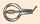

English - Kannada Dictionary
ಇಂಗ್ಲಿಷ್ - ಕನ್ನಡ ನಿಘಂಟು
- ಇಂಗ್ಲಿಷ್ ವರ್ಣಮಾಲೆಯ ಹತ್ತನೆಯ ಅಕ್ಷರ.
- (ವೈದ್ಯರು ನೀಡುವ ಔಷಧ ಸೂಚಿ ಮೊದಲಾದವುಗಳಲ್ಲಿ ಕೊನೆಯಲ್ಲಿ ಬಳಸುವ) ರೋಮನ್ ಸಂಖ್ಯೆಯ i ಯನ್ನು ಸೂಚಿಸುವ ಅಕ್ಷರ, ಉದಾಹರಣೆಗೆ ij, uj.
ಯಾಲ್ ಮೇಕೆ; ಇತಿಯೋಪಿಯಾ, ಉತ್ತರ ಈಜಿಪ್ಟ್ನ ಸೀನಾಯ್ ಪ್ರದೇಶ, ಅರೇಬಿಯಗಳಲ್ಲಿಯ ಐಬೆಕ್ಸ್ ಅಥವಾ ಕಾಡುಮೇಕೆ, ಕಾಡಾಡು.
- ಒರಟೊರಟಾಗಿ – ತಿವಿ, ಚುಚ್ಚು.
- ಇರಿ.
- (ಯಾವುದನ್ನೇ ಮೈಯೊಳಕ್ಕೆ) ದಿಢೀರನೆ ಹೆಟ್ಟು, ಚುಚ್ಚು, ನಾಟು.

- (ಚೂಪಾದ ವಸ್ತುವಿನಿಂದ ಅಥವಾ ಮುಷ್ಟಿಯಿಂದ ಮಾಡುವ) ತಿವಿತ; ಇರಿತ; ಹೊಡೆತ; ಗುದ್ದು.
- (ಆಡುಮಾತು) (ಒಳಚರ್ಮದಲ್ಲಿ) ಚುಚ್ಚುಮದ್ದು ಹಾಕುವುದು; ಚುಚ್ಚುಮದ್ದು ಸೂಜಿಯ ಚುಚ್ಚು.
ಗೊಜಗುಟ್ಟು; ಮಾತನ್ನು ಬೇಗ ಬೇಗ, ಅಸ್ಪಷ್ಟವಾಗಿ ಉಚ್ಚರಿಸು.
- ಅರ್ಥವಿಲ್ಲದೆ ಬಡಬಡಿಸು; ಬಡಬಡನೆ ಮಾತನಾಡು.
- (ಕೋತಿ ಮೊದಲಾದವುಗಳಂತೆ) ಕಿಚಕಿಚಗುಟ್ಟು.

- ಬಡಬಡಿಕೆ; ಬಡಬಡ ಮಾತು; ಗೊಜಗುಟ್ಟುವುದು; ಬಡಬಡ ಮಾತನಾಡುವುದು.
- ಅರ್ಥವಾಗದ ಮಾತು.
ಅನರ್ಥ ಬರಹ ಅಥವಾ ಮಾತು; ಮುಖ್ಯವಾಗಿ ಹಾಸ್ಯ ಪರಿಣಾಮ ಉಂಟುಮಾಡುವ ಅಥವಾ ಹಾಸ್ಯಕರವಾಗಿರುವ, ಅರ್ಥಹೀನ ಬರವಣಿಗೆ ಅಥವಾ ಮಾತುಗಾರಿಕೆ.
ಜಾಬಿರೂ:
- ಮಧ್ಯ ಹಾಗೂ ದಕ್ಷಿಣ ಅಮೆರಿಕದ ಉಷ್ಣವಲಯ ಪ್ರದೇಶದಲ್ಲಿರುವ ಬಕಪಕ್ಷಿಯ ಬಳಗದ ಒಂದು ಪಕ್ಷಿ.
- ಯೂರೋಪ್, ಏಷ್ಯಾ ಮತ್ತು ಆಹ್ರಿಕಗಳಲ್ಲಿನ ಕಪ್ಪು ಕತ್ತಿನ ಅಂಥದೇ ಹಕ್ಕಿ.
ಜಾಬರಾಂಡಿ:
- ದಕ್ಷಿಣ ಅಮೆರಿಕದಲ್ಲಿ ದೊರೆಯುವ ರುಟೇಸಿ ವಂಶದ, ಪಿಲಕಾರ್ಪಸ್ ಕುಲದ ಯಾವುದೇ ಗಿಡ, ಪೊದೆ.
- ಈ ಗಿಡದ ಎಲೆಗಳನ್ನು ಒಣಗಿಸಿ ತಯಾರಿಸಿದ (ಮೂತ್ರ ಮತ್ತು ಸ್ವೇದಗಳನ್ನು ಉತ್ತೇಜಿಸುವ) ಪುಡಿ.
- (ಹೆಂಗಸರ) ಕುಪ್ಪಸದ ಅಥವಾ ಸ್ಕಾಟ್ಲೆಂಡಿನ ಹೈಲಂಡ್ ಪ್ರದೇಶದ ಜನರ ಉಡುಪಿನ ಎದೆಭಾಗದ ಮೇಲಿನ ಅಲಂಕಾರದ – ನೆರಿಗೆ, ನೆರಿ, ಕುಚ್ಚು, ಪಟ್ಟಿ.
- (ಚರಿತ್ರೆ) (ಗಂಡಸರ) ಷರ್ಟಿನ ಮುಂಭಾಗದ ಅಲಂಕಾರದ ನೆರಿಗೆ, ನೆರಿ.
ಜಾಕನ; ತೇಲಾಡುವ ಎಲೆಗಳ ಮೇಲೆ ನಡೆಯಲು ಅನುಕೂಲವಾಗಿರುವಂತೆ ಉದ್ದವಾದ ಕಾಲು ಮತ್ತು ಬೆರಳುಗಳುಳ್ಳ, ಜಾಕನಿಡೇ ವಂಶಕ್ಕೆ ಸೇರಿದ, ನೀರನ್ನು ತಳ್ಳಿಕೊಂಡು ನಡೆಯುವ ಉಷ್ಣವಲಯದ ಒಂದು ಹಕ್ಕಿ.
ಜಾಕರಾಂಡ:
- ತುತ್ತೂರಿ ಆಕಾರದ ನೀಲಿ ಹೂಗಳನ್ನು ಬಿಡುವ, ಅಮೆರಿಕದ ಉಷ್ಣವಲಯದ ಮರಗಳ ಕುಲ.
- ಡಲ್ಬರ್ಜಿಯ ಕುಲಕ್ಕೆ ಸೇರಿದ, ಬೀಟೆಯಂತೆ ಸುವಾಸನೆಯ ದಾರುವುಳ್ಳ, ಅಮೆರಿಕದ ಉಷ್ಣವಲಯ ಪ್ರದೇಶದ ಮರ.
ಜೇಸಿಂತ್; ರತ್ನವಾಗಿ ಉಪಯೋಗಿಸುವ, ಕೆಂಗಿತ್ತಳೆ ಬಣ್ಣದ ಒಂದು ಬಗೆಯ ನೈಸರ್ಗಿಕ ಜಿರ್ಕಾನ್ (ಜಿರ್ಕೋನಿಯಮ್ ಸಿಲಿಕೇಟ್).

ಜಾಕು:
- ಎತ್ತುಗ; ಭಾರ ಎತ್ತುವ ಯಂತ್ರ.
- ಊರೆ ಎತ್ತುಗ; ವಾಹನದ ಚಕ್ರವನ್ನು ಚೊಕ್ಕಟ ಮಾಡಲು ಯಾ ಬದಲಾಯಿಸಲು ಅಚ್ಚನ್ನು ಮೇಲೆತ್ತಿ ಹಿಡಿಯುವ ಸಲಕರಣೆ, ಎತ್ತುವ ಸಾಧನ.
- ಗಡಿಯಾರದಲ್ಲಿ ಗಂಟೆಯನ್ನು ಬಾರಿಸುವ, ಮಾನವಾಕಾರದ ಬೊಂಬೆ.
- ಮೇಟುಕಡ್ಡಿ; ಹಾರ್ಪ್ಸಿಕಾರ್ಡ್ ಮೊದಲಾದ ವಾದ್ಯಗಳಲ್ಲಿ ತಂತಿಯನ್ನು ಮಿಡಿಯಲು ಅಳವಡಿಸಿರುವ ಸಲಕರಣೆ.
- = $^1$cheapjack.
- = lumberjack.
- = steeplejack.
- ಹಲವು ಯಂತ್ರ ಮೊದಲಾದವುಗಳ ಭಾಗಗಳ ಹೆಸರು.
- = bootjack.
- (ಮುಂತಾದ ಚಿಕ್ಕ ಅಥವಾ ಪುಟ್ಟ) ಪೈಕ್ ಮೀನು.
- (ಬೋಲ್ಸ್ ಆಟ) (ಆಟಗಾರರು ಗುರಿಯಿಡಬೇಕಾದ) ಪುಟ್ಟ ಬಿಳಿ ಚೆಂಡು.
- (ಬಹುವಚನದಲ್ಲಿ, ಏಕವಚನವಾಗಿ ಪ್ರಯೋಗ) ಕಲ್ಲಿನ ಅಥವಾ ಲೋಹದ ಸಣ್ಣ ಗೋಲಿಗಳಿಂದ ಆಡುವ ಒಂದು ಆಟ.
- (ಕೆಲವು ಜಾತಿ ಪ್ರಾಣಿಗಳಲ್ಲಿ) ಗಂಡುಪ್ರಾಣಿ.
- (ಅಶಿಷ್ಟ) ಪತ್ತೇದಾರ; ಪೊಲೀಸಿನವನು.
- (ಅಮೆರಿಕನ್ ಪ್ರಯೋಗ) (ಅಶಿಷ್ಟ) ಹಣ.
- ಗುಲಾಮ; ಮನುಷ್ಯನ, ಮುಖ್ಯವಾಗಿ ಸೈನಿಕನ, ಪೋಷಾಕು ತೊಟ್ಟಿರುವ ಸೇವಕ, ಮೊದಲಾದವರ ಚಿತ್ರವಿರುವ ಇಸ್ಪೀಟೆಲೆ.
- ವಿದ್ಯುನ್ಮಂಡಲವನ್ನು ಸಂಪರ್ಕಿಸುವ ಸಾಧನ.
- (Jack) (John ಎಂಬುದರ ಬದಲು ಬಳಸುವ ರೂಪಕವಾಗಿ) ಶ್ರೀಸಾಮಾನ್ಯ ಅಥವಾ ಯಾವುದೇ ಜಾತಿಯ ಪ್ರಾಣಿಯ ಗಂಡು.
- everyman jack ಪ್ರತಿಯೊಬ್ಬನೂ; ಪ್ರತಿಯೊಬ್ಬ ಗಂಡಸೂ.
- Jack and Jill
- ಪೋರಪೋರಿ; ಹುಡುಗ ಹುಡುಗಿ.
- ಗಂಡು ಹೆಣ್ಣು; ಗಂಡಸು ಹೆಂಗಸು.
- jack of all trades ಸಕಲ ಕಾರ್ಯಪಟು; ಸರ್ವಕಾರ್ಯ ನಿಪುಣ; ಎಲ್ಲ ಕೆಲಸಗಳನ್ನೂ ಮಾಡಬಲ್ಲವನು; ಯಾವುದೇ ಕಸುಬು ಮಾಡಬಲ್ಲವನು.
- before you could say Jack Robinson ‘ಜ್ಯಾಕ್ ರಾಬಿನ್ಸನ್’ ಎನ್ನುವಷ್ಟರಲ್ಲಿಯೇ, ಎನ್ನುವಷ್ಟಕ್ಕೂ ಮುಂಚೆಯೇ; ಬಹಳ ಬೇಗನೆ ಅಥವಾ ಕೂಡಲೇ.
- on one’s jack (also, ಒ ಒನೆ’ ಝ ಝೊನೆ) (ಅಶಿಷ್ಟ) ಒಂಟಿಯಾಗಿ; ಒಬ್ಬೊಂಟಿಗನಾಗಿ.

- ಎತ್ತುಗದಿಂದ, ಜಾಕಿನಿಂದ ಮೇಲೆತ್ತು.
- ಜಾಕಿನಿಂದಲೋ ಎಂಬಂತೆ ಮೇಲೆತ್ತು.
- (ಉದಾಹರಣೆಗೆ ಬೆಲೆಗಳನ್ನು) ಏರಿಸು.
- jack in (or up) (ಅಶಿಷ್ಟ) (ಪ್ರಯತ್ನ ಮೊದಲಾದವನ್ನು) ಕೈಬಿಡು.
- jack up = $^2$jack(1, 2).

- ಹಡಗು ಪತಾಕೆ; ನೌಕೆ ನಿಶಾನೆ; ಹಡಗಿನ ಬಾವುಟ; ನೌಕಾಧ್ವಜ (ಮುಖ್ಯವಾಗಿ ರಾಷ್ಟ್ರವನ್ನು ಸೂಚಿಸುವ, ಹಡಗಿನ ಮೂತಿಯ ಭಾಗದ ಧ್ವಜಸ್ತಂಭದ ಮೇಲೆ ಹಾರಿಸುವ) ಹಡಗಿನ ಪತಾಕೆ, ಸಣ್ಣ ಬಾವುಟ; British jack ಬ್ರಿಟಿಷ್ ನೌಕಾ ಧ್ವಜ.
- ಸೂಚನಾಧ್ವಜ; ಹಡಗು ನಡೆಸುವವನ ಸೂಚನೆಗಾಗಿ ಮುಂಗೂವೆಯಲ್ಲಿ ಹಾರಿ ಬಿಟ್ಟಿರುವ ಒಂದೇ ಬಾವುಟ.
- ‘ಯೂನಿಯನ್ ಜಾಕ್’ ಬಾವುಟ.

- (ಪ್ರಾಚೀನ ಪ್ರಯೋಗ ಅಥವಾ ಚರಿತ್ರೆ) ಪದಾತಿ ಅಂಗಿ; ಸೈನ್ಯದ ಕಾಲಾಳು ಧರಿಸುವ, ತೋಳಿಲ್ಲದ ಅಂಗಿ.
- = blackjack.

ಷೋಕಿಲಾಲ; ಅಲಂಕಾರಪ್ರಿಯ.

- (ಬೇರೊಬ್ಬನಿಗಾಗಿ) ಕಚ್ಚಾ ಚಾಕರಿ ಮಾಡು; ಕತ್ತೆಯಂತೆ ದುಡಿ.
- (ಅನೈತಿಕ ಕಾರ್ಯದಲ್ಲಿ, ಬೇರೊಬ್ಬನಿಗೆ) ನೆರವಾಗು; ಸಹಾಯ ಮಾಡು.
- (ಪ್ರಾಚೀನ ಪ್ರಯೋಗ) ಪಳಗಿದ-ಕಪಿ, ಕೋತಿ;
- ತುಂಟ (ಮಗು); ತಂಟಲಮಾರಿ.
- ಜಂಬದ ಕೋಳಿ.
- ತಲೆಹರಟೆ (ಹುಡುಗ, ವ್ಯಕ್ತಿ).
- ಮಂಗನಂಥವನು(ಳು).

(jackeroo ಸಹ). ತರಬೇತಿಗಾರ; (ಆಸ್ಟ್ರೇಲಿಯ, ಆಡುಮಾತು) (ಕುರಿಕ್ಷೇತ್ರದಲ್ಲಿ) ಕೆಲಸ ಕಲಿಯಲು, ತರಬೇತಿ ಪಡೆಯಲು ಬಂದವನು.

(ಆಸ್ಟ್ರೇಲಿಯ) (ಆಡುಮಾತು) (ಕುರಿ ಕ್ಷೇತ್ರದಲ್ಲಿ) ತರಬೇತಿ ಪಡೆಯುತ್ತಿರು.
- ಗಂಡು ಕತ್ತೆ.
- ಪೆದ್ದ; ದಡ್ಡ; ಹೆಡ್ಡ; ಮಡ್ಡಿ; ಮಡೆಯ; ಮಂಕ; ಮುಟ್ಠಾಳ.
ಜಾಕ್ಡಾ; ಕಾಗೆ ಕುಲದ, ಸೂರುಗಳ ಮೇಲೆ ಪದೇ ಪದೇ ಬರುವ, ಎತ್ತರವಾದ ಕಟ್ಟಡಗಳಲ್ಲಿ ಗೂಡು ಕಟ್ಟುವ, ಕುತೂಹಲ ಪ್ರಕೃತಿಯ ಸಣ್ಣ ಪಕ್ಷಿ.


- ಜಾಕೆಟ್ಟು; ಜಾಕೀಟು; ಕಂಚುಕ; ಕವಚ:
- ಗಂಡಸಿನ ಅಥವಾ ಹೆಂಗಸಿನ, ತೋಳುಳ್ಳ ನಡುವಂಗಿ.
- ಅದೇ ರೀತಿ ಧರಿಸುವ ಇತರ ವಸ್ತು.
- ಹಂಡೆಕವಚ; ಹಂಡೆ ಹೊದಿಕೆ; ರಕ್ಷಣೆ, ಶಾಖ ತಡೆತ, ಮೊದಲಾದವಕ್ಕಾಗಿ ಬಾಯ್ಲರಿನ ಅಥವಾ ಕುದಿಹಂಡೆಯ ಸುತ್ತಲೂ ಹೊದಿಸುವ ಹೊದಿಕೆ, ಆವರಣ, ಕವಚ.
- (ಪುಸ್ತಕದ) ಹೊರ – ಹೊದಿಕೆ, ಕವಚ, ಮುಸುಕು; ಮಾರಾಟಕ್ಕಾಗಿ ಪ್ರದರ್ಶಿಸುವ ಪುಸ್ತಕದ ಮೇಲ್ಗಡೆಯ, ಬಣ್ಣದ ಚಿತ್ರ ಮೊದಲಾದವುಗಳಿರುವ, ಸಡಿಲವಾದ ಮರೆ ಹಾಳೆ.
- ಪ್ರಾಣಿಯ (ನೈಸರ್ಗಿಕ) ಮೈ ಕೂದಲು.
- ಆಲೂಗೆಡ್ಡೆಯ ಸಿಪ್ಪೆ (ಮುಖ್ಯವಾಗಿ ಉಂಡೆಯಾಗಿ ಬೇಯಿಸಿದಾಗಿನದು).
in their jackets (ಅಲೂಗೆಡ್ಡೆ ಮೊದಲಾದವುಗಳ ವಿಷಯದಲ್ಲಿ) ಸಿಪ್ಪೆಸಹಿತ; ಸಿಪ್ಪೆ ಸುಲಿಯದೆ, ತೆಗೆಯದೆ: potatoes cooked in their jackets ಸಿಪ್ಪೆ ಸುಲಿಯದೆ ಬೇಯಿಸದೆ ಅಲೂಗೆಡ್ಡೆಗಳ್ಳು.
- ನಡುವಂಗಿ ಅಥವಾ ಕವಚ-ತೊಡಿಸು.
- (ರೂಪಕವಾಗಿ) ಹೊರಕವಚದಲ್ಲಿ ಮುಚ್ಚು; ಮುಸುಕು – ಹಾಕು, ತೊಡಿಸು: reports which had been jacketed ಮುಸುಕು ತೊಡಿಸಿದ, ಮರೆಮಾಚಿದ – ವರದಿಗಳು.
ಸಿಪ್ಪೆ ಸಹಿತ ಬೇಯಿಸಿ ಬಡಿಸಿದ ಆಲೂಗೆಡ್ಡೆ.
ಜ್ಯಾಕ್ ಮೀನು:
- ಮೊನಚು ಮೂತಿಯ ಚೂಪು ಹಲ್ಲುಗಳುಳ್ಳ, ಇಸಾಕ್ಸ್ ಲೂಸಿಯಸ್ ಕುಲದ. ಹೊಟ್ಟೆಬಾಕ ಮೀನು.
- ಇಸೋಸಿಡೇ ವಂಶದ ಯಾವುದೇ ಮೀನು.
ಶ್ರೀಮಾನ್ ಹಿಮ; ವ್ಯಕ್ತೀಕರಿಸಿದ ಹಿಮ.
- ಹಲಸಿನ ಮರ.
- ಹಲಸಿನ ಹಣ್ಣು.
(ಅಮೆರಿಕನ್ ಪ್ರಯೋಗ) ಗಾಳಿ – ಸುತ್ತಿಗೆ, ಬೈರಿಗೆ; ವಾಯುಚಾಲಿತ ಸುತ್ತಿಗೆ ಅಥವಾ ಬೈರಿಗೆ.

ಸೊಕ್ಕಿನ ಅಧಿಕಾರಿ; ದುರಭಿಮಾನಿ ಅಧಿಕಾರಿ.
ಹಸುರಾಳು: ಮೇ-ದಿನದ ಉತ್ಸವಗಳಲ್ಲಿ ಎಲೆಗಳಿಂದ ಮುಚ್ಚಿದ ಚೌಕಟ್ಟಿನಲ್ಲಿ ಮರೆಸಿ ಇಟ್ಟಿರುವ ಮನುಷ್ಯ ಅಥವಾ ಹುಡುಗ.
(ಬ್ರಿಟಿಷ್ ಪ್ರಯೋಗ) ಗಲ್ಲುಗಾರ; ಗಲ್ಲಿಗೇರಿಸುವ ಅಧಿಕಾರಿ.

ಮಡಿಚು ಚಾಕುವಿನಿಂದ ಕತ್ತರಿಸು, ಇರಿ.
(ಮಡಿಚು ಚಾಕುವಿನಂತೆ) ಮಧ್ಯೆ ಮಡಿಚಿಕೊ.
ಜಾಕ್ ವಿಮಾನ; ದುರ್ಗಮವಾದ ಪ್ರಯಾಣಕ್ಕಾಗಿ ನಿರ್ಮಿಸಿದ ಮಧ್ಯಮ ಗಾತ್ರದ ವಿಮಾನ.
ಎತ್ತುಗ(ದೊಡನೆ ಬಳಸುವ) ಬೆಣೆ.
- (ಪೋಕರ್ ಆಟ) ಭಾರಿ ಬಾಜಿ; [ಎರಡು ಗುಲಾಮ (ಜಾಕಿ) ಅಥವಾ ಇನ್ನೂ ಉತ್ತಮವಾದ ಎಲೆಗಳುಳ್ಳ ಆಟಗಾರನು] ಬಾಚಿಕೊಳ್ಳುವ ಬಾಜಿ ಹಣದ (ಪಂಥ ಪಣದ) ಮೊತ್ತ.
- (ಯಾವುದೇ ಅದೃಷ್ಟ ಪರೀಕ್ಷೆಯಲ್ಲಿ ಅಥವಾ ಲಾಟರಿಯಲ್ಲಿ ಗೆದ್ದುಕೊಂಡ) ಭಾರಿ ಬಹುಮಾನ.
hit the jackpot
- ಭಾರಿ ಬಹುಮಾನವನ್ನು ಹೊಡೆದುಕೊ, ಗೆದ್ದುಕೊ.
- (ರೂಪಕವಾಗಿ) ತೀರ ಅದೃಷ್ಟಶಾಲಿಯಾಗಿರು.
ನಕಲಿ ಶ್ಯಾಮ; ವಿದೂಷಕ; ಕೋಡಂಗಿ; ಕೀಳ್ತರದ ಹಾಸ್ಯಗಾರ, ಹಾಸ್ಯನಟ.
ಸಣ್ಣ ಬಾಗುಪಟ್ಟಿ; ಬಾಗು ಛಾವಣಿಗೆ ಹಾಕಿರುವ ಮರದ ಸಣ್ಣಪಟ್ಟಿ.
ಜ್ಯಾಕ್ ರಸಲ್; ಒಂದು ಬಗೆಯ ಟೆರಿಯರ್ ನಾಯಿ.
ಪುಟ್ಟ ಉಲ್ಲಂಗಿ ಹಕ್ಕಿ.
(ನೌಕಾಯಾನ) ಧ್ವಜಸ್ತಂಭ; ಬಾವುಟದ ಕಂಬ; ಕೂವೆಕಂಬದ ತುದಿಯಲ್ಲಿ ಬಾವುಟ ಹಾರಿಸಲು ನೆಟ್ಟ ಸಣ್ಣ ಕಂಬ.
(ಅಣೆಕಲ್ಲಾಟ ಮೊದಲಾದವುಗಳಲ್ಲಿ ಬಳಸುವ) ಪುಟ್ಟ ದುಂಡುಗಲ್ಲು ಅಥವಾ (ಲೋಹದ) ಗುಂಡು, ಗೋಲಿ.
- (ಮರ, ಮೂಳೆ, ಮೊದಲಾದವುಗಳ) ಸಣ್ಣ ಚೆಕ್ಕೆ; ಸಿಗುರು.
- (ಬಹುವಚನದಲ್ಲಿ) ಚೆಕ್ಕೆ ಆಟ; ಮರ, ಮೂಳೆ, ಮೊದಲಾದವುಗಳ ಸಣ್ಣ ಸಿಗುರುಗಳ ಗುಡ್ಡೆಯಿಂದ, ಉಳಿದ ಸಿಗುರುಗಳನ್ನು ಕೆಡವದಂತೆ ಒಂದೊಂದಾಗಿ ತೆಗೆದುಹಾಕಿ ಗುಡ್ಡೆಯನ್ನು ಕರಗಿಸುವ ಒಂದು ಆಟ.
ನಾವಿಕ.
ಸುತ್ತುಟವಲು; ಉರುಳುಗಲ್ಲಿನ ಮೇಲೆ ಹರಡಿದ ಕೈ ಚೌಕ, ಟವೆಲು.
- (ಮುಖ್ಯವಾಗಿ ವಾಸ್ತುಶಿಲ್ಪದ ವಿಷಯದಲ್ಲಿ) ಜಾಕೋಬಿಯನ್; ಇಂಗ್ಲೆಂಡಿನ ಮೊದಲನೆಯ ಜೇಮ್ಸ್ ದೊರೆಯ ಆಳ್ವಿಕೆಯ (1603–1625) ಕಾಲದ.
- ಸೆಂಟ್ ಜೇಮ್ಸ್ ದಿ ಲೆಸ್ನ ಅಥವಾ ಆತನ ಉಪದೇಶ ಪತ್ರದ.
- (ಪೀಠೋಪಕರಣ) ಕಪ್ಪು ಓಕ್ (ಮರದ) ಬಣ್ಣದ.
- (ಬ್ರಿಟಿಷ್ ಪ್ರಯೋಗ) (ನಾಟಕ, ಸಾಹಿತ್ಯ, ಮೊದಲಾದವುಗಳ ವಿಷಯದಲ್ಲಿ) ಜಾಕೋಬಿಯನ್ ಕಾಲದ; ಹದಿನೇಳನೆಯ ಶತಮಾನದ ಮೊದಲ ಭಾಗದ.

- (ಇಂಗ್ಲೆಂಡಿನ) ಮೊದಲನೆಯ ಜೇಮ್ಸ್ ದೊರೆಯ (ಆಳ್ವಿಕೆಯ) ಕಾಲದ ವ್ಯಕ್ತಿ ಅಥವಾ ವಸ್ತು.
- = Jacobite(2).

- ಜ್ಯಾಕೊಬಿನ್;
- ಡಾಮಿನಿಕನ್ ಪಂಥದ ಕ್ರೈಸ್ತ ಪಾದ್ರಿ.
- (ಹ್ರೆಂಚ್ ಮಹಾಕ್ರಾಂತಿಯ ಕಾಲದ ಪ್ಯಾರಿಸಿನ) ತೀವ್ರಗಾಮಿ ಪ್ರಜಾಪ್ರಭುತ್ವವಾದಿಗಳ ಸಮಾಜದ ಸದಸ್ಯ.
- ಆ ಸಮಾಜದ ತತ್ತ್ವಗಳಲ್ಲಿ ಸಹಾನುಭೂತಿಯುಳ್ಳವನು.
- ಉಗ್ರಗಾಮಿ; ತೀವ್ರಗಾಮಿ; ತೀವ್ರತರವಾದ ತತ್ತ್ವಗಳ ಪ್ರತಿಪಾದಕ ಅಥವಾ ಅನುಯಾಯಿ.

ಮುಸುಕಿನ ಪಾರಿವಾಳ; ಕುತ್ತಿಗೆಯ ಮೇಲೆ ಗರಿಗಳು ಹಿಂದುಮುಂದಾಗಿದ್ದು ಕ್ರೈಸ್ತಪಾದ್ರಿಯ ಮುಸುಕಿನಂತೆ, ಕುಲಾವಿಯಂತೆ, ಅಳವಟ್ಟಿರುವ ಒಂದು ಜಾತಿಯ ಪಾರಿವಾಳ.
ಉಗ್ರಗಾಮಿ ಪಕ್ಷದ; ತೀವ್ರ ಉಗ್ರಪಕ್ಷದ; ಉಗ್ರ ಪ್ರಜಾಪ್ರಭುತ್ವವಾದದ.
- ಜ್ಯಾಕೊಬಿನ್ ತತ್ತ್ವ.
- ತೀವ್ರ, ಉಗ್ರ – ಪಕ್ಷ, ವಾದ ಯಾ ತತ್ತ್ವ.
ಜ್ಯಾಕೊಬೀಕರಿಸು; (ಒಬ್ಬನನ್ನು) ಉಗ್ರಪಕ್ಷವಾದಕ್ಕೆ ತಿರುಗಿಸು; ಉಗ್ರಪಕ್ಷೀಯನನ್ನಾಗಿಸು.
ಜ್ಯಾಕೊಬೈಟ್:
- ಇಂಗ್ಲೆಂಡಿನಲ್ಲಿ ರಾಜತ್ಯಾಗ ಮಾಡಿದ ಎರಡನೆಯ ಜೇಮ್ಸ್ನ (1685-88) ಅಥವಾ ರಾಜ್ಯಕ್ಕೆ ಹಕ್ಕು ಹೂಡಿದ ಅವನ ವಂಶಜರ ಯಾ ಸ್ಟೂವರ್ಟರ ಬೆಂಬಲಿಗ, ಅನುಯಾಯಿ.
- ಅಮೆರಿಕದ ಕಾದಂಬರಿಕಾರ ಹಾಗೂ ವಿಮರ್ಶಕ ಹೆನ್ರಿ ಜೇಮ್ಸ್ನ ಅಭಿಮಾನಿ.
- (ಸಿರಿಯದ 6ನೇ ಶತಮಾನದ ಸಂನ್ಯಾಸಿ) ಜ್ಯಾಕೊಬಸ್ ಬರಡೆಯಸನ ಅನುಯಾಯಿ.
ಇಂಗ್ಲೆಂಡಿನ ರಾಜ ಎರಡನೆಯ ಜೇಮ್ಸ್ನ ಪಕ್ಷದ, ಅಥವಾ ಅವನ ವಂಶಜರ ಪಕ್ಷದ.
ಜಾಕೊಬೈಟ್ ಪಕ್ಷದ ಗುರಿ, ತತ್ತ್ವ.
ಜೇಕಬ್ ಕುರಿ; ಮೈಮೇಲೆಲ್ಲ ಚುಕ್ಕೆಗಳಿರುವ, ಆಕರ್ಷಕ ರೂಪದ ಕುರಿ ತಳಿ.
ಜೇಕಬ್ನ ದಂಡ; ಜೇಕಬ್ ಕಡ್ಡಿ;
- ಮೋಜಣಿದಾರರು ಆಸರೆಯಂತೆ ಬಳಸುವ ಮೂಗಾಲಿನ, ಕಬ್ಬಿಣದ ಮುಸುಕಿರುವ ಕಂಬಿ, ದಂಡ.
- ದೂರಗಳನ್ನೂ ಎತ್ತರಗಳನ್ನೂ ಅಳೆಯುವ ಒಂದು ಸಲಕರಣೆ.
ಮೇಣಕಪಡ; ಪೊಲ್ಟೀಸ್ ಕಟ್ಟುವುದು ಮೊದಲಾದವಕ್ಕೆ ಬಳಸುವ ನೀರಿಳಿಯದಂಥ, ನಸು ದಪ್ಪದ, ಬಣ್ಣ ಕಟ್ಟಿದ, ಹತ್ತಿಯ ಬಟ್ಟೆ.

- ಜ್ಯಾಕಾರ್ಡ್; ತೂತುಗಳನ್ನು ಮಾಡಿದ ಕಾರ್ಡುಗಳುಳ್ಳ, ಚಿತ್ರನೆಯ್ಗೆಯನ್ನು ಮಾಡಲು ಅನುಕೂಲಿಸುವ ಸಲಕರಣೆ.
- = Jacquard loom.
- ಜಾಕಾರ್ಡ್ ಬಟ್ಟೆ; ಚಿತ್ರಿತ ನೆಯ್ಗೆಯ ಬಟ್ಟೆ.
ಜಾಕಾರ್ಡ್ ಮಗ್ಗ; ಚಿತ್ರನೆಯ್ಗೆ ಮಗ್ಗ; ಹ್ರಾನ್ಸಿನ ಲೈಅನ್ಸ್ ನಗರದ ಜಾಕಾರ್ಡ್ (1834) ಎಂಬಾತನು ಬಟ್ಟೆಗಳಲ್ಲಿ ಚಿತ್ರನೆಯ್ಗೆ ನೆಯ್ಯಲು ರಚಿಸಿದ ಸಲಕರಣೆಯನ್ನು ಅಳವಡಿಸಿದ ಮಗ್ಗ.
- (ಮುಖ್ಯವಾಗಿ 1357–58ರಲ್ಲಿ ಹ್ರಾನ್ಸಿನಲ್ಲಿ ನಡೆದ) ರೈತಾಪಿ (ಜನರ) ದಂಗೆ.
- ರೈತಾಪಿ ಜನ; ರೈತರು.
- (ನ್ಯಾಯಶಾಸ್ತ್ರ) ಸುಳ್ಳು ಮದುವೆ; ಮಿಥ್ಯಾ ದಾಂಪತ್ಯ; ಮಿಥ್ಯಾ ವಿವಾಹ; ಒಬ್ಬನ ಹೆಂಡತಿ ಅಥವಾ ಒಬ್ಬಳ ಗಂಡ ಎಂದು ಹೇಳಿಕೊಂಡು ಸುಳ್ಳು ಹಕ್ಕು ಹೂಡುವ ಅಪರಾಧ.
- (ವೈದ್ಯಶಾಸ್ತ್ರ) (ಕಾಯಿಲೆಯಿಂದ) ತೊಳಲಾಟ; ದೇಹದ ಎಡೆಬಿಡದ ಹೊರಳಾಟ.
- (ವೈದ್ಯಶಾಸ್ತ್ರ) (ಸ್ನಾಯುಗಳ ಅಥವಾ ಕೈಕಾಲುಗಳ) ತುಡಿತ; ಕಂಪನ; ಸ್ಪಂದನ; ತುಯ್ತ; ಸೆಳೆತ; ಎಳೆತ.
jactitation of marriage = jactitation(1).

ಜಕೂಸಿ; ದೇಹದ ಅಂಗಗಳನ್ನು ನೀವಲು ನೀರೊಳಗೆ ಜಲಧಾರೆಗಳನ್ನು ಎರಚುವ ವ್ಯವಸ್ಥೆಯುಳ್ಳ ದೊಡ್ಡ ಸ್ನಾನದ ತೊಟ್ಟಿ, ಟಬ್ಬು.
- ತಟ್ಟು; ಕೀಳು ಜಾತಿಯ ಕುದುರೆ; ಕೀಳುಜಾತಿಯ, ಸುಸ್ತುಬಿದ್ದ, ಜೀರ್ಣವಾದ, ಬಡಕಲು ಕುದುರೆ.
- (ನಿಂದಿಸುವಲ್ಲಿ, ಸಾಮಾನ್ಯವಾಗಿ ತಮಾಷೆಯಾಗಿ) ಹೆಂಗಸು.
(ಮುಖ್ಯವಾಗಿ ಭೂತಕೃದಂತದಲ್ಲಿ) ಬಳಲಿಸು; ನಿತ್ರಾಣಗೊಳಿಸು; ಕಷ್ಟದ ಕೆಲಸ ಮಾಡಿಸಿ ಸುಸ್ತು ಬೀಳಿಸು.
- ಜೇಡ್:
- ಕ್ಯಾಲ್ಸಿಯಂ ಮತ್ತು ಮೆಗ್ನೀಷಿಯಂ ಸಿಲಿಕೇಟುಗಳಿಂದಾದ, ಆಭರಣಗಳಲ್ಲಿ ಯಾ ಸಲಕರಣೆಗಳಲ್ಲಿ ಬಳಸುವ ಒಂದು ಬಗೆಯ, ಸಾಮಾನ್ಯವಾಗಿ ಹಸುರು ಬಣ್ಣದ, ರತ್ನ.
- ಸೋಡಿಯಂ ಅಲ್ಯೂಮಿನಿಯಮ್ಮಿನಿಂದಾದ ಹಸುರು ಬಣ್ಣದ ಇದೇ ರೀತಿಯ ರತ್ನ.
- ಜೇಡ್ ಬಣ್ಣ; ಮಾಸಲು ಹಸುರು ಬಣ್ಣ.
- ಸುಸ್ತಾಗಿರುವ; ದಣಿದ,
- ಬೇಸರವಾಗಿರುವ; ಚಿಟ್ಟು ಹಿಡಿದಿರುವ.
- ಸುಸ್ತಾಗಿರುವಂತೆ; ದಣಿದಿರುವಂತೆ.
- ಬೇಸರವಾಗಿರುವಂತೆ; ಚಿಟ್ಟು ಹಿಡಿದಿರುವಂತೆ.
- ಸುಸ್ತಾಗಿರುವಿಕೆ; ದಣಿವು.
- ಬೇಸರವಾಗಿರುವಿಕೆ; ಚಿಟ್ಟು (ಹಿಡಿದಿರುವಿಕೆ).
(ಚದುರಂಗದ ಆಟಗಾರ ತಾನು ಕಾಯನ್ನು ಮುಟ್ಟುತ್ತಿರುವುದು ನಡೆಸುವುದಕ್ಕಾಗಿ ಅಲ್ಲವೆಂದೂ, ಅದನ್ನು ಸರಿಯಾಗಿ ಕೂರಿಸುವುದಕ್ಕಗಿ ಮಾತ್ರ ಮುಟ್ಟುತ್ತಿದ್ದೇನೆಂದೂ ಹೇಳುವ ಮಾತು) ಸರಿಯಾಗಿ ಕೂರಿಸುತ್ತಿದ್ದೇನೆ, ಅಷ್ಟೆ.
(ಅಮೆರಿಕನ್ ಪ್ರಯೋಗ)
- ಜರ್ಮನಿಯ ಅಥವಾ ಆಸ್ಟ್ರಿಯದ – ಬಂದೂಕದಾರ, ತೋಪುದಾರ, ಕೋವಿ ಸಿಪಾಯಿ.
- ದೊಡ್ಡ (ಗಾತ್ರದ) ಕಡಲ ಕೊಕ್ಕರೆ.

ಜಾಹ (ಕಿತ್ತಳೆ); ದಪ್ಪ ಸಿಪ್ಪೆಯ, ಅಂಡಾಕಾರದ ಕಿತ್ತಳೆ ಹಣ್ಣು.

- ಕೋಚುಕೋಚಾಗಿ – ಹರಿ, ಕತ್ತರಿಸು.
- (ಏಣಿನಲ್ಲಿ, ಮೇಲ್ಮೈಯಲ್ಲಿ) ಹಲ್ಲು ಮಾಡು; ಏರುತಗ್ಗು ಮಾಡು; ಕಚ್ಚುಕಚ್ಚು ಮಾಡು; ಗರಗಸದಂತೆ ಮಾಡು; ಕ್ರಕಚಾಕಾರ ಮಾಡು.

- (ಅಶಿಷ್ಟ) (ಕುಡಿತದ) ಒಂದು – ಸುತ್ತು, ಸೂಳು, ವರಸೆ, ಪಟ್ಟು.
- ಪಾನಕೇಳಿ; ಕುಡಿತದ ಮೋಜು.
- ಸಣ್ಣ ಹೊರೆ.
- (ಹೊರೆ ಹೊತ್ತು ಬರುವ) ಒಂದು – ವರಿಸೆ, ಸೂಳು.
- ಒಬ್ಬೆ; ಒಂದಿಷ್ಟು ಪ್ರಮಾಣ; give another jag of oats to the horse ಕುದುರೆಗೆ ಇನ್ನೊಂದು ಒಬ್ಬೆ ಓಟ್ಗಳನ್ನು ತಿನ್ನಿಸು.
- (ಬಿರುಸು ಕೆಲಸ, ಭಾವ, ಮೊದಲಾದವುಗಳಲ್ಲಿ) ಮಗ್ನತೆಯಿಂದ ತೊಡಗಿರುವ – ಅವಧಿ, ಸೂಳು.

- ಕೋಚುಕೋಚಾಗಿ ಕತ್ತರಿಸಿದ ಅಥವಾ ಹರಿದ ಅಂಚುಳ್ಳ.
- ಹಲ್ಲು ಹಲ್ಲಾಗಿ ಅಥವಾ ಕೋಚುಕೋಚಾಗಿ ಕತ್ತರಿಸಿದ; ಗರಗಸದ ಅಂಚಿನಂತೆ ಮಾಡಿದ.

ಕೋಚುಕೋಚಾಗಿ; ಏರುತಗ್ಗಿರುವಂತೆ; ಚೂಪುಚೂಪಾಗಿ; ಕಚ್ಚುಕಚ್ಚಾಗಿ; ಮುಳ್ಳುಮುಳ್ಳಾಗಿ; ಹಲ್ಲುಹಲ್ಲಾಗಿ.
ಕಚ್ಚುಕಚ್ಚಾಗಿರುವಿಕೆ; ಹಲ್ಲುಹಲ್ಲಾಗಿರುವಿಕೆ; ಕೋಚು ಕೋಚಾಗಿರುವಿಕೆ; ಏರುತಗ್ಗಾಗಿರುವುದು; ಮುಳ್ಳು ಮುಳ್ಳಾಗಿರುವುದು; ಚೂಪುಚೂಪಾಗಿರುವುದು.
- ಕೋಚುಕತ್ತರಿ; ಮೊನೆಮೊನೆಯಾಗಿರುವಂತೆ ಕತ್ತರಿಸುವ ಕತ್ತರಿ ಮೊದಲಾದ ಸಲಕರಣೆ.
- (ಮುಖ್ಯವಾಗಿ ತಿಂಡಿ ತಿನಿಸುಗಳನ್ನು ಅಲಂಕಾರವಾಗಿ ಕತ್ತರಿಸುವ) ಹಲ್ಲಿನ ಚಕ್ರ.
- (ಸವೆದು ಹೋದ ತಂತಿದಾರದಿಂದ ಮೇಲೆದ್ದ ತಂತಿಚೂರು ಮೊದಲಾದ) ಚೂಪಾಗಿ, ಚುಚ್ಚುವಂತಿರುವ ವಸ್ತು, ಮುಖ್ಯವಾಗಿ ಮುಳ್ಳು.
ಮೊನಚುಳ್ಳ; ಚೂಪುಗಳಿರುವ; ಕೋಚುಗಳಿಂದ ತುಂಬಿದ; ಉಬ್ಬು ತಗ್ಗಿರುವ; ಓರೆಕೋರೆಯಿರುವ: jaggy teeth ಚೂಪುಚೂಪಾದ ಹಲ್ಲುಗಳು.
(ಭಾರತ)
- ಜಹಗೀರು; ಜಹಗೀರು ಕೊಡುವುದು; ಒಂದು ಜಿಲ್ಲೆಯ, ಪ್ರಾಂತದ ಆಡಳಿತವನ್ನೂ ವರಮಾನವನ್ನೂ ಒಬ್ಬನಿಗೆ ಅಥವಾ ಒಂದು ಸಂಸ್ಥೆಗೆ ಸರ್ಕಾರ ವಹಿಸುವುದು.
- (ಹಾಗೆ ಕೊಟ್ಟ) ಜಹಗೀರು (ಪ್ರಾಂತ).
ಜಹಗೀರುದಾರ; ಜಹಗೀರಿನ ಒಡೆಯ.
ಜ್ಯಾಗ್ವರುಂಡಿ; ದಕ್ಷಿಣ ಮತ್ತು ಮಧ್ಯ ಅಮೆರಿಕದ, ಬೂದು ಬಣ್ಣದ, ಉದ್ದ ಬಾಲದ, ಬೆಕ್ಕಿನ ಜಾತಿಯ ಪ್ರಾಣಿ.
ಹೈ ಅಲೈ (ಆಟ); ದೊಡ್ಡ ದೊಡ್ಡ ವರ್ತುಲಾಕಾರದ ಬುಟ್ಟಿಗಳೊಡನೆ ಆಡುವ, (ಪೆಲೋಟ ಆಟದಂಥ) ಆಟ.
ಜೈನ – ಮತ, ಧರ್ಮ.
ಜೈನ; ಜೈನ ಮತಾನುಯಾಯಿ.
(ಅಶಿಷ್ಟ) (ಆಸ್ಟ್ರೇಲಿಯ ಮತ್ತು ನ್ಯೂಸಿಲೆಂಡ್) ಸರಿ(ಯಾಗಿರುವ); ಸಮರ್ಪಕ(ವಾದ).
ಜಾಲಪ್; ಜುಲಾಬು ಮದ್ದು; ಭೇದಿ ಮದ್ದು; ಮೆಕ್ಸಿಕೋದಲ್ಲಿ ಬೆಳೆಯುವ ಒಂದು ಬಗೆಯ ಬಳ್ಳಿಯ ಗೆಡ್ಡೆಯಂಥ ಬೇರಿನಿಂದ ತಯಾರಿಸಿದ ವಿರೇಚಕ (ಮದ್ದು).

- (ಎರಡು ತಲಗಳ ಮಧ್ಯೆ ವಸ್ತುವನ್ನು) ಅಮುಕು; ಜಡಿ; ತುರುಕು; ಇರುಕು; ಅಡಕು.
- (ಯಂತ್ರ ಭಾಗವನ್ನು) ಕೆಲಸಕ್ಕೆ ಬಾರದಂತೆ – ಇರುಕಿಸು, ಅದುಮಿ ಬಿಡು, ಜಜ್ಜಿ ಬಿಡು.
- ಯಂತ್ರವನ್ನು ಅದುಮಿ ಬಿಟ್ಟು ಕೆಲಸ ಮಾಡದಂತೆ ಮಾಡು.
- (ವಸ್ತುಗಳು ಒತ್ತಾಗಿ ಮುದ್ದೆಯಾಗುವಂತೆ) ಅದುಮು; ಗಿಡಿ.
- (ವಸ್ತುವನ್ನು, ಇಕ್ಕಟ್ಟು ಜಾಗ ಮೊದಲಾದವುಗಳ ಒಳಕ್ಕೆ) ಬಲವಾಗಿ – ತಳ್ಳು, ತುರುಕು, ನೂಕು, ಗಿಡಿ, ಜಡಿ.
- (ಮಾರ್ಗ ಮೊದಲಾದವನ್ನು) ಕಿಕ್ಕಿರಿದು ತುಂಬಿ, ನೆರೆದು, ಸೇರಿ – ಅಡಚಿಬಿಡು, ಬಂದ್ ಮಾಡಿ ಬಿಡು. 7 (ರೇಡಿಯೋ) ಅದುಮು; ಇರುಕು; ಸಂಮರ್ದಿಸು (ಸಮಾನ ತರಂಗಾಂತರದಲ್ಲಿ ರೇಡಿಯೋ ಅಲೆಗಳನ್ನು ಪ್ರಸಾರ ಮಾಡಿ ಅನ್ಯರ ರೇಡಿಯೋ ಅಥವಾ ರೇಡಾರ್ ಸಂಕೇತಗಳನ್ನು) ಗಜಿಬಿಜಿ ಮಾಡು.
- ನಿರ್ಗಮನವನ್ನು – ತಡೆ, ನಿರೋಧಿಸು: we were jammed in ಹೊರಬರದಂತೆ ನಮ್ಮನ್ನು ತಡೆಯಲಾಯಿತು.
- (ಸಾಮಾನ್ಯವಾಗಿ jam on) (ಬ್ರೇಕುಗಳು ಮೊದಲಾದವುಗಳನ್ನು) ಬಲವಂತವಾಗಿ ಅಥವಾ ಇದ್ದಕ್ಕಿದ್ದಂತೆ – ಅಮುಕು, ಹಾಕು, ಒತ್ತು.
- (ಬೆಣೆ ಹಾಕಿದಂತೆ) ಬಿಗಿಯಾಗಿ ಸಿಕ್ಕಿಕೊ, ಇರುಕಿಕೊ, ಅಡಚಿಕೊ.
- (ಯಂತ್ರದ ವಿಷಯದಲ್ಲಿ) ಯಂತ್ರದ ಭಾಗವು ಅಡಚಿ(ಕೊಂಡಿರುವುದರಿಂದ) ಕೆಲಸ ಮಾಡದಂತೆ ಆಗಿರು.
- (ಜ್ಯಾಸ್ ಸಂಗೀತ). (ಆಡುಮಾತು) (ಹೊಸ ಲಯಗತಿಗಳನ್ನು ಸೇರಿಸಿಕೊಳ್ಳುತ್ತಾ) ಸಮಯ ಸ್ಫೂರ್ತಿಯಿಂದ ಹಾಡು; ತತ್ಕಾಲದ ಉತ್ಸಾಹದಿಂದ ಹಾಡು.
- ಒತ್ತಡ; ಇರುಕು; ಅಡಚು.
- (ಒತ್ತಡ ಮೊದಲಾದವುಗಳಿಂದ ಯಂತ್ರ ಮೊದಲಾದವು) ಅಡಚಿಕೊಳ್ಳುವುದು; ಅಡಚಿಹೋಗಿ ನಿಂತುಬಿಡುವುದು.
- (ಜನ, ವಾಹನ, ಮೊದಲಾದವುಗಳ) ನೂಕು ನುಗ್ಗಲು; ಕಿಕ್ಕಿರಿದ ನೆರವಿ; ಸಂಮರ್ದ: traffic jam ವಾಹನ ಸಂಮರ್ದ.
- (ಆಡುಮಾತು) ಇಕ್ಕಟ್ಟು; ಪೀಕಲಾಟ; ಫಜೀತಿ; ಉಭಯಸಂಕಟ: owing to a thoughtless act I am in a jam ಒಂದು ಅವಿಚಾರದ ಕೆಲಸದಿಂದಾಗಿ ನಾನೀಗ ಪೀಕಲಾಟದಲ್ಲಿ ಸಿಕ್ಕಿಕೊಂಡಿದ್ದೇನೆ.

- ಜಾಮು; ಮುರಬ್ಬ; ಸಕ್ಕರೆಪಾಕದಲ್ಲಿ ಕುದಿಸಿ ರಸಾಯನದಂತೆ ಮಾಡಿದ ಹಣ್ಣು.
- (ಬ್ರಿಟಿಷ್ ಪ್ರಯೋಗ) (ಆಡುಮಾತು) ಸವಿದಿನಿಸು; ಅಹಿತವಾದುದನ್ನು ಮರೆಸುವ, ಹಿತಕರವೂ ಸುಲಭವೂ ಆದ ವಸ್ತು (ರೂಪಕವಾಗಿ ಸಹ): this job is not all jam ಈ ಕೆಲಸ ಸಂಪೂರ್ಣವಾಗಿ ಹಿತಕರವಾದುದೇನಲ್ಲ.
real jam ಸ್ವಾರಸ್ಯ; ಸವಿ; ಸುಖವನ್ನೂ ಮಾಧುರ್ಯವನ್ನೂ ಕೊಡುವಂಥದ್ದು: without real jam, cash and kisses, the world is a bitter pill ಕಾಂಚನ ಮತ್ತು ಚುಂಬನದಂಥ ಸ್ವಾರಸ್ಯಗಳಿಲ್ಲದಿದ್ದರೆ, ಈ ಲೋಕವೊಂದು ಕಹಿ ಗುಳಿಗೆ.

- ಜಾಮ್ ಲೇಪಿಸು; ಮುರಬ್ಬ – ಹಚ್ಚು, ಸವರು.
- ಜಾಮ್ಮಾಡು; ಮುರಬ್ಬ(ವಾಗಿ) ಮಾಡು.

- Jamaica.
- James (ಹೊಸ ಒಡಂಬಡಿಕೆ).
ಜಮೇಕ ಸಾರಾಯಿ; ಜಮೇಕ ದ್ವೀಪದಲ್ಲಿ ತಯಾರಿಸಿದ ಒಂದು ತೆರನ ಸಾರಾಯಿ.

- (ಬಾಗಿಲು, ಕಿಟಕಿ, ಮೊದಲಾದವುಗಳ) ಪಕ್ಕನಿಲುವು; ಮಗ್ಗುಲುಪಟ್ಟಿ; ದ್ವಾರಬಂಧದ-ಕಂಬ, ತೋಳು.
- (ಮುಖ್ಯವಾಗಿ ಬಹುವಚನದಲ್ಲಿ) ಒಲೆಯ ಪಕ್ಕದ – ದವಡೆಗಲ್ಲುಗಳು, ಕೆನ್ನೆಗಲ್ಲುಗಳು. ಮಗ್ಗಲುಗಲ್ಲುಗಳು.
ಜಂಬಲಯ; ಸೀಗಡಿಗಳು, ಕೋಳಿಮರಿ ಮಾಂಸ, ಮೊದಲಾದವನ್ನು ಹಾಕಿ ಬೇಯಿಸಿದ ಅನ್ನ.
- ಉತ್ಸವ(ಸಮಾರಂಭ).
- ವಿನೋದಕೇಳಿ.
- ಬಾಲಚಮೂಗಳ(ಸ್ಕೌಟ್ಗಳ) ದೊಡ್ಡ ಮೇಳ.
ಜಾಮ್ಜಾಡಿ; ಜಾಮ್ ಸೀಸೆ; ಜ್ಯಾಮನ್ನು ತುಂಬುವ, ತುಂಬಿರುವ ಗಾಜಿನ ಜಾಡಿ.
ಜಾಮರ್; ಸಂಮರ್ದಕ; ರೇಡಿಯೋ ಅಲೆಗಳನ್ನು ಅಥವಾ ರೇಡಾರ್ ಸಂಕೇತಗಳನ್ನು ತಡೆದು ಗಜಿಬಿಜಿ ಮಾಡುವ ಯಂತ್ರ.

( ತರರೂಪ jammier ತಮರೂಪ jammiest).
- ಸಿಹಿಯಾದ; ಮಧುರವಾದ.
- ಪ್ರಿಯವಾದ; ಹಿತವಾದ; ಆಹ್ಲಾದಕರವಾದ.
- ಜ್ಯಾಮ್ – ಸವರಿದ, ಹಚ್ಚಿದ.
- (ಬ್ರಿಟಿಷ್ ಪ್ರಯೋಗ) (ಆಡುಮಾತು)
- ಅದೃಷ್ಟಶಾಲಿಯಾದ; ಭಾಗ್ಯವಂತನಾದ.
- ಲಾಭದಾಯಕ.
(ಆಡುಮಾತು) ಕಿಕ್ಕಿರಿದ; ಇಡಿಕಿರಿದ.
(ಜಾಸ್ ಆಡುಮಾತು) ಆಶು ಜಾಸ್ ಗೋಷ್ಠಿ, ಕಚೇರಿ; ಜ್ಯಾಸ್ ಮಂಡಲಿಯು ಸಮಯ ಸ್ಫೂರ್ತಿಯಿಂದ ನಡೆಸುವ ಗಾಯನ ಅಥವಾ ವಾದನಗೋಷ್ಠಿ.
(ಬಿಲಿಯರ್ಡ್ಸ್ ಆಟ) ಅಡಚೇಟು; (ತೂತಿನೆಡೆಯಲ್ಲಿ ಎರಡು ಚೆಂಡುಗಳು ಅಡಚಿಕೊಂಡಾಗ ಅವನ್ನು ಆಟಗಾರನು ಒಂದಾದ ಮೇಲೊಂದರಂತೆ ಹೊಡೆಯುವ) ಚೆಂಡಿನ ಹೊಡೆತಗಳು.
ನಾಳೆ ಸಿಹಿ; ಭವಿಷ್ಯ ಸುಖ; ಭಾವಿಸುಖ, ‘ನಾಳೆ’; ‘ನಾಳೆ’ ಎಂದು ವಾಗ್ದಾನ ಮಾಡುತ್ತಲೇ ಹೋಗುವ, ಆದರೆ ಎಂದೂ ಒದಗಿಸದ ಪ್ರಿಯವಸ್ತು.
January.
(ಅಶಿಷ್ಟ) ಹೆಣ್ಣು; ಹೆಂಗಸು.
ಜೇನ್ ಭಕ್ತ, ಅಭಿಮಾನಿ; ಹತ್ತೊಂಬತ್ತನೆ ಶತಮಾನದ ಇಂಗ್ಲಿಷ್ ಕಾದಂಬರಿಗಾರ್ತಿ ಜೇನ್ ಆಸ್ಟಿನ್ನಳ ಅಭಿಮಾನಿ.
- ಕೂಗಾಡು; ಕಿರಿಚು; ಕಿರುಚುತ್ತಾ, ಗಲಾಟೆ ಮಾಡುತ್ತಾ ಮಾತಾಡು.
- (ಗಂಟೆ ಮೊದಲಾದವನ್ನು) ಜೋರಾಗಿ, ಗಟ್ಟಿಯಾಗಿ, ಕರ್ಕಶವಾಗಿ – ಹೊಡೆ, ಸದ್ದು ಮಾಡಿಸು: jangle a bunch of keys ಬೀಗದ ಕೈ ಗೊಂಚಲವನ್ನು ಕರ್ಕಶವಾಗಿ ಶಬ್ದ ಮಾಡಿಸು.
- ಕೂಗು; ಗಲಾಟೆಗಳಿಂದ (ನರಗಳು ಮೊದಲಾದವನ್ನು) – ಉಲ್ಬಣಗೊಳಿಸು, ಕೆರಳಿಸು.
- ಕರ್ಕಶ ಸ್ವರದಲ್ಲಿ ಉಚ್ಚರಿಸು; ಕರ್ಕಶವಾಗಿ ಮಾತಾಡು.
- ಕೂಗಾಡು; ಕಿರಿಚಾಡು.
- ಗಟ್ಟಿಯಾಗಿ ಶಬ್ದಮಾಡು; ಕರ್ಕಶ ಧ್ವನಿ ಮಾಡು.
- (ಪ್ರಾಚೀನ ಪ್ರಯೋಗ) ವಾಗ್ವಾದ ಮಾಡು; ವಾದವಿವಾದ ಮಾಡು; ವಾಗ್ಯುದ್ಧ ಮಾಡು.
- ಅಪಸ್ವರ; ಕರ್ಕಶ ಶಬ್ದ; ಗಟ್ಟಿ ಸದ್ದು.
- ಕೂಗಾಟ; ಹುಯಿಲು; ಅಸಂಬದ್ಧವಾದ, ಕಿರಿಚಾಟದ ಮಾತು.
- (ಪ್ರಾಚೀನ ಪ್ರಯೋಗ) ವಾಗ್ವಾದ; ವಾದವಿವಾದ; ವಾಗ್ಯುದ್ಧ: without further jangle ಈ ವಾಗ್ವಾದವನ್ನು, ವಾಗ್ಯುದ್ಧವನ್ನು ಇನ್ನೂ ಮುಂದುವರೆಸದೆ.
- ದ್ವಾರಪಾಲಕ; ದೌವಾರಿ(ಕ); ಬಾಗಿಲು ಕಾಯುವವನು.
- ದಫೇದಾರ; ಗೃಹರಕ್ಷಕ; ಮನೆಗಾವಲಿನವನು; ಉಸ್ತುವಾರಿ ಸೇವಕ; (ಕಚೇರಿಯನ್ನು ಗುಡಿಸಿ, ಚೊಕ್ಕಟ ಮಾಡಿ) ಉಸ್ತುವಾರಿ ನೋಡಿಕೊಳ್ಳುವವನು.
- ದ್ವಾರಪಾಲಕನ ಅಥವಾ ದ್ವಾರಪಾಲಕನಂಥ.
- ಮನೆಗಾವಲಿನವನ; ಗೃಹರಕ್ಷಕನ.
- ಮನೆಗಾವಲಿನವನಂಥ; ಗೃಹರಕ್ಷಕನವನಂಥ.

- (ಚರಿತ್ರೆ) ತುರ್ಕಿ ಸುಲ್ತಾನನ ಅಂಗರಕ್ಷಕ ಪಡೆಯವನು.
- ತುರ್ಕಿ ಸನಿಕ.
- (ರೂಪಕವಾಗಿ) ಕಟ್ಟಾ – ಹಿಂಬಾಲಕ, ಬೆಂಬಲಿಗ, ನಿಷ್ಠುರ ಅನುಯಾಯಿ.
(ಅಶಿಷ್ಟ, ಮುಖ್ಯವಾಗಿ ಸೈನ್ಯ) ತಪ್ಪಿತಸ್ಥರಿಗೆ ಕೊಡುವ ಶಿಕ್ಷೆ.

(ಬ್ರಿಟಿಷ್ ಪ್ರಯೋಗ)(ಪ್ರಾಂತೀಯ ಪ್ರಯೋಗ)(ಮುಖ್ಯವಾಗಿ ಇಂಗ್ಲೆಂಡಿನ ಲಾಂಕಾಷೈರ್, ಯಾರ್ಕ್ಷೈರ್ ಉಪಭಾಷೆಗಳಲ್ಲಿನ ಪ್ರಯೋಗ).
- ಪ್ರಾಮಾಣಿಕ; ಸಾಚಾ; ಅಸಲಿ; ಋಜು ಸ್ವಭಾವದ.
- ಉಚಿತವಾದ; ಸಭ್ಯವಾದ; ಯೋಗ್ಯವಾದ.
ಜ್ಯಾನ್ಸನ್ ವಾದ, ಸಿದ್ಧಾಂತ; ಮನುಷ್ಯನಿಗೆ ಸಂಕ ಸ್ವಾತಂತ್ರ್ಯವಿಲ್ಲ, ಮಾನವ ಸ್ವಭಾವ ಜನ್ಮತಃ ದುಷ್ಟ, ಮತ್ತು ಕ್ರಿಸ್ತನು ಪ್ರಾಣತ್ಯಾಗ ಮಾಡಿದ್ದು ದೇವರಿಂದ ಆಯ್ಕೆಯಾದ ವ್ಯಕ್ತಿಗಳಿಗಾಗಿ ಮಾತ್ರವೇ ವಿನಾ ಎಲ್ಲಾ ಮಾನವರಿಗಾಗಿ ಅಲ್ಲ ಎಂದು ಪ್ರತಿಪಾದಿಸಿದ ಕಾರ್ನಿಲಿಯಸ್ ಜಾನಸೆನ್ (1585–1638) ಎಂಬ ಡಚ್ ರೋಮನ್ ಕ್ಯಾಥೊಲಿಕ್ ದೇವತಾ ಶಾಸ್ತ್ರಜ್ಞನ ಸಿದ್ದಾಂತ.

(ಚರಿತ್ರೆ) ಜಾನ್ಸನ್ ವಾದಿ, ಸಿದ್ಧಾಂತಿ; ಕಾರ್ನಿಲಿಯಸ್ ಜಾನ್ಸನನ ಅಭಿಪ್ರಾಯಗಳನ್ನು ಪುರಸ್ಕರಿಸಿದ್ದ, ಮುಖ್ಯವಾಗಿ ಹ್ರಾನ್ಸಿನ ರೋಮನ್ ಕ್ಯಾಥೊಲಿಕ್ ಪಕ್ಷದ ಸದಸ್ಯ.
(ಚರಿತ್ರೆ) ಜ್ಯಾನ್ಸನೀಯ; ಜ್ಯಾನ್ಸನ್ನ ವಾದದ, ತತ್ತ್ವದ; ಜಾನ್ಸನ್ನ ತತ್ತ್ವಕ್ಕೆ ಸಂಬಂಧಿಸಿದ.
(ಇಂಗ್ಲಿಷ್ ವರ್ಷದ ಮೊದಲ ತಿಂಗಳಾದ) ಜನವರಿ.
ಜೇನಸ್ (ದೇವತೆ); ಇಮ್ಮೊಗ ದೇವತೆ; ದ್ವಿಮುಖದೇವತೆ; ತಲೆಯ ಮುಂಭಾಗ ಹಿಂಭಾಗಗಳೆರಡರಲ್ಲೂ ಮುಖಗಳಿರುವಂತೆ ಚಿತ್ರಿಸಿರುವ, ದ್ವಾರ ಮತ್ತು ಮಹಾದ್ವಾರ ರಕ್ಷಕನಾದ, ಪ್ರಾಚೀನ ಇಟಾಲಿಯನ್ನರ ದೇವತೆ.
- ದ್ವಿಮುಖನಾದ.
- (ರೂಪಕವಾಗಿ) ಇಬ್ಬಂದಿ; ಅಪ್ರಾಮಾಣಿಕನಾದ; ಆಷಾಢಭೂತಿಯಾದ; ಮನಸ್ಸಿನಲ್ಲೊಂದು ಬಾಯಲ್ಲೊಂದು ಕೈಯಲ್ಲೊಂದು ಎಂಬ ಸ್ವಭಾವದ.


- ಜಪಾನೀ ಮೆರುಗು, ವಾರ್ನಿಷು; (ಮುಖ್ಯವಾಗಿ ಮೊದಲು ಜಪಾನಿನಿಂದ ಬರುತ್ತಿದ್ದ ಮೆರುಗಿನಂತೆಯೇ ಇರುವ) ಒಂದು ಬಗೆಯ ಗಟ್ಟಿ ಕಪ್ಪು ಮೆರುಗು, ವಾರ್ನಿಷು.
- (ಮುಖ್ಯವಾಗಿ ಲೆಪ್ಪಹಾಕಿದ, ಚಿತ್ರ ಕೊರೆದ ಮರದ ಸಾಮಾನು ಮೊದಲಾದ) ಜಪಾನೀ (ಶೈಲಿಯ) ಕೃತಿ.
- ಜಪಾನೀ ಮೆರುಗು ಹಾಕು.
- (ಜಪಾನೀ ಮೆರುಗು ಕೊಟ್ಟಂತೆ) ಕಪ್ಪನೆಯ ಹೊಳಪು ಕೊಡು.
ಜಪಾನಿನ; ಜಪಾನೀಯ; ಜಪಾನೀ ಮಾದರಿಯ, ಶೈಲಿಯ; ಜಪಾನೀ ವಸ್ತುಗಳನ್ನು ಹೋಲುವ.
- ಜಪಾನಿನವನು(ಳು); ಜಪಾನೀಯ; ಜಪಾನಿನ ನಿವಾಸಿ.
- ಜಪಾನೀ ಭಾಷೆ; ಜಪಾನಿನ ಭಾಷೆ.
ಜಪಾನೀ ಹಸುರು (ಬಣ್ಣ); ಸ್ಲೇಟ್ ಹಸುರಿಗಿಂತ ಗಾಢವೂ, ಹೆಚ್ಚು ನೀಲಿಯೂ ಸ್ವಲ್ಪ ಹಳದಿಯೂ ಮಂದವೂ ಆಗಿರುವ, ಬೂದು ಹಸುರು (ಬಣ್ಣ).
ಜಪಾನೀ ಗಡಿಯಾರ; ಸೂರ್ಯೋದಯ ಮತ್ತು ಸೂರ್ಯಾಸ್ತದ ಕಾಲಾವಧಿಯನ್ನು ತಲಾ ಆರು ಭಾಗಗಳಾಗಿ ವಿಂಗಡಿಸಿರುವುದನ್ನು ಸೂಚಿಸುವ, ಋತುಗಳು ಬದಲಾಯಿಸಿದಂತೆ ಆ ಕಾಲಾವಧಿ ಬದಲಾಯಿಸುವುದನ್ನು ತೋರಿಸುವ ಗಡಿಯಾರ.
(ಹೂ ಬಿಡುವ) ಜಪಾನೀ ಚೆರಿ; ಗುಲಾಬಿ ಅಥವಾ ಬಿಳಿ ಬಣ್ಣದ, ಸಾಮಾನ್ಯವಾಗಿ ದ್ವಿದಳ ಹೂವುಗಳನ್ನು ಬಿಡುವ, ಕಸಿ ಮಾಡಿದ ಚೆರಿ ಗಿಡ.
(‘ಔಕ್ಯುಬ ಜಪಾನಿಕ’ ಕುಲದ, ಹಲವೊಮ್ಮೆ ಪೇಲವ ವರ್ಣದ ಎಲೆಗಳ್ಳುಳ್ಳ) ಜಪಾನೀ ಲಾರೆಲ್ ಬಳ್ಳಿ.
ಜಪಾನೀ ಮೇಪಲ್ (ಗಿಡ); ‘ಏಸರ್ ಪಾಲ್ಮಟಸ್’ ಕುಲದ, ಅಂದ ಚೆಂದದ, ನೇರಿಳೆ ಬಣ್ಣದ ಮೇಪಲ್ ಗಿಡ.
ಜಪಾನೀ ಕಾಗದ; ಹಿಂದೆ ಜಪಾನಿನಲ್ಲಿ ಉದ್ದನೆಯ ನಾರಿನೆಳೆಗಳಿಂದ ತಯಾರಾಗುತ್ತಿದ್ದ, ಚಿತ್ರಗೆತ್ತನೆಗಳನ್ನು ಮುದ್ರಿಸಲು ಬಳಸುತ್ತಿದ್ದ ವಿಶೇಷ ರೀತಿಯ ಕಾಗದ.
ಜಪಾನೀ (ವರ್ಣ)ಮುದ್ರಣ; (ಬಣ್ಣದ) ಜಪಾನೀ ಅಚ್ಚುಗಾರಿಕೆ; ಮರದ ಅಚ್ಚುಗಳಿಗೆ ಜಲವರ್ಣದ ಮಸಿಯನ್ನು ಸವರಿ ಅಚ್ಚು ಮಾಡಿದ, (18ನೆಯ ಶತಮಾನದ ಕೊನೆಯ ಭಾಗದಲ್ಲಿ ಹಾಗೂ 19ನೆಯ ಶತಮಾನದ ಮೊದಲಲ್ಲಿ) ಅತ್ಯಂತ ಉನ್ನತ ಕಲಾತ್ಮಕ ಸ್ವರೂಪ ಪಡೆದಿದ್ದ, ಜಪಾನಿನ ಒಂದು ತೆರನ ಮುದ್ರಣ ಶೈಲಿ.
ಜಪಾನಿ ಕೆಂಪು; ಕೆಂಗಂದು ಬಣ್ಣ; ವೆನೀಷಿಯನ್ ಕೆಂಪಿಗಿಂತ ಹೆಚ್ಚು ಕೆಂಪಾಗಿಯೂ ಗಾಢವಾಗಿಯೂ ಇರುವ, ಕೆಂಪು ಕಂದು ಬಣ್ಣ.
(ಸಾಮಾನ್ಯವಾಗಿ ಬಹುವಚನದಲ್ಲಿ) ಜಪಾನೀ(ಯರ) ಆಭರಣ, ಒಡವೆ.
ಜಪಾನೀ ತೆಳುಕಾಗದ; ಮೊದಲು ಜಪಾನಿನಲ್ಲಿ ತಯಾರಾಗುತ್ತಿದ್ದ, ಉದ್ದನೆಯ ನಾರೆಳೆಗಳಿಂದ ಕೈಯಲ್ಲಿ ಮಾಡಿದ ತೆಳು ಕಾಗದ.

ಜಪಾನೀ ಕಲೆ, ಅಲಂಕರಣ; ಜಪಾನಿನ ರೀತಿಯ, ಮಾದರಿಯ – ಕಲೆ, ಅಲಂಕರಣ.
ಜಪಾನೀಯತೆ; ನಾಗರಿಕತೆ, ಕಲೆ, ಮೊದಲಾದವುಗಳಲ್ಲಿ ಜಪಾನೀಯ ಎನ್ನಬಹುದಾದ ವಿಶಿಷ್ಟ ಗುಣಲಕ್ಷಣ.
ಜಪಾನೀಕರಣ; ನಾಗರಿಕತೆ, ಕಲೆ, ನಡೆನುಡಿ, ಮೊದಲಾದವುಗಳಲ್ಲಿ ಜಪಾನೀಯರನ್ನು ಅನುಕರಿಸುವುದು.
ಜಪಾನೀಕರಿಸು.
ಗೇಲಿ; ಹಾಸ್ಯ.
- (ಯೆಹೂದ್ಯ ಪುರಾಣದಲ್ಲಿನ ನೋವನ ಮೂರನೆಯ ಮಗನಾದ) ಜೇಹತ್ನ ಸಂತತಿಯ.
- (ಪ್ರಾಚೀನ ಪ್ರಯೋಗ) ಇಂಡೋ ಯೂರೋಪಿಯನ್ ಬುಡಕಟ್ಟಿನ.
ಜ್ಯಾಪ್ಲಿಷ್ (ಭಾಷೆ); ಜಪಾನೀ ಮತ್ತು ಇಂಗ್ಲಿಷ್ ಭಾಷೆಗಳನ್ನು ಬೆರೆಸಿದ ಬೆರಕೆ ಭಾಷೆ.
ಜಪಾನಿಕ; ಅಲಂಕಾರಕ್ಕಾಗಿ ಬೆಳೆಸುವ, ಕೆಂಪು ಹೂಗಳನ್ನೂ ಬಿಳಿ, ಹಳದಿ ಯಾ ಹಸಿರು ಬಣ್ಣದ ತಿನ್ನಬಲ್ಲ ಹಣ್ಣುಗಳನ್ನೂ ಬಿಡುವ ಕ್ವಿನ್ಸ್ ಗಿಡ.
- ಕರ್ಕಶ ಧ್ವನಿ, ಕಂಪನ.
- ನರಗಳಿಗೂ ಭಾವಗಳಿಗೂ ಅಹಿತವಾದ ರೋಮಾಂಚನ.
- ಆಘಾತ; ಧಕ್ಕೆ.
- ವಿರಸ; ವಿಷಮತೆ; ಅಸಾಮರಸ್ಯ.
- ಭಿನ್ನಾಭಿಪ್ರಾಯ; ವಾದವಿವಾದ.
- ಜಗಳ; ಕಲಹ.
- ಕಿರುಗುಟ್ಟಿಸು; ಕರ್ಕಶವಾಗಿಸು; ಕರ್ಕಶ ಧ್ವನಿಯಾಗುವಂತೆ ಮಾಡು.
- (ನರಗಳಿಗೆ) ಧಕ್ಕೆ ಉಂಟು ಮಾಡು; ನೋವುಂಟು ಮಾಡು; ಆಘಾತವುಂಟು ಮಾಡು; that word jars me ಆ ಮಾತು ನನಗೆ ನೋವುಂಟು ಮಾಡುತ್ತದೆ.
- ಕರ್ಕಶ ಧ್ವನಿಗೊಡು; ಕರ್ಕಶವಾಗು.
- (ವ್ಯಕ್ತಿ, ಅವನ ಕಿವಿಗಳು, ನರಗಳು, ಮೊದಲಾದವಕ್ಕೆ) ಕರ್ಕಶವಾಗು; ಕಠೋರವಾಗು; ಅಹಿತವಾಗು.
- (ಒಂದರ ಮೇಲೆ) ಕಿರುಗುಟ್ಟುವಂತೆ – ಹೊಡೆ, ತಾಗು.
- (ತಗುಲಿದ ವಸ್ತು ಮೊದಲಾದವುಗಳ ವಿಷಯದಲ್ಲಿ) ಕರ್ಕಶವಾಗಿ ಧ್ವನಿಸು ಅಥವಾ ಕಂಪಿಸು.
- (ಅಭಿಪ್ರಾಯ, ಹೇಳಿಕೆ, ಕಾರ್ಯ, ಮೊದಲಾದವುಗಳ ವಿಷಯದಲ್ಲಿ) ಹೊಂದಿಕೆಯಿಲ್ಲದಿರು; ಸಾಮರಸ್ಯವಿಲ್ಲದಿರು; ವಿರುದ್ಧವಾಗಿರು; ಅಸಮನ್ವಿತವಾಗಿರು: this verse jars with the following word ಈ ಪದ್ಯ ಮುಂದೆ ಬರುವ ಶಬ್ದಕ್ಕೆ ಸಮರಸವಾಗಿಲ್ಲ.
- ಜಗಳವಾಡು; ಕಚ್ಚಾಡು; ವಾಗ್ವಾದ ಮಾಡು: let us not jar about the price ಬೆಲೆಯ ಬಗ್ಗೆ ನಾವು ಕಚ್ಚಾಡುವುದು ಬೇಡ.
- (ಮಣ್ಣು, ಗಾಜು, ಪಿಂಗಾಣಿ ಅಥವಾ ಪ್ಲಾಸ್ಟಿಕ್ನ ಸಾಮಾನ್ಯವಾಗಿ ಉರುಳೆಯಾಕಾರದ, ಹಿಡಿಯುಳ್ಳ ಯಾ ಹಿಡಿ ಇಲ್ಲದ) ಜಾಡಿ; ಜಾಲಿ.
- ಜಾಡಿ; ಜಾಡಿ – ತುಂಬ, ಭರ್ತಿ.
- ಜಾಡಿಯಲ್ಲಿರುವ ವಸ್ತು.
- (ಆಡುಮಾತು) ಒಂದು ಜಾಡಿ ಬಿಯರ್ ಮೊದಲಾದವು.
(ಪ್ರಾಚೀನ ಪ್ರಯೋಗ ಅಥವಾ ಆಡುಮಾತು) ತಿರುವು.
on the jar ಅರೆತೆರೆದು; ಅರ್ಧ ತಿರುಗಿ.
- ಹೂದಾನಿ; ಹೂಬಾನಿ; ಹೂಕುಂಡ; ಪುಷ್ಪಪಾತ್ರೆ; (ಕೊಠಡಿಯಲ್ಲಿ, ಕಿಟಕಿಯ ತಳ ಮೊದಲಾದವುಗಳಲ್ಲಿ, ಹೂಬಿಡುವ ಸಸ್ಯಗಳನ್ನು ಇಡುವ, ಅಲಂಕಾರದ) ಹೂವಿನ ಕುಂಡ.

- (ಹಲವು ತರಕಾರಿಗಳನ್ನು ಬೆರಸಿ ಮಾಡಿದ) ಕೂಟು; ಮೇಲೋಗರ; ತಾಳದ.

ಜಾಡಿ – ತುಂಬ, ಭರ್ತಿ; ಜಾಡಿ ತುಂಬುವಷ್ಟು: a jarful of honey ಒಂದು ಜಾಡಿ (ತುಂಬ) ಜೇನುತುಪ್ಪ.
- ಲೊಟಗುಟ್ಟಿಕೆ; ಲೊಡಲೊಡ; ಗೊಜಗೊಜ; ಅರ್ಥವಾಗದ ಮಾತುಗಳು.
- ಗ್ರಾಮ್ಯ, ಅನಾಗರಿಕ, ಕ್ಷುಲ್ಲಕ, ಕೀಳು – ಭಾಷೆ.
- ಪರಿಭಾಷೆ; ವೃತ್ತಿಭಾಷೆ; ಕಸುಬು – ಮಾತು, ನುಡಿ; ವಿವಿಧ ವೃತ್ತಿಗಳಲ್ಲಿ, ಪಂಗಡಗಳಲ್ಲಿ ಬಳಸುವ, ದಿನಬಳಕೆಯಲ್ಲಿಲ್ಲದ ಪದಗಳನ್ನು ಬಳಸುವ ಭಾಷೆ: critics jargon ವಿಮರ್ಶಕರ ಪರಿಭಾಷೆ. scientific, law-jargon ವೈಜ್ಞಾನಿಕ, ನ್ಯಾಯಶಾಸ್ತ್ರದ – ಪರಿಭಾಷೆ.
- ಹಕ್ಕಿಗಳ ಕಿಚಕಿಚ (ಧ್ವನಿ).
(ಶ್ರೀಲಂಕಾ ದ್ವೀಪದಲ್ಲಿ ದೊರೆಯುವ) ಜಾರ್ಗನ್; ಅರೆಪಾರದರ್ಶಕವಾದ ವರ್ಣರಹಿತ ಅಥವಾ ಹೊಗೆ ಬಣ್ಣದ ಜಿರ್ಕಾನ್ ಎಂಬ ಪ್ರಶಸ್ತ ಶಿಲೆ.
ಜಾರ್ಗನೆಲ್; ಬೇಗನೆ ಹಣ್ಣಾಗುವ ಒಂದು ಬಗೆಯ ಪೇರ್ ಹಣ್ಣು.
- (ಭಾಷೆಯ ವಿಷಯದಲ್ಲಿ) ಗ್ರಾಮ್ಯವಾದ; ಅನಾಗರಿಕವಾದ.
- (ಬೇರೆ ಬೇರೆ ವೃತ್ತಿಯವರು ಬಳಸುವ, ಸಾಮಾನ್ಯರಿಗೆ ತಿಳಿಯದ) ಪಾರಿಭಾಷಿಕಮಯವಾದ; ಪಾರಿಭಾಷಿಕ ರೂಪದ.
- (ಭಾಷೆಯನ್ನು)ಗ್ರಾಮ್ಯಗೊಳಿಸು; ಕೆಡಿಸು; ಕೀಳಾಗಿಸು.
- ಪಾರಿಭಾಷಿಕಗೊಳಿಸು; ಪಾರಿಭಾಷಿಕ ರೂಪಕ್ಕೆ ತರು.
- ಗೊಜಗೊಜಿಸು; ಗುಜುಗುಟ್ಟು; ಲೊಡಲೊಡನೆ ಮಾತನಾಡು.
- ಅರ್ಥವಾಗದ ಪರಿಭಾಷೆಯಲ್ಲಿ ಮಾತನಾಡು ಅಥವಾ ಬರೆ.
(ಚರಿತ್ರೆ)(ಪುರಾತನ ನಾರ್ವೆಯ ಅಥವಾ ಡೆನ್ಮಾರ್ಕಿನ) ಮುಖಂಡ; ಮುಖ್ಯಸ್ಥ; ಪ್ರಮುಖ; ನಾಯಕ; ಹಿರಿಯ; ತಲೆಯಾಳು.

ಜಾರ; ಆಸ್ಟ್ರೇಲಿಯದ ಮಹಾಗನಿ ಗೋಂದುಮರ ಅಥವಾ ಅದರ ಗಟ್ಟಿಯಾದ, ಬಾಳಿಕೆ ಬರುವ ದಾರು.
- ಕರ್ಕಶವಾಗಿ; ಅಪಶ್ರುತಿಯಿಂದ; ಕಿರುಗುಟ್ಟುತ್ತಾ; ಕರ್ಣಕಠೋರವಾಗಿ.
- ಅಹಿತವಾಗಿ.
- ಅಸಂಗತವಾಗಿ; ಅಸಂಬದ್ಧವಾಗಿ; ಹೊಂದಿಕೆಯಿಲ್ಲದೆ.
- ಜಗಳವಾಡುತ್ತಾ; ಕಚ್ಚಾಡುತ್ತಾ; ಕಿತ್ತಾಡುತ್ತಾ.
- (ಬಾಡಿಗೆ) ಗಾಡಿ ಹೊಡೆಯುವವನು; ಕುದುರೆಗಾಡಿ ಚಾಲಕ.
- (ಐರ್ಲೆಂಡ್, ಐರಿಶ್) ಕಾರಿನ ಚಾಲಕ.
James(ಬೈಬಲ್ಲಿನ ಹೊಸ ಒಡಂಬಡಿಕೆಯಲ್ಲಿ ಸಹ).
(ಪ್ರಾಚೀನ ಪ್ರಯೋಗ) ಕೂದಲ – ಕುಲಾವಿ, ಟೋಪಿ; ಒರಟಾದ, ಕೃತಕ ಕೂದಲಿನ ಟೋಪಿ.
(ಜ್ಯಾಸ್ಮಿನಮ್ ಕುಲಕ್ಕೆ ಸೇರಿದ ಬಿಳಿ ಅಥವಾ ಹಳದಿ ಹೂ ಬಿಡುವ, ಬಗೆಬಗೆಯ) ಮಲ್ಲಿಗೆ, ಜಾಜಿ, ಮಾಲತಿ – ಹೂ, ಅಥವಾ ಬಳ್ಳಿ, ಅಥವಾ ಪೊದೆ.
- commom jasmine (also, ಹಿತೆ ಜಮಿನೆ) ಸಾಮಾನ್ಯ ಜಾಜಿ; ಸುಗಂಧಭರಿತ ಹೂ ಬಿಡುವ, ಜ್ಯಾಸ್ಮಿನ್ ಅಹಿಷಿನೇಲ್ ಕುಲದ, ಮೇಲೇರುವ ಬಳ್ಳಿ ಅಥವಾ ಬಳ್ಳಿಯಂಥಾ ಪೊದೆ.
- jasmine tea ಜಾಜಿ ಟೀ; ಜಾಜಿ ಹೂವಿನ ಪರಿಮಳ ಕಟ್ಟಿದ ಟೀ.
- red jasmine ಕೆಂಜಾಜಿ; ಕೆಂಪು ಹೂಗಳನ್ನು ಬಿಡುವ ಜಾಜಿ ಬಳ್ಳಿ.
- winter jasmine ಚಳಿಗಾಲದ ಜಾಜಿ; ಶಿಶಿರ ಜಾಜಿ; ಹಳದಿ ಹೂಗಳನ್ನು ಬಿಡುವ ಜ್ಯಾಸ್ಮಿನಮ್ ನುಡಿಹ್ಲೋರಮ್ ಕುಲದ ಪೊದೆ, ಬಳ್ಳಿ.
ಜ್ಯಾಸ್ಪರ್ನಂಥ; ಜ್ಯಾಸ್ಪರ್ನಂತೆ ವಿವಿಧ ವರ್ಣದ.
ಜ್ಯಾಸ್ಪರ್; ಕೆಂಪು, ಕಂದು, ಹಸುರು, ಹಳದಿ, ಮೊದಲಾದ ಯಾವುದೇ ಬಣ್ಣದ ಒಂದು ಅಪಾರದರ್ಶಕ ಸ್ಫಟಿಕ ರೂಪದ ಬೆಣಚಿನ (ಕ್ವಾರ್ಟ್ಜ್ನ) ವಿಧದ ಖನಿಜ.
ಜಾಟ್ (ಜನಾಂಗದವನು); ಭಾರತದ ವಾಯವ್ಯ ಪ್ರದೇಶಗಳಲ್ಲಿ ವಾಸಿಸುವ, ಒಂದು ಇಂಡೋ ಆರ್ಯನ್ ವಂಶದವನು.
ಜೇಟೋ:
- ವಿಮಾನವು ಮೇಲಕ್ಕೇರಲು ನೆರವು ನೀಡುವ ರಾಕೆಟ್ ಎಂಜಿನ್ ವ್ಯವಸ್ಥೆ.
- ರಾಕೆಟ್ ಎಂಜಿನ್ನಿನ ನೆರವಿನಿಂದ (ವಿಮಾನದ) ಮೇಲಕ್ಕೇರುವಿಕೆ.
- (ರೋಗಶಾಸ್ತ್ರ) ಕಾಮಾಲೆ; ಹಳದಿ, ಅರಿಶಿನ – ಕಾಮಾಲೆ; ಅರಿಶಿನ ಮುಂಡಿಗೆ ರೋಗ; ಪಿತ್ತರಸದ ಚಲನೆಗೆ ಅಡಚಣೆಯುಂಟಾಗಿ ಮೈ, ಕೈ, ಕಣ್ಣುಗಳೆಲ್ಲ ಹಳದಿಯಾಗುವ ರೋಗ.
- (ರೂಪಕವಾಗಿ) ಕಾಮಾಲೆ ದೃಷ್ಟಿ; ಹೊಟ್ಟೆಕಿಚ್ಚು; ಅಸೂಯೆ; ಮಾತ್ಸರ್ಯ.
- ಕಾಮಾಲೆ – ಹತ್ತಿಸು, ಹಿಡಿಸು; ಕಾಮಾಲೆ ರೋಗವನ್ನುಂಟುಮಾಡು.
- (ರೂಪಕವಾಗಿ) (ಮುಖ್ಯವಾಗಿ ಭೂತಕೃದಂತದಲ್ಲಿ) (ವೃತ್ತಿ) ಅಸೂಯೆ ಹುಟ್ಟಿಸು; ಹೊಟ್ಟೆಕಿಚ್ಚು ಹಿಡಿಸು; ಮಾತ್ಸರ್ಯ ಉಂಟು ಮಾಡು; ಅಸೂಯೆಯಿಂದ ಅಥವಾ ಹೊಟ್ಟೆಕಿಚ್ಚಿನಿಂದ ವ್ಯಕ್ತಿಯನ್ನು ಮತ್ಸರಗ್ರಸ್ತನನ್ನಾಗಿ ಮಾಡು ಅಥವಾ ಆತನ ವಿವೇಚನೆಯನ್ನು ವಕ್ರಗೊಳಿಸು.
ಮತ್ಸರಗ್ರಸ್ತ; ಅಸೂಯೆ, ಹೊಟ್ಟೆಕಿಚ್ಚು, ಮತ್ಸರ – ಉಂಟು ಮಾಡಿದ.
(ಮುಖ್ಯವಾಗಿ ಸಂತೋಷಕ್ಕಾಗಿ) ಪ್ರಯಾಣ ಮಾಡು; ಸಂಚರಿಸು; ವಿಹರಿಸು; ಪರ್ಯಟನ ಮಾಡು
(ಮುಖ್ಯವಾಗಿ ಸಂತೋಷಕ್ಕಾಗಿ ಮಾಡುವ) ಪ್ರಯಾಣ; ಸಂಚಾರ; ವಿಹಾರ; ಪರ್ಯಟನ.
- ಖುಷಿಯಿಂದ; ಹಾಯಾಗಿ; ಉಲ್ಲಾಸದಿಂದ; ಉಲ್ಲಾಸ ಸೂಚಿಸುತ್ತಾ; ಹಿಗ್ಗಿನಿಂದ ಉಕ್ಕುತ್ತಾ; ಪ್ರಫುಲ್ಲವಾಗಿ.
- ಸೊಗಸಾಗಿ; ನೀಟಾಗಿ.
ಪ್ರಫುಲ್ಲತೆ; ಖುಷಿ; ಉಲ್ಲಾಸ; ಹಿರಿಹಿಗ್ಗು.
ವಿಹಾರದ ಗಾಡಿ; ಹಗುರ(ವಾದ) ಇಗ್ಗಾಲಿ ಬಂಡಿ; ಐರ್ಲೆಂಡಿನಲ್ಲಿ ಹೆಚ್ಚು ಬಳಕೆಯಲ್ಲಿರುವ, ಹಗುರವಾದ ಎರಡು ಚಕ್ರದ ಬಂಡಿ.
- ಖುಷಿಯಾದ; ಉಲ್ಲಾಸಭರಿತ; ಉಲ್ಲಾಸಬೀರುವ; ಹಿಗ್ಗು ಉಕ್ಕುವ.
- ಪ್ರಫುಲ್ಲ ಮನಸ್ಕನಾದ; ಆತ್ಮ ಸಂತೃಪ್ತಿಯಿಂದ ಹಿಗ್ಗುತ್ತಿರುವ.
- (ಬಟ್ಟೆ ಮೊದಲಾದವುಗಳ ವಿಷಯದಲ್ಲಿ) ಸೊಗಸಿನ; ನೀಟಾದ: a jaunty hat ನೀಟಾದ ಹ್ಯಾಟು.
(ನೌಕಾಯಾನ)(ಆಡುಮಾತು) ಯುದ್ಧ ನೌಕೆಯ ಪ್ರಧಾನ ಪೊಲೀಸ್ ಅಧಿಕಾರಿ.
(ಅಮೆರಿಕನ್ ಪ್ರಯೋಗ) (ಅಶಿಷ್ಟ) ಕಾಹಿ.
ಜಾವ ಮಾನವ; ಜಾವಾ ದ್ವೀಪದಲ್ಲಿ ದೊರೆತ ಪಳೆಯುಳಿಕೆಯ ಆಧಾರದ ಮೇಲೆ ತರ್ಕಿಸಲಾಗಿರುವ ಆದಿ ಮಾನವನ ಒಂದು ಬಗೆ.
- ಜಾವಾದವನು; ಜಾವಾ ದ್ವೀಪದವನು.
- ಜಾವಾ (ಮಧ್ಯ ಪ್ರಾಂತ್ಯದ) ಭಾಷೆ.

ಗೀಜಗ (ಹಕ್ಕಿ).
(ಕ್ರೀಡೆಯಲ್ಲಿ ಅಥವಾ ಆಯುಧವಾಗಿ ಬಳಸುವ) ಹಗುರವಾದ – ಈಟಿ, ಭಲ್ಲೆ, ಭರ್ಜಿ.
- ದವಡೆ; ಹನು; ಅವುಡು.
- (ಬಹುವಚನದಲ್ಲಿ) ವದನಾಸ್ಥಿ; ಬಾಯಿಮೂಳೆ; ಹಲ್ಲೂ ಸೇರಿದಂತೆ ಬಾಯಿಯ ಮೂಳೆಗಳು.
- ಬಾಯಿ; ವದನ.
- (ಬಹುವಚನದಲ್ಲಿ) (ಕಣಿವೆ, ಕಾಲುವೆ, ಮೊದಲಾದವುಗಳ) ಇಕ್ಕಟ್ಟು ಬಾಯಿ; ಕಿರು ಬಾಯಿ.
- (ಬಹುವಚನದಲ್ಲಿ) ದವಡೆಗಳು; ತಿರುಡಿ ಮೊದಲಾದ ಕಚ್ಚಿ ಹಿಡಿಯುವ ಯಂತ್ರದ ದವಡೆಯಂತೆ ಹಿಡಿದುಕೊಳ್ಳುವ ಭಾಗಗಳು.
- (ಆಡುಮಾತು) ಹರಟೆಮಲ್ಲತನ; ಅತಿ ಮಾತು.
- (ರೂಪಕವಾಗಿ) (ಸಾವು ಮೊದಲಾದವುಗಳ) ದವಡೆ; ಬಿಗಿ ಹಿಡಿತ.
- (ಆಡುಮಾತು) ಪ್ರವಚನ; ಉಪನ್ಯಾಸ; ಉಪದೇಶ; ಭಾಷಣ.
- lower jaw ಕೆಳದವಡೆ.
- upper jaw ಮೇಲ್ದವಡೆ.
- hold your jaw ಮುಚ್ಚು ಬಾಯಿ; ಹರಟೆ ನಿಲ್ಲಿಸು.
- one’s jaw drops ಒಬ್ಬನಿಗೆ ಆಶ್ಚರ್ಯವಾಗು ಯಾ ಆಶಾಭಂಗವಾಗು: my jaw dropped to see the amount of the bill ಆ ಬಿಲ್ಲಿನ ಮೊತ್ತವನ್ನು ನೋಡಿ ನನಗೆ ಆಶ್ಚರ್ಯವುಂಟಾಯಿತು.
- ತಿನ್ನು; ಬಾಯಾಡಿಸು.
- ಬಯ್ಯು; ನಿಂದಿಸು; ಬಾಯಿ ಮಾಡು.
- (ಅಶಿಷ್ಟ) ಮಾತನಾಡಿ ಮನವೊಲಿಸು.
- (ಅಶಿಷ್ಟ) (ವ್ಯತ್ಕಿಗೆ) ಹಿತೋಪದೇಶ ಮಾಡು.
- (ಅಶಿಷ್ಟ) (ಬೇಜಾರು ಹಿಡಿಯುವಂತೆ) ದೀರ್ಘ – ಭಾಷಣ ಮಾಡು, ಉಪನ್ಯಾಸ ಮಾಡು.
- ಮಾತನಾಡಿ ಬೇಸರ ಬರಿಸು; ಮಾತಿನಿಂದ ಕೊರೆ: jawed together all day ದಿನವಿಡೀ ಮಾತನಾಡಿ ಕೊರೆದ.
ದವಡೆಮೂಳೆ; ಹನ್ವಸ್ಥಿ:
- ಸಸ್ತನಿಯ ಕೆಳದವಡೆಯನ್ನು ರೂಪಿಸುವ ಮೂಳೆಗಳು.
- ಕೆಲವು ಸಸ್ತನಿಗಳಲ್ಲಿ ಈ ಎರಡೂ ದವಡೆಗಳೂ ಒಂದಾಗಿ ಕೂಡಿದ ಮೂಳೆ.
ದವಡೆ ಮುರಕ: ಹನುಭಂಜಕ; ಉಚ್ಚರಿಸಲಾಗದಷ್ಟು ಉದ್ದವೂ ಕ್ಲಿಷ್ಟವೂ ಆದ ಪದ.
-
- ಜೇ(ಹಕ್ಕಿ): ಹರಿಗ; ಚಾಷ; ಕಿಕೀದಿವಿ; ಹೊಳೆಯುವ ಪುಕ್ಕವಿರುವ, ಉಜ್ವಲ ನೀಲಿ, ಕಪ್ಪು ಅಥವಾ ಬಿಳಿ ಗರಿಗಳಿರುವ, ಗ್ಯಾರಲಸ್ ಗ್ಲ್ಯಾಂಡೇರಿಯಸ್ ಕುಲದ, ಗಲಾಟೆ ಮಾಡಿ ಚಿಲಿಪಿಲಿಗುಟ್ಟುವ, ಯೂರೋಪಿನ ಒಂದು ಹಕ್ಕಿ.
- ಗಾರುಲಿನೇ ಉಪವಂಶಕ್ಕೆ ಸೇರಿದ, ಅದೇ ರೀತಿಯ ಪಕ್ಷಿ.
- (ರೂಪಕವಾಗಿ) ಮಾತಾಳಿ; ಹರಟೆಮಲ್ಲ(ಲ್ಲಿ); ಸುಮ್ಮನೆ ಗಳಹುವವನು(ಳು).
- ಗುಗ್ಗು; ಮಡೆಯ; ಗಾಂಪ.
ಬೇಹುಷಾರಾಗಿ ನಡೆ; ರಸ್ತೆಯಲ್ಲಿ ವಾಹನ ಸಂಚಾರವನ್ನು ಗಮನಿಸದೆ, ಮೈಮೇಲೆ ಎಚ್ಚರವಿಲ್ಲದೆ ನಡೆ ಅಥವಾ ರಸ್ತೆಯನ್ನು, ವೃತ್ತವನ್ನು ದಾಟು.
ಬೇಹುಷಾರಿ ಪಾದಚಾರಿ; ರಸ್ತೆಯಲ್ಲಿ ವಾಹನಗಳ ಸಂಚಾರವನ್ನು ಗಮನಿಸದೆ ಅಪಾಯಕ್ಕೆ ಒಳಗಾಗುವಂತೆ ನಡೆಯುವ ಅಥವಾ ವೃತ್ತಗಳನ್ನು, ರಸ್ತೆಗಳನ್ನು ದಾಟುವ ವ್ಯಕ್ತಿ.

- ಜ್ಯಾಸ್ (ಸಂಗೀತ); ಅಮೇರಿಕಾದ ನೀಗ್ರೋಗಳು ಬಳಕೆಗೆ ತಂದ, ಒಂದು ತರಹದ ನೃತ್ಯಗೀತ, ಕುಣಿತ ಮತ್ತು (ಈ ಕುಣಿತಕ್ಕೆ ಹೊಂದಿಸಿದ) ಸಂಗೀತ.
- (ಅಶಿಷ್ಟ) ಆಷಾಢಭೂತಿತನದ – ಮಾತು, ವರ್ತನೆ, ನಡೆವಳಿಕೆ; all that jazz ಆ ಎಲ್ಲ ಆಷಾಢಭೂತಿ ಮಾತು, ವರ್ತನೆ.
- (ಅಶಿಷ್ಟ) ಅರ್ಥರಹಿತ, ಅರ್ಥಹೀನ – ವಿಷಯ: all that jazz ಆ ಎಲ್ಲ ಅರ್ಥಹೀನ ವಿಷಯ.
- ರಂಪ; ರಾದ್ಧಾಂತ; ಗೊಂದಲದ ಅಥವಾ ಅಕಟವಿಕಟವಾದ ಕಾರ್ಯಕಲಾಪಗಳು.
- ಜ್ಯಾಸ್ ಸಂಗೀತದ ಅಥವಾ ಅದಕ್ಕೆ ಸಂಬಂಧಿಸಿದ.
- ಜ್ಯಾಸ್ನಂಥ; ಜ್ಯಾಸ್ ಸಂಗೀತದಂಥ.
- (ಬಣ್ಣ ಮೊದಲಾದಗಳಲ್ಲಿ)
- ವಿಸಂಗತವಾದ; ವಿರಸವಾದ.
- ರಮಾರಮಿ; ಪಟಾಪಟಿ.
- ಒರಟೊರಟಾದ; ರೂಕ್ಷ; ಒಡ್ಡೊಡ್ಡಾದ.
- ವಿರೂಪವಾದ; ವಿಕೃತವಾದ; ವಿಡಂಬನೀಯವಾದ.
- ಜ್ಯಾಸ್ ಸಂಗೀತವಾದನ ಮಾಡು ಅಥವಾ ಜ್ಯಾಸ್ ನೃತ್ಯ ಮಾಡು.
- ಜ್ಯಾಸ್ ಸಂಗೀತಕ್ಕೆ ಅಳವಡಿಸು, ಅನುಗೊಳಿಸು; ಜ್ಯಾಸ್ ಸಂಗೀತದ ಶೈಲಿಯಲ್ಲಿ ಬಾರಿಸು.
- (ನಮೂನೆ ಮೊದಲಾದಗಳನ್ನು) ಸ್ಪುಟಗೊಳಿಸು ಅಥವಾ ವಿಕೃತಗೊಳಿಸು.
- ವೀರ್ಯವತ್ತಾಗಿಸು; ಲವಲವಿಕೆಗೊಳಿಸು.
jazz up ಗೆಲುವು ಮೂಡಿಸು; ಉತ್ಸಾಹಗೊಳಿಸು.
ಜ್ಯಾಸ್ – ಬ್ಯಾಂಡು, ವಾದ್ಯಮೇಳ; ಪಿಯಾನೋ, ತುತೂರಿ, ಸ್ಯಾಕ್ಸೊಹೋನ್, ಬಾಂಜೋ, ಬಾಸ್ ಮತ್ತು ತಮಟೆಗಳನ್ನೊಳಗೊಂಡು, ಜ್ಯಾಸ್ ಸಂಗೀತ ನೃತ್ಯಗಳಿಗೆ ಅನುಕೂಲವಾದ ವಾದ್ಯಮೇಳ.
ಜ್ಯಾಸಿಗ; ಜ್ಯಾಸ್ ಸಂಗೀತವಾದನ ಮಾಡುವವನು ಅಥವಾ ಜ್ಯಾಸ್ ಸಂಗೀತಕ್ಕೆ ತಕ್ಕಂತೆ ಕುಣಿಯುವವನು; ಜ್ಯಾಸ್ – ಗಾಯಕ, ವಾದಕ ಅಥವಾ ನರ್ತಕ.
- ಜಾಸ್ಸಂಗೀತದಂತೆ; ಜಾಸ್ ಶೈಲಿಯಲ್ಲಿ.
- ಚುರುಕಾಗಿ; ಲವಲವಿಕೆಯಿಂದ.
- ಜಾಸ್ಸಂಗೀತದಂತೆ ಇರುವಿಕೆ.
- ಚುರುಕಾಗಿರುವಿಕೆ; ಲವಲವಿಕೆಯಿಂದ ಇರುವಿಕೆ.
ಜ್ಯಾಸ್ ಸಂಗೀತಗಾರ; ಜ್ಯಾಸ್ ಸಂಗೀತದ ಗಾಯಕ ಅಥವಾ ವಾದಕ.
- ಜಾಸ್ ಸಂಗೀತದಂಥ; ಜಾಸ್ (ಸಂಗೀತ) ಶೈಲಿಯ: ಜಾಸ್ ಸಂಗೀತವನ್ನು ಹೋಲುವ.
- ಚುರುಕಾದ; ಲವಲವಿಕೆಯ; ಚೂಟಿಯಾದ; ತೀವ್ರ ವೇಗದ; ಅತ್ಯಂತ ಸೂಟಿಯಾದ.
ಜೇಸೀಬೀ; ಮುಂದುಗಡೆ ಮೊರಗುದ್ದಲಿಯೂ, ಹಿಂದುಗಡೆ ಅಗೆಯುವ ಕೈಯೂ ಇರುವ ಒಂದು ಬಗೆಯ ತೋಡು ಯಂತ್ರ, ಖನಕ.
(ಕಂಪ್ಯೂಟರ್) job-control language.
(ಬ್ರಿಟಿಷ್ ಪ್ರಯೋಗ)
- Junior Combination Room.
- Junior Common Room.
- (ತನ್ನ ಹಕ್ಕು ಮೊದಲಾದವನ್ನು ಉಳಿಸಿಕೊಳ್ಳಲು) ಜಾಗರೂಕತೆಯುಳ್ಳ; ಉತ್ಸುಕನಾದ; ಆತುರನಾದ; ತವಕಿಸುವ; ಬದ್ಧಾದರವುಳ್ಳ; ತೀವ್ರಾಸಕ್ತಿಯುಳ್ಳ; ಅತ್ಯಾದರವುಳ್ಳ: we are jealous of our freedom ನಮ್ಮ ಸ್ವಾತಂತ್ರ್ಯದ ರಕ್ಷಣೆಯ ಬಗ್ಗೆ ನಾವು ತೀವ್ರಾಸಕ್ತಿಯುಳ್ಳವರಾಗಿದ್ದೇವೆ. he was jealous for their welfare ಅವರ ಯೋಗಕ್ಷೇಮದ ವಿಷಯದಲ್ಲಿ ಅವನು ಆತುರನಾಗಿದ್ದ.
- (ಮುಖ್ಯವಾಗಿ ಲೈಂಗಿಕ ಪ್ರೀತಿಯಲ್ಲಿ, ಪ್ರತಿಸ್ಪರ್ಧಿ ಎಂಬ ಅರಿವಿನಿಂದ ಅಥವಾ ಶಂಕೆಯಿಂದ ಒಬ್ಬನ ಅಥವಾ ಅವನಿಗಿರುವ ಅನುಕೂಲತೆ ಮೊದಲಾದವುಗಳ ವಿಷಯದಲ್ಲಿ) ಹೊಟ್ಟೆಕಿಚ್ಚುಳ್ಳ; ಈರ್ಷ್ಯೆಯುಳ್ಳ; ಮಾತ್ಸರ್ಯವುಳ್ಳ; ಅಸೂಯೆಪಡುವ; ಕರುಬುವ; ಹೊಟ್ಟೆಕಿಚ್ಚು ಪಡುವ.
- (ಬೈಬಲ್ಲಿನಲ್ಲಿ, ದೇವರ ವಿಷಯದಲ್ಲಿ) ಅನ್ಯದೇವತಾ ಭಕ್ತಿ, ಅನ್ಯದೇವತೋಪಾಸನೆ – ಸಹಿಸದ; ಅನನ್ಯ ಶರಣತೆಯನ್ನು, ಭಕ್ತಿಯನ್ನು ಅಪೇಕ್ಷಿಸುವ.
- (ವಿಚಾರಣೆ, ಮೇಲ್ತನಿಖೆ, ಮೊದಲಾದವುಗಳಲ್ಲಿ) ಎಚ್ಚರವುಳ್ಳ; ಜಾಗರೂಕ; ಜಾಗರೂಕತೆಯುಳ್ಳ: the jealous caution of New England ನ್ಯೂ ಇಂಗ್ಲೆಂಡಿನ ತೀವ್ರ ಜಾಗರೂಕತೆ.
- ಜಾಗರೂಕತೆಯಿಂದ; ಉತ್ಸುಕತೆಯಿಂದ; ಹುಷಾರಾಗಿ; ಕಾಳಜಿಯಿಂದ; ಕಾತರದಿಂದ: a jealously guarded right ಜಾಗರೂಕತೆಯಿಂದ ಉಳಿಸಿಕೊಂಡು ಬಂದ ಹಕ್ಕು.
- ಈರ್ಷ್ಯೆಯಿಂದ; ಮಾತ್ಸರ್ಯದಿಂದ; ಅಸೂಯೆಯಿಂದ: she jealously hated his profession ಅವನ ವೃತ್ತಿಯನ್ನು ಅವಳು ಅಸೂಯೆಯಿಂದ ದ್ವೇಷಿಸಿದಳು.
(ಪ್ರೀತಿ, ಐಶ್ವರ್ಯ, ಅನುಕೂಲತೆ, ಮೊದಲಾದವುಗಳ ವಿಷಯದಲ್ಲಿ ಬೇರೊಬ್ಬರ ಬಗ್ಗೆ) ಹೊಟ್ಟೆಕಿಚ್ಚು; ಕರುಬು; ಮಾತ್ಸರ್ಯ; ಈರ್ಷ್ಯೆ; ಅಸೂಯೆ.
ಟ್ವಿಲ್ (ಹತ್ತಿ) ಬಟ್ಟೆ.
(ಬಹುವಚನ) ಜೇನ್ಸ್; ಆಟ ಮೊದಲಾದವುಗಳನ್ನು ಆಡುವಾಗ ಧರಿಸುವ, ಟ್ವಿಲ್ ಬಟ್ಟೆಯಿಂದ ಮಾಡಿದ – ಬಿಗಿ ಷರಾಯಿ, ಕೊಳವೆ ಇಜಾರು.
ಜೀಪು; ಜೀಪು – ಗಾಡಿ, ಬಂಡಿ; ಅಮೆರಿಕವು ಕಳೆದ ಮಹಾಯುದ್ಧದ ಕಾಲದಲ್ಲಿ ಬಳಕೆಗೆ ತಂದ ವಿವಿಧೋದ್ದೇಶಗಳಿಗಾಗಿ ಬಳಸುವ, ಒರಟು ಮೊಟಾರು ವಾಹನ.
(ಅಮೆರಿಕನ್ ಪ್ರಯೋಗ) (ಅಶಿಷ್ಟ) (ಆಶ್ಚರ್ಯ ಮೊದಲಾದವುಗಳನ್ನು ಸೂಚಿಸುವಲ್ಲಿ) ಭಗವಂತ! ರಾಮ ರಾಮ! (Jesus ಎಂಬುದರ ಅಪಭ್ರಂಶ ರೂಪ).
(ನೌಕಾಯಾನ) (ಸಾಮಾನ್ಯವಾಗಿ ಬಹುವಚನದಲ್ಲಿ) ಕೂವೆಯ (ಅಡ್ಡಗಣೆಯನ್ನು ಮೇಲೆತ್ತುವ ಹಾಗೂ ಇಳಿಸುವ) ಹಗ್ಗ, ರಾಟೆ, ಕೊಕ್ಕೆ, ಮೊದಲಾದ ಸಲಕರಣೆಗಳು.
ಗೇಲಿ ಮಾಡು; ಛೇಡಿಸು; ಚುಡಾಯಿಸು; ಮೂದಲಿಸು; ಅಪಹಾಸ್ಯಕ್ಕೆ ಈಡುಮಾಡು.
(ಒಬ್ಬ ವ್ಯಕ್ತಿಯತ್ತ ತಿರುಗಿ) ಗೇಲಿ ಮಾಡು; ಅಪಹಾಸ್ಯ ಮಾಡು.
(ಆಶ್ಚರ್ಯ, ಅನ್ವೇಷಣೆ, ಮೊದಲಾದವುಗಳನ್ನು ಸೌಮ್ಯವಾಗಿ ಸೂಚಿಸುವಲ್ಲಿ) ಭಗವಂತ!ದೇವರೇ! (Jesus ಎನ್ನುವುದರ ಸಂಕ್ಷಿಪ್ತ).
ಹೋವ; ಬೈಬಲ್ನ ಹಳೆಯ ಒಡಂಬಡಿಕೆಯಲ್ಲಿನ ದೇವರ ಹೆಸರು.
Jehovah’s Witness ಹೋವನ ಸಾಕ್ಷಿ; ಧಾರ್ಮಿಕ ತತ್ತ್ವಗಳ ಮೇಲೆ ರಾಷ್ಟ್ರಕ್ಕೆ ಪರಮಾಧಿಕಾರ ಇದೆಯೆಂಬ ವಾದವನ್ನು ನಿರಾಕರಿಸುವ ಸಹಸ್ರಮಾನವಾದಿ ಪಂಥದವನು.
ಹೋವೀಯ(ರು); ಬೈಬಲಿನಲ್ಲಿ ದೇವರನ್ನು ಹೋವ ಎಂದು ಕರೆದಿರುವ ಮೊದಲಿನ ಆರು ಪ್ರಕರಣಗಳ ಕರ್ತ(ರು).
ಹೋವೀಯ; ಹೋವೀಯರಿಗೆ ಸಂಬಂಧಿಸಿದ ಅಥವಾ ಜಹೋವ ಪಂಥಕ್ಕೆ ಸಂಬಂಧಿಸಿದ.
(ಹಾಸ್ಯ ಪ್ರಯೋಗ)
- ಸಾರಥಿ; ಚಾಲಕ; ಪರಿಣಾಮವನ್ನು ಲೆಕ್ಕಿಸದ (ಮುಖ್ಯವಾಗಿ ಕುದುರೆಗಾಡಿ ಮೊದಲಾದವನ್ನು) ಅತಿ ರಭಸದಿಂದ ನಡೆಸುವವನು.
- (ರೂಪಕವಾಗಿ) (ಯಾವುದರದೇ) ಚಾಲಕ, ಮುಖ್ಯವಾಗಿ ನಿರ್ಲಕ್ಷ್ಯದಿಂದ ನಡೆಸುವವನು.
- ತೀರ ಅಲ್ಪ; ಬಹಳ ಕಡಿಮೆ ಆದ; ತೀರ ಸಾಲದ.
- ನಿಸ್ಸಾರವಾದ.
- (ಭೂಮಿಯು ವಿಷಯದಲ್ಲಿ) ಬರಡಾದ; ಫಲವತ್ತಲ್ಲದ; ಬಂಜರಾದ.
- ನೀರಸ; ಶುಷ್ಕ; ಅತೃಪ್ತಿಕರ; ಅಸಮರ್ಪಕ; ಸ್ವಾರಸ್ಯವಿಲ್ಲದ: a jejune novel ನೀರಸವಾದ ಕಾದಂಬರಿ.
- ಅನುಭವವಿಲ್ಲದ; ತಿಳಿವಳಿಕೆ ಸಾಲದ; ನುರಿತಿಲ್ಲದ; ಅನಭಿಜ್ಞ; ಅಕುಶಲ: jejune attempts to design ಯೋಜಿಸುವುದರಲ್ಲಿ ಅಕುಶಲ ಪ್ರಯತ್ನಗಳು.
- ಬಾಲಿಶ; ಅಪಕ್ವ; ಎಳಸು: jejune behaviour towards others ಇತರರ ವಿಷಯದಲ್ಲಿ ಬಾಲಿಶ ನಡೆವಳಿಕೆ.
- ತೀರ ಅಲ್ಪವಾಗಿ; ಕೇವಲ ಸಾಲದೆ.
- ನಿಸ್ಸಾರವಾಗಿ; ಪುಷ್ಟಿ ಇಲ್ಲದೆ.
- ಬರಡು ಬರುಡಾಗಿ.
- ನೀರಸವಾಗಿ; ಶುಷ್ಕವಾಗಿ; ಸ್ವಾರಸ್ಯವಿಲ್ಲದೆ.
- ಅಕುಶಲತೆಯಿಂದ; ತಿಳಿವಳಿಕೆ, ಅನುಭವಗಳ ಕೊರತೆಯಿಂದ.
- ಬಾಲಿಶವಾಗಿ.
- ತೀರ ಅಲ್ಪವಾಗಿರುವಿಕೆ; ತೀರ ಸಾಲದಿರುವಿಕೆ.
- ನಿಸ್ಸಾರತೆ; ಬರಡುತನ; ಬರಡಾಗಿರುವಿಕೆ.
- ಶುಷ್ಕತೆ; ನೀರಸತೆ.
- ಅಪಕ್ವತೆ; ಅಪ್ರೌಢತೆ; ತಿಳುವಳಿಕೆ ಅನುಭವಗಳ ಕೊರತೆ.
- ಬಾಲಿಶತೆ.
- (ಆಡುಮಾತು) ಲೋಳೆಯಂತಾಗು; ಲೋಳೆಯ ರೂಪ ತಾಳು.
- (ರೂಪಕವಾಗಿ) ನಿಷ್ಕೃಷ್ಟ ರೂಪ ತಳೆ; ಖಚಿತ ರೂಪ ತಾಳು.
- (ಎರಡು ಬೇರೆ ಬೇರೆ ವಸ್ತುಗಳ ವಿಷಯದಲ್ಲಿ) ಕೂಡಿಕೊಂಡಿರು; ಸೇರಿಕೊಂಡಿರು.
ಜೆಲಬ; ಅರಬ್ ಗಂಡಸರು ಧರಿಸುವ ಸಡಿಲ ಗವುಸು ಅಥವಾ ಅಂಥ ಗವುಸಿನ ಹೊದಿಕೆ.
- ಜೆಲ್ಲಿ; ಲೋಳೆ:
- ಚರ್ಮ, ಮೂಳೆ, ಮೊದಲಾದವನ್ನು ಬೇಯಿಸಿ ಅದರಿಂದ ಹೊರಟ, ಮುಖ್ಯವಾಗಿ ಜಿಲೆಟಿನ್ನನ್ನು ಒಳಗೊಂಡ, ರಸವನ್ನು ತಂಪುಗೊಳಿಸುವುದರಿಂದ ಬಂದ, ಮೃದುವೂ ಜಿಗುಟೂ, ಅರೆಪಾರದರ್ಶಕವೂ ಆದ ಆಹಾರ ಪದಾರ್ಥ.
- ಹಣ್ಣಿನ ರಸ, ಸಕ್ಕರೆ, ಮೊದಲಾದವುಗಳಿಂದ ಇದೇ ರೀತಿ ತಯಾರಿಸಿದ ಪದಾರ್ಥ.
- ಇದೇ ರೀತಿಯ ಪಾಕವಿರುವ ಬೇರಾವುದೇ ವಸ್ತು.
- (ಬ್ರಿಟಿಷ್ ಪ್ರಯೋಗ) (ಅಶಿಷ್ಟ) = gelignite.
- ಘನದ್ರವಗೊಳಿಸು; ಜೆಲ್ಲಿಯಾಗಿಸು; ಲೋಳೆಗಟ್ಟಿಸು; ಘನದ್ರವವಾಗಿ ಹೆಪ್ಪುಗಟ್ಟಿಸು.
- (ಬೇಯಿಸಿದ ಮೀನು ಮೊದಲಾದವನ್ನು) ಲೋಳೆಯಲ್ಲಿ ಅಥವಾ ಜೆಲ್ಲಿಯಲ್ಲಿ ಗಟ್ಟಿಯಾಗಿಸು.
- ಜೆಲ್ಲಿಯಾಗು; ಲೋಳೆಯಾಗು; ಘನೀಕೃತವಾಗಿ ಅಥವಾ ಘನದ್ರವವಾಗಿ ಹೆತ್ತುಕೊ.
- (ಬೇಯಿಸಿದ ಮೀನು ಮೊದಲಾದವುಗಳ ವಿಷಯದಲ್ಲಿ) ಜೆಲ್ಲಿಯಲ್ಲಿ ಗಟ್ಟಿಯಾಗು.
ಜೆಲ್ಲಿಗೂಸು; ಕೂಸಿನಾಕಾರದಲ್ಲಿ ಹೆಪ್ಪುಗಟ್ಟಿಸಿದ ಜಿಲೆಟಿನ್ ಬೆರೆಸಿದ ಮೆದುವಾದ ಸಿಹಿ ಪೆಪರ್ಮಿಂಟು.
ಜೆಲ್ಲಿ ಚೀಲ; ಜೆಲ್ಲಿ ಮಾಡಲು ರಸವನ್ನು ಸೋಸುವ ಚೀಲ.
ಜೆಲ್ಲಿಯಂತಹ; ಲೋಳೆಯಂಥ; ನೋಡಲು ಅಥವಾ ಸ್ನಿಗ್ಧತೆಯಲ್ಲಿ ಜೆಲ್ಲಿಯನ್ನು ಹೋಲುವ.
(ಅಮೆರಿಕನ್ ಪ್ರಯೋಗ) ಜೆಲ್ಲಿ ಸುರುಳಿ; ತೆಳುವಾದ ಆಯತಾಕಾರದ ಸ್ಪಂಜ್ ಕೇಕಿನ ಮೇಲೆ ಹಣ್ಣಿನ ಜೆಲ್ಲಿ ಸವರಿ ಸುತ್ತಿದ ಸಿಹಿ ಭಕ್ಷ್ಯ; ಜ್ಯಾಮ್ಗೆ (ಮುರಬ್ಬಾಗೆ) ಬದಲು ಹಣ್ಣಿನ ಜೆಲ್ಲಿ ಸವರಿ ಸುರುಳಿ ಸುತ್ತಿದ ಕೇಕು.
(ಬ್ರಿಟಿಷ್ ಪ್ರಯೋಗ) (ಬಹುವಚನ)
- (ಆಡುಮಾತು) ಜಿಮಿಮಸ್; ಇಲಾಸ್ಟಿಕ್ ಪಕ್ಕಗಳಿರುವ ಬೂಟುಗಳು; ಹಿಗ್ಗುವ ಪಕ್ಕದ ಬೂಟುಗಳು.
- ಪಾದರಕ್ಷಾ ಕವಚ; ಪಾದರಕ್ಷೆ ಮಣ್ಣಾಗದಂತೆ, ನೆನೆಯದಂತೆ ಅದರ ಮೇಲೆ ತೊಡುವ (ಸಾಮಾನ್ಯವಾಗಿ ರಬ್ಬರಿನ) ಮೇಲುಗವಚ.
- (ಸಾಮಾನ್ಯವಾಗಿ ಖಂಡಖಂಡಗಳಾಗಿ ಮಾಡಿರುವ, ಕಳ್ಳರು ಬಳಸುವ) ತುಂಡು ಹಾರೆ (ಕೋಲು).
- ಅಟ್ಟ ಕುರಿಯ ತಲೆ; (ತಿನ್ನಲು ಬೇಯಿಸಿದ) ಕುರಿಯ ತಲೆ.
ಹಾರೆಕೋಲಿನಿಂದ ಮೀಟಿ ತೆಗೆ.
ಬಣ್ಣಿಸಲಾಗದುದು; ಅವರ್ಣನೀಯ; ಅನಿರ್ವಚನೀಯ(ವಾದುದು); ವರ್ಣಿಸಲಾಗದ ಯಾವುದೇ ಗುಣ ಮೊದಲಾದವು: she has a certain je ne sais quio that charms everybody ಅವಳಲ್ಲಿ ಎಲ್ಲರನ್ನೂ ಮೋಹಗೊಳಿಸುವ ಒಂದು ಅನಿರ್ವಚನೀಯ ಲಕ್ಷಣ ಇದೆ.
ಸ್ಪೇನಿನ ಸಣ್ಣ – ಕುದುರೆ, ತಟ್ಟು, ಟಾಕಣ.
ಜೆನಿಟಿಂಗ್; ಶೀಘ್ರಫಲಿ ಸೇಬು; ಬೇಗ ಫಲ ನೀಡುವ ಒಂದು ಬಗೆಯ ಸೇಬು.
- ಜೆನ್ನಿ; ಚಲ ಕ್ೇನು; ಚಲಿಯೆತ್ತುಗ; (ಸ್ಥಳದಿಂದ ಸ್ಥಳಕ್ಕೆ) ಚಲಿಸಬಲ್ಲ ಕ್ರೇನು.
- ಬಹುಕದಿರು ರಾಟೆ; ಒಟ್ಟಿಗೆ ಅನೇಕ ಎಳೆಗಳನ್ನು ನೂಲುವ ಯಂತ್ರ ಸಲಕರಣೆ; ಹಲವು ಕದಿರುಗಳುಳ್ಳ ರಾಟೆ.
- ಬಿಲಿಯರ್ಡ್ಸ್ ಆಟದಲ್ಲಿನ ಒಂದು ಹೊಡೆತ.
- = creeping Jenny.
- ಹೆಂಗತ್ತೆ; ಹೆಣ್ಣು ಕತ್ತೆ; ಗಾರ್ದಭಿ.
- long jenny ಲಾಂಗ್ ಜೆನ್ನಿ; ಇಂಗ್ಲಿಷ್ ಬಿಲಿಯರ್ಡ್ಸ್ ಆಟದಲ್ಲಿ ಮೇಜಿನ ದೂರದ ತುದಿಯಿಂದ ಮೂಲೆಯ ಚೀಲಕ್ಕೆ ಹೊಡೆಯುವ,ಪಾಯಿಂಟ್ ಕಳೆದುಕೊಳ್ಳುವ, ಹೊಡೆತ.
- short jenny ಷಾರ್ಟ್ ಜೆನ್ನಿ; ಇಂಗ್ಲಿಷ್ ಬಿಲಿಯರ್ಡ್ಸ್ ಆಟದಲ್ಲಿ ನಡುವಣ ಚೀಲಕ್ಕೆ ಹೊಡೆದು ಪಾಯಿಂಟ್ ಕಳೆದುಕೊಳ್ಳುವ ಹೊಡೆತ.
(ರೆನ್ ಎಂಬ ಹಕ್ಕಿಗೆ ಮಕ್ಕಳ ಮತ್ತು ಬಳಕೆಯ ಮಾತಾಗಿ) ಜೆನಿರೆನ್.

ಅಪಾಯಕ್ಕೆ – ಸಿಕ್ಕಿಸು, ಈಡಾಗಿಸು; ಗಂಡಾಂತರಕ್ಕೆ – ಒಳಪಡಿಸು, ಒಳಗಾಗಿಸು, ನೂಕು, ತಳ್ಳು.
- ಅಪಾಯ; ಗಂಡಾಂತರ; ವಿಪತ್ತು; ಕಂಟಕ; ಭಾರಿ ಹಾನಿ, ಕೇಡು.
- (ನ್ಯಾಯಶಾಸ್ತ್ರ) ಶಿಕ್ಷಾಪಾಯ; ದಂಡನೆಯ ಗಂಡಾಂತರ; ಯಾವುದೇ ತಪ್ಪಿತಕ್ಕಾಗಿ ಅಥವಾ ಅಪರಾಧಕ್ಕಾಗಿ ನಡೆಯುವ ವಿಚಾರಣೆಯಿಂದ ಉಂಟಾಗಬಹುದಾದ ಶಿಕ್ಷೆ.
(ಅಲಂಕಾರಕ್ಕಾಗಿ ಅಥವಾ ಔಷಧಕ್ಕಾಗಿ ಬಳಸುವ) ಗುಲಗಂಜಿ ಅಥವಾ ಅದರ ಬಳ್ಳಿ.
Jeremiah (ಬೈಬಲಿನ ಹಳೆಯ ಒಡಂಬಡಿಕೆಯಲ್ಲಿನ ಒಂದು ಪ್ರಕರಣ).
gerbil ಪದದ ರೂಪಾಂತರ.
ಗೋಳಾಟ; ಪ್ರಲಾಪ; ಆಕ್ರಂದನ; ದುಃಖದ ಮೊರೆ.
ಜೆರಿಮಿಯ:
- ಗೋಳು (ಕರೆಯ) ಪ್ರವಾದಿ; ಗೋಳಾಟದ ಪ್ರವಾದಿ.
- ವರ್ತಮಾನ ದೂಷಕ; ಕಾಲಕೆಟ್ಟು ಹೋಯಿತೆಂದು ಇಂದಿನ ಕಾಲವನ್ನು ದೂರುವವನು.
ಜೆರಿಕೊ; ಪ್ಯಾಲಿಸ್ಟೀನಿನ ಒಂದು ಪಟ್ಟಣ.
go to Jerico (ಆಡುಮಾತು, ಮುಖ್ಯವಾಗಿ ವಿಧಿರೂಪದಲ್ಲಿ) ತೊಲಗಾಚೆ! ದೂರ ಹೊರಟು ಹೋಗು!
- (ಪರ್ಷಿಯ, ತುರ್ಕಿ ಮತ್ತು ಅರೇಬಿಯಗಳ ರಾವುತರು ಸೈನಿಕ ಆಟಗಳಲ್ಲಿ ಬಳಸುವ) ಉದ್ದವಾದ ಎಸೆ – ಈಟಿ, ಭರ್ಜಿ.
- ಈ ಎಸೆಯೀಟಿಯ ಆಟ; ಭಲ್ಲೆಯ ಆಟ.
- (ಇದ್ದಕ್ಕಿದ್ದಂತೆ ಉಂಟಾದ) ಹಠಾತ್ತಾದ ಚುರುಕು – ಎಳೆತ, ನೂಕಲು, ನುಲಿಯುವಿಕೆ, ಮೊದಲಾದವು.
- ಸ್ನಾಯುಗಳ ಅನೈಚ್ಛಿಕ – ಸಂಕೋಚನ, ಸೆಡೆತ, ಸೆಳುವು.
- (ಬಹುವಚನದಲ್ಲಿ) (ಮುಖ್ಯವಾಗಿ ಮತೀಯ ದೈವಾವೇಶದಲ್ಲಿನ) ಓಲಾಟಗಳು; ಒದರಾಟಗಳು; ಅಂಗಾಂಗಗಳ ಅಥವಾ ಮುಖದ, ಸೆಳವಿನಿಂದ ಕೂಡಿದ ಚಲನಗಳು.
- (ಅಶಿಷ್ಟ)
- ಮುಠ್ಠಾಳ; ಮೊದ್ದ; ಹೆಡ್ಡ.
- ಕಳಪೆ ಮನುಷ್ಯ; ಕೆಲಸಕ್ಕೆ ಬಾರದವನು; ಬೆಲೆಯಿಲ್ಲದವನು.
- (ಇದ್ದಕ್ಕಿದ್ದಂತೆ, ಚುರುಕಾಗಿ) ಎಳೆ; ಜಗ್ಗು; ನೂಕು; ನುಲಿ; ತಳ್ಳು.
- ತೋಳಿನ ಬೀಸನ್ನು ಏಕಾಏಕಿ ತಡೆದು ಎಸೆ.
- (ಭಾರ ಎತ್ತುವವನ ವಿಷಯದಲ್ಲಿ) ಹೆಗಲೆತ್ತರದಿಂದ ತಲೆಯ ಮೇಲಕ್ಕೆ ಸರ್ರನೆತ್ತು.
ಸರಕ್ಕನೆ ಚಲಿಸು.
jerk off (ಅಶಿಷ್ಟ) ಮುಷ್ಟಿಮೈಥುನ ಮಾಡು.
(ಮುಖ್ಯವಾಗಿ ಗೋಮಾಂಸವನ್ನು) ಉದ್ದವಾಗಿ ಸೀಳಿ, ಬಿಸಿಲಿನಲ್ಲಿ ಒಣಗಿಸಿ – ಕೆಡದಂತೆ ಇಡು, ಕಾಪಿಡು.
- (ಇದ್ದಕ್ಕಿದ್ದಂತೆ, ಚುರುಕಾಗಿ) ಎಳೆಯುವವನು; ಜಗ್ಗುವವನು; ನೂಕುವವನು.
- (ಮುಖ್ಯವಾಗಿ ಧಾರ್ಮಿಕವಾಗಿ ಆವೇಶಗೊಂಡಾಗ) ಅನೈಚ್ಛಿಕವಾಗಿ ಅಂಗಾಂಗಗಳನ್ನು ಒದರುವವನು.
- (ಇದ್ದಕಿದ್ದಂತೆ ಚುರುಕಾಗಿ) ಎಳೆದು, ನೂಕಿ, ನುಲಿದು, ಮೊದಲಾದವುಗಳಿಂದ.
- ಸ್ನಾಯುಗಳ ಅನೈಚ್ಛಿಕ ಸಂಕೋಚನದಿಂದ.
- ಅಂಗಾಂಗಗಳ ಸೆಳೆವಿನಿಂದ.
- (ಇದ್ದಕ್ಕಿದ್ದಂತೆ ಚುರುಕಾಗಿ ಆಗುವ) ಎಳೆತ, ನೂಕಲು, ನುಲಿವು, ಮೊದಲಾದವುಗಳುಳ್ಳ ಸ್ಥಿತಿ, ಲಕ್ಷಣ.
- ಸ್ನಾಯುಗಳ ಅನೈಚ್ಛಿಕ ಸೆಳೆತದ, ಸಂಕೋಚನದ – ಸ್ಥಿತಿ, ಲಕ್ಷಣ.
- ಅಂಗಾಂಗಗಳ ಅಥವಾ ಮುಖದ ಹಠಾತ್ ಸೆಡೆತ.
(ಅಮೆರಿಕನ್ ಪ್ರಯೋಗ, ಆಡುಮಾತು)
- ಗ್ರಾಮನಗರ; ಹಳ್ಳಿಯೂರು; ಹಳ್ಳಿಯಂತಿರುವ – ಊರು, ಪಟ್ಟಣ, ನಗರ.
- ನಿಧಾನದ ರೈಲು.
- ಕಳಪೆ ಮನುಷ್ಯ; ಅಮುಖ್ಯ ವ್ಯಕ್ತಿ.
(ಅಮೆರಿಕನ್ ಪ್ರಯೋಗ, ಆಡುಮಾತು)
- (ನಗರದ ವಿಷಯದಲ್ಲಿ) ಹಳ್ಳಿಯಂಥ; ಗ್ರಾಮದಂತಿರುವ.
- (ರೈಲಿನ ವಿಷಯದಲ್ಲಿ) ನಿಧಾನದ.
- (ವ್ಯಕ್ತಿಯ ವಿಷಯದಲ್ಲಿ) ಕಳಪೆಯಾದ; ಅಮುಖ್ಯ.
- (ಇದ್ದಕ್ಕಿದ್ದಂತೆ ಉಂಟಾಗುವ, ಚುರುಕಾದ) ಎಳೆತ, ನೂಕಲು, ನುಲಿವು, ಮೊದಲಾದವುಗಳ.
- ಸ್ನಾಯುಗಳ ಅನೈಚ್ಛಿಕ – ಸೆಡೆತದ, ಸಂಕೋಚನದ.
- ಅಂಗಾಂಗಗಳ ಅಥವಾ ಮುಖದ ಏಕಾಏಕಿ – ಸೆಳೆತದ, ಸೆಡೆತದ.
ಜೆರಬೋಮ್; ಸಾಮಾನ್ಯ ಗಾತ್ರಕ್ಕಿಂತ 4 ರಿಂದ 12ರಷ್ಟು ದೊಡ್ಡದಾದ ವೈನ್ಸೀಸೆ.

(ಬ್ರಿಟಿಷ್ ಪ್ರಯೋಗ) (ಅಶಿಷ್ಟ) (ಬಹುವಚನ jerries). = chamber-pot.
ಕಳಪೆ ಶಿಲ್ಪಿ; ಕಳಪೆ ನಿರ್ಮಾಪಕ; ಕಳಪೆ ಸಾಮಗ್ರಿಗಳಿಂದ ಅಭದ್ರವಾದ ಕಟ್ಟಡಗಳನ್ನು ಕಟ್ಟುವವನು.
ಕಳಪೆ ನಿರ್ಮಾಣ; ಅಭದ್ರ ಕಟ್ಟಡ; ಕಳಪೆ ಸಾಮಗ್ರಿಗಳಿಂದ ಅಭದ್ರವಾದ ಕಟ್ಟಡಗಳನ್ನು ಕಟ್ಟುವುದು ಅಥವಾ ಹಾಗೆ ಕಟ್ಟಿದ ಕಟ್ಟಡ.
ಕಳಪೆಯಾಗಿ ಕಟ್ಟಿದ; ಕಳಪೆ ಸಾಮಗ್ರಿಗಳಿಂದ (ಅಭದ್ರವಾಗಿ) ಕಟ್ಟಿದ.
ಜೆರಿಡಬ್ಬ; 5 ಗ್ಯಾಲನ್ ಪೆಟ್ರೋಲ್ ಅಥವಾ ನೀರನ್ನು ತುಂಬುವಂಥ ಒಂದು ಬಗೆಯ ಡಬ್ಬ.

- ಜರ್ಸಿ (ದ್ವೀಪ); ಇಂಗ್ಲಿಷ್ ಕಡಲ್ಗಾಲುವೆಯಲ್ಲಿರುವ ಚಾನಲ್ ಐಲಂಡ್ಸ್ ದ್ವೀಪಸ್ತೋಮದ ದ್ವೀಪಗಳಲ್ಲೊಂದು.
- (Jersey) ಜರ್ಸಿ (ದ್ವೀಪದ) ಹಸು.
- ಜರ್ಸಿ:
- (ಮುಖ್ಯವಾಗಿ ವ್ಯಾಯಾಮ ಶಾಲೆಗಳಲ್ಲಿ ಹಾಕಿಕೊಳ್ಳುವಂಥ) ಉಣ್ಣೆಯ ದಾರದಿಂದ ಹೆಣೆದ, ತಲೆಯ ಮೇಲಿಂದ ಎಳೆದು ಬಿಚ್ಚಬಹುದಾದ, ಬಿಗಿ ಕವಚ.
- ಉಣ್ಣೆಯ ದಾರದಿಂದ ಹೆಣೆದ ಒಳಗವಚ, ಒಳ ಜಾಕೀಟು.
- ಹೆಣೆಗೆಯಿಂದ ಮಾಡಿದ, ಹೆಂಗಸಿನ – ಬಿಗಿಗವಚ, ನಡುವಂಗಿ, ಜಾಕೀಟು.
- ಜರೂಸಲಮ್; ಇಸ್ರೇಲ್ ದೇಶದ ರಾಜಧಾನಿ.
- ಕತ್ತೆ.
- Jerusalem artichoke ತಿನ್ನಲು ಬರುವ, ಗೆಡ್ಡೆಯಂತಹ ಬೇರು ಬಿಡುವ, ಸೂರ್ಯಕಾಂತಿಜಾತಿಯ ಗಿಡ.
- the new Jerusalem ಹೊಸ ಸ್ವರ್ಗ; ನವದೇವಲೋಕ; ಧನ್ಯಾತ್ಮರ ನೂತನ ಸ್ವರ್ಗಧಾಮ.
ಡೇಗೆ ಪಟ್ಟಿ; ಡೇಗೆ ಬೇಟೆಯಲ್ಲಿ ಡೇಗೆಯ ಪ್ರತಿಕಾಲಿಗೂ ಕಟ್ಟುವ ತೊಗಲು, ರೇಷ್ಮೆ, ಮೊದಲಾದವುಗಳ ಮೋಟು ಪಟ್ಟಿ.
ಜೆಸ್ಸಿ ಕಿಟಕಿ; ಡೇವಿಡ್ನ ತಂದೆ ಜೆಸ್ಸಿಯಿಂದ ಹಿಡಿದ ಏಸುಕ್ರಿಸ್ತನ ವಂಶಪರಂಪರೆಯನ್ನು, ಸಾಮಾನ್ಯವಾಗಿ ವೃಕ್ಷರೂಪದಲ್ಲಿ ಚಿತ್ರಿಸಿರುವ, ಕಿಟಕಿ.
- ತಮಾಷೆ; ಪರಿಹಾಸ್ಯ; ಉಪಹಾಸ; ಒಳ್ಳೆಯ ಮನಸ್ಸಿನಿಂದ ಪರಸ್ಪರ ಗೇಲಿ ಮಾಡುವುದು.
- ಮೂದಲಿಕೆ; ಅಪಹಾಸ್ಯ; ಕುಚೋದ್ಯ; ಗೇಲಿ; ಲೇವಡಿ; ಮೊನೆಮಾತು; ಚುಚ್ಚು ಹಾಸ್ಯ.
- ನಗೆ; ಹಾಸ್ಯ.
- ತಮಾಷೆ; ವಿನೋದ.
- ನಗೆಗೀಡಾದ, ಹಾಸ್ಯಾಸ್ಪದವಾದ ವ್ಯಕ್ತಿ, ವಸ್ತು: a standing jest ಸದಾ ನಗೆಗೀಡಾಗುವ ವ್ಯಕ್ತಿ, ವಸ್ತು.
- break a jest ಹಾಸ್ಯೋಕ್ತಿಯನ್ನು ಆಡು, ನುಡಿ.
- in jest ಹಾಸ್ಯ(ರೂಪ)ದಲ್ಲಿ; (ಕೇವಲ) ತಮಾಷೆಗಾಗಿ; ವಿನೋದಕ್ಕಾಗಿ.
- ಹಾಸ್ಯ ಮಾಡು; ತಮಾಷೆ ಮಾಡು; ವಿನೋದ ಮಾಡು.
- ಅಪಹಾಸ್ಯ ಮಾಡು; ಕುಚೋದ್ಯ ಮಾಡು; ಗೇಲಿ ಮಾಡು; ಲೇವಡಿ ಎಬ್ಬಿಸು.
- ಹಗುರವಾಗಿ, ಲಘುವಾಗಿ – ಪರಿಗಣಿಸು, ಮಾತನಾಡು ಅಥವಾ ನಡೆದುಕೊ; ಗಂಭೀರವಾದ ಅಥವಾ ಗುರುತರವಾದ ವಿಷಯಗಳನ್ನು ಲಘುವಾಗಿ ಕಾಣು ಅಥವಾ ಅವುಗಳ ವಿಷಯದಲ್ಲಿಲಘುವಾಗಿ ವರ್ತಿಸು, ಮಾತನಾಡು.
ಹಾಸ್ಯಗ್ರಂಥ; ಹಾಸ್ಯೋಕ್ತಿಗಳ ಪುಸ್ತಕ.
- ನಗೆಗಾರ; ಹಾಸ್ಯಗಾರ; ತಮಾಷೆಗಾರ; ಕುಚೋದ್ಯಗಾರ; ತಮಾಷೆ,ವಿನೋದ – ಮಾಡುವವನು.
- (ಚರಿತ್ರೆ) (ಮುಖ್ಯವಾಗಿ ರಾಜಾಸ್ಥಾನದಲ್ಲಿಯೋ ವರಿಷ್ಠರ ಮನೆಯಲ್ಲಿಯೋ ನಿಯುಕ್ತನಾಗಿರುತ್ತಿದ್ದ) ವಿದೂಷಕ; ನಕಲಿಗಾರ; ವಿದೂಷಕ ವೃತ್ತಿಯವನು.
- ಹಗುರವಾಗಿ; ಲಾಘವವಾಗಿ.
- ತಮಾಷೆಯಾಗಿ; ವಿನೋದದಿಂದ.
- ಜೆಸುಟ್; ಇಗ್ನೇಷಿಯಸ್ ಲಯೋಲ ಸ್ಥಾಪಿಸಿದ ‘ಸೊಸೈಟಿ ಆಹ್ ಜೀಸಸ್’ ಎಂಬ ರೋಮನ್ ಕ್ಯಾಥೊಲಿಕ್ ಕ್ರೈಸ್ತ ಪಂಥದವನು.
- (ಹೀನಾರ್ಥಕ ಪ್ರಯೋಗ) (ಪ್ರಾಚೀನ ಪ್ರಯೋಗ) ಸೋಗಾಳು; ಕಪಟವೇಷಿ; ವೇಷಧಾರಿ; ಆಷಾಢಭೂತಿ; ಡಂಭಾಚಾರಿ; ಸೋಗುಗಾರ; ಠಕ್ಕ; ನಟನೆ ಮಾಡುವವನು.
- (ಚರಿತ್ರೆ) (ಹೀನಾರ್ಥಕ ಪ್ರಯೋಗ) ಸಂದಿಗ್ಧವಾದಿ; ಇಬ್ಬಂದಿ ಮಾತುಗಾರ; ಮನಸ್ಸಿನಲ್ಲಿರುವುದನ್ನು ಮರೆಮಾಚಿ ಅಡ್ಡಗೋಡೆ ಮೇಲೆ ದೀಪವಿಟ್ಟಂತೆ ಮಾತನಾಡುವವನು; ಎರಡೆರಡು ಅರ್ಥಬರುವಂತೆ ಮಾತನಾಡುವವನು.
Jesuit’s bark ಸಿಂಕೋನ(ಮರದ) ತೊಗಟೆ.
- ಜೆಸೂಟ್ ಪಂಥದವರ ಅಥವಾ ಅವರ ತತ್ತ್ವಗಳ.
- (ಸಾಹಿತ್ಯಕ ಅಥವಾ ಹೀನಾರ್ಥಕ ಪ್ರಯೋಗ) (ಜೆಸೂಟರ ಮೇಲೆ ಆರೋಪಿಸುತ್ತಿದ್ದಂತೆ) ಸೋಗಿನ; ಕಪಟವೇಷದ; ಡಂಭಾಚಾರದ; ಆಷಾಢಭೂತಿತನದ.
ಯೇಸುಕ್ರಿಸ್ತ.
- Jesus christ! (ಗ್ರಾಮ್ಯ) ಕ್ರಿಸ್ತ! (ಅಯ್ಯೋ ದೇವರೆ! ಎಂಬಂಥ ಆಶ್ಚರ್ಯಸೂಚಕ ಉದ್ಗಾರ).
- Society of Jesus ಇಗ್ನೇಷಿಯಸ್ ಯೋಲ ಸ್ಥಾಪಿಸಿದ ಸೊಸೈಟಿ ಆಹ್ ಜೀಸಸ್ ಎಂಬ ಸಂಘ.
- ಜೆಟ್; ಹೊಳಪು, ಮೆರಗುಗಳನ್ನು ಕೊಡಬಹುದಾದ ಗಟ್ಟಿ ಲಿಗ್ನೈಟು, ಕಲ್ಲಿದ್ದಲು.
- ಜೆಟ್ ಬಣ್ಣ; ಕಡುಗಪ್ಪು; ಕಗ್ಗಪ್ಪು.
- ಲಿಗ್ನೈಟ್ ಬಣ್ಣದ.
- ಲಿಗ್ನೈಟ್ನಿಂದ ಮಾಡಿದ.
- ಹೊಳೆಯುವ ಕಡುಗಪ್ಪಿನ, ಕಗ್ಗಪ್ಪಿನ.
- (ಮುಖ್ಯವಾಗಿ ಮೊನೆಯಾದ ಮೂತಿಯಿಂದ ಚಿಮ್ಮುವ ನೀರು, ಹಬೆ, ಅನಿಲ, ಮೊದಲಾದವುಗಳ) ಧಾರೆ.
- ಧಾರೆ ಮೂತಿ; ಸೂಸುಬಾಯಿ; ನೀರು ಮೊದಲಾದವನ್ನು ಧಾರೆಯಾಗಿ ಚಿಮ್ಮಿಸಲು ತಯಾರಿಸಿದ ಮೂತಿ, ಮೊನೆಯಾದ ನಳಿಕೆಯ ಕಿರುಬಾಯಿ.
- (ಆಡುಮಾತು) ಜೆಟ್ ವಿಮಾನ; ಅನಿಲ ಧಾರೆಯಿಂದ ಮುಂದೂಡಲ್ಪಟ್ಟು ಹಾರುವ ವಿಮಾನ.
- = jet engine.
- ಧಾರೆಧಾರೆಯಾಗಿ ಚಿಮ್ಮಿಸು.
- (ಬ್ರಿಟಿಷ್ ಪ್ರಯೋಗ) (ಭೂತಕೃದಂತದಲ್ಲಿ) (ಜೇಬಿನ ವಿಷಯದಲ್ಲಿ) ಮಡಿಸಿಕೊಳ್ಳದಿರುವಂತೆ, ಸುಕ್ಕಾಗದಿರುವಂತೆ–ಬಾಯನ್ನು ಹೊಲಿ, ಕಟ್ಟು.
- (ಆಡುಮಾತು) ಜೆಟ್ ವಿಮಾನದಲ್ಲಿ–ಕಳುಹಿಸು, ಪ್ರಯಾಣ ಮಾಡಿಸು.
- ಧಾರೆಯಾಗಿ ಚಿಮ್ಮು.
- (ಆಡುಮಾತು) ಜೆಟ್ ವಿಮಾನದಲ್ಲಿ ಪ್ರಯಾಣ ಮಾಡು.

(ಬ್ಯಾಲೆ ನೃತ್ಯದಲ್ಲಿ) ನೆಗೆದು ಇನ್ನೊಂದು ಕಾಲಿನಿಂದ ಒದೆಯುವ ಚಲನೆ; ನೆಗೆದೊದೆತ.
ಜೆಟ್ ಎಂಜಿನ್ನು; ಹಿಂದುಗಡೆ ಇರುವ ನಿಷ್ಕಾಸನಾಳದ ಮೂಲಕ ಅನಿಲದ ಧಾರೆಯನ್ನು ರಭಸದಿಂದ ಹೊರಸೂಸಿ, ಅದರ ಪರಿಣಾಮವಾಗಿ ಮುಂದಕ್ಕೆ ಚಲಿಸುವ ಏರ್ಪಾಡಿರುವ ಎಂಜಿನ್ನು.
ಜೆಟ್ ಆಯಾಸ; ಜೆಟ್ ವಿಮಾನದಲ್ಲಿ ದೂರಪ್ರಯಾಣ ಮಾಡುವುದರಿಂದ (ಮುಖ್ಯವಾಗಿ ಸ್ಥಳೀಯ ಕಾಲಮಾನದ ವ್ಯತ್ಯಾಸದಿಂದ) ಆಗುವ ಸುಸ್ತು ಮೊದಲಾದ ದೈಹಿಕ ಪರಿಣಾಮಗಳು.
ಜೆಟ್ ವಿಮಾನ; ಜೆಟ್ ಎಂಜಿನ್ನಿನ ನೆರವಿನಿಂದ ಹಾರುವ ವಿಮಾನ.
- ಧಾರಾನೋದಿತ; ಅನಿಲ ಧಾರೆಯಿಂದ – ನೂಕಲ್ಪಟ್ಟ, ಮುಂದೂಡಲ್ಪಟ್ಟ.
- (ರೂಪಕವಾಗಿ) ತೀರ ವೇಗವಾದ.
ಜೆಟ್ನೋದನ; ಧಾರಾನೋದನ; ಹಿಮ್ಮೊಗವಾಗಿ ಬಿಟ್ಟ ವೇಗವಾದ ಅನಿಲ ಮೊದಲಾದ ಧಾರೆಯಿಂದ ಉಂಟಾಗುವ ಮುಮ್ಮೊಗನಾದ ನೂಕು, ತಳ್ಳಿಕೆ, ಮುಂದೂಡುವಿಕೆ.
ಜೆಟ್ ಪಂಪು; ಪಂಪು ಮಾಡಬೇಕಾದ ದ್ರವ ಅಥವಾ ಅನಿಲವನ್ನು ಮೇಲೆತ್ತಲು ಅನಿಲ, ದ್ರವ, ಅಥವಾ ಆವಿಯ ಸಣ್ಣ ಧಾರೆಯೊಂದರ ನೆರವನ್ನು ಬಳಸಿಕೊಳ್ಳುವ ಪಂಪು.
ತೊರೆದ ಸಾಮಾನು; ತ್ಯಕ್ತವಸ್ತು; ಬಿಸಾಡಿದ ಸಾಮಾನು; ಅಪಾಯಕ್ಕೊಳಗಾಗಿರುವ ಹಡಗಿನ ಭಾರ ಇಳಿಸಲು ಸಮುದ್ರಕ್ಕೆಸೆದ (ಮುಖ್ಯವಾಗಿ ಹಾಗೆ ಎಸೆಯಲ್ಪಟ್ಟು ದಡಕ್ಕೆ ತೇಲಿ ಬಂದ) ಸಾಮಾನುಗಳು.
(ಆಡುಮಾತು) ಜೆಟ್ ವರ್ಗ; ಜೆಟ್ ಗುಂಪು; (ಸಾಮಾಜಿಕ ಅಥವಾ ವಾಣಿಜ್ಯ ವ್ಯವಹಾರಗಳ ನಡುವೆ ಮೇಲಿಂದ ಮೇಲೆ ವಿಮಾನ ಯಾನಗಳನ್ನು ಮಾಡುವ) ಶ್ರೀಮಂಥ ವರಿಷ್ಠರು.
(ಆಡುಮಾತು) ಜೆಟ್ಸೆಟರ್; ಜೆಟ್ ವರ್ಗದವ; ಮುಖ್ಯವಾಗಿ ವಿನೋದಕ್ಕಾಗಿ ಪದೇ ಪದೇ ವಿಮಾನ ಯಾನ ಮಾಡುವ ಶ್ರೀಮಂತ ವರ್ಗದ ವ್ಯಕ್ತಿ.
- ಜೆಟ್ ಧಾರೆ; ಜೆಟ್ ಎಂಜಿನ್ನಿನಿಂದ ಹೊರ ಹೊರಡುವ ಅನಿಲ ಧಾರೆ.
- (ಪವನಶಾಸ್ತ್ರ) ಜೆಟ್ ಮಾರುತ; ಜೆಟ್ ಪ್ರವಾಹ; ವಾಯುಮಂಡಲದ ಎತ್ತರದ ಕಿರುಪ್ರದೇಶದಲ್ಲಿ, ಸಾಮಾನ್ಯವಾಗಿ ಪಶ್ಚಿಮ ದಿಕ್ಕಿನಿಂದ, ಗಂಟೆಗೆ 250 ಮೈಲಿಗಿಂತ ಹೆಚ್ಚಿನ ವೇಗದಿಂದ ಬೀಸುವ, ಕಿರಿಯಗಲದ ಅಧಿಕ ವೇಗದ ವಾಯುಧಾರೆ, ಧಾರಾಕಾರ ಮಾರುತ.

- ಹೊರಗೆಸೆತ; ಅಪಾಯಕ್ಕೆ ಸಿಕ್ಕಿರುವ ಹಡಗಿನ ಅಥವಾ ಹಾರುತ್ತಿರುವ ವಿಮಾನದ ಭಾರ ಇಳಿಸಲು ಅದರಲ್ಲಿರುವ ಸಾಮಾನುಗಳನ್ನು ಸಮುದ್ರಕ್ಕೆ ಅಥವಾ ಹೊರಕ್ಕೆ ಬಿಸಾಡುವುದು, ಎಸೆಯುವುದು.
- (ರೂಪಕವಾಗಿ) ತೊರೆತ; ಕೈಬಿಡುವುದು; ಪರಿತ್ಯಾಗ; ಯಾರನ್ನೇ, ಯಾವುದನ್ನೇ – ಬಿಟ್ಟುಬಿಡುವುದು, ತೊರೆದುಬಿಡುವುದು.
- ಹೊರಗೆಸೆ; ಹೊರಕ್ಕೆ ಬಿಸಾಡು; ಅಪಾಯದಲ್ಲಿರುವ ಹಡಗಿನ ಯಾ ಹಾರುತ್ತಿರುವ ವಿಮಾನದ ಭಾರ ಇಳಿಸಲು ಅದರಲ್ಲಿಯ ಸಾಮಾನುಗಳನ್ನು ಸಮುದ್ರಕ್ಕೆ ಅಥವಾ ಹೊರಕ್ಕೆ ಎಸೆ.
- (ರೂಪಕವಾಗಿ) (ಯಾರನ್ನೇ, ಯಾವುದನ್ನೇ) ತೊರೆ; ಕೈಬಿಡು; (ಪರಿ)ತ್ಯಜಿಸು; ಬಿಟ್ಟುಬಿಡು.
(ಜೂಜಾಟಗಳಲ್ಲಿ ಅಥವಾ ಕೆಲವು ಲೆಕ್ಕಾಚಾರಗಳಲ್ಲಿ ಬಳಸುತ್ತಿದ್ದ, ಮುದ್ರೆಯೊತ್ತಿದ ಅಥವಾ ಚಿತ್ರ ಕೊರೆದ) ಎಣಿಕೆಯ – ಬಿಲ್ಲೆ, ಕಾಯಿ.
- ಬಂದರು ಕಾಪು; ರೇವುರಕ್ಷೆ; ಬಂದರಿನ ಅಥವಾ ಕರೆಯ ರಕ್ಷಣೆಗಾಗಿ ಸಮುದ್ರದೊಳಕ್ಕೆ ಚಾಚಿಕೊಂಡು ಹೋಗಿರುವ ಬಂದರಿನ ಒಡ್ಡು, ದಂಡೆ, ಏರಿ, ಕಟ್ಟೆ.
- ಇಳಿಗಟ್ಟೆ; ಹಡಗಿನಿಂದ ಇಳಿಯಲು ಕಟ್ಟಿದ ಕಟ್ಟೆ.
ಆಟ, ಕ್ರೀಡೆ.
ಶ್ಲೇಷೆ; ಶಬ್ದ ಚಮತ್ಕಾರ; ಒಂದೇ ಪದಕ್ಕೆ ಬೇರೆ ಬೇರೆ ಅರ್ಥಗಳು ಬಂದು ಹಾಸ್ಯ ಉಕ್ಕುವಂತೆ ಪದಗಳನ್ನು ಚಮತ್ಕಾರವಾಗಿ ಬಳಸುವುದು.
(ಸಾಮಾನ್ಯವಾಗಿ ಸಾಹಿತ್ಯಕ) ಹಾಸ್ಯೋಕ್ತಿ; ಚತುರೋಕ್ತಿ; ಲಘು ಹಾಸ್ಯದ ಮಾತು.
ಕನ್ಯೆ; ಎಳೆ ಹರೆಯದ ಹುಡುಗಿ.
(ನಾಟಕ ರಂಗ) ತರುಣ ನಾಯಕನ ಪಾತ್ರ ತಾಳುವ ನಟ.
ಹರೆಯದ ಷೋಕಿಲಾಲರು; ಹಣವಂತರೂ ಸೊಗಸುಗಾರರೂ ಆದ ತರುಣ ತರುಣಿಯರು; ಷೋಕಿ ಯುವಕ ಯುವತಿಯರು.
- ಯೆಹೂದಿ; ಹೀಬ್ರೂ; ಹೀಬ್ರೂ ಸಂತತಿಯವನು.
- ಯೆಹೂದ್ಯ; ಯೆಹೂದ್ಯ ಧರ್ಮಾವಲಂಬಿ.
- ಅಲೆಮಾರಿ ಯೆಹೂದ್ಯ; ಶಿಲುಬೆ ಹೊತ್ತು ವಧಸ್ಥಾನಕ್ಕೆ ಹೋಗುತ್ತಿದ್ದ ಏಸುವನ್ನು ಹಾಸ್ಯ ಮಾಡಿದಕ್ಕಾಗಿ ಏಸು ಮರಳಿ ಬರುವವರೆಗೂ ಪ್ರಪಂಚದಲ್ಲಿ ಅಲೆದಾಡುತ್ತಿರಬೇಕೆಂಬ ಶಾಪಕ್ಕೊಳಗಾಗಿರುವವನೆಂದು ಭಾವಿಸಲ್ಪಟ್ಟಿರುವ ಯೆಹೂದಿ (ಜನಾಂಗದವನು).
- (ಹೀನಾರ್ಥಕ ಪ್ರಯೋಗ) (ಆಡುಮಾತು) ಯೆಹೂದಿ:
- ದುಬಾರಿ ಬಡ್ಡಿಗೆ ಸಾಲ ಕೊಡುವ ಸುಲಿಗೆಖೋರ.
- ವ್ಯಾಪಾರದಲ್ಲಿ ಬಡಪೆಟ್ಟಿಗೆ ಬೆಲೆ ತಗ್ಗಿಸದವನು; ಕಪಿಮುಷ್ಟಿಯ ಅಥವಾ ಲಾಭಖೋರ ವರ್ತಕ.
(ಅಶಿಷ್ಟ) ಮೋಸ ಮಾಡಿ, ವಂಚನೆಯಿಂದ ಅಥವಾ ಚೌಕಾಸಿ ಮಾಡಿ(ವಸ್ತುವಿಗೆ ಹೇಳಿದ ಬೆಲೆಯನ್ನು) – ತಗ್ಗಿಸು, ಕಡಮೆ ಮಾಡು.
jew down = $^2$jew.
ಯೆಹೂದ್ಯ ಹಿಂಸೆ; ಯೆಹೂದ್ಯರನ್ನು – ಕಾಡುವುದು, ಪೀಡಿಸುವುದು, ಚಿತ್ರಹಿಂಸೆ ಮಾಡುವುದು.
- ರತ್ನಾಭರಣ; ರತ್ನಖಚಿತ ಅಥವಾ ಮಣಿಖಚಿತ ಭೂಷಣ; ಮಣಿಗಳನ್ನು ಅಥವಾ ರತ್ನಗಳನ್ನು ಕೆತ್ತಿದ ಒಡವೆ.
- ಅನರ್ಘ್ಯ – ರತ್ನ, ಮಣಿ; ಅಮೂಲ್ಯವಾದ ರತ್ನ ಅಥವಾ ಮಣಿ.
- (ಗಡುಸಿನ ಕಾರಣದಿಂದ ಗಡಿಯಾರಗಳಲ್ಲಿ ‘ಬೇರಿಂಗು’ಗಳಿಗೆ ಬಳಸುವ) ಪ್ರಶಸ್ತ ಶಿಲೆ.
- (ರೂಪಕವಾಗಿ) ಅಮೂಲ್ಯ ರತ್ನ; ಅನರ್ಘ್ಯಾಭರಣ; ಬಹಳ ಗೌರವಾನ್ವಿತ ವ್ಯಕ್ತಿ ಅಥವಾ ವಸ್ತು.
- (ಮುಖ್ಯವಾಗಿ ಭೂತಕೃದಂತದಲ್ಲಿ) ರತ್ನದ ಒಡವೆಗಳಿಂದ ಸಿಂಗರಿಸು; ರತ್ನಾಭರಣಗಳಿಂದ ಅಲಂಕರಿಸು.
- (ಗಡಿಯಾರದ ತಿರುಗಣೆ ತೂತುಗಳಿಗೆ) ಪ್ರಶಸ್ತ ಶಿಲೆ ಬೇರಿಂಗುಗಳನ್ನು – ಜೋಡಿಸು, ನೆಡು.
ರನ್ನ ಮೀನು; ಕೆಂಪು ಮತ್ತು ಹಸುರು ಬಣ್ಣದ, ಉಷ್ಣ ವಲಯದ ಒಂದು ಮೀನು.
ರತ್ನಖಚಿತ; ರತ್ನಾಲಂಕೃತ.
- ರತ್ನಪಡಿ ವ್ಯಾಪಾರಿ; ರತ್ನಗಳನ್ನು ಹಾಗೂ ರತ್ನಖಚಿತ ಒಡವೆಗಳನ್ನು ಮಾರುವವನು.
- ಕುಂದಣಗಾರ; ಆಭರಣಕಾರ; ರತ್ನಖಚಿತ ಅಥವಾ ಮಣಿಖಚಿತ ಒಡವೆಗಳನ್ನು ಮಾಡುವವನು ಅಥವಾ ತಯಾರಿಸುವವನು.
- ವೈಜ್ಞಾನಿಕ ಯಂತ್ರೋಪಕರಣ ಪಟು; ಬಹಳ ಸೂಕ್ಷ್ಮ ವೈಜ್ಞಾನಿಕ ಯಂತ್ರೋಪಕರಣಗಳ ತಯಾರಿಕೆಯಲ್ಲಿ ಅಥವಾ ರಿಪೇರಿಯಲ್ಲಿ ಕುಶಲ.
ಹಿರಾಕಸ್; ಹೆರಸ್ ಸಲೆಟನ್ನು ಚೆನ್ನಾಗಿ ಕಾಯಿಸಿದರೆ ಉಳಿಯುವ, ರತ್ನಗಳಿಗೆ ಮೆರುಗು ಕೊಡಲು ಬಳಸುವ ಕೆಂಗಂದು ಕಬ್ಬಿಣದ ಆಕ್ಸೈಡು.
- ರತ್ನಾಭರಣಗಳು; ರತ್ನಖಚಿತ ಅಥವಾ ಮಣಿಖಚಿತ ಒಡವೆಗಳು, ಭೂಷಣಗಳು.
- ರತ್ನಗಳು; ಪ್ರಶಸ್ತ ಮಣಿಗಳು.
- ಒಡವೆಗಳುಳ್ಳ; ರತ್ನಾಭರಣಗಳನ್ನು ಹೊಂದಿರುವ.
- ಒಡವೆಗಳನ್ನು ಧರಿಸಿದ; ಆಭರಣಾಲಂಕೃತ; ಭೂಷಣಾಲಂಕೃತ.
- ಒಡವೆಗಳಂತಿರುವ; ರತ್ನಾಭರಣದಂಥ.
- ರತ್ನೋಪಮ; ಮಣಿಸದೃಶ.
- ರತ್ನದಂತೆ ಪ್ರಕಾಶಮಾನವಾದ.
ಯೆಹೂದ್ಯೆ; ಯೆಹೂದ್ಯ ಸ್ತ್ರೀ.
(ಆಸ್ಟ್ರೇಲಿಯ ದೇಶದ, ದೊಡ್ಡ ಗಾತ್ರದ, ತಿನ್ನಬಹುದಾದ) ಜ್ಯೂ ಮೀನು; ಯೆಹೂದ್ಯ ಮೀನು; (ಮುಖ್ಯವಾಗಿ) ಮಲೋವೇ ಮೀನು.
(ಕೆಲವು ಬಗೆಯ ಸಾಕು ಪಾರಿವಾಳಗಳ ಕೊಕ್ಕಿನ ಕೆಳಗಣ) ಜೋಲು ದೊಗಲುಗಳು.
- ಯೆಹೂದ್ಯನ ಅಥವಾ ಯೆಹೂದ್ಯನಿಗೆ ಸಂಬಂಧಿಸಿದ.
- ಯೆಹೂದೀಯ; ಯೆಹೂದ್ಯನಂಥ; ಯೆಹೂದ್ಯನ ವಿಶಿಷ್ಟ ಲಕ್ಷಣವಾದ.
- ಯೆಹೂದ್ಯ ಮತದ.
- ಯೆಹೂದ್ಯನಂತೆ; ಯೆಹೂದ್ಯನಿಗೆ ಸಂಬಂಧಿಸಿದ ರೀತಿಯಲ್ಲಿ.
- ಯೆಹೂದೀಯವಾಗಿ; ಯೆಹೂದ್ಯನ ವಿಶಿಷ್ಟ ಲಕ್ಷಣದಂತೆ.
ಯೆಹೂದ್ಯತನ; ಯೆಹೂದಿ ಲಕ್ಷಣ; ಯೆಹೂದ್ಯನಂತಿರುವಿಕೆ.
- ಯೆಹೂದ್ಯರು; ಯೆಹೂದ್ಯ ಸಮುದಾಯ, ಸಮಾಜ.
- (ಚರಿತ್ರೆ) ಯೆಹೂದ್ಯರ ನೆಲೆ; ಯೆಹೂದ್ಯ ಪಾಳೆಯ.
ಯೆಹೂದಿ ಕಿವಿ; ಬಟ್ಟಲಿನ ಆಕಾರದ, ತಿನ್ನಬಹುದಾದ ಒಂದು ಅಣಬೆ.
ಜೂಸ್ ಹಾರ್ಪ್; ಲೋಹದ ಚೌಕಟ್ಟನ್ನು ಹಲ್ಲುಗಳ ನಡುವೆ ಕಚ್ಚಿಕೊಂಡು ಲೋಹ ನಾಲಿಗೆಯನ್ನು ಬೆರಳಿನಿಂದ ಬಡಿದು ನುಡಿಸುವ, ಲೈರ್ ಆಕಾರದ ಸಣ್ಣ ವಾದ್ಯ; ಮೋರ್ಚಿಂಗು. 
ಆಹ್ಘನರ ನೀಳಗೋವಿ; ಉದ್ದವಾದ ಬಂದೂಕ.
- ಗಂಡುಬೀರಿ; ದಿಂಡೆ; ಬಜಾರಿ ಹೆಂಗಸು; ತಾಟಕಿ; ತಾಟಗಿತ್ತಿ; ಧೃಷ್ಟೆ; ಪುಂಶ್ಚಲಿ .
- ಶೀಲಗೆಟ್ಟವಳು; ದುಶ್ಶೀಲೆ; ಪತಿತೆ; ಭ್ರಷ್ಟೆ.
- ಮುಖಕ್ಕೆ ಕೋರೈಸುವ, ರಾವು ಬಡಿಯುವ ಬಣ್ಣ ಬಳಿದುಕೊಳ್ಳುವವಳು.
- ಮುಮ್ಮೂಲೆ ಹಾಯಿ; ತ್ರಿಕೋಣಾಕಾರದ ಹಾಯಿ; ಮುಂಗೋಟಿನ ಹೊರ ತುದಿಯಿಂದ ಹಡಗಿನ ಕೂವೆಕಂಬದ ತುದಿಯವರೆಗೆ ಬಿಗಿಯಾಗಿ ಕಟ್ಟಿದ ಹೊರಜಿಯ ಮೇಲಿನ ತ್ರಿಕೋಣಾಕಾರದ ಹಾಯಿ.
- (ಎತ್ತುಗ ಯಂತ್ರದ) ಚಾಚು ತೋಳು.
cut of his jib ಅವನ ಮುಖದ ಲಕ್ಷಣ ಸ್ವರೂಪ.
(ಪಟ ಅಥವಾ ಕೂವೆಯ ಅಡ್ಡ ತೊಲೆಯನ್ನು) ಹಡಗಿನ ಒಂದು ಪಕ್ಕದಿಂದ ಇನ್ನೊಂದು ಪಕ್ಕಕ್ಕೆ ಎಳೆದು ಸುತ್ತು ಅಥವಾ ಕಟ್ಟು.
(ಪಟ ಅಥವಾ ಕೂವೆಯ ಅಡ್ಡತಲೆಯ ವಿಷಯದಲ್ಲಿ) ಹಡಗಿನ ಒಂದು ಪಕ್ಕದಿಂದ ಇನ್ನೊಂದು ಪಕ್ಕಕ್ಕೆ ಸುತ್ತಿರು ಅಥವಾ ಕಟ್ಟಿರು.
- (ಕುದುರೆ ಮೊದಲಾದವುಗಳ ವಿಷಯದಲ್ಲಿ) ಕಣಿ ಮಾಡು; ಮೊಂಡು ಹಿಡಿ; ಮೊಂಡಾಟವಾಡು; ಮುಂದೆ ಹೋಗದೆ ಮೊಂಡು ಹಿಡಿದು ನಿಂತು ಬಿಡು; ಮುಂದೆ ಹೋಗುವ ಬದಲು ಹಿಂದು ಹಿಂದಕ್ಕೋ ಅಥವಾ ಒಂದು ಪಕ್ಕಕ್ಕೋ ತುಯ್ದಾಡು, ಕೊಸರಾಡು.
- (ರೂಪಕವಾಗಿ) ನಿಂತೇ ಬಿಡು; ಹಿಂದೇಟು – ಹೊಡೆ, ಹಾಕು; ಯಾವುದೇ ಕಾರ್ಯದಲ್ಲಿ ಮುಂದುವರಿಯಲು ಒಪ್ಪದಿರು.
jib at (ಒಂದು ಕಾರ್ಯಕ್ರಮ ಅಥವಾ ವ್ಯಕ್ತಿಯ ವಿಷಯದಲ್ಲಿ) ಹೇವರಿಸು; ಅಸಹ್ಯ ತೋರು; ಅಸಹ್ಯದಿಂದ ಹಿಂದೆ ಸರಿ.
ಜುಬ್ಬ; ನಿಲುವಂಗಿ; ಉದ್ದನೆಯ ಅಂಗಿ.
ಮೊಂಡು, ಹಟಮಾರಿ – ಕುದುರೆ.
ಮೂಕಿ ಚಾಚು; ಹಡಗಿನ ಮೂಕಿ ಮರದ ತುದಿಯಿಂದ ಹೊರ ಚಾಚಿದ ತೊಲೆ.
ಮರೆಸು ಬಾಗಿಲು; ಹುದುಗು ಬಾಗಿಲು; ಗೋಡೆಯಿಂದ ಬೇರೆಯಾಗಿ ಕಾಣದಂತೆ, ಬಣ್ಣ ಬಳಿಯುವುದು ಮೊದಲಾದವನ್ನು ಮಾಡಿ, ಗೋಡೆಯ ಮೈಯಲ್ಲಿ ಹುದುಗಿಸಿದ ಬಾಗಿಲು.
(ಅಮೆರಿಕನ್ ಪ್ರಯೋಗ)(ಆಡುಮಾತು) ಹೊಂದಿಕೊಂಡಿರು; ಸಾಮರಸ್ಯ ಹೊಂದಿರು.
(ಆಡುಮಾತು) ಕ್ಷಣ; ಚಣ; ಅತ್ಯಲ್ಪ ಕಾಲ: wait half a jiff ಅರೆಕ್ಷಣ ತಡೆ, ನಿಲ್ಲು. in a jiff ಅರೆಕ್ಷಣದಲ್ಲಿ; ಕಣ್ಣು ಮಿಟುಕಿಸುವಷ್ಟರಲ್ಲಿ.
ಮೆತ್ತೆ ಲಕೋಟೆ; ಅಂಚೆ ಉಪಯೋಗಕ್ಕಾಗಿ ಮೆತ್ತೆಯಿಟ್ಟು ಮಾಡಿದ ಲಕೋಟೆ, ಕವರು.
- ಜಿಗ್ – ನೃತ್ಯ, ಕುಣಿತ; ಒಂದು ಬಗೆಯ ಗೆಲುವಿನ, ಲವಲವಿಕೆಯ, ಚುರುಕಾದ ನೃತ್ಯ.
- ಜಿಗ್ (ಸಂಗೀತ): ಜಿಗ್ ನೃತ್ಯಕ್ಕೆ ಹೊಂದಿಸಿದ, ಸಾಮಾನ್ಯವಾಗಿ 3–4 ಅಥವಾ 6–8 ತಾಳದ ಸಂಗೀತ.
- ಜಿಗ್ಗು: ಯಾವುದೇ ವಸ್ತುವಿನ ಮೇಲೆ ಉಪಕರಣಗಳನ್ನೂ ಯಂತ್ರಸಾಧನಗಳನ್ನೂ ಪ್ರಯೋಗಿಸುವಾಗ, ಅದನ್ನು ಒಂದು ಸ್ಥಳದಲ್ಲಿ ಭದ್ರವಾಗಿ ಹಿಡಿದಿಡಲು ಬಳಸುವ ಸಾಧನ; ಹತ್ಯಾರನ್ನು ಗೊತ್ತಾದ ತಾವಿನಲ್ಲಿ ಕಚ್ಚಿ ಹಿಡಿದುಕೊಳ್ಳುವ ಸಾಧನ.
- (ಅಶಿಷ್ಟ) ಹಾಸ್ಯ; ಕುಚೇಷ್ಟೆ.
the jig is up ಜಯದ ಕಾಲ ಮುಗಿದು ಹೋಯಿತು; ಇನ್ನು ಮುಂದೆ ಗೆಲ್ಲುವುದು ಅಸಾಧ್ಯ.
- ಮೇಲಕ್ಕೂ ಕೆಳಕ್ಕೂ ಸರಕ್ಕನೆ – ಸರಿಸು, ಆಡಿಸು, ಚಾಲನಗೊಳಿಸು.
- ಸೋಸು; ಜಾಲಿಸು; ರಂಧ್ರಗಳನ್ನು ಮಾಡಿದ ತಳವುಳ್ಳ ಪೆಟ್ಟಿಗೆಯಲ್ಲಿ ಅದುರಿನ ಪುಡಿಯನ್ನು ಹಾಕಿ ನೀರಿನಲ್ಲಿ ಜಾಲಿಸಿ ಅದರ ಒರಟಾದ ಮತ್ತು ನಯವಾದ ಅಂಶಗಳನ್ನು ಬೇರ್ಪಡಿಸು.
- (ಕೆಲಸ ನಡೆಯುತ್ತಿರುವ ವಸ್ತುಗಳಿಗೆ) ಜಿಗ್ಗಳನ್ನು – ಜೋಡಿಸು, ಅಳವಡಿಸು, ಸಜ್ಜುಗೊಳಿಸು.
- ಮೇಲಕ್ಕೂ ಕೆಳಕ್ಕೂ ಸರಕ್ಕನೆ – ಸರಿ, ಆಡು, ಚಲಿಸು.
- ಜಿಗ್ ಕುಣಿತ ಕುಣಿ.
jig about ಚಡಪಡಿಸು.
- (ನೌಕಾಯಾನ) ಜಿಗರು; ಎತ್ತುಗ ಕಪ್ಪಿ; ಭಾರವೆತ್ತುವ ಒಂದು ಬಗೆಯ ಸಣ್ಣ ಕಪ್ಪಿ.
- ಹಡಗಿನ ಸಣ್ಣ ಹಾಯಿ.
- ಓಡ; ಒಕ್ಕೂವೆ ಹಾಯಿ ಹಡಗು; ಸಣ್ಣ ಹಾಯಿಯುಳ್ಳ ಒಕ್ಕೂವೆಯ ಹಡಗು.
- (ಬಿಲಿಯರ್ಡ್ಸ್, ಅಶಿಷ್ಟ) ದಾಂಡಿನ – ಊರೆ, ಆಸರೆ.
- (ಗಾಲ್) ಕಿರುಮೂತಿಯ ಕಬ್ಬಿಣದ ದಾಂಡು.
- ಅದಿರು – ಜಾಲಿಗ, ಸೋಸುಗ; ಅದಿರುಪುಡಿಯನ್ನು ಜಾಲಿಸುವವನು.
- (ಅಶಿಷ್ಟ) ಸಾಧನ; ಉಪಕರಣ; ಹತ್ಯಾರ.
- (ಅಮೆರಿಕನ್ ಪ್ರಯೋಗ) ವಿಸ್ಕಿ ಮೊದಲಾದ ಮದ್ಯವನ್ನು ಅಳೆಯುವ, ಒಂದರಿಂದ ಒಂದೂವರೆ ಔನ್ಸ್ ಹಿಡಿಯುವ ಲೋಟ.
- ಸೋಸಕ; ಸೋಸುವ ವ್ಯಕ್ತಿ ಅಥವಾ ಸಾಧನ.
- ಚೀಲಕ್ಕೆ ವಸ್ತುವನ್ನು ತುಂಬುವಾಗ ಕುಲುಕುವವನು.
- (ಹೆಂಗಸಿನ) ಮೋಟು – ರವಿಕೆ, ಕುಪ್ಪಸ.
(ಆಡುಮಾತು) (ಸೌಮ್ಯೋಕ್ತಿ) (ಲಘುವಾದ ಬೈಗುಳವಾಗಿ) ಕೆಟ್ಟ; ಹಾಳಾದ; ನಾಶವಾದ: I’m jiggered ಕೆಟ್ಟೆ ನಾನು.
- ಚಿಕ್ಕ ಮುಂಗೂವೆ; ಹಡಗಿನ ಮುಂಭಾಗದಲ್ಲಿರುವ ಸಣ್ಣ ಕೂವೆ.
- ಹಿಂಗೂವೆ; ಹಡಗಿನ ನಾಲ್ಕು ಕೂವೆ ಮರಗಳಲ್ಲಿ ಎಲ್ಲಕಿಂತ ಹಿಂದಿನ ಕೂವೆ.
(ಬ್ರಿಟಿಷ್ ಪ್ರಯೋಗ) (ಆಡುಮಾತು)
- ಪಿತೂರಿ; ಒಳಸಂಚು; ರಹಸ್ಯ; ಷಡ್ಯಂತ್ರ.
- ಕಣ್ಕಟ್ಟು; ಕಣ್ಣಿಗೆ ಮಣ್ಣೆರಚಿ ಹುಟ್ಟಿಸಿದ ಭ್ರಾಂತಿ.
- ಮೋಸ; ವಂಚನೆ; ಠಕ್ಕು; ಮೋಸದ ವ್ಯವಹಾರ.
- ಮೆಲ್ಲನೆ ತೂಗು; ತೂಗಾಡಿಸು.
- ಸರಕ್ಕನೆ, ಲಘುವಾಗಿ – ದೂಡು, ತಳ್ಳು, ಜಗ್ಗಿಸು, ಕುಲುಕು; ಹಿಂದಕ್ಕೂ ಮುಂದಕ್ಕೂ ಅಥವಾ ಮೇಲಕ್ಕೂ ಕೆಳಕ್ಕೂ ಆಡಿಸು, ಅಲ್ಲಾಡಿಸು.
ಕುಲುಕುವ: jiggly ride in a bus ಬಸ್ಸಿನಲ್ಲಿ ಕುಲುಕುವ ಪ್ರಯಾಣ.
ಜಿಗ್ಸಮಸ್ಯೆ; ಜಿಗ್ಬಂಧ; ಹಲಗೆಯ ಮೇಲೆ ಚಿತ್ರಪಟ ಅಂಟಿಸಿ ಹಲಗೆಯನ್ನು ಜಿಗ್ ಗರಗಸದಿಂದ ನಿರ್ದಿಷ್ಟ ಆಕಾರವಿಲ್ಲದ, ಒಂದಕ್ಕೊಂದು ಕೂಡಿಕೊಳ್ಳುವಂಥ ಭಾಗಗಳನ್ನಾಗಿ ಕತ್ತರಿಸಿ, ಮತ್ತೆ ಜೋಡಿಸಬೇಕಾದಂತೆ ರಚಿಸಿದ ಚಿತ್ರಬಂಧ.
- ಜಿಹಾದ್; ಧಾರ್ಮಿಕ ಯುದ್ಧ; ಇಸ್ಲಾಮ್ನಲ್ಲಿ ಶ್ರದ್ಧೆಯಿಲ್ಲದವರ ಮೇಲೆ ಮುಸ್ಲಿಮರು ಹೂಡುವ ಧರ್ಮ ಯುದ್ಧ.
- (ರೂಪಕವಾಗಿ) (ಯಾವುದೇ ಸಿದ್ಧಾಂತ ಮೊದಲಾದವುಗಳ ಪರವಾಗಿ ಅಥವಾ ವಿರುದ್ಧವಾಗಿ ಹೂಡಿದ) ಭಾರಿ ಹೋರಾಟ; ಪ್ರಚಂಡ ಸಮರ; ಧರ್ಮಯುದ್ಧ; ವಾಗ್ಯುದ್ಧ.
(ಆಸ್ಟ್ರೇಲಿಯ, ಆಡುಮಾತು) (ಕುರಿಗಾವಲು ಮೊದಲಾದವುಗಳಲ್ಲಿಯ) ಅಭ್ಯಾಸಿನಿ; ತರಬೇತಿ ಅಥವಾ ಶಿಕ್ಷಣ ಪಡೆಯುತ್ತಿರುವ ಹುಡುಗಿ.
ಪ್ರಣಯ – ವಂಚಕ ಅಥವಾ ವಂಚಕಿ; ಪ್ರಣಯ ದ್ರೋಹಿ; ಪ್ರಣಯ ತೋರಲು, ಬೇಡಲು ಉತ್ತೇಜಿಸಿ, ಬಳಿಕ ಇದ್ದಕ್ಕಿದ್ದಂತೆ ಪ್ರಣಯಿನಿಯನ್ನು ಅಥವಾ ಪ್ರಣಯಿಯನ್ನು ನಿರಾಕರಿಸುವ ವ್ಯಕ್ತಿ (ಮುಖ್ಯವಾಗಿ ಹೆಂಗಸು).
(ಮುಖ್ಯವಾಗಿ ಹೆಂಗಸಿನ ವಿಷಯದಲ್ಲಿ) ಪ್ರಣಯ ವಂಚನೆ ಮಾಡು; ಪ್ರಣಯದ್ರೋಹ ಮಾಡು; ಪ್ರಣಯಿಯನ್ನು ಉತ್ತೇಜಿಸಿ – ನಿರಾಕರಿಸು, ಕೈಬಿಡು, ತೊರೆ.
(ಅಮೆರಿಕನ್ ಪ್ರಯೋಗ)
- (ಹೀನಾರ್ಥಕ ಪ್ರಯೋಗ) ನೀಗ್ರೋ.
- (ಮುಖ್ಯವಾಗಿ ಕಪ್ಪುಬಣ್ಣದವರನ್ನು ಪತ್ಯೇಕವಾಗಿಡುವ) ಜನಾಂಗೀಯ ಪ್ರತ್ಯೇಕತೆ; ವರ್ಣ ಪ್ರತ್ಯೇಕತೆ.
- ಜಿಮ್ ಕ್ರೋ; (ಬಗ್ಗಿರುವ ಕಬ್ಬಿಣದ ಸಲಾಕಿಗಳನ್ನೋ ರೈಲು ಕಂಬಿಗಳನ್ನೋ ತಿರುಪಿನ ಒತ್ತಡದಿಂದ) ನೇರ್ಪಡಿಸುವ, ನೆಟ್ಟಗಾಗಿಸುವ ಸಾಧನ.
ನೀಗ್ರೋ ರೈಲು ಬಂಡಿ; ಅಮೆರಿಕ ಸಂಯುಕ್ತ ಸಂಸ್ಥಾನದ ದಕ್ಷಿಣದ ಕೆಲವು ಸಂಸ್ಥಾನಗಳಲ್ಲಿ, ನೀಗ್ರೋಗಳು ಸಂಚರಿಸಬೇಕೆಂದು ನಿರ್ಬಂಧ ವಿಧಿಸಿರುವ ಪ್ರತ್ಯೇಕ ರೈಲುಗಾಡಿ.
(ಅಮೆರಿಕನ್ ಪ್ರಯೋಗ) ವರ್ಣಪ್ರತ್ಯೇಕತೆ; ಬಿಳಿಯರು ಕಪ್ಪುಬಣ್ಣದವರನ್ನು ಬೇರೆಯಾಗಿಡುವ ಪದ್ಧತಿ.
(ಬಹುವಚನ)
- (ಅಶಿಷ್ಟ) ಉನ್ಮಾದ; ಭೀತಿ ನಡುಕಗಳಿಂದ ಕೂಡಿದ ಸನ್ನಿ; ಅತಿಭೀತಿಯಿಂದ ಅಥವಾ ಅತಿ ಕುಡಿತದಿಂದ ಉಂಟಾಗುವ, ಹುಚ್ಚುಹುಚ್ಚಾಗಿ ಕೂಗುವಂತೆ, ವರ್ತಿಸುವಂತೆ, ಮಾಡುವ ಮನೋವಿಕಾರ: drink so much that I get the jim-jams ಎಷ್ಟೊಂದು ಕುಡಿಯುತ್ತೇನೆಂದರೆ ನನಗೆ ಸನ್ನಿಯೇ ಬಂದಂತಾಗುತ್ತದೆ.
- (ಆಡುಮಾತು) ಮಂಕು ಅಥವಾ ಭೀತಿಯ ಕೆರಳು.
(ಅಮೆರಿಕನ್ ಪ್ರಯೋಗ) (ತುತೂರಿಯಾಕಾರದ ಹೂಗಳನ್ನು ಬಿಡುವ, ತೀರ ವಿಷಮಯವಾದ, ಒಂದು ಬಗೆಯ ಅಮೆರಿಕದ) ದತ್ತೂರಿ ಗಿಡ.
- (ಸಣ್ಣ ಗೆಜ್ಜೆಗಳು, ಗಂಟೆಗಳು, ಸರಪಣಿಯ ಕೊಂಡಿಗಳು, ಮೊದಲಾದವುಗಳಿಂದ ಆಗುವಂಥ) ಝಣಕ; ಝಣನ; ಝಣತ್ಕಾರ; ಝಣಝಣ ಶಬ್ದ.
- ಯಮಕ; ಪ್ರಾಸಾನುಪ್ರಾಸ; (ಮುಖ್ಯವಾಗಿ ಗಮನ ಸೆಳೆಯಲಿಕ್ಕಾಗಿ) ಪದಗಳಲ್ಲಿ ಸದೃಶನಾದಗಳ ಆವರ್ತನ.
- ಯಮಕಮಯ – ಪದ್ಯ, ಶ್ಲೋಕ; ಝಣಕ ಪದ್ಯ; ಝಣತ್ಕಾರ ಪದ್ಯ.
- (ಐರ್ಲೆಂಡಿನ ಹಾಗೂ ಆಸ್ಟ್ರೇಲಿಯದ) ಜಿಂಗ್ಲ್ ಬಂಡಿ; ಇಗ್ಗಾಲಿ ಪೆಟ್ಟಿಗೆ ಬಂಡಿ; ಎರಡು ಚಕ್ರದ ಮುಚ್ಚುಬಂಡಿ.
(ಬೀಗದ ಕೈಗಳು ಮೊದಲಾದವನ್ನು) ಝಣಝಣಿಸು: ಝಣತ್ಕಾರ ಮಾಡಿಸು; ಝಣಗುಟ್ಟಿಸು.
- ಝಣಝಣಿಸು; ಝಣಗುಡು.
- (ಅರ್ಥಕ್ಕಿಂತ ಶಬ್ದವೇ ಪ್ರಧಾನವಾದ ಬರಹದ ವಿಷಯದಲ್ಲಿ) ಪ್ರಾಸಮಯವಾಗಿರು; ಅನುಪ್ರಾಸಗಳು, ಪ್ರಾಸಗಳು, ಯಮಕಗಳು, ಮೊದಲಾದವುಗಳಿಂದ ತುಂಬಿ – ನಾದಮಯವಾಗಿರು; ಝಣತ್ಕರಿಸು.
ನಾದಾವರ್ತನ; ನಾದಗಳ ಸಂತತವಾದ ಪರ್ಯಾಯ ಆವರ್ತನ; ಒಂದೇ ನಾದವು ಎಡೆಬಿಡದೆ ಒಂದಾದ ಮೇಲೊಂದು ಬರುವ ಆವರ್ತನ.
ತರರೂಪ jinglier, ತಮರೂಪ jingliest.
- ನಾದಾವರ್ತನದ.
- ಝಣ ಗುಟ್ಟುವ; ನಾದಮಯವಾದ.
- ಯುದ್ಧವಾದಿ; ಸಮರ ನೀತಿಯನ್ನು ಪ್ರತಿಪಾದಿಸುವ ಅಥವಾ ಸಮರ್ಥಿಸುವ ವ್ಯಕ್ತಿ.
- ಅಬ್ಬರದ ದೇಶಭಕ್ತ; ಆರ್ಭಟದ, ಅಟಾಟೋಪದ ದೇಶಾಭಿಮಾನಿ.
(ಆಣೆ, ಪ್ರಮಾಣ, ಮೊದಲಾದವುಗಳಲ್ಲಿ) ದೇವರಾಣೆ!
by jingo! ದೇವರಾಣೆಯಾಗಿ!
- ಅಬ್ಬರದ ದೇಶಭಕ್ತಿ; ಅತಿರೇಕದ ರಾಷ್ಟ್ರಪ್ರೇಮ.
- ಕದನ ಶೀಲ ದೇಶಪ್ರೇಮ, ರಾಷ್ಟ್ರಪ್ರೇಮಿ.
- ಅಬ್ಬರದ ದೇಶಭಕ್ತ; ಅತಿರೇಕದ ರಾಷ್ಟ್ರಪ್ರೇಮಿ.
- ಕದನಶೀಲ ದೇಶಭಕ್ತ, ರಾಷ್ಟ್ರಪೇಮಿ.
- ಅಬ್ಬರದ ದೇಶಭಕ್ತಿಯುಳ್ಳ; ಅತಿರೇಕದ ರಾಷ್ಟ್ರಪ್ರೇಮದ.
- ಕದನಶೀಲ ದೇಶಪ್ರೇಮದ.
ನುಣುಚಿಕೊಂಡು ತಪ್ಪಿಸಿಕೊ, ಸಿಗದೆ ಹೋಗು.
- ನುಣುಚಿಕೊ; ನುಸುಳಿಕೊ; ತಪ್ಪಿಸಿಕೊ; ಸಿಗದಂತೆ ಚಲಿಸು.
- (ರಗ್ಬಿ ಕಾಲ್ಚೆಂಡಾಟದಲ್ಲಿ) ವಂಚಿಸುವ ಚಲನೆ ಮಾಡು.
- (ಅಶಿಷ್ಟ)
- (ವಿಮಾನ ವಿನಾಶದ ಹಿರಂಗಿ ಮೊದಲಾದವುಗಳಿಂದ ತಪ್ಪಿಸಿಕೊಳ್ಳಲು) ಸರಕ್ಕನೆ ವಿಮಾನದ ದಿಕ್ಕು ಬದಲಾಯಿಸುವಂತಾಗು.
- (ವಿಮಾನದ ವಿಷಯದಲ್ಲಿ) ಸರಕ್ಕನೆ ದಿಕ್ಕು ಬದಲಾಯಿಸು, ತಿರುಗು.
ಜಾರಿಕೊಳ್ಳುವುದು; ನುಸುಳಿಕೊಳ್ಳುವುದು; ನುಣುಚಿಕೊಳ್ಳುವುದು; ಕೈಗೆ ಸಿಕ್ಕದೆ ತಪ್ಪಿಸಿಕೊಳ್ಳುವುದು.
high jinks ಮೋಜು; ನಲಿದಾಟ; ನಲಿವು ನಗೆಗಳಿಂದ ಕೂಡಿದ ಆಟ; ವಿನೋದಮಯವಾದ ಆಟಪಾಟಗಳು.
ಜಿನ್ನಿ; ಜಕ್ಕಣಿ; ಮುಸಲ್ಮಾನರ ಭೂತಶಾಸ್ತ್ರದಲ್ಲಿ ದೇವದೂತರಿಗಿಂತ ಕೆಳದರ್ಜೆಯ, ಮನುಷ್ಯನ ಯಾ ಪ್ರಾಣಿಯ ರೂಪ ತಾಳಬಲ್ಲ, ಮತ್ತು ಮಾನವರ ಮೇಲೆ ಅಪ್ರಾಕೃತವಾದ ಪ್ರಭಾವ ಬೀರಬಲ್ಲ ಒಂದು ಭೂತ.
(ಆಡುಮಾತು) ದುರದೃಷ್ಟಕಾರಿ; ದುರದೃಷ್ಟ ತರುವಂತೆ ತೋರುವ ವಸ್ತು ಅಥವಾ ವ್ಯಕ್ತಿ.
(ಅನೇಕ ವೇಳೆ ಕರ್ಮಣಿ ಪ್ರಯೋಗದಲ್ಲಿ) (ಒಬ್ಬ ವ್ಯಕ್ತಿಯನ್ನು) ದುರದೃಷ್ಟ ಪ್ರಭಾವಕ್ಕೆ ಒಳಪಡಿಸು.
(ಅಮೆರಿಕನ್ ಪ್ರಯೋಗ)
- (ಅಶಿಷ್ಟ) ಜಿಟ್ನಿ; ಐದು ಸೆಂಟು (ನಾಣ್ಯ).
- ಅಗ್ಗದ ಬಸ್ಸು; ಕಡಿಮೆ ದರಕ್ಕೆ ಪ್ರಯಾಣಿಕರನ್ನೊಯ್ಯುವ (ಮೋಟಾರು) ಬಸ್ಸು.
- (ಯಾವುದೇ) ಕಳಪೆ ವಸ್ತು.
(ಆಡುಮಾತು) ಬೆದರು; ದಿಗಿಲುಗೊಳ್ಳು; ಭೀತಿಗೊಳ್ಳು; ಗಾಬರಿಯಾಗು; ಭೀತಿದೋರು; ಅತಿಯಾಗಿ ಅಂಜು; ಬೆದರಿಕೆಯಿಂದ ವರ್ತಿಸು.
(ಬಹುವಚನದಲ್ಲಿ) ಅತಿಭೀತಿ; ಬೆದರಿಕೆ; ದಿಗಿಲು; ಅಂಜಿಕೆ; ಪುಕ್ಕಲು; ಗಾಬರಿ.
to have the jitters ಬೆದರಿರು; ಭಯ, ನಡುಕ ಹುಟ್ಟಿರು; ಹೆದರಿಕೆಯಿಂದ ನಡುಗುತ್ತಿರು.
- (ಚರಿತ್ರೆ) (ತೀವ್ರ ಲಯದ, ಅತಿಭಾವುಕ) ಜಾಸ್ ಸಂಗೀತಕ್ಕನು ಗುಣವಾಗಿ ಮಾಡುವ ನರ್ತನ ಅಥವಾ ಅಂಥ ನರ್ತನ ಮಾಡುವ ವ್ಯಕ್ತಿ.
- ಅಂಜುಕುಳಿ; ಪುಕ್ಕಲ; ಅಂಜುಬುರುಕ; ಭಯಗ್ರಸ್ತ.
(ತೀವ್ರ ಲಯದ, ಅತಿಭಾವುಕ) ಜಾಸ್ ಸಂಗೀತಕ್ಕನುಸಾರವಾಗಿ ಕುಣಿ, ನರ್ತನಮಾಡು.
ದಿಗಿಲು; ಅತಿ ಅಂಜಿಕೆ; ಗಾಬರಿ.
ದಿಗಿಲು ಹಿಡಿದ; ಅತಿಅಂಜಿದ; ಬಹಳ ಬೆದರಿದ; ಗಾಬರಿಗೊಂಡ; ಭಯಗ್ರಸ್ತ.
(ಅಶಿಷ್ಟ)
- ಜೈವ್: ಬಿರು ನಡೆಯ ಅಥವಾ ಶೀಘ್ರಗತಿಯ, ಲವಲವಿಕೆಯಿಂದ ಕೂಡಿದ ಜಾಸ್ ಸಂಗೀತ.
- (ಮುಖ್ಯವಾಗಿ ಜಾಸ್ಗೆ ಅಳವಡಿಸಿದ) ಚುರುಕಾದ ನರ್ತನ.
- ಜೈವ್ (ಸಂಗೀತ) ವಾದನ ಮಾಡು.
- ಜೈವ್ ನರ್ತನ ಮಾಡು; ಜೈವ್ ಸಂಗೀತಕ್ಕನುಸಾರವಾಗಿ ನರ್ತಿಸು, ಕುಣಿ.
- (ಮುಖ್ಯವಾಗಿ ಕೂಲಿಗಾಗಿಯೋ ಪ್ರತಿಫಲಕ್ಕಾಗಿಯೋ ಮಾಡುವ) ಚೂರುಗೆಲಸ; ಪುಡಿಗೆಲಸ; ಚಿಲ್ಲರೆ ಕೆಲಸ.
- (ಅಶಿಷ್ಟ) ಅಪರಾಧ; ತಪ್ಪಿತ; ಮುಖ್ಯವಾಗಿ ಕೊಳ್ಳೆ, ದರೋಡೆ, ಸುಲಿಗೆ.
- (ಮುಖ್ಯವಾಗಿ ಉತ್ತಮವಾಗಿ ಮಾಡಿದ) ಕೆಲಸ; ದುಡಿಮೆಯ ಪರಿಣಾಮ; ಶ್ರಮದ ಫಲ.
- ಸ್ವಾರ್ಥಸಾಧನೆ; ಸ್ವಾರ್ಥ ಸಾಧಕ – ಕಾರ್ಯ, ಉದ್ಯಮ; ಸ್ವಂತ ಲಾಭಕ್ಕಾಗಿ ಕರ್ತವ್ಯವನ್ನು, ಸಾರ್ವಜನಿಕ ಹಿತವನ್ನು, ಬಲಿಗೊಡುವ ವ್ಯವಹಾರ.
- (ಸಂಬಳದ) ಉದ್ಯೋಗ; ಹುದ್ದೆ; ಚಾಕರಿ; ನೌಕರಿ.
- (ಆಡುಮಾತು) ಕರ್ತವ್ಯ; ಮಾಡಲೇಬೇಕಾದ ಕಾರ್ಯ, ಕೆಲಸ.
- (ಆಡುಮಾತು) ಶ್ರಮದ, ಪ್ರಯಾಸದ – ಕೆಲಸ.
- (ಕಂಪ್ಯೂಟರ್) ಪ್ರತ್ಯೇಕವಾಗಿ ಪರಿಗಣಿಸಿದ ಒಂದು ಕಾರ್ಯ.
- bad job
- ವಿಫಲ ಕಾರ್ಯ; (ದುಡಿದದ್ದೆಲ್ಲ) ವ್ಯರ್ಥವಾದ ಕೆಲಸ: (ದುಡಿಮೆಯೆಲ್ಲ) ಮಣ್ಣುಪಾಲಾದ ಕೆಲಸ; (ಪರಿಶ್ರಮವೆಲ್ಲ) ವ್ಯರ್ಥವಾದ ಕಾರ್ಯ.
- ಅತೃಪ್ತಿಕರವಾದ ಸ್ಥಿತಿ; ದುಃಸ್ಥಿತಿ: ಹದಗೆಟ್ಟ ಪರಿಸ್ಥಿತಿ.
- good job ಸುಸ್ಥಿತಿ; ಒಳ್ಳೆಯ ಪರಿಸ್ಥಿತಿ; ತೃಪ್ತಿಕರ ಪರಿಸ್ಥಿತಿ.
- jobs for the boys (ಆಡುಮಾತು) ತನ್ನ ಬೆಂಬಲಿಗರಿಗೆ (ಪ್ರತಿಫಲವಾಗಿ) ಕೊಡಬಹುದಾದ ಲಾಭಕರವಾದ, ಅನುಕೂಲಕರವಾದ ಕೆಲಸಗಳು, ಹುದ್ದೆಗಳು.
- just the job (ಅಶಿಷ್ಟ) (ವಸ್ತು, ಕೆಲಸ, ಮೊದಲಾದವುಗಳ ವಿಷಯದಲ್ಲಿ) ಯಾವುದು ಬೇಕೋ ಅದೇ; ಬಯಸಿದ್ದೇ.
- make a good job of (ಕೈಗೊಂಡ) ಕೆಲಸವನ್ನು ಚೆನ್ನಾಗಿ, ತೃಪ್ತಿಕರವಾಗಿ, ಸಮರ್ಪಕವಾಗಿ – ಮಾಡು.
- make the best of a bad job ಅತೃಪ್ತಿಕರ ಪರಿಸ್ಥಿತಿಯಲ್ಲೂ ಕೈಲಾದದ್ದನ್ನು, ಸಾಧ್ಯವಾದುದನ್ನು ಮಾಡು.
- on the job
- ಕೆಲಸದಲ್ಲಿ ತೊಡಗಿ; ಕೆಲಸಮಾಡುತ್ತಾ; ಕಾರ್ಯನಿರತನಾಗಿ.
- ಲೈಂಗಿಕಕ್ರಿಯೆಯಲ್ಲಿ ತೊಡಗಿ; ಸಂಭೋಗಿಸುತ್ತಾ.
- out of a job ಕೆಲಸವಿಲ್ಲದೆ; ಉದ್ಯೋಗವಿಲ್ಲದೆ; ನಿರುದ್ಯೋಗಿಯಾಗಿ.
(ವರ್ತಮಾನ ಕೃದಂತ jobbing, ಭೂತರೂಪ ಮತ್ತು ಭೂತಕೃದಂತ jobbed).
- (ಬ್ರಿಟಿಷ್ ಪ್ರಯೋಗ)
- (ಕುದುರೆ, ಬಂಡಿ, ಮೊದಲಾದವನ್ನು ಗೊತ್ತಾದ ಕೆಲಸಕ್ಕೆ ಅಥವಾ ಅವಧಿಗೆ) ಬಾಡಿಗೆಗೆ ತೆಗೆದುಕೊ.
- ಈ ರೀತಿ ಬಾಡಿಗೆಗೆ ಕೊಡು.
- (ಬಂಡವಾಳ ಪತ್ರಗಳ ಅಥವಾ ಸ್ಟಾಕ್ಗಳ) ದಳ್ಳಾಳಿ ವ್ಯಾಪಾರ ಮಾಡು; ದಳ್ಳಾಳಿ – ವ್ಯವಹಾರ ನಡೆಸು ( ಅಕರ್ಮಕ ಕ್ರಿಯಾಪದ ಸಹ).
- (ಬಂಡವಾಳ ಪತ್ರಗಳು ಮತ್ತು ಸರಕುಗಳು, ಮೊದಲಾದವನ್ನು) ಕೊಳ್ಳು ಮತ್ತು ಮಾರು ( ಅಕರ್ಮಕ ಕ್ರಿಯಾಪದ ಸಹ).
- ನಂಬಿ ವಹಿಸಿದ ಅಧಿಕಾರಸ್ಥಾನವನ್ನು ಸ್ವಾರ್ಥಕ್ಕಾಗಿ ದುರುಪಯೋಗ ಪಡಿಸಿಕೊ.
- (ಒಂದು ವಿಷಯದಲ್ಲಿ ಅಥವಾ ವ್ಯವಹಾರದಲ್ಲಿ) ಅನೀತಿಯಿಂದ ವರ್ತಿಸು; ದುರ್ವ್ಯವಹಾರ ಮಾಡು; ದುರ್ವ್ಯಾಪಾರ ಮಾಡು.
- (ಅಶಿಷ್ಟ) ಮೋಸಮಾಡು; ಟೋಪಿಹಾಕು; ವಂಚಿಸು.
- ಸಣ್ಣಪುಟ್ಟ ಕೆಲಸ, ಚಿಲ್ಲರೆಗೆಲಸ, ಪುಡಿಗೆಲಸ ಅಥವಾ ಬಿಡಿಗೆಲಸ – ಮಾಡು.
- (ನಂಬಿ ವಹಿಸಿದ ಕೆಲಸವನ್ನು) ಸ್ವಾರ್ಥಕ್ಕಾಗಿ ಬಳಸಿಕೊ, ದುರುಪಯೋಗ ಮಾಡಿಕೊ.
job backwards (ರೂಪಕವಾಗಿ) ಹಿನ್ನರಿವಿನಿಂದ ವರ್ತಿಸು; ಹಿಂಗಾಣ್ಕೆಯಿಂದ ಮಾತನಾಡು; ಪಶ್ಚಾತ್ ಜ್ಞಾನದಿಂದ ವರ್ತಿಸು; ತದನಂತರದ ಅರಿವಿನಿಂದ ಮಾತನಾಡು.
- (ಸ್ವಲ್ಪ) ತಿವಿ; ಚುಚ್ಚು; ಇರಿ; ಕುಕ್ಕು.
- (ಕುದುರೆಯ) ಕಡಿವಾಣವನ್ನು – ಜಗ್ಗು, ಎಳೆ, ತುಯ್ಯು.
(ಒಂದು ವಸ್ತುವಿಗೆ, ವಸ್ತುವಿನೊಳಕ್ಕೆ) ಚುಚ್ಚಿಕೊಂಡು–ಹೋಗು, ಹೊಗು: the tools jobbed into the softer part ಮೆದುವಾದ ಭಾಗದೊಳಕ್ಕೆ ಉಪಕರಣಗಳು ಚುಚ್ಚಿಕೊಂಡು ಹೊಕ್ಕವು.
- ತಿವಿತ; ಚುಚ್ಚುವಿಕೆ.
- (ಕುದುರೆಯ) ಕಡಿವಾಣವನ್ನು – ಜಗ್ಗುವುದು, ಎಳೆಯುವದು, ತುಯ್ಯುವುದು.
ಜೋಬ್; ಬೈಬಲ್ಲಿನ ಹಳೆಯ ಒಡಂಬಡಿಕೆಯಲ್ಲಿ ಬುಕ್ ಆಹ್ ಜೋಬ್ ಪ್ರಕರಣದ, ಅತಿಕಷ್ಟ ದೆಸೆಯಲ್ಲಿಯೂ ಧೃತಿಗೆಡದ ಕಥಾನಾಯಕ.
would try the patience of Job ಜೋಬ್ನಂಥವನ ತಾಳ್ಮೆಯನ್ನೂ ಕಳೆಯುತ್ತದೆ. ಪರೀಕ್ಷಿಸುತ್ತದೆ; ಎಷ್ಟೇ ಸಹನೆಯುಳ್ಳವನನ್ನಾದರೂ ತಾಳ್ಮೆಗೆಡಿಸುತ್ತದೆ, ರೇಗಿಸುತ್ತದೆ.
(ಬ್ರಿಟಿಷ್ ಪ್ರಯೋಗ) (ಆಡುಮಾತು) (ಮುಖ್ಯವಾಗಿ ದೀರ್ಘವಾದ) ಛೀಮಾರಿ; ಮೂದಲಿಕೆ; ಛೀಮಾರಿ ಹಾಕುವುದು; ಛೇಡಿಸುವುದು; ವಾಗ್ದಂಡನೆ; ವಾಕ್ಪ್ರಹಾರ (ಮಾಡುವುದು).
ಜಾಬರು:
- ಸ್ಟಾಕ್ ಎಕ್ಸ್ಚೇಂಜ್ನಲ್ಲಿ ವ್ಯವಹಾರ ಮಾಡುವ ಏಜಂಟುದಾರರನ್ನು ಪಡೆದಿರುವ ಪ್ರಧಾನ ಅಥವಾ ಸಾರಾ ಸಗಟು ವ್ಯಾಪಾರಿ.
- (ಅಮೆರಿಕನ್ ಪ್ರಯೋಗ) ಸಾರಾಸಗಟು ವ್ಯಾಪಾರಿ.
- (ಹೀನಾರ್ಥಕ ಪ್ರಯೋಗ) (ಅಮೆರಿಕನ್ ಪ್ರಯೋಗ) (ಸ್ಟಾಕ್ ಎಕ್ಸ್ಚೇಂಜ್ನಲ್ಲಿ) ಬ್ರೋಕರು.
- ಲಾಭಕ್ಕಾಗಿ ಯಾವುದೇ ಕೆಲಸ ಮಾಡುವವ.
(ಬ್ರಿಟಿಷ್ ಪ್ರಯೋಗ) (ಆಡುಮಾತು)
- ಮಡ್ಡಿತಲೆ; ದಡ್ಡತಲೆ (ಬುರುಡೆ); ಮಂಕು ತಲೆ (ಕಾಯಿ).
- ಮಡ್ಡಿ; ಮಡೆಯ; ಮಂಕ; ಮುಠ್ಠಾಳ; ಮಂಕುದಿಣ್ಣೆ; ದಡ್ಡ; ಹೆಡ್ಡ.
ಭ್ರಷ್ಟ ವ್ಯವಹಾರ; ಭ್ರಷ್ಟಾಚಾರ.
(ಮುಖ್ಯವಾಗಿ ಬಡಗಿ, ತೋಟಗಾರ, ಮುದ್ರಕ, ಮೊದಲಾದವರ) ಪುಡಿಗೆಲಸ; ಚಿಲ್ಲರೆ ಕೆಲಸ.
ಕಾರ್ಯನಿಯಂತ್ರಣ ಭಾಷೆ; ಸಂಚಾಲನ ವ್ಯವಸ್ಥೆಯು (operating system) ನಿರ್ವಹಿಸಬೇಕಾದ ಕಾರ್ಯಗಳನ್ನು ನಿರ್ಧರಿಸುವಲ್ಲಿ ಕಂಪ್ಯೂಟರ್ ಬಳಕೆದಾರನಿಗೆ ನೆರವಾಗುವ ಭಾಷೆ.
ಕೆಲಸ ಹುಡುಕು; ಕೆಲಸದ ಬೇಟೆಯಾಡು.
ಮುಖ್ಯವಾಗಿ ಒಟ್ಟಿಗೆ ಕೊಂಡ ನಾನಾಬಗೆಯ ವಸ್ತುಗಳು, ಸಾರಾಸಗಟು ಸಾಮಾನುಗಳು.
ಹುಸಿ ಸಮಾಧಾನಿಗ, ಹುಸಿ ಸಾಂತ್ವನಕಾರ; ಸಮಾಧಾನ ಹೇಳುವ ವ್ಯಾಜದಲ್ಲಿ ದುಃಖಿತನ ಸಂಕಟವನ್ನು ಹೆಚ್ಚಿಸುವವನು.
ಕೆಲಸ ಹಂಚಿಕೆ; ಪೂರ್ಣಕಾಲದ ಕೆಲಸವೊಂದನ್ನು ಹಲವು ಒಪ್ಪೊತ್ತಿನ ನೌಕರರು ಒಟ್ಟಾಗಿ ಮಾಡಿ ಸಂಭಾವನೆಯನ್ನು ಹಂಚಿಕೊಳ್ಳುವ ಒಂದು ವ್ಯವಸ್ಥೆ.
ಕೆಲಸದ ಹಾಳೆ; ಕೆಲಸದ ದಾಖಲೆ; ಮಾಡಿದ ಕೆಲಸಗಳ ವಿವರಗಳನ್ನು ದಾಖಲಿಸುವ ಹಾಳೆ.
(ಬಹುವಚನ) ತೃಣಮಣಿ; ಮಣಿಗಳಾಗಿ ಬಳಸುವ (ಕಾಯಿಕ್ಸ್ ಲಾಕ್ರಿಮ ಜೋಬಿ ವರ್ಗದ) ಹುಲ್ಲಿನ ಬೀಜಗಳು.
(ಲೆಟರ್ಹೆಡ್ಗಳು, ಕಾರ್ಡುಗಳು, ಕರಪತ್ರಗಳು, ಮೊದಲಾದ) ವಾಣಿಜ್ಯ ಮುದ್ರಣಕಾರ್ಯ (ಪುಸ್ತಕ ಮುದ್ರಣವಲ್ಲ); ಚಿಲ್ಲರೆ ಮುದ್ರಣ; ಬಿಡಿ ಮುದ್ರಣ.
(ಬ್ರಿಟಿಷ್ ಪ್ರಯೋಗ) (ಸೈನ್ಯದ ಅಶಿಷ್ಟ) ಸ್ಕಾಟ್ಲೆಂಡಿನ (ಅದರಲ್ಲಿ ಮುಖ್ಯವಾಗಿ ಹೈಲೆಂಡಿನ) ಸೈನಿಕ.
- ಜಾಕಿ; (ವೃತಿಯಿಂದ) ಜೂಜು ಕುದುರೆ ಪಂದ್ಯದ ಸವಾರ.
- ಕೀಳಾಳು; ಕೀಳ್ದರ್ಜೆಯ ಆಳು; ಕೈಕೆಳಗಿನ ಆಳು; ಆಳುಗೆಲಸದ ಹುಡುಗ.
ಸಕರ್ಮಕ ಕ್ರಿಯಾಪದ
- (ಎದುರಾಳಿಗಿಂತ ಹೆಚ್ಚು ಬುದ್ದಿಯಿಂದ) ಮೋಸಪಡಿಸು; ವಂಚಿಸು; ದಗಾ ಹಾಕು.
- (ವ್ಯಕ್ತಿಯನ್ನು) ಮೋಸದಿಂದ ಸ್ಥಳಾಂತರಿಸು; ಮೋಸಪಡಿಸಿ ಸ್ಥಳದಿಂದ – ದೂಡು, ಸಾಗಹಾಕು, ಸಾಗಿಸು, ಹೊರಕ್ಕೆ ಸೆಳೆ, ಒಳಕ್ಕೆ ಎಳೆ ಅಥವಾ ಒಳಕ್ಕೆ ಸಿಕ್ಕಿಸಿಕೊ.
- (ವ್ಯಕ್ತಿಯನ್ನು) ಒಂದು ಕೆಲಸ ಮಾಡುವಂತೆಯೋ ಮಾಡದಂತೆಯೋ – ವಂಚಿಸು, ಮೋಸಗೊಳಿಸು ಅಥವಾ ತಂತ್ರ ಮಾಡು.
ಮೋಸ ಮಾಡು; ವಂಚಿಸು; ವಂಚನೆ ಮಾಡು.
jockey for position
- (ಮುಖ್ಯವಾಗಿ ವಿಹಾರ ನೌಕಾಪಂದ್ಯದಲ್ಲಿ) ಕುಶಲ ಚಾಲನದಿಂದ ಅನುಕೂಲಕರ ಸ್ಥಾನ ಪಡೆಯಲು, ಲಾಭಗಳಿಸಲು-ಪ್ರಯತ್ನಿಸು.
- (ಮುಖ್ಯವಾಗಿ ಚಾಕಚಕ್ಯತೆಯಿಂದ ಅಥವಾ ಅಕ್ರಮವಾಗಿ) ಅನುಕೂಲಕರ ಸ್ಥಾನ ಪಡೆಯಲು ಪ್ರಯತ್ನಿಸು.
ಜಾಕಿ ಟೋಪಿ; ಜಾಕಿಗಳು ತೊಟ್ಟುಕೊಳ್ಳುವ ಎತ್ತರದ, ಲಂಬಾಕಾರದ ಟೋಪಿ.
(ಬ್ರಿಟಿಷ್ ಪ್ರಯೋಗ) ಜಾಕಿ ಕ್ಲಬ್ಬು; ಇಂಗ್ಲೆಂಡಿನ ನ್ಯೂಮಾರ್ಕೆಟ್ನ ಬಳಿ ಇರುವ, ಕುದುರೆ ಪಂದ್ಯಗಳ ಆಡಳಿತ ಕಚೇರಿ.
- ಜಾಕಿ-ಪ್ರಪಂಚ, ಲೋಕ, ಸಾಮ್ರಾಜ್ಯ.
- ಜಾಕಿ – ವರ್ಗ, ಸಮುದಾಯ.
- ಜಾಕಿತನ, ಜಾಕಿವೃತ್ತಿ; ಜಾಕಿಗಿರಿ.
- ವಂಚನೆ; ಮೋಸ; ದಗಲ್ಬಾಜಿ; ದಗಾಖೋರತನ.
- ತುಣ್ಣೆಕಾಪು; ಲಿಂಗಕವಚ; ಶಿಶ್ನರಕ್ಷೆ; ಮುಖ್ಯವಾಗಿ ಆಟಗಾರರು ಬಳಸುವ, ಪುರುಷರ ಜನನಾಂಗವನ್ನು ಹಿಡಿದಿಡುವ ಅಥವಾ ರಕ್ಷಿಸುವ ಕವಚ.
- (ಅಮೆರಿಕನ್ ಪ್ರಯೋಗ) (ಅಶಿಷ್ಟ) ಕಟ್ಟುಮಸ್ತಾದ ವ್ಯಕ್ತಿ.
- ಹುಡುಗಾಟಿಕೆಯ.
- ತುಂಟತನದ; ಕೆಚೇಷ್ಟೆಯ; ತುಂಟುಹಾಸ್ಯದ.
- ವಿನೋದ ಪ್ರಕೃತಿಯ; ಹಾಸ್ಯಶೀಲ; ಪರಿಹಾಸ ಪ್ರವೃತ್ತಿಯ; ತಮಾಷೆ ಸ್ವಭಾವದ.
- ಹುಡುಗಾಟಿಕೆಯಿಂದ.
- ತುಂಟತನದಿಂದ; ಕುಚೇಷ್ಟೆಯಿಂದ.
- ವಿನೋದ ಪ್ರಕೃತಿಯಿಂದ; ಹಾಸ್ಯಶೀಲನಾಗಿ; ಪರಿಹಾಸ್ಯ ಪ್ರವೃತ್ತಿಯಿಂದ.
- ಹುಡುಗಾಟಿಕೆ;
- ತುಂಟತನ; ತುಂಟುಹಾಸ್ಯ.
- ವಿನೋದ ಪ್ರಿಯತೆ; ಹಾಸ್ಯಶೀಲತೆ; ಸರಸ ಸ್ವಭಾವ ; ಪರಿಹಾಸ ಪ್ರತ್ತಿ; ಹಾಸ್ಯಚೇಷ್ಟೆಯ ಪ್ರವೃತ್ತಿ.
- ಗೆಲುವು ತುಂಬಿದ; ಉಲ್ಲಾಸಶೀಲ.
- ಹಾಸ್ಯದ; ತಮಾಷೆಯ.
- ವಿನೋದಪ್ರಿಯ; ಪರಿಹಾಸಶೀಲ; ಹಾಸ್ಯಪ್ರಕೃತಿಯುಳ್ಳ.
- ಗೆಲುವು ತುಂಬಿರುವಿಕೆ; ಉಲ್ಲಾಸ ಶೀಲತೆ.
- ಹಾಸ್ಯ ಪ್ರಕೃತಿ; ತಮಾಷೆ ಸ್ವಭಾವ.
- ವಿನೋದಪ್ರಿಯತೆ; ಪರಿಹಾಸಶೀಲತೆ.
- ಗೆಲುವುತುಂಬಿ; ಉಲ್ಲಾಸದಿಂದ.
- ಹಾಸ್ಯ ಪ್ರಕೃತಿಯಿಂದ.
- ವಿನೋದಪ್ರಿಯತೆಯಿಂದ; ಪರಿಹಾಸ್ಯವಾಗಿ.
(ಸಾಹಿತ್ಯಕ)
- ಗೆಲುವುಗೂಡಿದ; ಉಲ್ಲಾಸಭರಿತ; ಲವಲವಿಕೆ ತುಂಬಿದ; ಖುಷಿಯಾಗಿರುವ.
- ಹಾಸ್ಯಮಯ; ಹಾಸ್ಯಭರಿತ; ವಿನೋದಕರ; ಖುಷಿಯಾಗಿರುವ.
- ಆಹ್ಲಾದಕರ; ಆಪ್ಯಾಯಮಾನ.
- ಗೆಲುವುಗೂಡಿರುವಿಕೆ; ಉಲ್ಲಾಸಭರಿತತೆ; ಲವಲವಿಕೆ ತುಂಬಿರುವಿಕೆ; ಖುಷಿಯಾಗಿರುವಿಕೆ; ಖುಷಿಸ್ವಭಾವ.
- ಹಾಸ್ಯಮಯತೆ; ಹಾಸ್ಯಭರಿತತೆ; ವಿನೋದಕರವಾಗಿರುವಿಕೆ.
- ಆಹ್ಲಾದಕರತೆ; ಆಹ್ಲಾದಕರ, ಆಪ್ಯಾಯಮಾನ ಸ್ಥಿತಿ.
- ಗೆಲವಿನಿಂದ; ಉಲ್ಲಾಸಭರಿತನಾಗಿ; ಲವಲವಿಕೆ ತುಂಬಿ; ಖುಷಿಯಾಗಿ.
- ಹಾಸ್ಯಮಯವಾಗಿ; ಹಾಸ್ಯಭರಿತವಾಗಿ; ವಿನೋದಕರವಾಗಿ;
- ಆಹ್ಲಾದಕರವಾಗಿ; ಆಪ್ಯಾಯಮಾನವಾಗಿ.
(ಬಹುವಚನ) (ಮಂಡಿಯಿಂದ ಹರಡಿನವರೆಗೆ ಬಿಗಿಯಾಗಿ ಕಚ್ಚಿಕೊಂಡಿರುವ, ಕುದುರೆ ಸವಾರಿ ಮೊದಲಾದವುಗಳಿಗೆ ಅನುಕೂಲವಾದ) ಜೋಧ್ಪುರಿ – ಷರಾಯಿ, ಸುರುವಾಲು.
(ಅಶಿಷ್ಟ) ಆಸಾಮಿ; ಇಸಮು.
not for Joe ನನಗೆ ಬೇಡ; ನಾನೊಲ್ಲೆ.
(ಬ್ರಿಟಿಷ್ ಪ್ರಯೋಗ) (ಆಡುಮಾತು) ಕಾಲ್ಪನಿಕ – ಸಾಧಾರಣ ವ್ಯಕ್ತಿ, ಶ್ರೀಸಾಮಾನ್ಯ.
- ಹಳಸಲು ಹಾಸ್ಯ; ನೀರಸ ಹಾಸ್ಯ; ಹೇಳಿ ಹೇಳಿ ರಸವೇ ಇಲ್ಲದಾಗಿರುವ ಹಾಸ್ಯ.
- ಚೆಸ್ನಟ್ ಹಣ್ಣು.
(ಆಸ್ಟ್ರೇಲಿಯ)
- ಕಾಂಗರೂ ಮರಿ.
- (ಯಾವುದೇ ಪ್ರಾಣಿಯ)ಮರಿ.
(ವರ್ತಮಾನ ಕೃದಂತ jogging, ಭೂತರೂಪ ಮತ್ತು ಭೂತಕೃದಂತ jogged).
- (ಭಾರವಾದುದನ್ನು ನೂಕಿ ಅಥವಾ ಸರಕ್ಕನೆ ಜಗ್ಗಿ) ಅಲುಗಿಸು; ಅಲ್ಲಾಡಿಸು; ಕುಲುಕು; ಜರುಗಿಸು; ಕದಲಿಸು.
- ಗಮನ ಸೆಳೆಯಲು, (ಮುಖ್ಯವಾಗಿ ವ್ಯಕ್ತಿಯನ್ನು) ಮೊಣಕೈಯಿಂದ ತಿವಿ, ಚುಚ್ಚು.
- (ಬೇರೊಬ್ಬನ ಅಥವಾ ತನ್ನ) ನೆನಪನ್ನು – ಚುರುಕುಗೊಳಿಸು, ಕೆರಳಿಸು, ಪ್ರಚೋದಿಸು.
- ಓಲಾಡು; ತೂರಾಡು; ಮುಂದಕ್ಕೂ ಹಿಂದಕ್ಕೂ ತೂರಾಡುತ್ತಾ ನಡೆ.
- ಪ್ರಯಾಸದಿಂದ – ನಡೆ, ಮುಂದುವರಿ; ಕಾಲೆಳೆದುಕೊಂಡು ನಡೆ.
- ಹೊರಡು; ಹೊರಟು ಹೋಗು; ತನ್ನ ದಾರಿ ತಾನು ಹಿಡಿ: we must be jogging ನಾವಿನ್ನು ನಮ್ಮ ದಾರಿ ಹಿಡಿಯಬೇಕು, ಹಿಡಿದು ಹೊರಡಬೇಕು.
- ಮುಂದುವರಿ; ಕಾಲಹಾಕು; ಹೇಗೋ ತಳ್ಳಿಕೊಂಡು, ನಿಭಾಯಿಸಿಕೊಂಡು – ಹೋಗು: we must jog on somehow ನಾವು ಹೇಗೋ ತಳ್ಳಿಕೊಂಡು, ನಿಭಾಯಿಸಿಕೊಂಡು ಹೋಗಬೇಕು.
- (ಕುದುರೆಯ ವಿಷಯದಲ್ಲಿ) ಕುಕ್ಕೋಟದಲ್ಲಿ ಓಡು; ಟ್ರಾಟ್ ಮಾಡು.
- (ಮುಖ್ಯವಾಗಿ ವ್ಯಾಯಾಮಕ್ಕಾಗಿ) ನಿಧಾನವಾಗಿ ಓಡು.
- ತಳ್ಳಾಟ; ನೂಕಾಟ; ಅಲುಗಾಟ; ಕದಲಾಟ.
- ಮೊಣಕ್ಕೆ ತಿವಿತ.
- ನಿಧಾನವಾದ, ಸಮವೇಗದ – ಓಟ ಅಥವಾ ನಡಗೆ.
- ಬೇಜಾರಿನ ಕೆಲಸ ನಿರ್ವಹಣೆ.
(ಮುಖ್ಯವಾಗಿ ವ್ಯಾಯಾಮಕ್ಕಾಗಿ) ನಿಧಾನವಾಗಿ ಓಡುವವನು; ನಿಧಾನದ ಓಟಗಾರ.
(ಮೇಲಿಂದ ಮೇಲೆ ಸರಕ್ಕನೆ ನೂಕಿ ಅಥವಾ ಎಳೆದು) ಅಲುಗಾಡಿಸು; ಕದಲಿಸು; ಚಲಿಸುವಂತೆ ಮಾಡು; ಚಾಲನಗೊಳಿಸು.
ಅಲುಗಾಡು; ಕದಲು; ಚಲಿಸು.
- (ತುಸು) ಅಲುಗಾಟ; ಕದಲುವಿಕೆ.
- ಅತ್ಯಲ್ಪ ಚಲನ; ತುಸು ಸರಿತ.
- (ಕಲ್ಲಿನ ಅಥವಾ ಮರದ ಎರಡು ತುಂಡುಗಳನ್ನು ಒಂದರ ಮೇಲೊಂದನ್ನು ಜಾರದಂತೆ ಕೂರಿಸಿ ಮಾಡುವ) ಸೇರುವೆ.
- ಸೇರುವೆ ಕಚ್ಚು; ಸೇರುವೆಗಾಗಿ ಒಂದು ತುಂಡಿನಲ್ಲಿ ಮಾಡಿರುವ ಕಚ್ಚು.
- ಸೇರುವೆ ಚಾಚು; ಸೇರುವೆಗಾಗಿ ಇನ್ನೊಂದು ತುಂಡಿನಲ್ಲಿ ಮಾಡಿರುವ ಚಾಚು.
- ಸೇರುವೆ ಬೆಣೆ; (ಎರಡು ತುಂಡುಗಳನ್ನು ಸೇರಿಸುವ) ಕೂಡು ಬೆಣೆ.
(ಎರಡು ಕಲ್ಲಿನ ಅಥವಾ ಮರದ ತುಂಡುಗಳನ್ನು) (ಕೂಡು) ಬೆಣೆಯಿಂದ ಅಥವಾ ಸೇರುವೆಯಿಂದ – ಕೂಡಿಸು, ಸೇರಿಸು.
- ಕುದುರೆಯ ಕುಕ್ಕೋಟ; ನಿಧಾನವಾದ, ಸಮವೇಗದ ಓಟ;
- (ರೂಪಕವಾಗಿ) ಬೇಸರದ – ಮುನ್ನಡೆ, ಪ್ರಗತಿ; ಬೇಜಾರು ಬರಿಸುವಷ್ಟು ನಿಧಾನವಾಗಿ ಒಂದೇ ಸಮನೆ ಸಾಗುವ ಕೆಲಸದ ನಿರ್ವಹಣೆ.
- ಬೇಸರದ ಕೆಲಸ; ವೈವಿಧ್ಯವಿಲ್ಲದ, ಬೇಸರ ಬರಿಸುವಷ್ಟು ಒಂದೇ ಬಗೆಯಾಗಿರುವ ಕೆಲಸ.
(ಏಸುಕ್ರಿಸ್ತನ ಪ್ರಥಮ ಶಿಷ್ಯರಲ್ಲೊಬ್ಬನಾದ) ಸಂತ ಜಾನನ.
ಜೋಹಾನಿಸ್ಬರ್ಗರ್; ಜರ್ಮನಿಯ ಜೋಹಾನಿಸ್ಬರ್ಗ್ನಿಂದ ವಿದೇಶಗಳಿಗೆ ಬರುವ ಉತ್ತಮ ದರ್ಜೆಯ ಬಿಳಿ ಮದ್ಯ, ವೈನು.
- (ಕ್ರೈಸ್ತರಲ್ಲಿ) ಜಾನ್, ಗಂಡಸಿನ ಕ್ರೈಸ್ತನಾಮ ಅಥವಾ ಸ್ವಂತ ನಾಮ.
- (john) (ಅಶಿಷ್ಟ, ಹೀನಾರ್ಥಕ ಪ್ರಯೋಗ) ಪೊಲೀಸಿನವನು.
- (john) (ಅಮೆರಿಕನ್ ಪ್ರಯೋಗ) (ಅಶಿಷ್ಟ) ಶೌಚಗೃಹ.
- (ಅಶಿಷ್ಟ) ವಿಟ; ಸೂಳೆಯ ಗಿರಾಕಿ.
- John barleycorn ಜಾನ್ ಬಾರ್ಲಿಕಾರ್ನ್; ಬಾರ್ಲಿ ಮಹಾಶಯ; ವ್ಯಕ್ತಿತ್ವಾರೋಪಣೆ ಮಾಡಿದ ಬಾರ್ಲಿ ಮದ್ಯ.
- John $^1$company ಈಸ್ಟ್ ಇಂಡಿಯಾ ಕಂಪನಿ.
- John $^1$dory ಡೋರಿ; ಆಹಾರಕ್ಕೆ ಬಳಸುವ ಒಂದು ಬಗೆಯ ಕಡಲ ಮೀನು.
- ಇಂಗ್ಲಿಷ್ ಜನಾಂಗ.
- ಅಚ್ಚ ಇಂಗ್ಲಿಷ್ನವನು; ಮಾದರಿಯಾದ ಇಂಗ್ಲಿಷ್ನವನು; ಇಂಗ್ಲಿಷ್ರಿಗೆ ಉದಾಹರಣೆ ಸ್ವರೂಪದವನು.
(ಹೀನಾರ್ಥಕ ಪ್ರಯೋಗ) ಅಚ್ಚ ಚೀನೀಯ.
ಶ್ರೀಸಾಮಾನ್ಯ; ಸಾಮಾನ್ಯ ವ್ಯಕ್ತಿ, ಮನುಷ್ಯ.
- ಜಾನ್ ಡೋ; ನ್ಯಾಯಶಾಸ್ತ್ರದಲ್ಲಿ ನಿದರ್ಶನಕ್ಕಾಗಿ ಬಳಸುವ, ಊಹಾತ್ಮಕ ಅಥವಾ ಕಾಲ್ಪನಿಕ ಹೆಸರು.
- (ಅಮೆರಿಕನ್ ಪ್ರಯೋಗ) ಸಾಮಾನ್ಯ – ಮನುಷ್ಯ, ವ್ಯಕ್ತಿ; ಶ್ರೀಸಾಮಾನ್ಯ.
ಒಬ್ಬನ – ಸಹಿ, ರುಜು, ದಸಕತ್ತು.
- (ಆಡುಮಾತು) ಆಸಾಮಿ; ವ್ಯಕ್ತಿ; ಇಸಮು, ಕುಳ; ಗಿರಾಕಿ; ಗೆಣೆಯ.
- (ಮುಖ್ಯವಾಗಿ) ಸೊಗಸುಗಾರನಾದ ಅಥವಾ ಷೋಕಿಲಾಲನಾದ ಸೋಮಾರಿ.
(ಬ್ರಿಟಿಷ್ ಪ್ರಯೋಗ) (ನೌಕಾಯಾನ, ಅಶಿಷ್ಟ) ತೋಳ್ಬಲ; ಬಾಹುಬಲ; ಕೈ ಸಾಮರ್ಥ್ಯ.
- (ಅಮೆರಿಕನ್ ಪ್ರಯೋಗ) ಮುಸುಕಿನ ಜೋಳದ (ಹಿಟ್ಟಿನ) ರೊಟ್ಟಿ, ಕೇಕು.
- (ಆಸ್ಟ್ರೇಲಿಯ) ಗೋಧಿ (ಹಿಟ್ಟಿನ) ರೊಟ್ಟಿ, ಕೇಕು.
(ಆಡುಮಾತು) ಇತ್ತೀಚಿನವ; ಇತ್ತೀಚೆಗೆ ಬಂದ ವ್ಯಕ್ತಿ.
ಹೊಸಬ; ನುರಿತಿಲ್ಲದವನು; ಅಕುಶಲಿ; ಅನನುಭವಿ; ಪಳಗಿಲ್ಲದವನು.
ಶಬ್ದಾಡಂಬರ; ಹದಿನೆಂಟನೆ ಶತಮಾನದ ಇಂಗ್ಲೆಂಡಿನ ಲೇಖಕ ಡಾ. ಜಾನ್ಸನನ ಶೈಲಿ ಅಥವಾ ಅದರ ಅನುಕರಣ; ಉದ್ದನೆಯ, ಮುಖ್ಯವಾಗಿ ಲ್ಯಾಟಿನ್ ಜನ್ಯ ಪದಗಳಿಂದ ಕೂಡಿದ ಶೈಲಿ.
ಜಾನ್ಸನೀಯ:
- (ಇಂಗ್ಲೆಂಡಿನ ಹದಿನೆಂಟನೆಯ ಶತಮಾನದ ವಿಖ್ಯಾತ ಸಾಹಿತಿ ಹಾಗೂ ನಿಘಂಟುಕಾರ) ಸಾಮ್ಯುಯಲ್ ಜಾನ್ಸನ್ನನ ಅಥವಾ ಜಾನ್ಸನ್ನಂಥ.
- (ಮುಖ್ಯವಾಗಿ) ಲ್ಯಾಟಿನ್ ಮೂಲದ ಉದ್ದನೆಯ ಪದಗಳಿಂದ ತುಂಬಿದ.
ಬಾಳ್ಸವಿ; ಜೀವನ ಮಾಧುರ್ಯ; ಜೀವನದ ಸುಖ ಮಾಧುರ್ಯ; ಜೀವನದ ಸಾತ್ವಿಕ ಸುಖಾನುಭವ, ಸುಖೋತ್ಕರ್ಷ.
- (ವಸ್ತುಗಳನ್ನು ಒಂದನ್ನೊಂದಕ್ಕೆ, ಒಟ್ಟಿಗೆ) ಕೂಡಿಸು; ಸೇರಿಸು; ಜಂಟಿಹಾಕು; ಸಂಯೋಜಿಸು; ಜೋಡಿಸು; ಬಂಧಿಸು.
- (ಎರಡು ಬಿಂದುಗಳನ್ನು) (ಮುಖ್ಯವಾಗಿ ಸರಳ) ರೇಖೆಯಿಂದ – ಸೇರಿಸು, ಕೂಡಿಸು.
- (ವ್ಯಕ್ತಿಗಳನ್ನು ಮದುವೆ, ಸ್ನೇಹ, ಬಾಂಧವ್ಯ, ಮೊದಲಾದವುಗಳ ಮೂಲಕ) ಒಂದಾಗಿಸು; ಒಟ್ಟುಗೂಡಿಸು; ಒಂದುಗೂಡಿಸು; (ವ್ಯಕ್ತಿಗಳಲ್ಲಿ ಪರಸ್ಪರ) ಸಂಬಂಧ ಉಂಟುಮಾಡು.
- (ಒಬ್ಬ ವ್ಯಕ್ತಿಯ) ಒಡನಾಡಿಯಾಗು; ಜೊತೆ ಸೇರು; ಜೊತೆಗೂಡು; ಸಹವಾಸ ಸೇರು.
- (ಕೆಲಸ, ಭೋಜನ, ಮೊದಲಾದವುಗಳಲ್ಲಿ ವ್ಯಕ್ತಿಯ) ಜೊತೆಗೆ ಸೇರು; ಒಡನೆ ಭಾಗಿಯಾಗು.
- (ಸಂಘ, ಸೈನ್ಯ, ಮೊದಲಾದವುಗಳ) ಸದಸ್ಯನಾಗು; ಸದಸ್ಯನಾಗಿ ಸೇರು.
- (ಸೈನ್ಯಪಡೆ, ಹಡಗು, ವಾಣಿಜ್ಯ ಸಂಸ್ಥೆ, ಮೊದಲಾದವುಗಳಲ್ಲಿ) ತನ್ನ ಸ್ಥಾನಕ್ಕೆ, ಹುದ್ದೆಗೆ, ಸೇರಿಕೊ ಅಥವಾ ತನ್ನ ಸ್ಥಾನವನ್ನು ಪುನರ್ವಹಿಸಿಕೊ.
- ಕೂಡು; ಸೇರಿಕೊ; ಸಂಗಮವಾಗು; ಸಂಗಮಿಸು: the Kapila joins the Kaveri at Tirumakudala Narasipur ತಿರುಮಕೂಡಲು ನರಸೀಪುರದಲ್ಲಿ ಕಪಿಲಾ ನದಿಯು ಕಾವೇರಿಯನ್ನು ಸೇರಿಕೊಳ್ಳುತ್ತದೆ. ಕಪಿಲಾ ನದಿಯು ಕಾವೇರಿಯೊಡನೆ ಸಂಗಮಿಸುತ್ತದೆ.
- ಒಂದುಗೂಡು; ಒಂದಾಗು; ಒಟ್ಟುಗೂಡು; ಏಕೀಭವಿಸು.
- (ಮಾಡುವುದರಲ್ಲಿ ಅಥವಾ ಕಾರ್ಯದಲ್ಲಿ) ಇತರರೊಡನೆ – ಸೇರಿಕೊ, ಭಾಗವಹಿಸು, ಭಾಗಿಯಾಗು, ಪಾಲ್ಗೊಳ್ಳು.
- join battle ಹೋರಾಡತೊಡಗು; ಕದನ, ಕಾಳಗ ಮಾಡಲು ಪ್ರಾರಂಭಿಸು.
- join hands
- (ತನ್ನ) ಕೈಜೋಡಿಸು.
- ಪರಸ್ಪರ ಕೈ ಕೈ ಜೋಡಿಸು.
- (ರೂಪಕವಾಗಿ) (ಒಂದು ಕಾರ್ಯದಲ್ಲಿ ಅಥವಾ ಉದ್ಯಮದಲ್ಲಿ) ಒಂದುಗೂಡು; ಒಂದಾಗು; ಒಟ್ಟಾಗಿ ಸೇರು; ಸಂಯೋಗ ಹೊಂದು.
- join in ಭಾಗವಹಿಸು; ಪಾಲ್ಗೊಳ್ಳು; ಭಾಗಿಯಾಗು.
- join up (ಸೈನ್ಯ ಮೊದಲಾದವುಗಳಿಗೆ) ಸೇರಿಕೊ; ದಾಖಲಾಗು.
- join $^1$issue.
- (ವಿವಾದಾಂಶವೆಂದು ಒಪ್ಪಿದ ವಿಷಯದ ಮೇಲೆ, ಇನ್ನೊಬ್ಬರೊಡನೆ) ವಾದಕ್ಕೆ – ಇಳಿ, ತೊಡಗು, ಆರಂಭಿಸು: we shall be ready to join issue with them on this very point ನಾವು ಅವರೊಡನೆ ಈ ಅಂಶದ ಮೇಲೆಯೇ ವಾದ ಮಾಡಲು ಸಿದ್ಧ.
- (ನ್ಯಾಯಶಾಸ್ತ್ರ) ವಿವಾದಾಂಶವನ್ನು ತೀರ್ಪಿಗೆ ಒಟ್ಟಾಗಿ ಒಪ್ಪಿಸು.
- (ನ್ಯಾಯಶಾಸ್ತ್ರ) (ಒಂದು ಪಕ್ಷ) ಮತ್ತೊಂದು ಪಕ್ಷ ಒಪ್ಪಿಸಿದ ವಾದಾಂಶವನ್ನು ಅಂಗೀಕರಿಸು.
- ಸಂಯೋಗ, ಸಂಗಮ – ಬಿಂದು; ಕೂಡುವ ಬಿಂದು.
- ಸಂಯೋಗ, ಸಂಗಮ – ರೇಖೆ; ಕೂಡುವ ಗೆರೆ.
- ಸಂಯೋಗ, ಸಂಗಮ – ಸ್ತರ; ಕೂಡುವ ತಲ.
ಕೂಡಿಸಬಹುದಾದ; ಸೇರಿಸಬಹುದಾದ; ಜಂಟಿಸಬಹುದಾದ; ಸಂಯೋಜನೀಯ
- (ನ್ಯಾಯಶಾಸ್ತ್ರ) ಒಂದುಗೂಡುವಿಕೆ; ಒಟ್ಟುಗೂಡುವಿಕೆ; ಸಂಘಟನ; ಸಂಯೋಜನ.
- ಕೂಡಿಕೆ; ಜೋಡಣೆ; ಕೂಡುವುದು; ಸೇರುವುದು; ಸಂಯೋಗ.
- ಸಂಯೋಜಕ; ಕೂಡಿಸುವವನು; ಸೇರಿಸುವವನು; ಜೋಡಣೆಗಾರ.
- (ವ್ಯಕ್ತಿಗಳನ್ನು ಮದುವೆ, ಸ್ನೇಹ, ನಂಟಸ್ತಿಕೆ, ಮೊದಲಾದವುಗಳ ಮೂಲಕ) ಒಂದಾಗಿಸುವವನು; ಸಂಬಂಧಕಾರ.
- ಮರಗೆಲಸಗಾರ; ಜೋಡಣೆಗಾರ; ಸಂಯೋಜಕ; (ಮುಖ್ಯವಾಗಿ) ಮರಮುಟ್ಟಿನ ಪೀಠೋಪಕರಣಗಳು ಮತ್ತು ಮನೆಯ ಮರಗೆಲಸಗಳನ್ನು ಮಾಡುವವನು.
- (ಆಡುಮಾತು) (ಸಂಘ ಮೊದಲಾದವುಗಳ) ಸದಸ್ಯನಾಗಿ – ಸಲೀಸಾಗಿ, ಸುಲಭವಾಗಿ, ಸೇರಿಕೊಳ್ಳುವವನು.
- ಜೋಡಣೆ(ಗಾರಿಕೆ); ಸಂಯೋಜನೆ; ಜೋಡಣೆಗಾರನ ಕಸುಬು, ವೃತ್ತಿ.
- ಮರಗೆಲಸ; ಮರಮುಟ್ಟಿನ ಪೀಠೋಪಕರಣಗಳು ಮತ್ತು ಇತರ ಮನೆಯ ಸಾಮಾನುಗಳು.
- (ರೂಪಕವಾಗಿ) ಸಂಯೋಜಿತ – ಸಾಮಗ್ರಿ, ಸಾಮಾನು; ಸಂಯೋಜಿಸಿದ ಯಾವುದೇ ವಸ್ತುಗಳು.
- ಸೇರಿಕೆ; ಕೂಟ; ಸಂಧಿ; ಸಂಗಮ; ಸಂದು; ಕೂಡಲು; ಎರಡು ವಸ್ತುಗಳನ್ನು ಸೇರಿಸಿರುವ ಸ್ಥಾನ.
- (ಮೂಳೆಯ) ಕೀಲು; (ಅಸ್ಥಿ) ಸಂಧಿ; ಸಂದು; ಪ್ರಾಣಿದೇಹದಲ್ಲಿ ಎರಡು ಮೂಳೆಗಳನ್ನುಕೂಡಿಸಿರುವ ಅಂಗ ರಚನೆ.
- ಗೆಣ್ಣು; ಪರ್ವ; ತೊಟ್ಟಿನ ಸಂದು; ಎಲೆ ಅಥವಾ ಕೊಂಬೆ ಹುಟ್ಟುವ ಕಾಂಡಭಾಗ.
- ಸಂದು; ಸಂಧಿ; ಕೂಡಲು; ಸಂಧಿಸ್ಥಾನ; ಕೃತಕ ವಸ್ತುವಿನ ರಚನೆಯ ಎರಡು ಭಾಗಗಳು ಕದಲದೆ ಭದ್ರವಾಗಿರುವಂತೆ ಅಥವಾ ಚಲಿಸಲು ಅನುಕೂಲಿಸುವಂತೆ ಸೇರಿಸಿರುವ ಸ್ಥಳ.
- ಬೇಕಾದಂತೆ ಬಾಗಿಸಬಹುದಾದ (ಮುಖ್ಯವಾಗಿ ಪುಸ್ತಕದ ರಟ್ಟಿನ ಬೆಂಬದಿಯ) ಪದಾರ್ಥ ಅಥವಾ ಬಟ್ಟೆ.
- (ಭೂವಿಜ್ಞಾನ) ಬಿರುಕು; ಸಂದು; ಸೀಳು.
- (ಪ್ರಾಣಿಯ ಅಥವಾ ಸಸ್ಯದ ದೇಹದ) ಅಂಗ (ಭಾಗ).
- (ಕಟುಕನು ತುಂಡು ಮಾಡಿ ಕಳುಹಿಸಿದ, ಯಾವುದೇ ಪ್ರಾಣಿಯ) ದೇಹದ ಒಂದು ಭಾಗ, (ಮುಖ್ಯವಾಗಿ ಊಟಕ್ಕೆ ಬಡಿಸಿದ) ತುಂಡು.
- (ಅಶಿಷ್ಟ) (ಮುಖ್ಯವಾಗಿ ಅಮೆರಿಕನ್ ಪ್ರಯೋಗ) ಕಳ್ಳಜಾಗ; ಗುಪ್ತ (ಮಿಲನ) ಸ್ಥಳ; ಕಳ್ಳಕೋಣೆ; ರಹಸ್ಯಸ್ಥಾನ; ಚೊಕ್ಕಟವಿಲ್ಲದ, ಒಳ್ಳೆಯ ಹೆಸರಿಲ್ಲದ, ಸಂಶಯಾಸ್ಪದ ವ್ಯಕ್ತಿಗಳು ಸೇರುವ ಜಾಗ.
- ಗಾಂಜಾ ಸಿಗರೇಟು; ಗಾಂಜಾದಿಂದ ತಯಾರಿಸಿದ ಸಿಗರೇಟು.
out of joint
- (ಮೂಳೆಯ ವಿಷಯದಲ್ಲಿ) ಕೀಲು ತಪ್ಪಿದ; ಸಂದು ಕಳಚಿದ.
- (ರೂಪಕವಾಗಿ) ಕ್ರಮ ತಪ್ಪಿದ; ಅಸ್ತವ್ಯಸ್ತವಾದ; ವ್ಯವಸ್ಥೆಗೆಟ್ಟ.
put person’s $^1$nose out of joint
- ಒಬ್ಬನ ಉದ್ದೇಶ ಈಡೇರದಂತೆ ಮಾಡು; ಉದ್ದೇಶ ಭಂಗ ಮಾಡು; ಕಾರ್ಯಭಂಗ ಮಾಡು.
- (ಒಬ್ಬನಿಗೆ) ಮುಜುಗರ ಉಂಟುಮಾಡು; ಕಿರಿಕಿರಿ ಉಂಟುಮಾಡು.
- (ಒಬ್ಬನ) ಚಿತ್ತಸ್ವಾಸ್ಥ್ಯ ಕೆಡಿಸು; ಮನಸ್ಸಿಗೆ ಗಲಿಬಿಲಿ ಉಂಟುಮಾಡು.
- ಒಬ್ಬನ ಅನುಗ್ರಹ ಸಂಪಾದಿಸಲು ಆತನ ಅನುಗ್ರಹಕ್ಕೆ ಪಾತ್ರನಾದ ಮತ್ತೊಬ್ಬನನ್ನು ತೊಲಗಿಸಿ ಬಿಡು.
- ಜಂಟಿ; ಒಟ್ಟಿನ; ಸಂಯುಕ್ತ; ಸಮಷ್ಟಿಯ; ಇಬಬರು ಅಥವಾ ಹೆಚ್ಚು ಜನ ಒಟ್ಟಿಗೆ ಕೂಡಿ ಪಡೆದಿರುವ ಅಥವಾ ಮಾಡುವ: joint action ಕೂಡುಗೆಲಸ; ಜಂಟಿಕೆಲಸ; ಸಂಯುಕ್ತಕಾರ್ಯ. joint estate ಸಮಷ್ಟಿ ಆಸ್ತಿ; ಒಟ್ಟಿನ ಆಸ್ತಿ; ಮದ್ದಕದ ಆಸ್ತಿ; ಅನೇಕರಿಗೆ ಸೇರಿದ ಒಟ್ಟು ಆಸ್ತಿ.
- (ವ್ಯಕ್ತಿಯ ವಿಷಯದಲ್ಲಿ) (ಒಡೆತನ, ಕಾರ್ಯ ನಿರ್ವಹಣ, ಸ್ಥಿತಿ, ಮೊದಲಾದವುಗಳಲ್ಲಿ) ಜಂಟಿ; ಪಾಲುಳ್ಳ; ಪಾಲುಗಾರನಾದ; ಭಾಗವುಳ್ಳ; ಭಾಗದಾರನಾದ; ಹಿಸ್ಸೆಯುಳ್ಳ; ಹಿಸ್ಸೆದಾರನಾದ; ಸಹಭಾಗಿಯಾದ; joint owners ಕೂಡೊಡೆಯರು; ಜಂಟಿ ಮಾಲೀಕರು. joint author ಜಂಟಿ ಲೇಖಕ; ಸಹಲೇಖಕ.
- joint account ಜಂಟಿ ಖಾತೆ; ಒಬ್ಬರಿಗಿಂತ ಹೆಚ್ಚಿನ ಸಂಖ್ಯೆಯ ವ್ಯಕ್ತಿಗಳು ಬ್ಯಾಂಕಿನಲ್ಲಿ ಹೊಂದಿರುವ ಖಾತೆ (ಇವರಲ್ಲಿ ಪ್ರತಿಯೊಬ್ಬರಿಗೂ ಹಣ ತುಂಬುವ ಮತ್ತು ಹಿಂದಕ್ಕೆ ಪಡೆಯುವ ಅಧಿಕಾರವಿರುತ್ತದೆ).
- during their joint ಲಿವೆ ಅವರು ಒಟ್ಟಿಗೆ ಬದುಕಿರುವಾಗ; ಅವರೆಲ್ಲರೂ ಜೀವಿಸಿರುವಾಗ; ಅವರ ಸಹಜೀವನದ ಅವಧಿಯಲ್ಲಿ.
- joint and $^1$several. (ಸಾಲ ಪತ್ರ ಮೊದಲಾದ ಪತ್ರಗಳ ವಿಷಯದಲ್ಲಿ, ಒಬ್ಬನಿಗಿಂತಲೂ ಹೆಚ್ಚು ಮಂದಿ ಸಹಿ ಹಾಕಿದ ಮತ್ತು ಪ್ರತಿಯೊಬ್ಬ ಸಹಿದಾರನೂ ಇಡೀ ಮೊತ್ತಕ್ಕೆ ಹೊಣೆಯಾದ ಎಂಬ ಅರ್ಥದಲ್ಲಿ) ಒಟ್ಟಾಗಿಯೂ ಪ್ರತ್ಯೇಕವಾಗಿಯೂ ಬದ್ಧರಾದ.
- ಕೀಲುಗಳಿಂದ, ಸೇರುವೆಗಳಿಂದ – ಕೂಡಿಸು, ಸೇರಿಸು.
- ಸಂದುಗಾರೆ ಮಾಡು; ಇಟ್ಟಿಗೆ, ಕಲ್ಲು, ಮೊದಲಾದವುಗಳ ಕಟ್ಟಡದ ಸಂದುಗಳನ್ನು ಗಾರೆ ಮೊದಲಾದವುಗಳಿಂದ ತುಂಬು.
- ಹತ್ತರಿ ಹೊಡೆ; ತೋಪಡಾ ಹೊಡೆ; ಕೀಸುಳಿ ಹಾಕು; ಹಲಗೆ ಮೊದಲಾದವನ್ನು ಇನ್ನೊಂದಕ್ಕೆ ಜೋಡಿಸಲು ಅದರ ಅಂಚನ್ನು ಹತ್ತರಿ ಹಿಡಿದು ನಯ ಮಾಡು.
- (ಒಂದು ದೇಹವನ್ನು ಅಥವಾ ಅಂಗವನ್ನು)
- ತುಂಡರಿಸು.
- ಸಂದಿನ ಬಳಿ ಕಡಿ; ಕೀಲಿನ ಹತ್ತಿರ ತುಂಡರಿಸು, ತುಂಡು ಮಾಡು.
- ಕೀಲುಯೋಜಕ; ಕೀಲುಗಾರ; ಕೀಲುಗಳಿಂದ ಕೂಡಿಸುವವನು, ಸೇರಿಸುವವನು.
- ಸಂದುಗಾರೆಗಾರ; ಸಂದುಗಾರೆಯವ; ಇಟ್ಟಿಗೆ, ಕಲ್ಲು, ಮೊದಲಾದವುಗಳಿಂದ ಕಟ್ಟಿದ ಕಟ್ಟಡಕ್ಕೆ ಸಂದುಗಾರೆ ಮಾಡುವವನು.
- ಜಂಟಿಗ; ಸಂಯೋಜಕ; ಹಲಗೆ ಮೊದಲಾದವನ್ನು ಇನ್ನೊಂದರೊಡನೆ ಕೂಡಿಸುವವನು.
- ಕೀಲು ಛೇದಕ; ಒಂದು ದೇಹವನ್ನು ಅಥವಾ ಅಂಗವನ್ನು ಸಂದಿನ ಬಳಿ ಕಡಿದು ತುಂಡರಿಸುವವನು.
- ಹತ್ತರಿ; ತೋಪಡ; ಕೀಸುಳಿ; ಉಜ್ಜುಗೊರಡು.
- ಸಣ್ಣ ಕರಣೆ; ಸಂದುಗಾರೆಯ ಉಪಕರಣ.
- ಜೋಡಣೆಗಾರ; ಸಂಯೋಜಕ; ತಂತಿಗಳು, ಕೊಳವೆಗಳು, ಮೊದಲಾದವುಗಳನ್ನು, ಮುಖ್ಯವಾಗಿ ವಿದ್ಯುತ್ ತಂತಿಗಳನ್ನು, ಕೂಡಿಸುವ ಕಾರ್ಮಿಕ.
- ಸೇರುವೆಗಳಿಲ್ಲದ; ಸಂದಿಲ್ಲದ.
- (ದೇಹದ ಅಂಗದ ವಿಷಯದಲ್ಲಿ) ಸಂಧಿಗಳಿಲ್ಲದ; ಕೀಲುಗಳಿಲ್ಲದ.
ಜಂಟಿಯಾಗಿ; ಒಟ್ಟಾಗಿ; ಒಟ್ಟಿಗೆ ಸೇರಿ; ಕೂಡಿ; ಸಂಯುಕ್ತವಾಗಿ; ಸಮಷ್ಟಿಯಾಗಿ; ಸಾಮೂಹಿಕವಾಗಿ; ಸಾಮುದಾಯಿಕವಾಗಿ
ಕೂಡೊಡತಿ; ವಿಧವಾ ಧನದ ಅನುಭೋಗಿ; ಗಂಡ ಸತ್ತ ಮೇಲೆ ಅನುಭವದ ಹಕ್ಕು ಬರುವಂಥ ಆಸ್ತಿಯನ್ನು ಅಥವಾ ವಿಧವಾಧನವನ್ನು ಅನುಭವಿಸುತ್ತಿರುವ ವಿಧವೆ.
ಕೂಡು ಬಂಡವಾಳ; ಸಂಯುಕ್ತ ಮೂಲಧನ; ಸಂಯುಕ್ತ ನಿಧಿ.
ಕೂಡು ಬಂಡವಾಳದ; ಸಂಯುಕ್ತ ಮೂಲಧನದ; ಸಂಯುಕ್ತ ನಿಧಿಯ: joint-stock company ಕೂಡು ಬಂಡವಾಳದ (ವಾಣಿಜ್ಯ ಅಥವಾ ಕೈಗಾರಿಕಾ) ಸಂಸ್ಥೆ, ಕಂಪನಿ.
ವಿಧವಾಧನ; ವಿಧವೆಯ ಆಸ್ತಿ; ಗಂಡ ಸತ್ತ ಮೇಲೆ ಅವನ ವಿಧವೆಗೆ ಜೀವನಪರ್ಯಂತ ಅನುಭೋಗದ ಹಕ್ಕು ಬರುವಂಥ ಆಸ್ತಿ.
(ಹೆಂಡತಿಗೆ) ವಿಧವಾಧನ ಸಿಕ್ಕುವಂತೆ ಏರ್ಪಡಿಸು; ವಿಧವೆಯ ಆಸ್ತಿಯನ್ನು ದೊರಕಿಸಿಕೊಡು.
ದೂಲ; ಜಂತೆ; ಅಡ್ಡತೊಲೆ; ಅಡ್ಡೆ; ಅಡ್ಡೆಮರ; ಮಾಳಿಗೆಯಲ್ಲಿ ಅಥವಾ ನೆಲದಲ್ಲಿ ಹಲಗೆಯನ್ನು ಅಥವಾ ಜಂತೆಯನ್ನು ಜೋಡಿಸಲು ಗೋಡೆಯಿಂದ ಗೋಡೆಗೆ ಹಾಕಿದ ದೂಲಗಳಲ್ಲೊಂದು.
ಅಡ್ಡದೂಲ ಹಾಕಿದ; ಅಡ್ಡತೊಲೆ ಬಿಗಿದ.
- ಹಾಸ್ಯ (ಪ್ರಚೋದಕ) ಉಕ್ತಿ ಅಥವಾ ಕಾರ್ಯ; ನಗು ಬರಿಸುವ ಮಾತು ಅಥವಾ ಕೆಲಸ.
- ಗೇಲಿ; ಲೇವಡಿ; ಪರಿಹಾಸ; ಉಪಹಾಸ; ಹಾಸ್ಯೋಕ್ತಿ; ಕುಚೋದ್ಯ; ನಗೆ ಮಾತು; ಜೋಕು; ತಮಾಷೆಯ, ವಿನೋದದ – ಮಾತು.
- ನಗೆಗೇಡು; ನಗೆಪಾಟಲು; ಹಾಸ್ಯಾಸ್ಪದ – ವ್ಯಕ್ತಿ, ಪರಿಸ್ಥಿತಿ ಅಥವಾ ಸಂದರ್ಭ.
- make a joke ಅಬೊಉ (ಒಂದರ, ಒಬ್ಬನ ವಿಷಯವಾಗಿ) ಹಾಸ್ಯಮಾಡು; ಗೇಲಿ ಮಾಡು; ತಮಾಷೆ ಮಾಡು; ಲಘುವಾಗಿ ಅಥವಾ ಹಾಸ್ಯವಾಗಿ ಮಾತನಾಡು.
- no joke ಹುಡುಗಾಟದ ವಿಷಯವಲ್ಲ, ತಮಾಷೆಯಲ್ಲ; ಗುರುತರವಾದ ವಿಷಯ: it is no joke ಅದೇನೂ ತಮಾಷೆಯಲ್ಲ; ಅದು ಗಂಭೀರವಾದ ವಿಷಯ, ಕೆಲಸ.
- play a joke on (one) (ಒಬ್ಬನನ್ನು) ಹಾಸ್ಯಕ್ಕೆ, ತಮಾಷೆಗೆ ಗುರಿ ಮಾಡು; ಹಾಸ್ಯಾಸ್ಪದವಾಗಿಸು.
- practical joke ಕುಚೋದ್ಯ; ಕುಚೇಷ್ಟೆ; ಒಬ್ಬನನ್ನು ನಗೆಪಾಟಲು ಮಾಡಲೆಂದೇ ಅವನ ಮೇಲೆ ಮಾಡಿದ ಕುಚೇಷ್ಟೆ.
- standing joke ಹಾಸ್ಯಾಸ್ಪದ; ಸರಿಪಡಿಸಲು ಸಾಧ್ಯವೇ ಇಲ್ಲದಷ್ಟು ಹಾಸ್ಯಾಸ್ಪದವಾದ ವಿಷಯ, ಸಂಗತಿ, ಪರಿಸ್ಥಿತಿ, ವ್ಯಕ್ತಿ, ಮೊದಲಾದವು.
- the joke ಒ ಥೆ ತೊ ಊರಿಗೇ ಹಾಸ್ಯಾಸ್ಪದವಾದ, ನಗೆಗೇಡಿಯಾದ – ವ್ಯಕ್ತಿ, ವಿಷಯ.
- ಹಾಸ್ಯಮಾಡು; ಗೇಲಿಮಾಡು; ತಮಾಷೆಮಾಡು.
- ಲೇವಡಿ ಎಬ್ಬಿಸು; ಕುಚೋದ್ಯ ಮಾಡು; ಪರಿಹಾಸ ಮಾಡು.
ಹಾಸ್ಯೋಕ್ತಿ ಆಡು; ತಮಾಷೆ ಮಾತು ಆಡು.
joking apart ಹಾಸ್ಯದ ಮಾತು ಅದಂತಿರಲಿ; ತಮಾಷೆ ನಿಲ್ಲಿಸಿ ವಿಷಯವನ್ನು ಗಂಭೀರವಾಗಿ ಪರಿಗಣಿಸಿದರೆ.
- ಹಾಸ್ಯಗಾರ; ತಮಾಷೆಗಾರ; ನಗೆಯಾಡುವವನು; ಗೇಲಿ ಮಾಡುವವನು; ಜೋಕರು.
- ಲೇವಡಿಗಾರ; ಕುಚೋದ್ಯಗಾರ; ಅಪಹಾಸ್ಯ ಮಾಡುವವನು.
- (ಅಶಿಷ್ಟ) ಆಸಾಮಿ; ಇಸಮು; ಕುಳ; ಆಳು.
- (ಇಸ್ಪೀಟು) ಜೋಕರು; ಕೆಲವು ಆಟಗಳಲ್ಲಿ ಅತ್ಯಂತ ಹೆಚ್ಚು ಬೆಲೆಯ ತುರುಹು ಎಂದು ಭಾವಿಸುವ, ಪ್ಯಾಕಿನ ಎಲೆಗಳಿಗೆ ಹೆಚ್ಚೆಲೆಯಾಗಿ ಸೇರಿಸಿರುವ, ಚಿತ್ರವಿಲ್ಲದ ಅಥವಾ ವಿಕಟ ಚಿತ್ರವುಳ್ಳ ಇಸ್ಪೀಟೆಲೆ.
- (ಅಮೆರಿಕನ್ ಪ್ರಯೋಗ) ಜೋಕರು; ಕೂಟ – ಪದ, ವಾಕ್ಯ ಅಥವಾ ಕಲಮು; (ಶಾಸನಸಭೆಯ) ಒಂದು ಮಸೂದೆಯಲ್ಲಿ ಅಥವಾ ಯಾವುದೇ ಕಾಯಿದೆಬದ್ಧ ಪತ್ರದಲ್ಲಿ, ಕೂಡಲೇ ಅರಿವಾಗದಂತೆ, ಆದರೆ ಅದರ ಪರಿಣಾಮ ಕಾಲಕ್ರಮೇಣ ತಿಳಿಯುವಂತೆ, ತೂರಿಸಿಬಿಟ್ಟಿರುವ ಪದ, ಪದಪುಂಜ, ವಾಕ್ಯ ಅಥವಾ ಕಲಮು.
- ಆಕಸ್ಮಿಕ; ಅನಿರೀಕ್ಷಿತ ಅಂಶ ಅಥವಾ ಅನುಕೂಲ; ಪರಿಸ್ಥಿತಿಯನ್ನು ಅಥವಾ ಪರಿಣಾಮವನ್ನು ಸಂಪೂರ್ಣವಾಗಿ ಬದಲಾಯಿಸುವ ಅನಿರೀಕ್ಷಿತ ಅಂಶ, ಸಂಗತಿ ಅಥವಾ ಸಂದರ್ಭ.
the joker in the pack ಪ್ಯಾಕಿನ ಜೋಕರು; ಊಹಿಸಲಾಗದ ಅಂಶ ಅಥವಾ ವ್ಯಕ್ತಿ.
ಗೇಲಿಮಾಡುವಂತೆ; ಹಾಸ್ಯ ಮಾಡುವ ರೀತಿಯಲ್ಲಿ.
ಗೇಲಿಮಾಡುವ ಸ್ವಭಾವ; ಹಾಸ್ಯಶೀಲತೆ.
- ಹಾಸ್ಯದಲ್ಲಿ; ತಮಾಷೆಗಾಗಿ; ವಿನೋದಕ್ಕಾಗಿ.
- ಗೇಲಿ ಮಾಡುತ್ತಾ; ಲೇವಡಿ ಎಬ್ಬಿಸುತ್ತ; ಕುಚೋದ್ಯವಾಗಿ.
ಐಸ್ಲೆಂಡಿನ ಹಿಮಾವೃತ ಪರ್ವತ.
ಹಾಸ್ಯ ಮಾಡುವ; ಗೇಲಿ ಮಾಡುವ; ಹಾಸ್ಯ ಪ್ರಕೃತಿಯ; ತಮಾಷೆ ಮಾಡುವ ಸ್ವಭಾವದ.
- (ಮುಖ್ಯವಾಗಿ ಕುಡಿತದ ಕೂಟದಲ್ಲಿ) ಖುಷಿಪಡಿಸುವಿಕೆ; ಗೆಲುವುಗೊಳಿಸುವಿಕೆ; ಉಲ್ಲಾಸಪಡಿಸುವಿಕೆ.
- ಸಂತೋಷಗೊಳಿಸುವುದು; ಆಹ್ಲಾದವುಂಟುಮಾಡುವುದು.
(ಮುಖ್ಯವಾಗಿ ಕುಡಿತದ ಕೂಟದಲ್ಲಿ) ಸಂತೋಷಗೊಳಿಸು; ಆನಂದಪಡಿಸು; ಖುಷಿಪಡಿಸು; ಆಹ್ಲಾದವುಂಟುಮಾಡು.
(ಮುಖ್ಯವಾಗಿ ಕುಡಿತದ ಕೂಟದಲ್ಲಿ, ಕುಡಿದು) ಖುಷಿಪಡು; ಗೆಲುವುಗೊಳ್ಳು; ಉಲ್ಲಾಸಗೊಳ್ಳು.
ಗೆಲುವಿನಿಂದ; ನಲಿವಿನಿಂದ; ಉಲ್ಲಾಸದಿಂದ; ಸಂತೋಷದಿಂದ; ಹರ್ಷಗೂಡಿ; ಆನಂದಭರಿತನಾಗಿ; ಖುಷಿಯಾಗಿ.
ಖುಷಿ; ಗೆಲುವು; ಸಂತೋಷ; ಆನಂದಭರಿತತೆ.
- ನಲಿದಾಟ; ಸಂಭ್ರಮ.
- ಅನಂದೋತ್ಸವ; ಸಂತೋಷ, ಉತ್ಸವ ಸಮಾರಂಭ; ನಗೆಯ ಹಬ್ಬ; ಸಂತೋಷದ ಆಚರಣೆ.
- ನಗುಮುಖದ; ಸಂತೋಷಭರಿತ; ಉಲ್ಲಾಸಶೀಲ; ಕುಶಾಲಿನ; ಖುಷಿಯ; ಮಜಾದ; ನಗುವಿನಿಂದ ಕೂಡಿದ; ಖುಷಿ(ಪಡುವ) ಸ್ವಭಾವದ.
- ಕುಡಿದು ಸ್ವಲ್ಪ – ಮತ್ತೇರಿದ, ಅಮಲೇರಿದ.
- ಹಬ್ಬದ ಉಲ್ಲಾಸದಲ್ಲಿರುವ; ಉತ್ಸವ ಸಂಭ್ರಮದ.
- (ಆಡುಮಾತು) (ವ್ಯಕ್ತಿಯ ಅಥವಾ ವಸ್ತುವಿನ ವಿಷಯದಲ್ಲಿ) ಉಲ್ಲಾಸ ಹಬ್ಬಿಸುವ; ಸಂತೋಷ ಹರಡುವ (ಹಲವೊಮ್ಮೆ ವ್ಯಂಗ್ಯವಾಗಿ ಸಹ): he must be a jolly fool to do it ಹಾಗೆ ಮಾಡಬೇಕಾದರೆ ಅವನೊಬ್ಬ ಬೆಪ್ಪನೇ ಆಗಿರಬೇಕು, ತಾಜಾ ಮರುಳನೇ ಆಗಿರಬೇಕು.
- Jolly Roger (ತಲೆ ಬುರುಡೆ ಮತ್ತು ಅಡ್ಡ ಮೂಳೆಗಳ ಚಿತ್ರವಿರುವ) ಕಡಲಗಳ್ಳರ ಕರಿ ನಿಶಾನೆ, ಕಪ್ಪು ಬಾವುಟ.
- the jolly god (ಗ್ರೀಕ್ ಪುರಾಣ) ಬ್ಯಾಕಸ್; ಸುರಾದೇವ; ಮದ್ಯದ ಅಧಿದೇವತೆ.
(ಆಡುಮಾತು) ತೀರ; ತುಂಬ; ಬಹಳ: he will be a jolly savage ಅವನು ತೀರ ಕಾಡು ಮನುಷ್ಯ. he will be a jolly good fellow ಅವನು ಬಹಳ ಒಳ್ಳೆಯ ವ್ಯಕ್ತಿ.
(ಬ್ರಿಟಿಷ್ ಪ್ರಯೋಗ) (ಅಶಿಷ್ಟ) (ಇಂಗ್ಲೆಂಡಿನ ನೌಕಾದಳದ) ನೌಕಾಸೈನಿಕ.
- ಮುಖಸ್ತುತಿ ಮಾಡು; ಹೊಗಳಿ ಖುಷಿಪಡಿಸು; ಉಬ್ಬಿಸಿ ಪುಸಲಾಯಿಸು.
- ಲೇವಡಿ ಮಾಡು; ಗೇಲಿ ಮಾಡು; ಗೇಲಿ ಎಬ್ಬಿಸು; ಕುಚೋದ್ಯ ಮಾಡು; ಪರಿಹಾಸ್ಯ ಮಾಡು.
(ಯುದ್ಧನೌಕೆಯ ದೋಣಿಗಿಂತ ಸಣ್ಣದಾದ) ಹಡಗಿನ ದೋಣಿ.
- (ಮುಖ್ಯವಾಗಿ ಗಾಡಿಯ ಪ್ರಯಾಣದಲ್ಲಿ, ವ್ಯಕ್ತಿಯನ್ನು, ಆಸನ ಮೊದಲಾದವುಗಳಿಂದ) ಕುಲುಕಾಡಿಸು; ಎತ್ತೆತ್ತಿ ಹಾಕು.
- ಮಾನಸಿಕ ಧಕ್ಕೆ, ಆಘಾತ – ಉಂಟುಮಾಡು.
(ವಾಹನದ ವಿಷಯದಲ್ಲಿ) (ಏರುತಗ್ಗಿನ ರಸ್ತೆಯಲ್ಲಾಗುವಂತೆ) ಕುಲುಕು; ಕುಲುಕಾಡು; ಎತ್ತೆತ್ತಿಹಾಕು; ಹೊಂಗಾಡು; ಕುಲುಕುತ್ತ ಸಾಗು.
- ಕುಲುಕಾಟ; ಹೊಂಗಾಟ.
- (ಅನಿರೀಕ್ಷಿತ) ಆಶ್ಚರ್ಯ.
- ಮನಸ್ಸಿಗೆ – ಧಕ್ಕೆ, ಆಘಾತ.
- ಮೊದ್ದು ತಲೆ; ಮಡ್ಡಿತೆಲೆ.
- ಮಡ್ಡಿ; ಮಡೆಯ; ಮಂಕ; ಮಂಕುದಿಣ್ಣೆ; ಮುಠ್ಠಾಳ; ಹೆಡ್ಡ; ದಡ್ಡ; ಗಾಂಪ.
ಕುಲುಕುವ; ಕುಲುಕಾಡುವ; ಎತ್ತೆತ್ತಿ ಹಾಕುವ; ಕುಲುಕಾಟದ.
- Jonah (ಬೈಬಲಿನ ಹಳೆ ಒಡಂಬಡಿಕೆ).
- Jonathan.
- ದುರದೃಷ್ಟಕಾರಿ; ದುರದೃಷ್ಟ, ಕೇಡು ತರುವವನೆಂದು ಭಾವಿಸಲ್ಪಟ್ಟವನು.
- ಬದುಕಿದ್ದರೆ ಕೇಡು ತರಬಹುದೆಂದು ಬಲಿಯಾಗಿ ಅರ್ಪಿಸಲ್ಪಟ್ಟವನು.
- (ಬ್ರಿಟಿಷ್ ಪ್ರಯೋಗ) = Brother Jonathan.
- (ಊಟವಾದ ಮೇಲೆ ತಿನ್ನುವ) ಕೆಂಪು(ಸಿಪ್ಪೆಯ) ಸೇಬು.
(ಸಾಮಾನ್ಯವಾಗಿರುವ) ಒಂದು ವಂಶನಾಮ.
$^1$keep up with the Joneses ನೆರೆಯವರಿಗೆ (ಸಾಮಾಜಿಕವಾಗಿ) ಸರಿಸಮನಾಗಿ ಬಾಳು; ಸರಿಯವರೊಡನೆ ಮರ್ಯಾದೆಗೆಡದಂತೆ ಬಾಳು; ಸರೀಕರೊಂದಿಗೆ ಪ್ರತಿಷ್ಠೆ ಉಳಿಸಿಕೊ.
(ಚರಿತ್ರೆ) ಸಂಚಾರಿ ಪುರಾಣಿಕ; ಚಾರಣಗಾಯಕ; ಊರೂರು ತಿರುಗುತ್ತ ಕಾವ್ಯಗಳನ್ನು ಹಾಡುವವನು.
ಜಾಂಕ್ವಿಲ್ (ಹೂಗಿಡ ಅಥವಾ ಹೂವು); ಬಿಳಿ ಮತ್ತು ಹಳದಿ ಬಣ್ಣದ ಸುಗಂಧಭರಿತ ಗೊಂಚಲುಗಳನ್ನು ಬಿಡುವ, ನಾರ್ಸಿಸಸ್ ಡಾಹೊಡಿಲ್ ಗಿಡಗಳ ಕುಲದ ಒಂದು ಗಿಡ ಅಥವಾ ಅದರ ಹೂವು.
jonquil colour ನುಸು ಹಳದಿ ಬಣ್ಣ.
ಜೋರ್ಡಾನ್ ಬಾದಾಮಿ; ಮಲಗಾ ಬಾದಾಮಿ; ಮಲಗಾದಲ್ಲಿ ಬೆಳೆಯುವ ಉತ್ತಮ ತರದ ಬಾದಾಮಿ.
(ಮಧ್ಯ ಪ್ರಾಚ್ಯದ) ಜೋರ್ಡಾನ್ ರಾಜ್ಯದವನು.
- ದೊಡ್ಡ – ಕುಡಿಯುವ ಬಟ್ಟಲು, ಪಾನಪಾತ್ರೆ, ಬೋಗುಣಿ.
- ದೊಡ್ಡ ಬಟ್ಟಲ ತುಂಬ ಪಾನೀಯ (ಮುಖ್ಯವಾಗಿ ಪಂಚ್ ಮದ್ಯ).
Joseph.
(ಅಶಿಷ್ಟ)
- ಸರಸಹಾಸ್ಯ; ಸದುದ್ದೇಶದಿಂದ ಮಾಡಿದ ಹಾಸ್ಯ.
- ಗೇಲಿ; ಲೇವಡಿ; ಪರಿಹಾಸ.
(ಒಬ್ಬನನ್ನು ಕೇವಲ ತಮಾಷೆಗಾಗಿ) ಹಾಸ್ಯ ಮಾಡು; ಗೇಲಿ ಮಾಡು; ಲೇವಡಿ ಮಾಡು; ಪರಿಹಾಸ ಮಾಡು; ಕುಚೋದ್ಯ ಮಾಡು ( ಅಕರ್ಮಕ ಕ್ರಿಯಾಪದ ಸಹ).
Joshua (ಬೈಬಲಿನ ಹಳೆ ಒಡಂಬಡಿಕೆ).
ಹಾಸ್ಯಗಾರ; ಪರಿಹಾಸಗಾರ; ಗೇಲಿ ಮಾಡುವವನು; ಕುಚೋದ್ಯಗಾರ.
(ಅಶಿಷ್ಟ) (ಹಳ್ಳಿ) ಗಮಾರ; ನಯಾನಾಜೂಕಿಲ್ಲದವ; ಗುಗ್ಗು; ಮದಡ; ದಡ್ಡ.
ಜೋಷ್ವಾ ಮರ; ಪಶ್ಚಿಮ ಅಮೆರಿಕದಲ್ಲಿ ಬೆಳೆಯುವ, ಹಲವು ಕೊಂಬೆ ಗಳುಳ್ಳ ಯಕ್ಕಾ ಮರ.
- ಚೀನಿಯರ (ಮನೆಯಲ್ಲಿ ಪೂಜಿಸುವ) – ದೇವರ ಪ್ರತಿಮೆ, ವಿಗ್ರಹ.
- ಚೀನಿಯರ ದೇವಲಯ, ದೇವಾಸ್ಥಾನ.
- ಅವಿವೇಕಿ; ಹುಂಬ; ಗಾಂಪ; ಬೆಪ್ಪ; ಗುಗ್ಗು; ದಡ್ಡ; ಹೆಡ್ಡ; ಮಡೆಯ.
- ಆಸಾಮಿ; ಇಸಮು; ಕುಳ; ವ್ಯಕ್ತಿ.
ಊದು – ಕಡ್ಡಿ, ಬತ್ತಿ; ಅಗರುಬತ್ತಿ; ಧೂಪದ, ಗಂಧದ – ಕಡ್ಡಿ; ಸಾಂಬ್ರಾಣಿ ಕಡ್ಡಿ; ಲೋಬಾನದ ಕಡ್ಡಿ.
- ತಳ್ಳು; ನೂಕು; ದಬ್ಬು.
- (ಒಬ್ಬನನ್ನು ಒಂದರ ಹತ್ತಿರದಿಂದ, ಒಂದು ಕಡೆಯಿಂದ) ತಳ್ಳಿಬಿಡು; ನೂಕಿಬಿಡು.
- (ಒಬ್ಬನನ್ನು ಆಚೆಗೆ) ನೂಕು; ತಳ್ಳು; ದಬ್ಬು.
- (ಒಬ್ಬನೊಡನೆ, ಒಂದು ವಸ್ತುವಿಗಾಗಿ) ಹೋರಾಡು; ಹೆಣಗಾಡು; ಸೆಣಸು.
- (ಗುಂಪಿನ ಮೂಲಕ) ತಳ್ಳಿಕೊಂಡು, ನೂಕಿಕೊಂಡು – ಹೋಗು; ತಿವಿದು, ದಾರಿ ಬಿಡಿಸಿಕೊಂಡು ಹೋಗು.
- ನೂಕಾಟ; ನೂಕುನುಗ್ಗಲು (ರೂಪಕವಾಗಿ ಸಹ).
- ಸೆಣಸಾಟ; ಘರ್ಷಣೆ; ಹೋರಾಟ (ರೂಪಕವಾಗಿ ಸಹ).
(ಸಾಮಾನ್ಯವಾಗಿ ನಿಷೇಧಾರ್ಥದಲ್ಲಿ, ವ್ಯಕ್ತವಾಗಿಯಾಗಲಿ ಅಥವಾ ಮಾರ್ಮಿಕವಾಗಿಯಾಗಲಿ) ಲವ; ಲೇಶ; ತುಸು; ಇನಿತು; ರವೆಯಷ್ಟು; ಕೊಂಚ; ಸ್ವಲ್ಪ: not one jot ಇನಿತೂ ಇಲ್ಲ; ಲೇಶಮಾತ್ರವೂ ಇಲ್ಲ.
(ಸಂಗ್ರಹವಾಗಿ ಅಥವಾ ಅವಸರವಸರವಾಗಿ) ಬರೆದುಕೊ; ಗುರುತು ಹಾಕಿಕೊ.
- (ಸಂಗ್ರಹವಾಗಿ, ಅವಸರವಸರವಾಗಿ) ಬರೆಸಿಟ್ಟುಕೊಳ್ಳುವವನು; ಗುರುತು ಹಾಕಿಕೊಳ್ಳುವವನು.
- (ನೆನಪಿನೋಲೆಗಳು, ಜ್ಞಾಪಕಪತ್ರಗಳು, ಮೊದಲಾದವಕ್ಕಾಗಿ ಬಳಸುವ) ತುಂಡು ಕಾಗದದ ಕಟ್ಟು; ನೋಟ್ ಬುಕ್ಕು.
- (ಸಂಗ್ರಹವಾಗಿ ಅಥವಾ ಅವಸರವಸರವಾಗಿ) ಗುರುತಿಸಿಕೊಳ್ಳುವುದು; ಬರೆದಿಟ್ಟುಕೊಳ್ಳುವುದು.
- (ಮುಖ್ಯವಾಗಿ ಬಹುವಚನದಲ್ಲಿ) ಗುರುತಿಸಿಟ್ಟುಕೊಂಡ – ನೆನಪಿನೋಲೆ, ಜ್ಞಾಪಕಪತ್ರ.
ಜೂಲ್; ಕೆಲಸ ಅಥವಾ ಶಕ್ತಿಯ ಅಳತೆಗೆ ಉಪಯೋಗಿಸುವ ಒಂದು ಮಾನ; ಒಂದು ನ್ಯೂಟನ್ ಬಲ ಪ್ರಯೋಗವಾಗುತ್ತಿರುವ ದಿಕ್ಕಿನಲ್ಲಿ ಪ್ರಯೋಗಕ್ಕೊಳಗಾದ ಬಿಂದು ಒಂದು ಮೀಟರ್ ಚಲಿಸಿದರೆ ಜರಗುವ ಕಾರ್ಯಕ್ಕೆ ಸಮನಾದುದು ಅಥವಾ ಒಂದು ಆಂಪೇರ್ ವಿದ್ಯುತಪವಾಹವು ಒಂದು ಓಮ್ ರೋಧತ್ವವನ್ನೆದುರಿಸಿ ಒಂದು ಸೆಕಂಡ್ ಹರಿದಾಗ ಬಿಡುಗಡೆಯಾಗುವ ಉಷ್ಣಕ್ಕೆ ಸಮನಾದುದು.
ಜೂಲ್ – ಥಾಮ್ಸನ್ ಪರಿಣಾಮ; ಅಧಿಕ ಒತ್ತಡಲ್ಲಿರುವ ಅನಿಲವು, ತೂತುಳ್ಳ ಒಂದು ಬೆಣೆಯ ಮೂಲಕ ಜಿನುಗಿ ಬಹು ಕಡಿಮೆ ಒತ್ತಡದ ಪ್ರದೇಶವನ್ನು ಹೊಕ್ಕಾಗ ಅನಿಲದ ತಾಪ ಕಡಿಮೆಯಾಗುವುದು.
ಎತ್ತಿ ಹಾಕು; ಕುಲುಕಾಡು.
ಪುಟನೆಗೆ; ಬಿದ್ದೇಳು; ಮೇಲಕ್ಕೆಗುರು.
- = day-book.
- ದಿನಚರಿ; ದಿನದ ಘಟನೆಗಳ ದಾಖಲೆ.
- (ನೌಕಾಯಾನ) (ಹಡಗಿನ) ದಿನಚರಿ ಪುಸ್ತಕ; ದಿನವರದಿಯ ಪುಸ್ತಕ; ಪ್ರಯಾಣ ಕಾಲದಲ್ಲಿ ಆಯಾ ದಿನದ ಹಡಗಿನ ಮಾರ್ಗ, ಹೋದದಾರಿ, ಗಾಳಿ, ವಾಯುಸ್ಥಿತಿ, ಮೊದಲಾದವನ್ನು ಬರೆದಿಡುವ ಪುಸ್ತಕ.
- ದಿನಪತ್ರಿಕೆ; ವರ್ತಮಾನ ಪತ್ರಿಕೆ.
- ನಿಯತಕಾಲಿಕ (ಮುಖ್ಯವಾಗಿ ಪ್ರಸ್ತುತ ಘಟನೆಗಳನ್ನು ಅಥವಾ ವಿದ್ವತ್ಪೂರ್ಣ ವಿಷಯಗಳನ್ನು ಒಳಗೊಂಡಿರುವ) ಪತ್ರಿಕೆ.
- ಜರ್ನಲ್ಲು; ಯಾವುದೇ ಯಂತ್ರದಲ್ಲಿ ಅಚ್ಚು, ಚಾಲಕದಂಡ, ಕದಿರು, ಮೊದಲಾದ ಯಾವುದೇ ತಿರುಗುತ್ತಿರುವ ಉರುಳೆಯಾಕಾರದ ದಂಡದಲ್ಲಿ, ಬೇರಿಂಗುಗಳ ಮೇಲೆ ಕೂತಿರುವ ಭಾಗ.
- (ದ್ವಿತಃಖ್ತೆ ದಾಖಲೆ ಪದ್ಧತಿಯ ಲೆಕ್ಕಾಚಾರದಲ್ಲಿ) ದಿನವಹಿ; ದಿನನಿತ್ಯದ ಜಮಾ ಖರ್ಚುಗಳನ್ನು ಸವಿವರವಾಗಿ ಬರೆಯುವ ಲೆಕ್ಕಾಚಾರದ ಪುಸ್ತಕ.
the Journals (ಪಾರ್ಲಿಮೆಂಟ್) ದಿನಂಪ್ರತಿಯ (ಕಾರ್ಯಕಲಾಪಗಳ) ದಾಖಲು; ದೈನಂದಿನ (ಕಾರ್ಯಕಲಾಪ) ದಾಖಲೆ.
ಜರ್ನಲ್ – ಸಂಪುಟ, ಪೆಟ್ಟಿಗೆ, ಕರಂಡ; ಯಂತ್ರದಲ್ಲಿ ಜರ್ನಲ್ ಮತ್ತು ಬೇರಿಂಗುಗಳನ್ನು ಕೂರಿಸಿರುವ ಸಂಪುಟ, ಕರಂಡ, ಪೆಟ್ಟಿಗೆ.
(ಹೀನಾರ್ಥದಲ್ಲಿ) ಪತ್ರಿಕಾಶೈಲಿ; ವೃತ್ತಪತ್ರಿಕೆಯ ಸಾಮಾನ್ಯ ಲೇಖನಗಳಲ್ಲಿ ಕಾಣಬರುವ ಅವಸರದ ಅಥವಾ ಶಿಥಿಲ ಭಾಷಾ ಪ್ರಯೋಗದ ಶೈಲಿ.
- ಪತ್ರಿಕೋದ್ಯಮ; ಪತ್ರಿಕೋದ್ಯೋಗ.
- (ಸಾಮೂಹಿಕವಾಗಿ) ವೃತ್ತಪತ್ರಿಕೆಗಳು.
(ಮುಖ್ಯವಾಗಿ ಸಮಾಚಾರ ಪತ್ರಿಕೆಯ) ಪತ್ರಿಕೋದ್ಯಮಿ; ಪತ್ರಿಕೋದ್ಯೋಗಿ; ಪತ್ರಕರ್ತ; ಪತ್ರಿಕೆಯಲ್ಲಿ ಲೇಖನ, ಸಂಪಾದಕೀಯ, ಮೊದಲಾದವನ್ನು ಬರೆಯುವ ವೃತ್ತಿಯವನು.
ವೃತ್ತಪತ್ರಿಕೆಗಳ; (ವರ್ತಮಾನ) ಪತ್ರಿಕೆಗಳಿಗೆ ಸಂಬಂಧಿಸಿದ.
ವೃತ್ತಪತ್ರಿಕೆಗಳಿಗೆ ಸಂಬಂಧಿಸಿದಂತೆ.

ರೋಜು ಅಥವಾ ದಿನಚರಿ ಪುಸ್ತಕದಲ್ಲಿ ಬರೆ.
- ದಿನಚರಿ ಪುಸ್ತಕದಲ್ಲಿ ದಾಖಲು ಮಾಡು.
- (ಸ್ವಂತ)ದಿನಚರಿ ಇಡು.
- ಪ್ರಯಾಣ ದೂರ; ನಿರ್ದಿಷ್ಟ ಕಾಲದಲ್ಲಿ ಪ್ರಯಾಣ ಮಾಡಿದ ದೂರ: four days’ journey ನಾಲ್ಕು ದಿನಗಳ ಪ್ರಯಾಣದೂರ.
- (ಸಾಮಾನ್ಯವಾಗಿ ಭೂಮಾರ್ಗವಾಗಿ ಮಾಡಿದ) ಪ್ರಯಾಣ; ಪ್ರವಾಸ; ಯಾತ್ರೆ; ಪರ್ಯಟನ; ಪಯಣ: undertake a journey ಪ್ರವಾಸ ಕೈಗೊಳ್ಳು. perform a journey ಪ್ರಯಾಣ ಮಾಡು.
- (ಹೆಸರಿಸಿದ ಕಾಲದಲ್ಲಿ ಯಾವುದೇ ಒಂದು ಮಾರ್ಗದಲ್ಲಿ) ವಾಹನದ ಪ್ರಯಾಣ.
ಪಯಣಿಸು; ಪ್ರಯಾಣ ಮಾಡು; ಪ್ರವಾಸ ಮಾಡು.
ಪಯಣಿಗ; ಪ್ರವಾಸಿಗ; ಪ್ರವಾಸ ಮಾಡುವವ.
- ಕೂಲಿಗಾರ; ಕಂಬಳ ಪಡೆದು ಮತ್ತೊಬ್ಬನಿಗಾಗಿ ಕೆಲಸ ಮಾಡುವ ಕಾರೇಗಾರ.
- (ರೂಪಕವಾಗಿ) ಕಾರೇಗಾರ; ಕೆಲಸದಾಳು; ಸಾಮಾನ್ಯ ಕೆಲಸಗಾರ; ಕಂಬಳದಾಳು; ಅರ್ಹತೆಯುಳ್ಳ ಯಂತ್ರಕಾರ್ಮಿಕ ಅಥವಾ ಕಸಬುದಾರ; ವಿಶೇಷ ಸಾಮರ್ಥ್ಯ ಇಲ್ಲದಿದ್ದರೂ ನೆಚ್ಚಬಹುದಾದ ಕೆಲಸಗಾರ.
- ಕಾರೇಗಾರ ಗಡಿಯಾರ; ಭೌಗೋಳಿಕ ವೀಕ್ಷಣಾಲಯಗಳಲ್ಲಿ ಪ್ರಮಾಣಕ ಗಡಿಯಾರದೊಡನೆ ಹೋಲಿಸುವುದಕ್ಕಾಗಿ ಇಟ್ಟುಕೊಂಡಿರುವ ಎರಡನೆಯ ಅಥವಾ ದ್ವಿತೀಯ ಗಡಿಯಾರ.
(ಮುಖ್ಯವಾಗಿ ರೂಪಕವಾಗಿ) ಕೂಲಿಗಾರನ ಕೆಲಸ; ಜೀತದವನ ಕೆಲಸ; ಕಂಬಳಗಾರನ ಕೆಲಸ.
(ಇಬ್ಬರು ರಾವುತರ ವಿಷಯದಲ್ಲಿ) ಕುದುರೆಯೇರಿ ಭಲ್ಲೆ ಹಿಡಿದು ದ್ವಂದ್ವಯುದ್ದ, ಈಟಿ ಕಾಳಗ – ಮಾಡು.
ಅಶ್ವಾರೋಹಿ ಭಲ್ಲೆಯುದ್ಧ; ಇಬ್ಬರು ರಾವುತರು ಕುದುರೆಯೇರಿ ಮಾಡುವ ಈಟಿ ಕಾಳಗ.
ಕುದುರೆಯೇರಿ ಈಟಿ ಕಾಳಗ ಮಾಡುವವ; ಅಶ್ವಾರೋಹಿ ಭಲ್ಲೆಯೋಧ.
ಜೋವ್; ರೋಮನರ ದೇವರಾಜ: by Jove! ದೇವರಾಣೆ! (ಒಪ್ಪಿಗೆಯನ್ನು ಅಥವಾ ಆಶ್ವರ್ಯವನ್ನು ಸೂಚಿಸುವ ಉದ್ಗಾರ).
- ಹರ್ಷದ; ಖುಷಿಯ; ಉಲ್ಲಾಸಶೀಲ.
- ಸಂತೋಷ ಸಂಭ್ರಮದ.
- ಆದರದ ಮತ್ತು ಸರಸ ಸ್ವಭಾವದ.
- ಹರ್ಷ; ಖುಷಿ; ಉಲ್ಲಾಸಶೀಲತೆ.
- ಸಡಗರ; ಸಂತೋಷ; ಸಂಭ್ರಮ.
- ಆದರ ಮತ್ತು ಸರಸತೆ.
- ಹರ್ಷದಿಂದ; ಖುಷಿಯಾಗಿ; ಉಲ್ಲಾಸಶೀಲನಾಗಿ.
- ಸಡಗರದಿಂದ; ಸಂತೋಷ ಸಂಭ್ರಮಗಳಿಂದ.
- ಅದರದಿಂದ ಮತ್ತು ಸರಸತೆಯಿಂದ.
- (ರೋಮನರ) ಜೋವ್ನ; ಜೋವ್ನಂಥ; ದೇವರಾಜನ.
- ಗುರುಗ್ರಹದ; ಬೃಹಸ್ಪತಿ ಗ್ರಹದ ಅಥವಾ ಆ ಗ್ರಹಕ್ಕೆ ಸಂಬಂಧಿಸಿದ.
- ಜೋಳ.
- ನವಣೆ.
- ದವಡೆ ಮೂಳೆ; ಹನ್ವಸ್ಥಿ.
- ದವಡೆ.
- ಕೆನ್ನೆ; ಗಲ್ಲ; ಕಪೋಲ; ಕದಪು.
- ಜೋಲು ಕತ್ತು; ಉಬ್ಬಿದ ಕತ್ತು; ಪೀನ-ಕಂಠ, ಗಲ್ಲ.
- (ದನಗಳ) ಗಂಗೆದೊವಲು; ಸಾಸ್ನೆ.
- (ಹಕ್ಕಿಯ) ಎರೆಚೀಲ; ಗಂಟಲು ಜೋಳಿಗೆ.
- (ಸಾಮನ್ ಮತ್ತು ಇತರ ಮೀನುಗಳ) ತಲೆ ಮತ್ತು ಭುಜಗಳು.
- ಒತ್ತೊತ್ತಾಗಿ; ಒಟ್ಟೊಟ್ಟಿಗೆ; ನಿಕಟವಾಗಿ; ಪಕ್ಕಪಕ್ಕದಲ್ಲಿ.
- ಅನ್ಯೋನ್ಯವಾಗಿ; ಗಳಸ್ಯ ಕಂಠಸ್ಯ.
ದವಡೆಯುಳ್ಳ ಅಥವಾ ದವಡೆ ಮೂಳೆಯುಳ್ಳ ಎಂಬರ್ಥದ ಸಮಾಸ ಉತ್ತರ ಪದ.
- ಆನಂದ; ಸಂತೋಷ; ಹರ್ಷ; ಸಂತಸ; ಹಿಗ್ಗು; ಮೋದ; ನಲಿವು; ಖುಷಿ.
- ಹರ್ಷಕಾರಿ; ಆನಂದದಾಯಕ; ಖುಷಿಯನ್ನುಂಟುಮಾಡುವಂಥದು.
- (ಬ್ರಿಟಿಷ್ ಪ್ರಯೋಗ) (ಆಡುಮಾತು) ತೃಪ್ತಿ; ಕಾರ್ಯಸಿದ್ಧಿ; ಸಾಫಲ್ಯ: got no joy ಏನೂ ತೃಪ್ತಿ ಸಿಕ್ಕಲಿಲ್ಲ.
no joy (ಆಡುಮಾತು)
- ಸಂತೋಷವೇನೂ ಅಲ್ಲ; ತೃಪ್ತಯಿಲ್ಲ.
- ಯಶಸ್ವಿಯಾಗಲಿಲ್ಲ.
ಸಕರ್ಮಕ ಕ್ರಿಯಾಪದ (ಮುಖ್ಯವಾಗಿ ಕಾವ್ಯಪ್ರಯೋಗ) ಸಂತೋಷಪಡಿಸು; ನಲಿವೇರಿಸು.
(ಮುಖ್ಯವಾಗಿ ಕಾವ್ಯಪ್ರಯೋಗ) ಹರ್ಷಿಸು; ನಲಿ; ಆನಂದಪಡು.
(ಮುಖ್ಯವಾಗಿ ಕಾವ್ಯಪ್ರಯೋಗ)
- ಆನಂದೋಲ್ಲಾಸ; ಸಂತೋಷ.
- ಉತ್ಸವ.
ಆನಂದದ ಗಂಟೆಗಳು; (ಉತ್ಸವ ಕಾಲದಲ್ಲಿ ಬಾಜಿಸುವ) ನಲಿವು ಗಂಟೆಗಳು.
(ಇಪ್ಪತ್ತನೆಯ ಶತಮಾನದ ಪ್ರಸಿದ್ಧ ಐರಿಷ್ ಕಾದಂಬರಿಕಾರ ಜೇಮ್ಸ್) ಜಾಯ್ಸನ ಅಥವಾ ಅವನಿಗೆ ವಿಶಿಷ್ಟವಾದ ಅಥವಾ ಅವನ ಬರಹಗಳಿಗೆ ವಿಶಿಷ್ಟವಾದ ಲಕ್ಷಣಗಳನ್ನುಳ್ಳ.
- ಹಿಗ್ಗು ತುಂಬಿದ; ಸಂತೋಷಭರಿತ; ಹರ್ಷಯುಕ್ತ.
- ಸಂತೋಷ ಸೂಚಕ; ಹರ್ಷ ಸೂಚಿಸುವ; ಖುಷಿಯನ್ನು ತೋರಿಸುವ.
- ಸಂತೋಷದಾಯಕ; ಆನಂದಕರ; ಹರ್ಷಕರ; ಖುಷಿಯನ್ನುಂಟು ಮಾಡುವ.
ಸಂತೋಷಭರಿತವಾಗಿ; ಹಿಗ್ಗುತುಂಬಿ; ಹರ್ಷಪೂರ್ಣವಾಗಿ; ಖುಷಿಯಿಂದ ತುಂಬಿ; ಆನಂದದಿಂದ; ಹಿಗ್ಗುತ್ತ; ಹಿಗ್ಗಿನಿಂದ.
- ಹಿಗ್ಗು; ಹರ್ಷ; ಆನಂದಪೂರ್ಣತೆ; ಸಂತೋಷಭರಿತತೆ.
- ಸಂತೋಷಸೂಚಕತೆ.
- ಸಂತೋಷಕಾರಿತ್ವ; ಆನಂದದಾಯಕತೆ.
- ನಲಿವಿಲ್ಲದ; ಸಂತೋಷವಿಲ್ಲದ; ಹರ್ಷರಹಿತ.
- ಹರ್ಷದಾಯಕವಲ್ಲದ; ಆನಂದನೀಡದ.
- ತೃಪ್ತಿ ನೀಡದ; ಸಮಾಧಾನ ನೀಡದ.
ಸಂತೋಷವಿಲ್ಲದೆ; ನಲಿವಿಲ್ಲದೆ; ಹರ್ಷರಹಿತವಾಗಿ.
ಹರ್ಷರಾಹಿತ್ಯ; ನಲಿವಿಲ್ಲದಿರುವುದು; ನಿರಾನಂದತೆ.
ಖುಷಿ ಸವಾರಿ; ಸಂತೋಷದ ಸವಾರಿ; ಮೋಟಾರು ಕಾರಿನಲ್ಲಿ (ಮುಖ್ಯವಾಗಿ ಯಜಮಾನನ ಅನುಮತಿಯಿಲ್ಲದೆ) ಮಾಡುವ ಬಿಟ್ಟಿ ಸವಾರಿ, ಕಳ್ಳ ಸವಾರಿ.
(ಮುಖ್ಯವಾಗಿ ಯಜಮಾನನ ಅನುಮತಿಯಿಲ್ಲದೆ ಮೋಟಾರು ಕಾರಲ್ಲಿ) ಕಳ್ಳ ಸವಾರಿ ಮಾಡು; ಖುಷಿ ಸವಾರಿ ಮಾಡು; ಬಿಟ್ಟಿ ಸವಾರಿ ಮಾಡು.
(ಮುಖ್ಯವಾಗಿ ಯಜಮಾನನ ಅನುಮತಿಯಿಲ್ಲದೆ ಮೋಟಾರು ಕಾರಿನಲ್ಲಿ) ಕಳ್ಳ ಸವಾರಿ ಮಾಡುವವ; ಖುಷಿ ಸವಾರಿಗಾರ; ಬಿಟ್ಟಿ ಸವಾರಿಗಾರ.
- (ಆಡುಮಾತು) ವಿಮಾನದ ನಿಯಂತ್ರಕ ಸನ್ನೆಗೋಲು.
- ಜಾಯ್ ಸ್ಟಿಕ್; ಖುಷಿಕಡ್ಡಿ; VDU ಸ್ಕ್ರೀನ್ ಮೇಲೆ ಬಿಂಬದ ಚಲನವನ್ನು ನಿಯಂತ್ರಿಸಲು ಬಳಸುವ, ವಿವಿಧ ದಿಕ್ಕುಗಳಲ್ಲಿ ಚಲಿಸಬಹುದಾದ ಸನ್ನೆಕೋಲು, ಲಿವರು.
Justice of the Peace.
Junior.
joint.
ನಲಿದಾಟ; ಹಿಗ್ಗು; ಹಿಗ್ಗಿ ಮೆರೆಯುವುದು; ಸಂತೋಷ ಪ್ರದರ್ಶನ; ಹರ್ಷೋತ್ಕರ್ಷ; ಆನಂದೋಲ್ಲಾಸ.
ಹಿಗ್ಗಿ ಮೆರೆಯುವ; ಸಂತೋಷ ಪ್ರದರ್ಶಕ; ಆನಂದವನ್ನು ಪ್ರದರ್ಶಿಸುವ.
ಹಿಗ್ಗಿ ಮೆರೆಯುತ್ತಾ; ನಲಿಯುತ್ತಾ; ಆನಂದೋಲ್ಲಾಸಗಳನ್ನು ಪ್ರದರ್ಶಿಸುತ್ತಾ.
ಹಿಗ್ಗಿ ಮೆರೆ; ನಲಿದಾಡು; ಸಂತೋಷ ಪ್ರದರ್ಶಿಸು; ಆನಂದೋಲ್ಲಾಸವನ್ನು ಪ್ರಕಟಿಸು.
- ಆನಂದಗೀತ; ಕೈಸ್ತ ಆಂಗ್ಲಿಕನ್ ಧರ್ಮಾಚರಣೆಯಲ್ಲಿ ಹಾಡುವ ನೂರನೆಯ ಸ್ತೋತ್ರ ಗೀತ.
- ಈ ಸ್ತೋತ್ರದ ಸಂಗೀತ ರೂಪ.
- ಜಯಘೋಷ; ಆನಂದೋದ್ಗಾರ.
- ಸಂತೋಷ (ಭಾವನೆ); ಹಿಗ್ಗು; ಪರಮಾನಂದ; ಹರ್ಷಭರಿತತೆ.
- = jubilance.
- ನಲಿದಾಟ; ಆನಂದೋತ್ಸವ; ಸಂತೋಷ ಸಮಾರಂಭ; ಸಂತೋಷದ ಆಚರಣೆ, ನಡೆವಳಿ.
- (ಯೆಹೂದ್ಯ ಚರಿತ್ರೆ) (ಯೆಹೂದ್ಯರು ತಮ್ಮ ಬಿಡುಗಡೆಯ ಸ್ಮಾರಕವಾಗಿ ಐವತ್ತು ವರ್ಷಕ್ಕೊಮ್ಮೆ ಕೆಲವು ಆಚರಣೆಗಳನ್ನು ನಡೆಸುವ) ಬಂಧವಿಮೋಚನ ವರ್ಷ.
- (ರೋಮನ್ ಕ್ಯಾಥೊಲಿಕ್) ಪಾಪವಿಮೋಚಕ ವರ್ಷ; ರೋಮ್ ಯಾತ್ರೆಯಿಂದಲೂ, ಇತರ ಕೆಲವು ಧಾರ್ಮಿಕಾಚರಣೆಗಳಿಂದಲೂ, ಹಿಂದೆ ಕೆಲವು ಕ್ಲುಪ್ತಕಾಲಗಳಲ್ಲಿ ಮಾತ್ರ, ಈಗ ಎಂದೇ ಆದರೂ ಪಾಪ ವಿಮೋಚನದ ವರ ಕೊಡುವ ವರ್ಷ.
- (ಮುಖ್ಯವಾಗಿ ಐವತ್ತನೆಯ) ವಾರ್ಷಿಕೋತ್ಸವ: silver jubilee ರಜತ ಮಹೋತ್ಸವ. golden jubilee ಚಿನ್ನದ ಹಬ್ಬ. diamond jubilee ವಜ್ರಮಹೋತ್ಸವ.
- ಉತ್ಸವ ಕಾಲ; ಪರ್ವ ಕಾಲ; ಹಬ್ಬದ ದಿನ(ಗಳು); ಹರ್ಷದಿಂದಿರುವ ದಿನಗಳು.
- ಸಂತೋಷ ಸಂಭ್ರಮ; ಆನಂದಾತಿಶಯ.
Judith (Apocrypha).
ಪಾಲಿಸ್ಟೈನ್ ದೇಶದ ಜೂಡಿಯದವನು; ಜೂಡಿಯದ ನಿವಾಸಿ.
ಯೆಹೂದ್ಯ, ಯೆಹೂದ್ಯರ ಎಂಬರ್ಥದ ಸಮಾಸ ಪೂರ್ವಪದ: Judaeo-German.
ಯಿಡಿಷ್ ಭಾಷೆ.

- ಯೆಹೂದ್ಯ ಭಯ; ಯೆಹೂದ್ಯರ ವಿಷಯದಲ್ಲಿ ಹೆದರಿಕೆ, ಭೀತಿ.
- ಯೆಹೂದ್ಯರಿಗೆ ಭಯಪಡುವವನು; ಯೆಹೂದ್ಯಭೀತ.
- ಯೆಹೂದ್ಯ – ಭಯದ, ಭೀತಿಯ.
- ಯೆಹೂದ್ಯಭೀತನ; ಯೆಹೂದ್ಯರ ವಿಷಯದಲ್ಲಿ ಭಯಪಡುವವನ.
ಯೆಹೂದೀ; ಯೆಹೂದ್ಯರ; ಯೆಹೂದ್ಯ ಸಂಬಂಧವುಳ್ಳ.
- ಯೆಹೂದಿಮತ; ಯೆಹೂದ್ಯಧರ್ಮ.
- ಯೆಹೂದ್ಯರು; ಯೆಹೂದ್ಯ ಸಮುದಾಯ.
ಯೆಹೂದ್ಯ ಸಂಪ್ರದಾಯದವನು.
- ಯೆಹೂದ್ಯೀಕರಣ; ಯೆಹೂದ್ಯರನ್ನಾಗಿ, ಯೆಹೂದ್ಯವನ್ನಾಗಿ ಮಾಡುವಿಕೆ.
- ಯೆಹೂದ್ಯೀಭವನ; ಯೆಹೂದ್ಯರ ಪದ್ದತಿ, ಆಚಾರ, ಮೊದಲಾದವನ್ನು ಅನುಸರಿಸುವುದು.
ಯೆಹೂದ್ಯೀಕರಿಸು; ಯೆಹೂದ್ಯರನ್ನಾಗಿ, ಯೆಹೂದ್ಯವನ್ನಾಗಿ ಮಾಡು.
ಯೆಹೂದ್ಯವಾಗು; ಯೆಹೂದ್ಯಾನುಸರಣ ಮಾಡು; ಯೆಹೂದ್ಯರ ಪದ್ದತಿ, ಆಚಾರ, ಮೊದಲಾದವನ್ನು ಅನುಸರಿಸು.
- ಜೂಡಸ್; ಪರಮ ದ್ರೋಹಿ; ಯೇಸುಕ್ರಿಸ್ತನನ್ನು ವಿಶ್ವಾಸಘಾತಕತನದಿಂದ ಶತ್ರುವಶ ಮಾಡಿದ, ಯೇಸುವಿನ ಶಿಷ್ಯ.
- (judas) (ಬಾಗಿಲಿನಲ್ಲಿಯ) ಇಣಿಕುಗಂಡಿ; ಇಣಿಕು – ರಂಧ್ರ, ತೂತು.
- ಮಿತ್ರದ್ರೋಹಿ.
ಮೋಸಗೊಳಿಸುವ; ವಂಚಕ; ಕಪಟದ; ವಿಪತ್ತಿಗೆ ಕೊಂಡೊಯ್ಯಲು ನೆರವಾಗುವ; a Judas goat led the sheep into the slaugherhouse ಒಂದು ದೀಹ ಆಡು, ವಂಚಕ ಆಡು, ಕುರಿಗಳನ್ನು ಕಸಾಯಿಖಾನೆಯೊಳಕ್ಕೆ ಕರೆದೊಯ್ಯಿತು.
(ಗಡ್ಡ ಮೊದಲಾದವುಗಳ ವಿಷಯದಲ್ಲಿ) ಕೆಂಚು; ಕೆಂಪು ಬಣ್ಣ.
(ಬೈಬ್ಲ್) ಮೋಸದ ಮುತ್ತು (ಕೊಡುವುದು); ದ್ರೋಹ; ವಿಶ್ವಾಸಘಾತುಕ ಕಾರ್ಯ.
ಜೂಡಸ್ ಮರ; ಎಲೆ ಬರುವ ಮುನ್ನವೇ ಕೆನ್ನೀಲಿ ಹೂ ಬಿಡುವ ಒಂದು ಜಾತಿಯ ಮರ.
- (ಮುಖ್ಯವಾಗಿ ಯಂತ್ರದ ವಿಷಯದಲ್ಲಿ) ದಡಬಡಿಸುತ್ತಾ ಅಥವಾ ಬಿರುಸಾಗಿ – ಅಲ್ಲಾಡು, ಅಲುಗಾಡು, ಓಲಾಡು, ಊಗಲಾಡು, ತಾರಾಡು.
- (ಗಾಯಕನ ಧ್ವನಿಯ ವಿಷಯದಲ್ಲಿ) ಏರಿಳಿತವಾಗು; ಏರಿತಗ್ಗು.


Judges (ಹಳೆ ಒಡಂಬಡಿಕೆ).
- ಜಡ್ಜಿ; ಜಡ್ಜು; ನ್ಯಾಯಾಧಿಪತಿ; ನ್ಯಾಯಾಧೀಶ; ನ್ಯಾಯಮೂರ್ತಿ.
- (ದೇವರ ವಿಷಯದಲ್ಲಿ) ಅತ್ಯುನ್ನತ ನ್ಯಾಯಮೂರ್ತಿ, ತೀರ್ಪುಗಾರ: God is my judge ದೇವರೇ ನನಗೆ ತೀರ್ಪುಗಾರ.
-
- (ಯೆಹೂದ್ಯ ಚರಿತ್ರೆ) ಜಡ್ಜು; ಜೋಷುಅನ ತರುವಾಯ ರಾಜರ ಆಳ್ವಿಕೆ ಬರುವವರೆಗಿನ ಮಧ್ಯಕಾಲದಲ್ಲಿ, ಇಸ್ರೇಲಿನಲ್ಲಿ ತಾತ್ಕಾಲಿಕವಾಗಿ ಅಧಿಕಾರ ನಡೆಸುತ್ತಿದ್ದ ಅಧಿಕಾರಿ.
- (ಬಹುವಚನದಲ್ಲಿ) ಜಡ್ಜ್; ಈ ಅವಧಿಯ ಚರಿತ್ರೆಯನ್ನೊಳಗೊಂಡ, ಬ್ಯೆಬಲ್ನ ಹಳೆಯ ಒಡಂಬಡಿಕೆಯ ಏಳನೆಯ ಪುಸ್ತಕ.
- ತೀರ್ಪುಗಾರ; ಪಂಚಾಯಿತ(ದಾರ); ವಿವಾದ, ಪಂದ್ಯ, ಮೊದಲಾದವುಗಳಲ್ಲಿ ತೀರ್ಪು ಕೊಡಲು ನಿಯಮಿತನಾದವನು ಅಥವಾ ಅವುಗಳನ್ನು ಬಗೆಹರಿಸುವವನು, ಇತ್ಯರ್ಥ ಮಾಡುವವನು.
- ತೀರ್ಪುಗಾರ; ಯಾವುದೇ ಸಮಸ್ಯೆಯನ್ನು ಬಗೆಹರಿಸುವವನು.
- (ಯೋಗ್ಯತೆಯ) ನಿರ್ಣಯಕಾರ; ತೀರ್ಪುಗಾರ; ವಸ್ತುವಿನ ಅಥವಾ ಸಮಸ್ಯೆಯ ಬಲಾಬಲಗಳನ್ನು, ಯೋಗ್ಯತೆಯನ್ನು, ಗುಣಾವಗುಣಗಳನ್ನು, ತೀರ್ಮಾನಿಸಲು ದಕ್ಷನಾದವನು: I am no judge of diamonds ನಾನು ವಜ್ರಗಳ ಗುಣಾವಗುಣಗಳನ್ನರಿತ ತೀರ್ಪುಗಾರನಲ್ಲ.
- (ನ್ಯಾಯಾಲದಲ್ಲಿ ಒಬ್ಬನ ಅಥವಾ ಒಂದರ ಮೇಲೆ) ತೀರ್ಪು ಕೊಡು.
- (ವ್ಯವಹಾರವನ್ನು, ಮೊಕದ್ದಮೆಯನ್ನು) ವಿಚಾರಣೆ ಮಾಡು.
- (ಒಂದು ವಿಷಯವನ್ನು) ತೀರ್ಮಾನಿಸು; ನಿರ್ಣಯಿಸು.
- (–ಎಂಬುದಾಗಿ) ತೀರ್ಪು ಕೊಡು; ವಿಧಿಸು; ವಿಧಾಯಕ ಮಾಡು.
- (ಮುಖ್ಯವಾಗಿ ಯೆಹೂದ್ಯ ಚರಿತ್ರೆ) (ಜೋಷುಅನ ತರುವಾಯ ರಾಜರ ಆಳ್ವಿಕೆ ಬರುವವರೆಗಿನ ಮಧ್ಯಕಾಲದಲ್ಲಿ ಇಸ್ರೇಲಿನಲ್ಲಿ) ತಾತ್ಕಾಲಿಕವಾಗಿ ಆಡಳಿತ ನಡೆಸು.
- ತೀರ್ಪುಕೊಡು; ತೀರ್ಮಾನಿಸು; ಬಗೆಹರಿಸು; ಇತ್ಯರ್ಥ ಮಾಡು.
- (ಒಬ್ಬನ ಯೋಗ್ಯತೆಯ ವಿಷಯದಲ್ಲಿ ಅವನ ಕೃತ್ಯ ಮೊದಲಾದವುಗಳಿಂದ) ಯೋಗ್ಯತೆ ನಿರ್ಣಯಿಸು; ಅಭಿಪ್ರಾಯ ತಳೆ.
- (ಪ್ರಾಚೀನ ಪ್ರಯೋಗ) ಟೀಕಿಸು; ಆಕ್ಷೇಪಿಸು; ಖಂಡಿಸು: judge not that ye be not judged ನಿನ್ನನ್ನು (ಇತರರು ಖಂಡಿಸದಿರುವ ಸಲುವಾಗಿ ನೀನೂ ಅವರನ್ನು) ಖಂಡಿಸದಿರು.
- (ಅಂಕಿಅಂಶಗಳಿಂದ ಒಂದು ವಸ್ತುವಿನ ಯಾ ವಿಷಯದ ಸ್ವರೂಪದ ಬಗ್ಗೆ) ತೀರ್ಮಾನಕ್ಕೆ ಬರು; ತೀರ್ಮಾನಿಸು; ನಿರ್ಣಯಿಸು.
- (ಒಂದು ವಿಷಯ, ವ್ಯಕ್ತಿ ಹಾಗಿರುವುದೆಂದು) ಭಾವಿಸು; ಪರಿಗಣಿಸು; ಅಭಿಪ್ರಾಯಪಡು.
- ನ್ಯಾಯಾಧಿಪತಿಯಾಗಿ ವರ್ತಿಸು.
- (ಒಂದು ವಸ್ತು, ವಿಷಯ, ಮೊದಲಾದವುಗಳ ವಿಷಯದಲ್ಲಿ) ಅಭಿಪ್ರಾಯ ತಳೆ; ಭಾವಿಸು.
ಇಂಗ್ಲೆಂಡಿನ ಸೇನಾದಳಗಳ ನ್ಯಾಯಸ್ಥಾನಗಳ ಮೇಲೆ ಪರಮಾಧಿಕಾರವುಳ್ಳ ಅಸೈನಿಕಾಧಿಕಾರಿ.
ನ್ಯಾಯಮೂರ್ತಿಯಂಥ; ನ್ಯಾಯಾಧೀಶನಂಥ.
ತೀರ್ಪುಕಾನೂನು; ತೀರ್ಪುನ್ಯಾಯ; ನ್ಯಾಯಾಲಯದ ತೀರ್ಪುಗಳಿಂದ ಹುಟ್ಟಿದ ನ್ಯಾಯತತ್ವಗಳು; ನ್ಯಾಯಾಧಿಪತಿಗಳ ತೀರ್ಪುಗಳ ಆಧಾರದ ಮೇಲೆ ಏರ್ಪಟ್ಟ ತತ್ವಗಳು.
(ಆಡುಮಾತು) ವಿವೇಕದ; ವಿವೇಚನೆಯುಳ್ಳ; ಔಚಿತ್ಯಪೂರ್ಣ; ಯುಕ್ತಾಯುಕ್ತ ಪರಿಜ್ಞಾನವುಳ್ಳ.
(ಆಡುಮಾತು) ವಿವೇಕದಿಂದ; ವಿವೇಚನೆಯಿಂದ; ಯುಕ್ತಾಯುಕ್ತ ಪರಿಜ್ಞಾನದಿಂದ.
- (ನ್ಯಾಯಾಲಯದ, ನ್ಯಾಯಾಧೀಶನ) ತೀರ್ಪು; ಕೋರ್ಟಿನ ತೀರ್ಮಾನ, ನಿರ್ಣಯ.
- ದೈವಶಾಪ; ದೈವ ಶಿಕ್ಷೆ; ಭಗವಂತನ ಅಸಮಾಧಾನದ ಫಲವೆಂದು ಭಾವಿಸುವ ಕೇಡು, ದುರದೃಷ್ಟ, ಸಂಕಟ, ವಿಪತ್ತು (ಕೆಲವೊಮ್ಮೆ ಹಾಸ್ಯ ಪ್ರಯೋಗ): it is a judgement on you for getting up late ಹೊತ್ತಾಗಿ ಎದ್ದ ತಪ್ಪಿಗಾಗಿ ನಿನಗೆ ಭಗವಂತ ಕೊಟ್ಟ ಶಿಕ್ಷೆ.
- ಟೀಕೆ; ಖಂಡನೆ.
- ಅಭಿಪ್ರಾಯ; ಭಾವನೆ: in my judgement ನನ್ನ ಅಭಿಪ್ರಾಯದಲ್ಲಿ, ಭಾವನೆಯಲ್ಲಿ.
- ವಿಮರ್ಶನ ಶಕ್ತಿ; ವಿವೇಚನ ಶಕ್ತಿ.
- ವಿವೇಚನೆ; ಔಚಿತ್ಯ ಪ್ರಜ್ಞೆ; ಯುಕ್ತಾಯುಕ್ತ ಪರಿಜ್ಞಾನ.
- against one’s better judgement ತನ್ನ ವಿವೇಚನೆಗೆ ವ್ಯತಿರಿಕ್ತವಾಗಿ; ತನ್ನ ಯುಕ್ತಾಯುಕ್ತ – ವಿವೇಕಕ್ಕೆ, ಪರಿಜ್ಞಾನಕ್ಕೆ, ವಿರುದ್ಧವಾಗಿ.
- day of judgement (also ಝುಗೆಮೆ ಡ) ಅಂತಿಮ ತೀರ್ಪಿನ ದಿನ; ಪ್ರಲಯದ ತರುವಾಯ ದೇವರು ನಡೆಸುವ ಮಹಾವಿಚಾರಣೆಯ ದಿನ.
- Judgement of Paris (ಗ್ರೀಕ್ ಪುರಾಣ) ಪ್ಯಾರಿಸನ ತೀರ್ಪು; ಸೌಂದರ್ಯ ಸ್ಪರ್ಧೆಯಲ್ಲಿ ಪ್ಯಾರಿಸನು ಚಿನ್ನದ ಸೇಬನ್ನು ಅಹ್ರೊದಿತೆಗೆ ಕೊಟ್ಟಿದ್ದು (ಇದು ಹೆಲೆನಳ ಅಪಹರಣಕ್ಕೆ, ಅದರಿಂದಾಗಿ ಟ್ರೋಜನ್ ಯುದ್ಧಕ್ಕೆ ಕಾರಣವಾಯಿತು).
- $^1$sit in judgement (ಇತರರ ಮೇಲೆ) ವಿಮರ್ಶೆಗೆ ಕೂರು; (ಇತರರನ್ನು, ಇತರರ ಗುಣದೋಷಗಳನ್ನು) ಟೀಕಿಸು; ದೂಷಿಸು; ಇತರರ ಯೋಗ್ಯತೆ, ನಡತೆ, ಮೊದಲಾದವುಗಳನ್ನು ನಿರ್ಣಯಿಸಿ ತೀರ್ಪು ಕೊಡುವ ಅಧಿಕಾರವನ್ನು ವಹಿಸು.
- the Last Judgement ಅಂತಿಮ ತೀರ್ಪು; (ಎಲ್ಲ ಜೀವರುಗಳಿಗೂ ಅವರ ಐಹಿಕ ಜೀವನದಲ್ಲಿ ಮಾಡಿದ ಪಾಪ ಪುಣ್ಯಗಳಿಗೆ ತಕ್ಕಂತೆ) ಪ್ರಪಂಚದ ಅಂತ್ಯದಲ್ಲಿ ದೇವರು ನೀಡುವ ಮಹಾ ತೀರ್ಮಾನ.
- ತೀರ್ಪಿನ; ತೀರ್ಪಿಗೆ ಸಂಬಂಧಿಸಿದ.
- ತೀರ್ಪಿನ ಮೂಲಕ.
- ವಿಮರ್ಶನಾತ್ಮಕ; ವಿವೇಚನಾತ್ಮಕ; ವಿವೇಚನೆಯಿಂದ ಕೂಡಿದ; ವಿವೇಚನಾಯುಕ್ತ.
- ತೀರ್ಪಿನಂತೆ; ತೀರ್ಪಿಗೆ ಸಂಬಂಧಿಸಿದಂತೆ.
- ತೀರ್ಪಿನ ಮೂಲಕವಾಗಿ.
- ವಿಮರ್ಶನಾತ್ಮಕವಾಗಿ; ವಿವೇಚನೆಯಿಂದ ಕೂಡಿ.
ತೀರ್ಪು ಸಾಲದಾತ; ತೀರ್ಪು ಸಾಲಿಗ; ತೀರ್ಪಿನ ಪ್ರಕಾರ ಸಾಲದ ಹಣವನ್ನು ಹಿಂದಕ್ಕೆ ಪಡೆಯಬೇಕಾದವನು.
ತೀರ್ಪುಸಾಲ; ತೀರ್ಪಿನಂತೆ ತೀರಿಸಲೇಬೇಕಾದ ಸಾಲ; ತೀರಿಸಲೇಬೇಕೆಂದು ನ್ಯಾಯಸ್ಥಾನ ತೀರ್ಪಿತ್ತಿರುವ ಸಾಲ.
ತೀರ್ಪುಸಾಲಗ್ರಾಹಿ; ತೀರ್ಪಿನ ಪ್ರಕಾರ ಸಾಲ ತೆರಬೇಕಾದವನು.
- ನ್ಯಾಯಸ್ಥಾನ.
- ನ್ಯಾಯಪೀಠ; ಟ್ರಿಬ್ಯುನಲ್.
- (ನ್ಯಾಯಾಲಯದಲ್ಲಿನ) ನ್ಯಾಯಾಧಿಪತಿಯ – ಪೀಠ, ಆಸನ.
(ಬ್ರಿಟಿಷ್ ಪ್ರಯೋಗ) ತೀರ್ಪು ಹಾಜರಿ ಕರೆ; ತೀರ್ಪು ಹೊತ್ತ ಸಾಲಗಾರನು ಸಾಲ ತೀರಿಸದ ತಪ್ಪಿಗಾಗಿ ನ್ಯಾಯಾಲಯದಲ್ಲಿ ಹಾಜರಾಗಬೇಕೆಂಬ ಕರೆ.
ನ್ಯಾಯಾಧಿಪತಿತ್ವ; ನ್ಯಾಯಾಧೀಶತ್ವ.
(ಬ್ರಿಟಿಷ್ ಪ್ರಯೋಗ) ನ್ಯಾಯಮೂರ್ತಿ(ಗಳ) ನಿಯಮಗಳು; ಆಪಾದಿತನ ಹೇಳಿಕೆಯನ್ನು ಸಾಕ್ಷ್ಯವಾಗಿ ಅಂಗೀಕರಿಸಬಹುದೆ ಬಾರದೆ ಎಂಬ ವಿಷಯಕ್ಕೆ ಸಂಬಂಧಿಸಿದ ನಿಯಮಗಳು.
- ನ್ಯಾಯ ನಿರ್ವಹಣೆ; ನ್ಯಾಯ ನಿರ್ವಾಹ (ಮಾಡುವುದು).
- ನ್ಯಾಯಾಧಿಪತಿತ್ವ:
- ನ್ಯಾಯಾಧಿಪತಿಯ ಅಧಿಕಾರ, ಕರ್ತವ್ಯ.
- ನ್ಯಾಯಾಧಿಪತಿಯ ಅಧಿಕಾರಾವಧಿ.
- ನ್ಯಾಯಾಧಿಪತಿಗಳು; ನ್ಯಾಯಮೂರ್ತಿ(ಗಳ) ಮಂಡಲಿ.
- ನ್ಯಾಯಸ್ಥಾನ(ಗಳು); ನ್ಯಾಯಾಲಯ(ಗಳು).
Supreme Court of Judicature (ಇಂಗ್ಲೆಂಡ್) ವರಿಷ್ಠ, ಪರಮೋಚ್ಚ – ನ್ಯಾಯಾಲಯ, ನ್ಯಾಯಸ್ಥಾನ (ಹಿಂದಿನ Courts of Chancery, King’s Bench, Queen’s Bench, Common Pleas, Exchequer, ಮೊದಲಾದ ನ್ಯಾಯಸ್ಥಾನಗಳನ್ನು ಒಟ್ಟುಗೂಡಿಸಿ ಸ್ಥಾಪಿಸಿದ ಪರಮಾಧಿಕಾರದ ಯಾ ಪರಮೋಚ್ಚ ನ್ಯಾಯಾಲಯ).
- ನ್ಯಾಯಿಕ; ನ್ಯಾಯಸ್ಥಾನದ; ನ್ಯಾಯಸ್ಥಾನೀಯ; ನ್ಯಾಯಾಲಯ :
- ನ್ಯಾಯಸ್ಥಾನದ.
- ನ್ಯಾಯಸ್ಥಾನ ಮಾಡಿದ.
- ನ್ಯಾಯಸ್ಥಾನಕ್ಕೆ ತಕ್ಕ.
- ದೈವನಿರ್ಣೀತ; ದೈವನಿರ್ಣಯದಂತೆ ಒದಗಿದ.
- ನಿರ್ಣಾಯಕ; ನಿರ್ಣಯಾಧಿಕಾರವುಳ್ಳ: a judicial assembly ನಿರ್ಣಾಯಕ ಸಭೆ.
- ನ್ಯಾಯಾಧಿಪತಿಯ; ನ್ಯಾಯಾಧಿಪತಿಗೆ ತಕ್ಕ, ಉಚಿತವಾದ.
- ತೀರ್ಮಾನಸೂಚಕ; ನಿರ್ಣಯಾತ್ಮಕ.
- ವಿಮರ್ಶಾತ್ಮಕ; ವಿವೇಚಿಸಿ ಮಾಡಿದ.
- ನಿಷ್ಪಾಕ್ಷಿಕ; ನಿಷ್ಪಕ್ಷಪಾತವಾದ; ಯಾವ ಕಡೆಗೂ ಒಲವಿಲ್ಲದ.
(ದೇವತಾಶಾಸ್ತ್ರ) (ದೈವದಂಡನ ರೂಪದ) ಬುದ್ಧಿಭ್ರಮಣೆ: ಮತಿಭ್ರಂಶ.
(ಸ್ಕಾಟ್ಲೆಂಡ್) ನ್ಯಾಯಾಲಯದ ಆಡಳಿತಾಧಿಕಾರಿ; ವಾದಿಯ ಕೋರಿಕೆಯ ಮೇರೆಗೆ ಸೆಷನ್ಸ್ ಕೋರ್ಟು ನೇಮಕ ಮಾಡಿದ ಆಸ್ತಿಪಾಸ್ತಿಗಳ ಆಡಳಿತಾಧಿಕಾರಿ.
- ನ್ಯಾಯಿಕವಾಗಿ
- ನ್ಯಾಯ ನಿರ್ಣಯದಂತೆ.
- ನ್ಯಾಯಾಧಿಪತಿಯ ಅಧಿಕಾರದ ಪ್ರಕಾರ.
- ನ್ಯಾಯ ತೀರ್ಪಿಗೆ, ನ್ಯಾಯದ ವಿತರಣೆಗೆ ಸಂಬಂಧಿಸಿದಂತೆ.
- ಕಾನೂನಿನ – ಅನುಸಾರ, ಕ್ರಮದಂತೆ.
- ಕೋರ್ಟಿನ ತೀರ್ಪಿನ ಮೂಲಕ.
- ನಿರ್ಣಾಯಕವಾಗಿ; ನ್ಯಾಯಾಧಿಪತಿಯು ತೀರ್ಮಾನಿಸುವ ರೀತಿಯಲ್ಲಿ.
- ವಿಮಾರ್ಶಾತ್ಮಕವಾಗಿ; ವಿವೇಚನೆಯಿಂದ.
- ನಿಷ್ಪಕ್ಷಪಾತವಾಗಿ.
ನ್ಯಾಯಿಕ – ಹತ್ಯೆ ಖೂನಿ; ಕಾನೂನಿಗನುಸಾರವಾಗಿದ್ದರೂ ಅನ್ಯಾಯವಾದ ಮರಣದಂಡನೆ.
ನ್ಯಾಯಿಕ (ದಾಂಪತ್ಯ) ವಿಚ್ಛೇದ, ವಿಯೋಜನೆ; ನ್ಯಾಯಾಧಿಪತಿಯ ಆಜ್ಞೆಯ ಅನುಸಾರ ಆದ ಗಂಡ ಹೆಂಡಿರ ಅಗಲಿಕೆ, ಬೇರ್ಪಡಿಕೆ, ಪ್ರತ್ಯೇಕ ವಾಸ.
- ನ್ಯಾಯಾಂಗ; ನ್ಯಾಯ ಇಲಾಖೆ.
- (ಸಾಮೂಹಿಕವಾಗಿ) ನ್ಯಾಯಾಧೀಶ ಗಣ; ರಾಜ್ಯದ ಎಲ್ಲ ನ್ಯಾಯಾಧಿಪತಿಗಳು.
- ವಿವೇಕವುಳ್ಳ; ವಿವೇಕಯುತ; ವಿವೇಚನೆಯುತ; ವಿವೇಚನೆಯುಳ್ಳ.
- ಸಾರಾಸಾರಾ ವಿವೇಕವುಳ್ಳ; ಯುಕ್ತಾಯುಕ್ತ ಪರಿಜ್ಞಾನವುಳ್ಳ; ಔಚಿತ್ಯಪ್ರಜ್ಞೆಯುಳ್ಳ.
- ವಿವೇಕದಿಂದ; ವಿವೇಚನೆಯಿಂದ; ವಿವೇಕಯುತವಾಗಿ.
- ಯುಕ್ತಾಯುಕ್ತ ಪರಿಜ್ಞಾನದಿಂದ; ಔಚಿತ್ಯದಿಂದ.
- ವಿವೇಕ; ವಿವೇಚನಾಶಕ್ತಿ.
- ಔಚಿತ್ಯಪ್ರಜ್ಞೆ; ಸಾರಾಸಾರ ಗ್ರಹಣ; ಯುಕ್ತಾಯುಕ್ತ ಪರಿಜ್ಞಾನ.
ಜೂಡೋ; ಎದುರಾಳಿಯನ್ನು ನಿರಾಯುಧನನ್ನಾಗಿ ಮಾಡುವ, ಜು – ಜಿಟ್ಸೂ ಎಂಬ ಜಪಾನೀ ಕುಸ್ತಿಯ, ವ್ಯಾಯಾಮದ ಆಧುನಿಕ ಪರಿಷ್ಕೃತ ರೂಪ.
- ಜೂಡೋಗಾರ; ಜೂಡೋಪಟು; ಜೂಡೋ ಕುಸ್ತಿಯಲ್ಲಿ, ವ್ಯಾಯಾಮದಲ್ಲಿ – ನಿಪುಣ.
- ಜೂಡೋ – ಅಭ್ಯಾಸಿ, ಕಲಿಯುತ್ತಿರುವವನು.
- ಹೂಜಿ; ಹಿಡಿಯೂ ಹಲವು ವೇಳೆ ಮೂತಿಯೂ ಇರುವ, ಆಳವಾದ ಪಾತ್ರೆ.
- ಹೂಜಿ; ಹೂಜಿತುಂಬ; ಹೂಜಿ ತುಂಬುವಷ್ಟು ಪ್ರಮಾಣ.
- (ಅಮೆರಿಕನ್ ಪ್ರಯೋಗ) ಕಿರಿದಾದ ಬಾಯಿ ಇರುವ ದೊಡ್ಡ ಭರಣಿ, ಜಾಡಿ.
- (ಅಶಿಷ್ಟ) ಸೆರೆಮನೆ; ಜೈಲು.
- (ಬಹುವಚನದಲ್ಲಿ) (ಅಮೆರಿಕನ್ ಪ್ರಯೋಗ) (ಅಶಿಷ್ಟ) ಹೆಂಗಸರ ಮೊಲೆಗಳು.
stone jug = $^1$jug(4).
- (ಮೊಲವನ್ನು) ಮಣ್ಣಿನ ಜಾಡಿಯಲ್ಲಿ ಅಥವಾ ಹೂಜಿಯಲ್ಲಿ ಹಾಕಿ ಮುಚ್ಚಿ ಬೇಯಿಸು.
- (ಅಶಿಷ್ಟ) ಸೆರೆಹಾಕು; ಸೆರೆಯಲ್ಲಿಡು; ಜೈಲಿಗೆ ಹಾಕು.
(ನೈಟಿಂಗೇಲ್ ಅಥವಾ ಇತರ ಹಕ್ಕಿಗಳ ವಿಷಯದಲ್ಲಿ) ಜಗ್ ಜಗ್ ಎನ್ನು; ಜಗ್ ಜಗ್ ಎಂದು ಕೂಗು.
ಜಗ್; (ನೈಟಿಂಗೇಲ್ ಮೊದಲಾದ ಹಕ್ಕಿಗಳ) ಜಗ್ ಜಗ್ ಎಂಬ ಧ್ವನಿ, ಕೂಗು.
(ಸಸ್ಯವಿಜ್ಞಾನ) ಯುಗಳಿತ; ಅವಳಿ; ಜೋಡಿ(ಯಾದ); (ಸಂಯುಕ್ತ ಎಲೆಗಳ ವಿಷಯದಲ್ಲಿ) ಬಿಡಿ ಎಲೆಗಳು ಜೊತೆ ಜೊತೆಯಾಗಿರುವ.
ಹೂಜಿ – ತುಂಬ, ಭರ್ತಿ
(ಮೊಲದ ವಿಷಯದಲ್ಲಿ) ಮುಚ್ಚಿದ ಜಾಡಿಯಲ್ಲಿ ಅಥವಾ ಪಾತ್ರೆಯಲ್ಲಿ ಬೇಯಿಸಿದ.
- (ಹಿಂದೂ ಪುರಾಣ) ಜಗನ್ನಾಥ; ವಿಷ್ಣುವಿನ ಎಂಟನೆಯ ಅವತಾರವಾದ ಕೃಷ್ಣ.
- (ಭಾರತದ ಒರಿಸ್ಸಾದ ಪೂರಿಯಲ್ಲಿನ) ಜಗನ್ನಾಥ ವಿಗ್ರಹ (ಪ್ರತಿ ವರ್ಷವೂ ಈ ವಿಗ್ರಹವನ್ನು ಬಹುದೊಡ್ಡ ರಥದ ಮೇಲೆ ಕೂಡಿಸಿ ಎಳೆಯುವಾಗ ಭಕ್ತರು ತೇರು ಗಾಲಿಯ ಕೆಳಗೆ ತಾವಾಗಿ ಬಿದ್ದು ಬಲಿಯಾಗುತ್ತಿದ್ದರೆಂದು ಪ್ರತೀತಿ).
- ಜಗನ್ನಾಥ ರಥ; ಜನಗಳು ಕುರುಡು ನಂಬಿಕೆಯಿಂದ ಅಥವಾ ಅವಿಚಾರದಿಂದ, ತಾವೇ ಬಲಿ ಬೀಳುವ ಅಥವಾ ಇತರರನ್ನು ಬಲಿ ಬೀಳಿಸುವ ಸಂಸ್ಥೆ, ಪಂಥ, ಆಚಾರ, ವಿಚಾರ, ಭಾವನೆ.
- (juggernaut) ಬೃಹತ್ಕಾಯ ಅಥವಾ ಮಹಾಶಕ್ತಿ; ಯಾವುದೇ ಭಾರಿ ಗಾತ್ರದ, ಪ್ರಚಂಡ ಪರಿಣಾಮ ಬೀರುವ – ಶಕ್ತಿ ಅಥವಾ ವಸ್ತು.
- (juggernaut) (ಮುಖ್ಯವಾಗಿ ಬ್ರಿಟಿಷ್ ಪ್ರಯೋಗ) ಭಾರಿ ಮೋಟಾರು (ವಾಹನ), ಮುಖ್ಯವಾಗಿ ಭಾರಿ ಲಾರಿ.
(ಬ್ರಿಟಿಷ್ ಪ್ರಯೋಗ) (ಅಶಿಷ್ಟ) ಹೆಡ್ಡ; ದಡ್ಡ; ಪೆದ್ದ; ತಿಳಿಗೇಡಿ; ಮೂರ್ಖ.
- ಕಣ್ಕಟ್ಟು, ಯಕ್ಷಿಣಿ – ಮಾಡು.
- (ವ್ಯಕ್ತಿಯಿಂದ ವಸ್ತು ಮೊದಲಾದವನ್ನು) ಮೋಸಮಾಡಿ ಕಸಿದುಕೊ, ಲಪಟಾಯಿಸು.
- ತಂತ್ರದಿಂದ, ಚಮತ್ಕಾರದಿಂದ ಮೋಸದಿಂದ – ತರು, ಪಡೆ, ಬದಲಾಯಿಸು.
- ಕಣ್ಕಟ್ಟು ಮಾಡು; ಯಕ್ಷಿಣಿ ಮಾಡು; ಮೋಡಿ ಹಾಕು; ಗಾರುಡಿ ವಿದ್ಯೆ ತೋರು.
- (ಅನೇಕ ವಸ್ತುಗಳನ್ನು ಮೇಲಕ್ಕೆಸೆಯುವುದು, ಆತುಕೊಳ್ಳುವುದು, ಮೊದಲಾದ) ಚಮತ್ಕಾರದ ಕೌಶಲಗಳನ್ನು ಮಾಡು, ತೋರಿಸು.
juggle with
- (ಒಬ್ಬನನ್ನು) ಮೋಸ ಗೊಳಿಸು; ವಂಚಿಸು.
- (ಸಂಗತಿಗಳ ವಿಷಯದಲ್ಲಿ) ತಪ್ಪು ತಿಳಿವಳಿಕೆ ಕೊಡು; (ಕೃತ್ರಿಮದಿಂದ ಬೆರೆಸಿ) ತಪ್ಪಾಗಿ ನಿರೂಪಿಸು.
- ಚಾತುರ್ಯದಿಂದ ಬೇರೆ ರೀತಿಯಲ್ಲಿ ಜೋಡಿಸು.
- ಕಣ್ಕಟ್ಟು; ಮೋಡಿ; ಯಕ್ಷಿಣಿ.
- ಮೋಸ; ಠಕ್ಕು; ವಂಚನೆ; ತಂತ್ರ.
- ಗಾರುಡಿ; ಕಣ್ಕಟ್ಟು; ಜಾದು; ಯಕ್ಷಿಣಿ; ಮೋಡಿ; ಇಂದ್ರಜಾಲ.
- ತಂತ್ರ; ಮೋಸ; ದಗಾ; ಠಕ್ಕುತನ.
- ಕಂಠದ; ಕೊರಳಿನ; ಕತ್ತಿನ; ಕುತ್ತಿಗೆಯ; ಗಂಟಲಿನ.
- (ಮೀನಿನ ವಿಷಯದಲ್ಲಿ) ಕೊರಳ ರೆಕ್ಕೆಯ; ಕಂಠಪಕ್ಷೀಯ; ಕುತ್ತಿಗೆ ರೆಕ್ಕೆಯ; ಕೆಳ ಒಡಲ ರೆಕ್ಕೆಗಳು; ಎದೆರೆಕ್ಕೆಗಳಿಗಿಂತ ಮುಂದೆ ಕಂಠಭಾಗದಲ್ಲಿರುವ.
(ಬಹುವಚನ) ಕಂಠಾಭಿಧಮನಿ; ತಲೆಯಿಂದ ರಕ್ತವನ್ನೊಯ್ಯುವ, ಕತ್ತಿನಲ್ಲಿರುವ ಪ್ರಧಾನ ಅಭಿಧಮನಿ.
- external jugular vein ಬಾಹ್ಯ ಕಂಠಾಭಿಧಮನಿ; ತಲೆಬುರುಡೆಯ ಹೊರಭಾಗದಿಂದ ಹೃದಯಕ್ಕೆ ರಕ್ತವನ್ನೊಯ್ಯುವ ಕೊರಳ ಸಿರೆ.
- internal jugular vein ಒಳಕಂಠಾಭಿಧಮನಿ; ತಲೆ ಬುರುಡೆಯ ಒಳಭಾಗದಿಂದ ಹೃದಯಕ್ಕೆ ರಕ್ತವನ್ನೊಯ್ಯುವ ಕೊರಳ ಸಿರೆ.
- ಕತ್ತು ಕೊಯ್ಯು; ಕೊರಳು ಕೊಯ್ದು ಕೊಲ್ಲು.
- (ಮುಖ್ಯವಾಗಿ ರೂಪಕವಾಗಿ) (ಪ್ರಬಲ ಔಷಧ ಮೊದಲಾದವನ್ನು ಕೊಟ್ಟು ರೋಗ ಮೊದಲಾದವನ್ನು) ನಿರೋಧಿಸು; ಬೆಳೆಯದಂತೆ ಮಾಡು; ವೃದ್ಧಿಯಾಗದಂತೆ ಮಾಡು.
- (ತರಕಾರಿ ಅಥವಾ ಹಣ್ಣುಗಳ) ರಸ.
- (ಬಹುವಚನದಲ್ಲಿ) ದೇಹಧಾತುಗಳು; ಶಾರೀರಿಕ ಧಾತುಗಳು; ಶರೀರದ ರಸಧಾತುಗಳು; ಮನುಷ್ಯನ ಭೌತ ಮತ್ತು ಮಾನಸಿಕ ಗುಣಗಳನ್ನು ನಿರ್ಧರಿಸುವುದೆಂದು ನಂಬಲಾಗಿದ್ದ ರಕ್ತ, ಶ್ಲೇಷ್ಮ, ಹರಿತಪಿತ್ತ ಮತ್ತು ಕೃಷ್ಣಪಿತ್ತಗಳೆಂಬ ನಾಲ್ಕು ಧಾತುಗಳು.
- (ಪ್ರಾಣಿಯ ದೇಹದ ಅಥವಾ ವಸ್ತುವಿನ) ರಸ(ಭಾಗ): gastric juice ಜಠರ ರಸ. pancreatic juice ಮೇದೋಜೀರಕ ರಸ.
- (ಯಾವುದರದೇ) ಸಾರ; ಜೀವಾಳ; ರಸ; ಅಂತಸ್ಸತ್ತ್ವ.
- (ಅಶಿಷ್ಟ) (ಎಂಜಿನ್, ವಿದ್ಯುತ್ ತಂತಿ, ಮೊದಲಾದವುಗಳಲ್ಲಿ ಬಳಸುವ) ಪೆಟ್ರೋಲ್ ಅಥವಾ ವಿದ್ಯುತ್ತು.
- ರಸರಹಿತ; ಒಣಗಿಹೋದ; ರಸವಿಲ್ಲದ.
- ಸಾರಹೀನ; ನೀರಸ; ಅಸಾರ; ನಿಸ್ಸಾರ.
ರಸವತ್ತಾಗಿ; ರಸಭರಿತವಾಗಿ; ರಸದಿಂದ ತುಂಬಿ.
- ರಸವತ್ತತೆ; ರಸಭರಿತ ಸ್ಥಿತಿ.
- (ರೂಪಕವಾಗಿ) ಸ್ವಾರಸ್ಯ; ರಸವಂತಿಕೆ.
- ರಸವತ್ತಾದ; ರಸಭರಿತವಾದ.
- (ಆಡುಮಾತು) (ಹವೆಯ ವಿಷಯದಲ್ಲಿ) ತೇವವಾದ; ಆರ್ದ್ರ; ತಂಡಿಯ.
- (ಆಡುಮಾತು) ಸ್ವಾರಸ್ಯಪೂರ್ಣವಾದ; ಚಿತ್ತಾಕರ್ಷಕವಾದ; (ಮನೋ)ರಂಜಕವಾದ; ಆಸಕ್ತಿಪೂರ್ಣ.
- (ಆಡುಮಾತು) ಪ್ರತಿಭಾಪೂರ್ಣವಾದ; ಉನ್ನತ ಬೌದ್ಧಿಕಗುಣದ.
- (ಆಡುಮಾತು) ಶಕ್ತ; ವೀರ್ಯವತ್ತಾದ.
- (ಆಡುಮಾತು) ಗುಲ್ಲಿನ; ಗುಲ್ಲೆಬ್ಬಿಸುವ; ಪುಕಾರಿಗೆ ಸಂಬಂಧಿಸಿದ: juicy gossip ಗುಲ್ಲಿನ ಹರಟೆ; ಅಪಮಾನಕರ ಪುಕಾರುಗಳನ್ನು ಒಳಗೊಂಡ ಸಂಭಾಷಣೆ.
- (ಆಡುಮಾತು) ಲಾಭದಾಯಕವಾದ: a juicy contract ಲಾಭದಾಯಕವಾದ ಗುತ್ತಿಗೆ(ಕರಾರು).
ಜೂಜಿಟ್ಸು; ಪ್ರತಿದ್ವಂದ್ವಿಯ ಶಕ್ತಿ ಮತ್ತು ತೂಕಗಳನ್ನು ಅವನ ವಿರುದ್ಧವಾಗಿಯೇ ಬಳಸಿಕೊಂಡು ಮಾಡುವ ಒಂದು ಬಗೆಯ ಜಪಾನೀ ಕುಸ್ತಿ.
(ಪಶ್ಚಿಮ ಆಹ್ರಿಕ) ಜೂಜೂ:
- (ಮೂಲ ನಿವಾಸಿಗಳು ಪೂಜ್ಯವೆಂದು ಮೈಮೇಲೆ ಧರಿಸುವ ) ತಾಯಿತ; ತಾಯಿತಿ; ಯಂತ್ರ.
- (ಅಂಥ ತಾಯಿತದ) ಮಂತ್ರ – ಶಕ್ತಿ, ಪ್ರಭಾವ.
ಜೂಜೂಬು:
- ಬೋರೆ ಅಥವಾ ಬುಗುರಿ ಅಥವಾ ಎಲಚಿ ಹಣ್ಣಿನಂಥ ಒಂದು ಬಗೆಯ ಹಣ್ಣು.
- ಜೆಲಟೀನ್ ಮೊದಲಾದವುಗಳಿಂದ ತಯಾರಿಸಿದ ಜೂಜೂಬ್ ಹಣ್ಣಿನಂಥ ಯಾ ಅದರ ಸವಿ ಸುವಾಸನೆಯುಳ್ಳ ಪೆಪ್ಪರಮೆಂಟು.
ಜೂಕ್ (ಸಂಗೀತ) ಪೆಟ್ಟಿಗೆ; ನಾಣ್ಯವನ್ನು ಒಳಕ್ಕೆ ಹಾಕಿದೊಡನೆ. ಆರಿಸಿದ ಗ್ರಮಹೋನ್ ಧ್ವನಿಮುದ್ರಿಕೆಗಳನ್ನು ಹಾಡುವ ಯಾ ವಾದನ ಮಾಡುವ ಸ್ವಯಂಚಾಲಕ ಯಂತ್ರ.
July.
- ಪಾನಕ; ಷರಬತ್ತು; (ಮುಖ್ಯವಾಗಿ ಔಷಧಕ್ಕೆ ಅನುಪಾನವಾಗಿ ಬಳಸುವ) ಸಕ್ಕರೆ ಅಥವಾ ಷರಬತ್ತು ಹಾಕಿ ಮಾಡಿದ ಪಾನೀಯ.
- (ಉತ್ತೇಜಕವಾಗಿ ಕುಡಿಯುವ) ಔಷಧಪಾನೀಯ.
- (ಅಮೆರಿಕನ್ ಪ್ರಯೋಗ) (ಮಂಜುಗಡ್ಡೆಯನ್ನೋ ಸುವಾಸನಾ ರುಚಿ ದ್ರವ್ಯಗಳನ್ನೋ ಸೇರಿಸಿ ಮಾಡಿದ) ನೀರು ಬೆರೆಸಿದ ಮದ್ಯ: mint julep ಮಿಂಟ್ ಜೂಲೆಪ್; ಐಸ್ ಮತ್ತು ರುಚಿಕರ ಪರಿಕರಗಳನ್ನು ಹಾಕಿ ಮಾಡಿದ ಜಲಮಿಶ್ರಿತ ಮದ್ಯ.
(ರೊಮನ್ ದಂಡನಾಯಕ) ಜೂಲಿಯಸ್ ಸೀಸರನ.
ಜೂಲಿಯನ್ ಕ್ಯಾಲೆಂಡರು, ಪಂಚಾಂಗ; ಜೂಲಿಯಸ್ ಸೀಸರ್ ಕ್ರಿಸ್ತಪೂರ್ವ 46ರಲ್ಲಿ ಜಾರಿಗೆ ತಂದ, ಹೆಬ್ರವರಿಯಲ್ಲಿ 28 ಅಥವಾ 29, ಉಳಿದ ತಿಂಗಳಲ್ಲಿ 30 ಅಥವಾ 31 ದಿನಗಳು, ವರ್ಷದಲ್ಲಿ 365 ದಿನಗಳು, ನಾಲ್ಕು ವರ್ಷಗಳಿಗೊಮ್ಮೆ ಬರುವ ಅಧಿಕ ವರ್ಷದಲ್ಲಿ 366 ದಿನಗಳು ಇರುವ ಪಂಚಾಂಗ, ಕ್ಯಾಲೆಂಡರು.
(ಖಗೋಳ ವಿಜ್ಞಾನ) ಜೂಲಿಯನ್ ದಿನಾಂಕ; ಕ್ರಿಸ್ತಪೂರ್ವ 4713ರಿಂದ ಅನುಕ್ರಮವಾಗಿ ಎಣಿಸಿದ ದಿನ: 1981ರ ಜನವರಿ 1ರ ಮಧ್ಯಾಹ್ನ 12 ಗಂಟೆಗೆ ಜೂಲಿಯನ್ ದಿನಾಂಕ 2444606 ಪ್ರಾರಂಭವಾಯಿತು.
ಜೂಲಿಯನ್ ವರ್ಷ:
- ಜೂಲಿಯನ್ ಕ್ಯಾಲೆಂಡರಿನ ವರ್ಷ.
- ಜೂಲಿಯನ್ ಕ್ಯಾಲೆಂಡರಿನ ಸರಾಸರಿ ಕಾಲಾವಧಿ.
- (ಖಗೋಳ ವಿಜ್ಞಾನ) ಜೂಲಿಯನ್ ದಿನಗಳ ಆಧಾರದ ಮೇಲೆ ಎಣಿಸಿದ ವರ್ಷ.
(ಆಹಾರ ವಸ್ತುಗಳು, ತರಕಾರಿಗಳ ವಿಷಯದಲ್ಲಿ) ತೆಳು ಬಿಲ್ಲೆಗಳಾಗಿ – ಕತ್ತರಿಸಿದ, ಹೆಚ್ಚಿದ.
- ತಿನಿಸು – ಹಲ್ಲೆ, ಬಿಲ್ಲೆ; ತೆಳು ಬಿಲ್ಲೆಗಳಾಗಿ ಕತ್ತರಿಸಿದ ಆಹಾರ ಪದಾರ್ಥಗಳು (ಮುಖ್ಯವಾಗಿ ತರಕಾರಿಗಳು).
- ಹುಳಿ; ತೆಳು ಬಿಲ್ಲೆಗಳಾಗಿ ಕತ್ತರಿಸಿ ಬೇಯಿಸಿದ ಆಹಾರ ಪದಾರ್ಥಗಳನ್ನು ಮುಖ್ಯವಾಗಿ ತರಕಾರಿಗಳನ್ನು, ಹಾಕಿ ಮಾಡಿದ ಸಾರು.
ಜೂಲೈ; ಕ್ರೈಸ್ತ ಪಂಚಾಂಗದ ಏಳನೆಯ ತಿಂಗಳು.
(ಅಮೆರಿಕನ್ ಪ್ರಯೋಗ) ಜಂಬಲು; (ಸಾಮಾನ್ಯವಾಗಿ ಉಂಗುರದಾಕಾರದ, ಗರಿಗರಿಯಾಗಿರುವ ತೆಳುವಾದ) ಸಿಹಿರೊಟ್ಟಿ; ಕೇಕು.
- ಕಲಬೆರಕೆ ಮಾಡು; ಕಲಸು ಮೇಲೋಗರ ಮಾಡು; ಯದ್ವಾತದ್ವಾ, ಗೊತ್ತುಗುರಿ ಇಲ್ಲದೆ – ಬೆರಸು, ಮಿಶ್ರಣ ಮಾಡು.
- ಅಸ್ತವ್ಯಸ್ತ ಮಾಡು; ಅವ್ಯವಸ್ಥೆಗೊಳಿಸು.
- (ಅವ್ಯವಸ್ಥೆಯಿಂದ) ಓಡಾಡಿಸುತ್ತಿರು; ಕ್ರಮವೇ ಇಲ್ಲದೆ ಸುತ್ತಾಡಿಸುತ್ತಿರು.
(ಅವ್ಯವಸ್ಥೆಯಿಂದ) ಓಡಾಡುತ್ತಿರು; ಅಲೆದಾಡು; ಕ್ರಮವೇ ಇಲ್ಲದೆ ಸುತ್ತಾಡುತ್ತಿರು; ಯದ್ವಾತದ್ವಾ ಸುಳಿದಾಡುತ್ತಿರು.
- ಕಲಬೆರಕೆ; ಸಂಕರ; ಕಲಸು ಮೆಲಸು; ಕಲಸುಮೇಲೊಗರ; ಯದ್ವಾತದ್ವಾ ಮಿಶ್ರಣ.
- (ಬ್ರಿಟಿಷ್ ಪ್ರಯೋಗ) ಕಲಬೆರಕೆ ವಸ್ತುಗಳು; ಗುಜರಿ ಮಾರಾಟದ ಸಾಮಾನುಗಳು.
- ಅವ್ಯವಸ್ಥೆ; ಅಸ್ತವ್ಯಸ್ಥತೆ; ಕ್ರಮವೇ ಇಲ್ಲದ ಸ್ಥಿತಿ.
- ಕುಲುಕಾಟ.
(ಬ್ರಿಟಿಷ್ ಪ್ರಯೋಗ) ಕಲಬೆರಕೆಯ ಮಾರಾಟ; ಗುಜರಿ ಮಾರಾಟ; ಪೇಟೆ ಮೊದಲಾದವುಗಳಲ್ಲಿ ಹಲವು ಬಗೆಯ ಅಗ್ಗದ, ಸಾಮಾನ್ಯವಾಗಿ ಹಳೆಪಳೆಯ ಚಿಲ್ಲರೆ ಸಾಮಾನುಗಳ ಮಾರಾಟ.
ಗುಜರಿ ಅಂಗಡಿ; ಎಲ್ಲ ಬಗೆಯ, ನಾನಾವಿಧದ ಸರಕುಗಳನ್ನು ಮಾರುವ ಅಂಗಡಿ.
ಕಲಬೆರಕೆಯ; ಕಲಸು ಮೇಲೋಗರದ; ಯದ್ವಾತದ್ವಾ ಮಿಶ್ರಣದ.
(ಬಹುವಚನ jumbos).
- ದೊಡ್ಡ ಗಾತ್ರದ, ಭಾರಿ – ಮನುಷ್ಯ ಅಥವಾ ಪ್ರಾಣಿ ಅಥವಾ ವಸ್ತು (ಮುಖ್ಯವಾಗಿ ಆನೆ).
- (ಮುಖ್ಯವಾಗಿ) ಲಂಡನ್ನಿನ ಮೃಗಾಲಯದ ‘ಜಂಬೋ’ ಎಂಬ ಹೆಸರಿನ ವಿಖ್ಯಾತ ಆನೆ.
- ಮಹತ್ಸಾಧಕ; ಭಾರಿ ಸಾಧನೆಯವ; ಬದುಕು ಮತ್ತು ಕಾರ್ಯಗಳಲ್ಲಿ ಗಮನ ಸೆಳೆಯುವಂತೆ ಸಫಲತೆ ಪಡೆದವನು.
- (ಯಾವುದರದೇ) ಭಾರಿ ಮಾದರಿ; ಬಹಳ ದೊಡ್ಡ ಮಾದರಿ.
- = jumbo jet.
ಜಂಬೋ ಜೆಟ್; ಹಲವು ನೂರು ಪ್ರಯಾಣಿಕರನ್ನು ಒಯ್ಯಬಲ್ಲ ಭಾರಿ ಗಾತ್ರದ ಜೆಟ್ ವಿಮಾನ.
(ಆಸ್ಟ್ರೇಲಿಯ) (ಆಡುಮಾತು) ಕುರಿ.
- (ನೆಲದಿಂದ) ನೆಗೆತ; ಎಗುರು; ಹಾರಿಕೆ; ಚಿಮ್ಮುವಿಕೆ; ಕುಪ್ಪಳಿಕೆ; ಕುಪ್ಪಳ; ಲಂಘನ.
- ಬೆಚ್ಚಿ ಬೀಳುವುದು; ಹೌಹಾರುವುದು; ಚಕಿತಗೊಳ್ಳುವುದು; ಸಂಭ್ರಮ, ದುಗುಡ ಅಥವಾ ಆಘಾತದಿಂದ ಆಗುವ ಬೆಚ್ಚು.
- (ಮೊಬಲಗು, ಬೆಲೆ, ದರ, ಮೌಲ್ಯ, ಮೊದಲಾದವುಗಳ) ಥಟ್ಟನೆಯ ಏರಿಕೆ; ಹಠಾತ್ ಹೆಚ್ಚಳ; ಆಕಸ್ಮಿಕ ತೇಜಿ.
- ಏಕಾಏಕಿಯ ಬದಲಾವಣೆ; ಹಠಾತ್ ಪರಿವರ್ತನೆ.
- ಲಂಘನ; ಹಾರಿಕೆ; ನೆಗೆತ; ಅತಿಕ್ರಮಣ; ಸರಣಿ, ವಾದ, ಮೊದಲಾದವುಗಳಲ್ಲಿ ಅನುಕ್ರಮವಾಗಿ ಮುಂದುವರೆಯದೆ, ಇದ್ದಕ್ಕಿದ್ದಂತೆ ನಡುವಣ ಹಂತಗಳನ್ನು, ಘಟ್ಟಗಳನ್ನು ಅತಿಕ್ರಮಿಸಿ ಹಾರಿದ ಅಂತರ.
- (ಕುದುರೆ ಮೊದಲಾದವು) ಹಾರಬೇಕಾಗಿರುವ – ಅಡ್ಡಿ, ಅಡಚಣೆ.
- = jump bid.
- = ski-jump.
the jumps (ಅಶಿಷ್ಟ)
- (ಅತಿ ಕುಡಿತದಿಂದಾಗುವ) ಕಂಪನ ಸನ್ನಿ(ಪಾತ); ಎದೆ ನಡುಕ; ಹೃದಯಕಂಪನ.
- (ರೂಪಕವಾಗಿ) ಎದೆ ನಡುಕ; ಎದೆ ಡವಗುಟ್ಟುವುದು; ಹೃದಯಕಂಪನ; ಪ್ರಬಲಭೀತಿ: this place fairly gives me the jumps ಈ ಜಾಗ ನನಗೆ ಎದೆ ನಡುಕ ಹುಟ್ಟಿಸುತ್ತದೆ, ಬರಿಸುತ್ತದೆ.
- get the jump on (also, ಹವೆ ಥೆ ಜು ಒ) (ಅಶಿಷ್ಟ) (ಎದುರಾಳಿಯ ಹೂಟವನ್ನು ಮುನ್ನಿರೀಕ್ಷಿಸಿ ಅವನನ್ನು) ಮೀರಿಸುವ – ಅವಕಾಶ ಪಡೆ, ದೊರಕಿಸಿಕೊ.
- one jump ahead (ಎದುರಾಳಿಯ ಹೂಟ, ತಂತ್ರಗಳನ್ನು ಮುನ್ನಿರೀಕ್ಷಿಸಿ ಅವನಿಗಿಂತ ) ಒಂದು ಹೆಜ್ಜೆ ಮುಂದಾದ; ಒಂದು ದಾಟು ಮುಂದೆ ಹೋದ.
- on the jump (ಆಡುಮಾತು) ಸಡಗರದಿಂದ, ಸಂಭ್ರಮದಿಂದ – ಓಡಾಡುತ್ತಾ.
- (ಹೆಬ್ಬಾಗಿಲು ಮೊದಲಾದವನ್ನು) ಹಾರು; ಹಾರಿ ದಾಟು; ಲಂಘಿಸು.
- (ವಾಹನದ ವಿಷಯದಲ್ಲಿ) (ಕೆಂಪು ಸಂಕೇತ ದೀಪವನ್ನು ಕಡೆಗಣಿಸಿ) ದಾಟು; ಮುನ್ನುಗ್ಗು; ಮುಂದೆ – ಸಾಗು, ಹಾದು ಹೋಗು.
- (ರೈಲು, ಟ್ರಮ್, ಮೊದಲಾದವುಗಳ ವಿಷಯದಲ್ಲಿ) ಕಂಬಿ(ಯನ್ನು), ಹಳಿ(ಯನ್ನು) – ತಪ್ಪು; ಕಂಬಿ(ಯನ್ನು) ಬಿಟ್ಟುಹೋಗು.
- (ಅಡ್ಡ ಬಂದ ವಸ್ತುವನ್ನು) ಹಾರು; ದಾಟು; ನೆಗೆದು ಮುಂದೆ ಹೋಗು.
- (ಅಮೆರಿಕನ್ ಪ್ರಯೋಗ) (ರೈಲು ಮೊದಲಾದವನ್ನು ಅಥವಾ ಮೊದಲಾದವುಗಳಿಂದ ಮುಖ್ಯವಾಗಿ ಕಾನೂನಿಗೆ ವಿರುದ್ದವಾದ ರೀತಿಯಲ್ಲಿ) ಥಟ್ಟನೆ ಹತ್ತು ಅಥವಾ ಇಳಿ.
- (ಒಪ್ಪಂದ, ಹೊಣೆ, ಮೊದಲಾದವನ್ನು) ಮುರಿ; ಕೈಬಿಡು; ತೊರೆ; ಭಂಗಮಾಡು.
- (ಮಗು ಮೊದಲಾದವರಿಗೆ) ಕೆಳಕ್ಕೆ ಹಾರಲು ನೆರವಾಗು; ದುಮುಕಲು ಸಹಾಯ ಮಾಡು.
- (ವಸ್ತುವನ್ನು ಅಥವಾ ಪ್ರಾಣಿಯನ್ನು, ಮುಖ್ಯವಾಗಿ ಕುದುರೆಯನ್ನು) ಹಾರಿಸು; ನೆಗೆಸು; ಜಿಗಿಸು; ಚಿಮ್ಮಿಸು.
- ಹಾರಲು, ನೆಗೆಯಲು (ಕುದುರೆಯನ್ನು) ಬಳಸು; ಕುದುರೆಯನ್ನೇರಿ (ಯಾವುದರ ಮೇಲಾಗಲಿ) ಹಾರು.
- (ಸಾಮಾನ್ಯವಾಗಿ ಭೂತಕೃದಂತದಲ್ಲಿ) (ಆಲೂಗೆಡ್ಡೆ ಮೊದಲಾದವನ್ನು ಬಾಣಲೆಯಲ್ಲಿ ಆಗಾಗ) ಕೆದಕುತ್ತ – ಕರಿ, ಹುರಿ, ಬಾಡಿಸು.
- (ವ್ಯಕ್ತಿಯ, ವಸ್ತುವಿನ ಮೇಲೆ) ಎರಗು; ಎಗುರಿಬೀಳು.
- (ವಿಧಿಸಿದ ಕಾಲಕ್ಕೆ) ಮುಂಚೆಯೇ ಮಾಡಿಬಿಡು.
- (ಹಿಂದಿನ ಅನುಭವದಾರನು ತೊರೆದು ಬಿಟ್ಟಿದ್ದೆಂಬ ಅಥವಾ ಕಾಯಿದೆಯಂತೆ ಕಳೆದುಕೊಂಡನೆಂಬ ನೆವದಿಂದ ಅವನ ಹಕ್ಕನ್ನು, ಕಾಯಿದೆ ಕ್ರಮಕ್ಕೆ ಕಾಯದೆ) ಸರಕ್ಕನೆ ವಶಪಡಿಸಿಕೊ; ಆತುರದಿಂದ ಆಕ್ರಮಿಸಿಕೊ.
- (ವಿಷಯ, ಪುಸ್ತಕದ ಭಾಗ, ಮೊದಲಾದವನ್ನು ಕಣ್ಣು ಹಾಯಿಸುತ್ತಾ) ದಾಟಿ ಹೋಗು; ಹಾರಿಸಿ ಬಿಡು.
- (ಬಂಡೆಯನ್ನು, ಬಂಡೆಯಲ್ಲಿ ತೂತನ್ನು) ಮೊನಚು ಗಡಾರಿಯಿಂದ ಕೊರೆ.
- (ಬೆಲೆಯನ್ನು) ಇದ್ದಕ್ಕಿದ್ದಂತೆ – ಏರಿಸು, ಹೆಚ್ಚಿಸು, ಏರುವಂತೆ ಮಾಡು.
- (ಮಧ್ಯದಲ್ಲಿನ ವಸ್ತುವನ್ನು ಬಿಟ್ಟು, ಮುಂದೆ) ಹೋಗು; ದಾಟು; ಹಾರು.
- (ನೆಲ ಮೊದಲಾದವುಗಳಿಂದ ಮೇಲಕ್ಕೆ) ನೆಗೆ; ಎಗುರು; ಹಾರು; ಚಿಮ್ಮು; ಜಿಗಿ; ಕುಪ್ಪಳಿಸು; ಲಂಘಿಸು.
- (ಮೀನಿನ ವಿಷಯದಲ್ಲಿ) ಬಾಲವನ್ನು ನಿಮಿರಿಸಿ ಚಿಮ್ಮು.
- (ಆಸನ ಮೊದಲಾದವುಗಳಿಂದ ಮೇಲಕ್ಕೆ, ಎತ್ತರದ ಸ್ಥಳದಿಂದ ದೂರಕ್ಕೆ) ನೆಗೆ; ಹಾರು; ಜಿಗಿ: we jumped up ನಾವು ಮೇಲಕ್ಕೆ ನೆಗೆದೆವು.
- (ಸಂಭ್ರಮ, ದುಗುಡ, ಆಘಾತ, ಮೊದಲಾದವುಗಳಿಂದ) ಥಟ್ಟನೆ – ಬೆಚ್ಚಿಬೀಳು, ನೆಗೆದಾಡು, ಕುಣಿದಾಡು: (ಮುಖ್ಯವಾಗಿ) jump for joy ಸಂತೋಷದಿಂದ ನೆಗೆದಾಡು, ಕುಣಿದಾಡು.
- (ಬೆಲೆ ಮೊದಲಾದವುಗಳ ವಿಷಯದಲ್ಲಿ) ಇದ್ದಕ್ಕಿದ್ದಂತೆ – ಏರು, ಹೆಚ್ಚಾಗು: prices jumped ಬೆಲೆಗಳು ಹಠಾತ್ತನೆ ಏರಿದವು.
- ಆತುರದಿಂದ ತೀರ್ಮಾನಕ್ಕೆ ಬರು; ತೀರ್ಮಾನಕ್ಕೆ ದಿಡೀರನೆ ಧುಮುಕು.
- ಇದ್ದಕ್ಕಿದ್ದಂತೆ (ಪ್ರಾಮುಖ್ಯ, ಸ್ಥಾನ, ಮೊದಲಾದವಕ್ಕೆ) – ಏರು, ಹಾರು, ನೆಗೆ.
- (ಒಬ್ಬನೊಡನೊಬ್ಬ, ಒಂದರೊಡನೊಂದು) ಹೊಂದಿಕೊ; ಹೊಂದಾವಣೆಗೆ ಬರು; ಒಂದಾಗು; ಮೇಳಯಿಸು.
- ಒಂದು ಭಾವನೆ ಅಥವಾ ವಿಷಯದಿಂದ ಇನ್ನೊಂದಕ್ಕೆ – ಹಾರು, ಎಗರು, ನೆಗೆ, ಬೇಗ ಹೋಗು ಅಥವಾ ಬದಲಾಯಿಸು.
- ಇದ್ದಕ್ಕಿದ್ದಂತೆ ಅಥವಾ ಆತುರಾತುರವಾಗಿ ನಿರ್ದಿಷ್ಟ ರೀತಿಯಲ್ಲಿ ಚಲಿಸು: we jumped into the car ನಾವು ಕಾರಿನೊಳಕ್ಕೆ ಹಾರಿ ಕುಳಿತೆವು. jumped from (or ಒಉ ಒ) ಥೆ ಚ ನಾವು ಕಾರಿನಿಂದ ಹೊರಕ್ಕೆ ನೆಗೆದವು.
- jump in (ಗಾಡಿ ಮೊದಲಾದವುಗಳೊಳಕ್ಕೆ) ಚುರುಕಾಗಿ ಹಾರಿಕೊ.
- jump the queue (ಬ್ರಿಟಿಷ್ ಪ್ರಯೋಗ) ಕ್ಯೂ ಹಾರು; ಸಾಲು ಹಾರು; ಪಂಕ್ತಿ ಲಂಘಿಸು; ಕ್ಯೂನಲ್ಲಿ ನಿಂತಿದ್ದವರನ್ನು ಹಿಂದಕ್ಕೆ ಹಾಕಿ ಮುಂದಕ್ಕೆ ಹೋಗು, ಮುಂದೆ ಹೋಗಿ ನಿಲ್ಲು.
- jump at (ರೂಪಕವಾಗಿ) (ವಾಗ್ದಾನ, ಲಾಭದ ವ್ಯಾಪಾರ, ಮೊದಲಾದವನ್ನು) ತವಕದಿಂದ, ತ್ವರೆಯಿಂದ, ಆತುರದಿಂದ – ಒಪ್ಪಿಕೊ, ಅಂಗೀಕರಿಸು, ಹಿಡಿದುಕೊ.
- jump down person’s throat
- ಒಬ್ಬನನ್ನು ಬಿರುಸಾಗಿ ಖಂಡಿಸು, ಛೀಮಾರಿ ಹಾಕು.
- ಒಬ್ಬನಿಗೆ ಬಿರುಸಾಗಿ ಪ್ರತ್ಯುತ್ತರ ಕೊಡು.
- jump in the lake (ಆಡುಮಾತು) (ಸಾಮಾನ್ಯವಾಗಿ ವಿಧಿ ರೂಪದಲ್ಲಿ) ತೊಲಗಿ ಹೋಗು; ಹೋಗಿ ಕೆರೆಗೆ ಬೀಳು.
- jump on (or upon) (ಮಾತಿನಿಂದ ಅಥವಾ ಕಾರ್ಯದಿಂದ) ಹುಟ್ಟಡಗಿಸು; ತಲೆಎತ್ತದಂತೆ ಮೇಲೆರಗು; ಮೇಲೆ ಬಿದ್ದು ತುಳಿದು ಹಾಕು (ರೂಪಕವಾಗಿ ಸಹ).
- jump on the bandwagon ಗೆಲ್ಲುವ ಪಕ್ಷ ಹಿಡಿ; ಗೆಲ್ಲುವೆತ್ತಿನ ಬಾಲ ಹಿಡಿ; ಯಶಸ್ವಿಯಾಗುವಂತಿರುವವರ ಕಡೆ ಸೇರಿಕೊ.
- jump out of one’s $^1$skin (ಆಶ್ಚರ್ಯ, ಆನಂದ, ಮೊದಲಾದವುಗಳಿಂದ) ಬೆಚ್ಚಿಬೀಳು; ಹೌಹಾರು; ಚಕಿತನಾಗು.
- jump over the broomstick ಮದುವೆ ಮಾಡಿಕೊ; ವಿವಾಹವಾಗು.
- jump ship (ನಾವಿಕನ ವಿಷಯದಲ್ಲಿ) (ಮಾಡಿಕೊಂಡಿರುವ ಒಪ್ಪಂದದ ಅವಧಿ ಮುಗಿಯುವುದಕ್ಕಿಂತ ಮುಂಚೆಯೇ) ಕೆಲಸವನ್ನು ತೊರೆದು ಹೋಗು.
- jump the gun (ಆಡುಮಾತು) ಸಿಗ್ನಲ್ ಕೊಡುವುದಕ್ಕೆ ಮುಂಚೆ ಯಾ ಒಪ್ಪಿದ ಕಾಲಕ್ಕೆ – ಹೊರಡು.
- jump together ಒಂದರೊಡನೊಂದು ಪೂರ್ತಿಯಾಗಿ ಮೇಳಯಿಸು, ಹೊಂದಿಕೊ.
- jump to it ಅದಕ್ಕೆ ಅಥವಾ ಕೆಲಸಕ್ಕೆ ಧುಮುಕು; ಕೂಡಲೇ ಬಿರುಸಿನಿಂದ ಪ್ರಾರಂಭಿಸು.
ಲಂಘ್ಯ; ನೆಗೆಯಲು, ಹಾರಲು, ಜಿಗಿದು ದಾಟಲು, ಲಂಘಿಸಲು – ಆಗುವ, ಸಾಧ್ಯವಾದ.
(ಬ್ರಿಜ್ ಆಟ) ಹೆಚ್ಚು ಸವಾಲು; ಹೆಚ್ಚು ತುರುಹು; ಪ್ರಸಕ್ತ ವರಿಸೆಯಲ್ಲಿ ಅಥವಾ ಪಟ್ಟಿನಲ್ಲಿ ಇತರ ಆಟಗಾರರನ್ನು ಮೀರಲು ಅಗತ್ಯವಾದುದಕ್ಕಿಂತ ಹೆಚ್ಚು ಸಂಖ್ಯೆಯನ್ನು ಘೋಷಿಸುವುದು.
(ಸಿನಿಮಾ) ನಡುಗತ್ತರಿ; ಮಧ್ಯಕತ್ತರಿ; ನಡು ಕಡಿತ; ಮಧ್ಯಚ್ಛೇದನ; (ಚಿತ್ರಣ ಮಾಡಿಕೊಂಡಿರುವ ಚಿತ್ರದಲ್ಲಿ, ಕ್ರಿಯೆಯ ಧಾರೆಯನ್ನು ಭಂಗ ಮಾಡುವುದಕ್ಕಾಗಿ) ನಡುವಣ ಭಾಗವನ್ನು ಕತ್ತರಿಸುವಿಕೆ.
ಹಠಾತ್ ನೆಗೆದ; ಕೀಳುಮಟ್ಟದಿಂದ, ಸ್ಥಾನದಿಂದ ಏಕಾಏಕಿ ಉನ್ನತ ಮಟ್ಟಕ್ಕೆ ಅಥವಾ ಸ್ಥಾನಕ್ಕೆ ಏರಿದ, ಹಾರಿದ.
- ಜಂಪರು; ಲಂಘಕ:
- ನೆಗೆಯುವವನು ಅಥವಾ ನೆಗೆಯುವ ಪ್ರಾಣಿ.
- ಹಾರುವ ಕೀಟ, ಉದಾಹರಣೆಗೆ ಚಿಗಟ.
- (ಹಿಂದಿನ ಅನುಭವದಾರನು ತೊರೆದುಬಿಟ್ಟನೆಂಬ ಅಥವಾ ಕಾಯಿದೆಯಂತೆ ಕಳೆದುಕೊಂಡನೆಂಬ ನೆವದಿಂದ, ಒಂದು ಹಕ್ಕನ್ನು, ಕಾನೂನು ಕ್ರಮಕ್ಕೆ ಕಾಯದೆ) ಸರಕ್ಕನೆ ವಶಪಡಿಸಿಕೊಳ್ಳುವವನು.
- ಜಂಪರು; ಮೊನಚು – ಗಡಾರಿ ಅಥವಾ ಬೈರಿಗೆ; ಬಂಡೆ ಮೊದಲಾದವನ್ನು ಒಡೆಯಲು ಸಿಡಿಮದ್ದು ತುಂಬುವುದಕ್ಕಾಗಿ ತೂತು ಕೊರೆಯಲು ಬಳಸುವ, ಉಳಿಯಲಗಿನ, ಭಾರವಾದ ಗಡಾರಿ ಅಥವಾ ಬೈರಿಗೆ.
- ಲಂಘನ ಪಂಥಿ; ಆರಾಧನೆಯ ಒಂದು ಅಂಗವಾಗಿ ನೆಗೆಯುತ್ತಿದ್ದ ಅಥವಾ ನೆಗೆಯುವ ವೇಲ್ಸಿನ ಮೆಥಡಿಸ್ಟ್ ಪಂಥದವನು ಅಥವಾ ಅನಂತರದ ಬೇರೆ ಪಂಥಗಳವನು.
- ಬಿಗಿ ಹೊರಜಿ; ಹಾಯಿಕಂಬ, ಕೊವೆಮರ, ಅಡ್ಡದೂಲ, ಜಂತಿ, ಮೊದಲಾದವು ಅಲ್ಲಾಡದಂತೆ ಬಿಗಿದು ಕಟ್ಟುವ ಹೊರಜಿ, ದಪ್ಪ ಹಗ್ಗ.
- (ವಿದ್ಯುದ್ವಿಜ್ಞಾನ) ಜಂಪರು; ವಿದ್ಯುನ್ಮಂಡಲವನ್ನು ಕೂಡಿಸುವ ಯಾ ಬೇರ್ಪಡಿಸುವ ತುಂಡು ತಂತಿ.
ಜಂಪರು:
- ನಾವಿಕರು ಮೊದಲಾದವರು ತೊಡುವ, ರಟ್ಟು ಬಟ್ಟೆಯ ಸಡಿಲವಾದ ಹೊರ ಅಂಗಿ.
- (ಅಮೆರಿಕನ್ ಪ್ರಯೋಗ) = pinafore dress.
- (ಬ್ರಿಟಿಷ್ ಪ್ರಯೋಗ) (ಸಾಮಾನ್ಯವಾಗಿ ಹೆಂಗಸರು ಮತ್ತು ಮಕ್ಕಳ) ಪುಲ್ ಓವರು; ತಲೆಯಿಂದ ಎಳೆದು ಹಾಕಿಕೊಳ್ಳುವ ಅಥವಾ ಕಳಚುವ, ಸೊಂಟ ಮುಟ್ಟುವ, ಹೆಣೆದ, ತೋಳಿಲ್ಲದ ಹೊರಕವಚ.
ಅತಿ ನಡುಕ; ನಡನಡುಗುವಿಕೆ; ಎದೆ ಡವಗುಟ್ಟುವುದು; ಹೃದಯ ಕಂಪನವಾಗುವಿಕೆ; ಎದೆ ಹೊಡೆದುಕೊಳ್ಳುವ ಸ್ವಭಾವ ಅಥವಾ ಸ್ಥಿತಿ.
- ನೆಗೆಯುವ; ಹಾರುವ; ಎಗರುವ; ಜಿಗಿಯುವ; ಚಿಮ್ಮುವ; ಲಂಘಿಸುವ.
- ಹಾರಿ ದಾಟುವ.
- (ಸಂತೋಷ ಮೊದಲಾದವುಗಳಿಂದ) ನೆಗೆದಾಡುವ; ಕುಣಿಯುವ.
- (ಬೆಲೆ ಮೊದಲಾದವು ಇದ್ದಕ್ಕಿದ್ದಂತೆ) ಏರಿ ಬಿಡುವ; ತೇಜಿಯಾಗುವ.
- (ವಾದ ಮೊದಲಾದವುಗಳಲ್ಲಿ) ಆತುರದ ತೀರ್ಮಾನಕ್ಕೆ – ನೆಗೆಯುವ, ಧುಮುಕುವ, ಹಾರಿಬಿಡುವ.
- (ಗಿರಾಕಿಯು ಕೊಡಲೊಪ್ಪಿದ ಬೆಲೆಯನ್ನು ಅಥವಾ ಒಪ್ಪಿಗೆ ಹಂತ ಮುಟ್ಟಿದ ವ್ಯಾಪಾರವನ್ನು) ಆತುರದಿಂದ ಒಪ್ಪಿಕೊಳ್ಳುವ.
- (ತಪ್ಪಿತಸ್ಥ ಮೊದಲಾದವರ ಮೇಲೆ ಬಿದ್ದು, ಅವರ ಹುಟ್ಟಡಗಿಸುವಂತೆ) ಹಾರಿ ಬೀಳುವ; ಎರಗಿ ಬೀಳುವ.
- (ಒಂದರೊಡನೊಂದು) ಹೊಂದಿಕೊಳ್ಳುವ; ಮೇಳಯಿಸುವ.
- (ಹೆಬ್ಬಾಗಿಲು ಮೊದಲಾದವನ್ನು) ಹಾರುವ, ಹಾರಿ ದಾಟುವ.
- (ರೈಲ್ವೆ ಬಂಡಿಯ ವಿಷಯದಲ್ಲಿ) ಕಂಬಿ, ಹಳಿ – ತಪ್ಪುವ.
- (ಮಗು ಮೊದಲಾದವನ್ನು) ನೆಗೆಸುವ ಅಥವಾ ಧುಮುಕಿಸುವ.
- (ವಸ್ತುವನ್ನು) ಹಾರಿಸುವ; ನೆಗೆಸುವ; ಚಿಮ್ಮಿಸುವ; ಜಿಗಿಸುವ.
- (ವ್ಯಕ್ತಿಯನ್ನು) ಬೆಚ್ಚಿ ಬೀಳಿಸುವ; ಹೌಹಾರಿಸುವ.
- (ಆಲೂಗೆಡ್ಡೆ ಮೊದಲಾದವನ್ನು) ಬಾಣಲೆಯಲ್ಲಿ ಆಗಾಗ ಕೆದಕುತ್ತ ಕರಿಯುವ.
- (ಇತರರನ್ನು, ಅವರಿಗೆ ತಿಳಿಯದಂತೆಯೇ) ಅತಿಕ್ರಮಿಸುವ.
- (ಹಿಂದಿನ ಅನುಭವದಾರನು ತೊರೆದನೆಂಬ ಅಥವಾ ಕಾಯಿದೆಯಂತೆ ಕಳೆದುಕೊಂಡನೆಂಬ ನೆವದಿಂದ, ಒಂದು ಹಕ್ಕನ್ನು, ಕಾಯಿದೆ ಕ್ರಮಕ್ಕೆ ಕಾಯದೆ) ಸರಕ್ಕನೆ ಕಸಿದುಕೊಳ್ಳುವ.
- (ವಿಷಯವನ್ನು ಅಥವಾ ಪುಸ್ತಕದ ಭಾಗವನ್ನು, ಕಣ್ಣು ಹಾಯಿಸುತ್ತಾ) ಹಾರಿಸಿಬಿಡುವ.
ಹಾರುಬೀಜ; (ಒಳಗೆ ಕ್ರಿಮಿ ಮೊಟ್ಟೆ ಸೇರಿರುವುದರಿಂದ ನೆಗೆದಾಡುವ) ಮೆಕ್ಸಿಕೋದಲ್ಲಿ ಬೆಳೆಯುವ ಒಂದು ಬಗೆಯ ಬೀಜ.
ಹಾರು ಜಿಂಕೆ; (ಉತ್ತರ ಅಮೆರಿಕದ) ಕಪ್ಪುಬಾಲದ ಜಿಂಕೆ.
- ಮತ್ತೆ ಮತ್ತೆ ಸಿಡಿಯುವ, ಸ್ಫೋಟಿಸುವ ಸಣ್ಣ ಪಟಾಕಿ.
- ಚಲಿಸಬಲ್ಲ ಅಂಗಾಂಗಗಳುಳ್ಳ, ಮನುಷ್ಯಾಕೃತಿಯ ಬೊಂಬೆ.
ತೊಡಗುವ; ಆರಂಭದ; ಪ್ರಾರಂಭದ; ಉಪಕ್ರಮದ.
- jumping-off place (or ಪೊಇ) ಆರಂಭಸ್ಥಾನ.
- jumping-off time ಆರಂಭಕಾಲ.
ಜಂಪ್ಜೆಟ್ (ವಿಮಾನ); ಲಂಬವಾಗಿ ಮೇಲಕ್ಕೇರುವ ಮತ್ತು ಬಂದಿಳಿಯುವ ಜೆಟ್ ವಿಮಾನ.
ಜಂಪ್ ಲೀಡು; ಮೋಟಾರು ವಾಹನದ ಬ್ಯಾಟರಿಯಿಂದ ಇನ್ನೊಂದು ಬ್ಯಾಟರಿಗೆ ವಿದ್ಯುತ್ತನ್ನು ಸಾಗಿಸಲು ಮತ್ತು ‘ಚಾರ್ಜ್’ ಮಾಡಲು ಬಳಸುವ ಕೇಬಲ್ಲು.
(ಕುದುರೆ ಹಾರಿಸುವ ಪಂದ್ಯದಲ್ಲಿ) ನಿರ್ಣಾಯಕ – ಘಟ್ಟ, ಹಂತ, ಸುತ್ತು.
(ಅಮೆರಿಕನ್ ಪ್ರಯೋಗ) ‘ಸ್ಕಿಪಿಂಗ್’ ಹಗ್ಗ; ಹಾರುಹಗ್ಗ; ಮಕ್ಕಳು ಹಗ್ಗವನ್ನು ಹಾರಿಸುತ್ತಾ ಹಾರಿಸುತ್ತಾ ನೆಗೆಯಲು ಬಳಸುವ ಹಗ್ಗ.
(ಅಮೆರಿಕನ್ ಪ್ರಯೋಗ) (ಮೋಟಾರ್ ಕಾರಿನಲ್ಲಿ) ಮಡಿಸುವ ಹೆಚ್ಚುವರಿ ಆಸನ; ಮಡಿಚುಪೀಠ.
‘ಜಂಪ್ಸ್ಟಾರ್ಟ್’ ಮಾಡು; ಮೋಟಾರು ವಾಹನವನ್ನು ತಳ್ಳಿ ಇಲ್ಲವೆ ‘ಜಂಪ್ ಲೀಡ್’ಗಳಿಂದ ‘ಸ್ಟಾರ್ಟ್’ಮಾಡು, ಚಾಲನೆಗೊಳಿಸು.
ಜಂಪ್ಸ್ಟಾರ್ಟ್; ಮೋಟಾರು ವಾಹನವನ್ನು ತಳ್ಳಿ ಇಲ್ಲವೆ ‘ಜಂಪ್ ಲೀಡ್’ಗಳಿಂದ ಸ್ಟಾರ್ಟ್ ಮಾಡುವಿಕೆ, ಚಾಲನೆಗೊಳಿಸುವಿಕೆ.
ದುಮುಕು ದಿರಿಸು; ಏಕವಸ್ತ್ರ; ಒಂದೇ ಬಟ್ಟೆಯ ಪೋಷಾಕು; (ಸಾಮಾನ್ಯವಾಗಿ ಪ್ಯಾರಾಟ್ರೂಪರ್ಗಳು ಹಾಕಿಕೊಳ್ಳುತ್ತಿದ್ದ) ಒಂದೇ ತುಂಡಿನ ಬಟ್ಟೆಯಲ್ಲಿ ಉಡಿಗೆತೊಡಿಗೆಗಳೆರಡನ್ನೂ ಹೊಲಿದ ಪೋಷಾಕು.
ಅತಿ ನಡುಕದ; ಹೃದಯ ಕಂಪಿಸುವ; ಎದೆ ನಡುಗುವ; ಎದೆ ಹೊಡೆದುಕೊಳ್ಳುವ.
- June.
- Junior.
ಜಂಕೋ; ಅಮೆರಿಕದ ಜಂಕೋ ಕುಲದ ಪುಟ್ಟ ಹಿಂಚ್ (ಹಕ್ಕಿ).
- ಸೇರುವುದು; ಸಂಯೋಗ; ಕೂಡುವುದು; ಸಂಗಮಿಸುವುದು; ಕೂಡಲು; ಸಂಗಮ.
- ಸೇರಿಸುವುದು; ಕೂಡಿಸುವುದು; ಸಂಯೋಜನೆ.
- ಸೇರಿಕೆ; ಕೂಡಲು; ಕೂಡಿಕೆಯ ಸ್ಥಾನ; ಸಂಧಿಸ್ಥಾನ; ಸಂದು.
- ಜಂಕ್ಷನ್ನು; ಹಲವು ರಸ್ತೆಗಳು ಅಥವಾ ರೈಲು ಮಾರ್ಗಗಳು ಕೂಡುವ ಸ್ಥಾನ.
- ಸಂಧಿಕೂಡಲು; (ಇಲೆಕ್ಟ್ರಾನಿಕ್ಸ್) ಅರೆವಾಹಕದಲ್ಲಿ ಮುಖ್ಯವಾಗಿ ಇಲೆಕ್ಟ್ರಾನ್ಗಳ ಚಲನೆಯಿಂದಲೇ ಆಗುತ್ತಿರುವ ವಹನದ ಪ್ರದೇಶಕ್ಕೂ, ಮುಖ್ಯವಾಗಿ ರಂಧ್ರಗಳ ಚಲನೆಯಿಂದಲೇ ಆಗುತ್ತಿರುವ ವಹನದ ಪ್ರದೇಶಕ್ಕೂ ಮಧ್ಯದ ಪ್ರದೇಶ.
ಜಂಕ್ಷನ್ – ಬಾಕ್ಸು, ಪೆಟ್ಟಿಗೆ; ವಿದ್ಯುತ್ ಕೇಬಲ್ಲುಗಳು ಮೊದಲಾದವುಗಳ ಸೇರಿಕೆಗಳಿರುವ ಪೆಟ್ಟಿಗೆ.
- ಸೇರುವುದು; ಕೂಡಲು; ಸಂಗಮ; ಸಂಯೋಗ.
- ಸೇರಿಸುವುದು; ಸಂಯೋಜನ.
- ಸೇರಿರುವುದು; ಸಂಯೋಗ, ಸಂಯೋಜಿತ ಸ್ಥಿತಿ.
- ಕೂಡೆಡೆ; ಸಂಗಮ(ಸ್ಥಾನ); ಸೇರುವೆಡೆ; ಸಂಧಿಸ್ಥಾನ; ಸೇರುವ ಜಾಗ.
- (ಘಟನೆಗಳ, ವಿದ್ಯಮಾನಗಳ) ಯೋಗ; ಸಮಾಯೋಗ; ಸಂಧಿ.
- ಸಂಧಿಕಾಲ; ಪರ್ವಕಾಲ; ಸಂದುಕಟ್ಟು.
- ನಿರ್ದಿಷ್ಟ, ವಿಶಿಷ್ಟ ಅಥವಾ ವಿಷಮ – ಪರಿಸ್ಥಿತಿ, ಸಂದರ್ಭ.
at this juncture
- ಈ ಸಂಧಿಕಾಲದಲ್ಲಿ.
- ಈ ವಿಶಿಷ್ಟ ಪರಿಸ್ಥಿತಿಯಲ್ಲಿ.
ಜೂನ್ (ತಿಂಗಳು); ಕ್ರೈಸ್ತ ಪಂಚಾಂಗದ ಆರನೆಯ ತಿಂಗಳು.
- (ಸ್ವಿಸ್ ಮನೋವಿಜ್ಞಾನಿ) ಯೂಂಗ್ನ.
- ಯೂಂಗ್ನ (ಜಟಿಲವಾದ ವ್ಯಕ್ತಿತ್ವ ಮಾದರಿಗಳನ್ನು ವಿವರಿಸುವ) ಮನೋವಿಶ್ಲೇಷಣ ಪದ್ದತಿಯ.
ಯೂಂಗ್ನ ಅನುಯಾಯಿ; ಯೂಂಗ್ ಎಂಬ ಮನೋವಿಜ್ಞಾನಿಯ ಪಂಥಕ್ಕೆ ಸೇರಿದವನು.
- (ಮುಖ್ಯವಾಗಿ ಉಷ್ಣವಲಯಗಳಲ್ಲಿನ) ಕಾಡು; ಕಾನು; ಜಂಗಲು; ಅಡವಿ; ಅರಣ್ಯ; ವನ; ಕುರುಚಲು ಬೆಳೆದ ಅಥವಾ ಮರಗಳು ದಟ್ಟವಾಗಿ ಬೆಳೆದ ಭೂಮಿ.
- ಕಾಡು ಭೂಮಿ; ಅರಣ್ಯ ಪ್ರದೇಶ.
- ಜೀವನ ಸಂಗ್ರಾಮ ರಂಗ; ಉಳಿವಿಗಾಗಿ ನಡೆಯುವ ಕ್ರೂರ ಹೋರಾಟದ ಪ್ರದೇಶ.
- ಕುಪ್ಪೆ; ಅಸ್ತವ್ಯಸ್ತ ರಾಶಿ; ಅವ್ಯವಸ್ಥಿತ ಗುಡ್ಡೆ; ಕ್ರಮವಿಲ್ಲದೆ ಸಿಕ್ಕಾಪಟ್ಟೆ ಒಟ್ಟುಗೂಡಿಸಿರುವ ರಾಶಿ: a jungle of files ದಹ್ತರಗಳ ಕಾಡು, ಅಸ್ತವ್ಯಸ್ತ ರಾಶಿ.
- ಕಾಡು; ದಿಕ್ಕು ತೋಚದಂತೆ ಮಾಡುವ ಅಥವಾ ಗೊಂದಲಮಯವಾಗಿರುವ ಪ್ರದೇಶ: blackboard jungle in schools ಶಾಲೆಗಳಲ್ಲಿನ ಕಪ್ಪುಹಲಗೆ ಕಾಡು. concrete jungle in cities ನಗರಗಳಲ್ಲಿನ ಕಾಂಕ್ರೀಟು (ಕಟ್ಟಡಗಳ) ಕಾಡು.
- ಹಿಂಸಾರಂಗ ಅಥವಾ ಸ್ಪರ್ಧಾರಂಗ; ಹಿಂಸಾಚಾರದ ಅಥವಾ ನಿರ್ದಯ ಸ್ಪರ್ಧೆಯ ಪ್ರದೇಶ.
law of the jungle ಜಂಗಲಿ ನ್ಯಾಯ; ಕಾಡುನಿಯಮ; ನಿರ್ದಯವಾದ ಸ್ಪರ್ಧೆ.
ಕುರುಚಲು ಕಾಡು ಅಥವಾ ಗೊಂಡಾರಣ್ಯವಿರುವ; ಕಾನು ಹಬ್ಬಿದ; ಆರಣ್ಯಕ; ಜಂಗಲು ಜಂಗಲಾದ; ವನಾವೃತ; ಅರಣ್ಯಾವೃತ.
ಜಂಗ್ಲಿ ಜ್ವರ; ಕಾಡುಜ್ವರ; ಒಂದು ಬಗೆಯ ಉಗ್ರ ಸ್ವರೂಪದ ಮಲೇರಿಯಾ (ಜ್ವರ).
- ಕಾಡಿನಂಥ; ಅರಣ್ಯದಂಥ.
- ಕಾಡಿನ; ಜಂಗ್ಲಿ.
- ಕಾಡು – ಸ್ವಭಾವದ, ಲಕ್ಷಣದ.
- ಕಾಡು ತುಂಬಿದ; ಅರಣ್ಯಾವೃತ; ವನಭರಿತ.
- ಕಾಡಿನಲ್ಲಿ ವಾಸಿಸುವ; ಅರಣ್ಯವಾಸಿ; ವನವಾಸಿ.
- (ಇಬ್ಬರ ಪೈಕಿ) ಕಿರಿಯ:
- ವಯಸ್ಸಿನಲ್ಲಿ ಚಿಕ್ಕ(ವ): is junior to me ನನಗಿಂತ ಚಿಕ್ಕವನು, ಕಿರಿಯ.
- (ಮುಖ್ಯವಾಗಿ) ತಂದೆಯ ಹೆಸರನ್ನೆ ಹೊಂದಿರುವ ಮಗನನ್ನು ಸೂಚಿಸಲು ಬಳಸುವ ಪದ: Smith junior ಕಿರಿಯ ಸ್ಮಿತ್.
- ಕಿರಿಯ; ಕಡಮೆ ಅಂತಸ್ತಿನ; ಕೆಳ – ದರ್ಜೆಯ, ವರ್ಗದ, ಸ್ಥಾನಮಾನದ; ಸ್ಥಾನ ಯಾ ದರ್ಜೆಯಲ್ಲಿ ಕೆಳಗಿನ: junior partner ಕಿರಿಯ ಪಾಲುದಾರ, ಪತ್ತಿಗ.
- (ಶಾಲೆಯ ವಿಷಯದಲ್ಲಿ) ಕಿರಿಯರ; ಚಿಕ್ಕ ವಯಸ್ಸಿನ ವಿದ್ಯಾರ್ಥಿಗಳ.
- (ಅಮೆರಿಕನ್ ಪ್ರಯೋಗ) ಜೂನಿಯರ್; ಉಪಾಂತ; ವಿಶ್ವವಿದ್ಯಾನಿಲಯ, ಪ್ರೌಢಶಾಲೆ, ಮೊದಲಾದವುಗಳಲ್ಲಿ ಅಂತಿಮ ವರ್ಷಕ್ಕೆ ಹಿಂದಿನ ವರ್ಷದ.
- (ವಯಸ್ಸಿನಲ್ಲಿ) ಚಿಕ್ಕವನು; ಕಿರಿಯ (ವ್ಯಕ್ತಿ).
- (ಸೇವಾವಧಿ, ದರ್ಜೆ, ಮೊದಲಾದವುಗಳಲ್ಲಿ) ಕಿರಿಯ: is my junior ನನಗಿಂತ (ಸೇವೆ, ವಯಸ್ಸು, ಮೊದಲಾದವುಗಳಲ್ಲಿ) ಕಿರಿಯ.
- ಕಿರಿಯ; ಕಿರಿಯ ವಿದ್ಯಾರ್ಥಿ(ನಿ).
- (ಬ್ರಿಟಿಷ್ ಪ್ರಯೋಗ) ಕಿರಿಯ ವಕೀಲ; ಕ್ವೀನ್ಸ್ ಕೌನ್ಸೆಲ್ ಅಲ್ಲದ ವಕೀಲ.
- (ಅಮೆರಿಕನ್ ಪ್ರಯೋಗ) (ಆಡುಮಾತು) (ಒಂದು ಕುಟುಂಬದಲ್ಲಿನ) ಮಗ; ಪುತ್ರ.
ಜೂನಿಯರೇಟ್:
- ಸೊಸೈಟಿ ಆಹ್ ಜೀಸಸ್ ಮೊದಲಾದ ಸಂಘಗಳಲ್ಲಿ ಪಾದ್ರಿ ವರ್ಗಕ್ಕೆ ಸೇರಿಸುವ, ಮೊದಲು ಕಿರಿಯ ಅಭ್ಯರ್ಥಿಗಳಿಗೆ ಕೊಡುತ್ತಿದ್ದ ಎರಡು ವರ್ಷಗಳ ಶಿಕ್ಷಣ, ಶಿಕ್ಷಣಾವಧಿ.
- ಜೂನಿಯರೇಟ್ ಶಿಕ್ಷಣ ಸಂಸ್ಥೆ.
(ಅಮೆರಿಕನ್ ಪ್ರಯೋಗ) (ಹಿರಿಯರ ಕಾಲೇಜಿನಲ್ಲಿ ಶಿಕ್ಷಣ ಪಡೆಯುವುದಕ್ಕೆ ಮುಂಚೆ ಪೂರ್ವಸಿದ್ಧತೆಗಾಗಿ ಎರಡು ವರ್ಷ ಶಿಕ್ಷಣ ಕೊಡುವ) ಜೂನಿಯರ್ ಕಾಲೇಜು.
(ಬ್ರಿಟಿಷ್ ಪ್ರಯೋಗ) ಜೂನಿಯರ್ ಕಾಂಬಿನೇಷನ್ ರೂಮು; ಕಾಲೇಜಿನ ಕಿರಿಯ ಸದಸ್ಯರ ಕೊಠಡಿ; ಕಾಲೇಜಿನ ಕಿರಿಯ ಸದಸ್ಯರೆಲ್ಲರೂ ಒಟ್ಟಿಗೆ ಸೇರುವ ಸಾಮಾನ್ಯ ಕೊಠಡಿ, ಕಾಮನ್ ರೂಮು.
ಕಿರಿತನ; ವಯಸ್ಸಿನಲ್ಲಿ, ಸೇವಾವಧಿಯಲ್ಲಿ, ಪದವಿಯಲ್ಲಿ ಅಥವಾ ಸ್ಥಾನಮಾನದಲ್ಲಿ – ಕೆಳದರ್ಜೆ, ಕಿರಿಯ ಮಟ್ಟದಲ್ಲಿರುವಿಕೆ.
ಜೂನಿಪರ್ – ಗುಲ್ಮ, ಪೊದೆ; ಶಂಕುಫಲಿ ಸಸ್ಯವರ್ಗಕ್ಕೆ ಸೇರಿದ ನಿತ್ಯ ಹಸುರಿನ ಪೊದೆಗಳ ಜಾತಿ.
- common juniper ಔಷಧಕ್ಕಾಗಿ ಮತ್ತು ಜಿನ್ ಮದ್ಯಕ್ಕೆ ರುಚಿ ಕಟ್ಟಲು ಮೊದಲಾದವುಗಳಲ್ಲಿ ಬಳಸುವ, ಜೂನಿಪರ್ ಎಣ್ಣೆಯ ಕಾಯಿ ಬಿಡುವ, ಸಾಮಾನ್ಯ ಜೂನಿಪರ್ ಗುಲ್ಮ.
- oil of juniper ಜೂನಿಪರ್ ಎಣ್ಣೆ; ಜೂನಿಪರ್ ಕಾಯಿಯಿಂದ ತೆಗೆಯುವ ಎಣ್ಣೆ.
- (ನಾರು, ಗುಂಜು, ಮೊದಲಾದವನ್ನು ಬಿಡಿಸಿ ಎಳೆ ತೆಗೆಯಲು ತುಂಡು ತುಂಡಾಗಿ ಕತ್ತರಿಸಿದ) ಹಳೆಯ ಹೊರಜಿಗಳು ಅಥವಾ ಹಗ್ಗಗಳು.
- ಬಿಸುಟ ವಸ್ತು; ಕಸಕಡ್ಡಿ; ಕಚಡಾ.
- (ಬ್ರಿಟಿಷ್ ಪ್ರಯೋಗ) ದಪ್ಪ – ತುಂಡು, ಚೂರು, ಸೀಳು.
- ಕಳಪೆ (ವಸ್ತು); ಬೆಲೆಬಾಳದ ಪದಾರ್ಥ.
- (ನೌಕಾಯಾನ) ಉಪ್ಪೂರಿಸಿದ ಮಾಂಸ.
- ಜಂಕ್; ಸ್ಪರ್ಮ್ ತಿಮಿಂಗಿಲದ ತಲೆಯಿಂದ ಕತ್ತರಿಸಿ ತೆಗೆದ, ಸ್ಪರ್ಮ್ ಎಣ್ಣೆ ಮತ್ತು ಸ್ಪರ್ಮಸೆಟಿ (spermaceti) ಮೇಣ ಉಳ್ಳ ಭಾಗ.
- (ಅಶಿಷ್ಟ) ಮಾದಕ ದ್ರವ್ಯ (ಮುಖ್ಯವಾಗಿ ಹೆರೋಯಿನ್).
- ದಪ್ಪ ದಪ್ಪ ತುಂಡುಗಳಾಗಿ ಕತ್ತರಿಸು.
- ಕಳಪೆ ವಸ್ತುವೆಂದು ಬಿಸಾಡಿಬಿಡು.
(ಚರಿತ್ರೆ) ಯುಂಕರ್:
- ಜರ್ಮನಿಯ ವರಿಷ್ಠ ವರ್ಗದ ತರುಣ.
- (ಹಿಂದೆ ಜರ್ಮನಿಯಲ್ಲಿನ ಒಂದು ರಾಜ್ಯವಾದ) ಪ್ರಷ್ಯಾದ, ಇತರರೊಡನೆ ಬೆರೆಯದ ವರಿಷ್ಠ ವರ್ಗದವನು.
- ಜಂಕೆಟ್; ಸಿಹಿ ಮಾಡಿದ ಅಥವಾ ರುಚಿಗಟ್ಟಿಸಿದ ಮೊಸರಿಂದ ತಯಾರಿಸಿ, ಮೇಲೆ ಕೆನೆ ಸವರಿ, ಹಣ್ಣುಗಳನ್ನು ಹಾಕಿ, ಕೆಂಪಾಗಿಸಿದ ಒಂದು ಖಾದ್ಯ.
- ಹಬ್ಬ.
- ಹಬ್ಬದೂಟ.
- (ಅಮೆರಿಕನ್ ಪ್ರಯೋಗ) ವಿಹಾರ ಪ್ರವಾಸ; ಸಂತೋಷ ವಿಹಾರ; ವಿಹಾರ ಯಾತ್ರೆ.
- (ಅಮೆರಿಕನ್ ಪ್ರಯೋಗ) ಅಧಿಕೃತ ಪ್ರವಾಸ; ಸಾರ್ವಜನಿಕ ವೆಚ್ಚದಲ್ಲಿ ಅಧಿಕಾರಿಯು ಮಾಡುವ ಪ್ರವಾಸ.
- ಹಬ್ಬದೂಟ ಮಾಡು.
- ವಿಹಾರಯಾತ್ರೆ ಮಾಡು.
- ಹಬ್ಬದೂಟ ಮಾಡುವುದು.
- ವಿಹಾರಯಾತ್ರೆ ಮಾಡುವುದು.
ಕಡಮೆ ಪೌಷ್ಟಿಕಾಂಶವುಳ್ಳ ಆಹಾರ.
ಮಾದಕ ವ್ಯಸನಿ; ಮಾದಕ ವಸ್ತುವಿನ, ಮುಖ್ಯವಾಗಿ ಹೆರೋಯಿನ್ನ, ಚಟದವನು(ಳು).
(ಅಮೆರಿಕನ್ ಪ್ರಯೋಗ) ಕೋರದ ಅಂಚೆ; ಅನಪೇಕ್ಷಿತ ಅಂಚೆ; ಕೋರದೆಯೇ ಅಂಚೆಯಲ್ಲಿ ಕಳುಹಿಸಿದ ಜಾಹೀರಾತು, ವಸ್ತು.
- ನಾವಿಕ ಸರಕುಗಳ ಅಂಗಡಿ.
- (ಹೀನಾರ್ಥಕ ಪ್ರಯೋಗ) ಗುಜರಿ; ಪುರಾತನ ವಸ್ತುಗಳನ್ನು ಅಥವಾ ಕಳಪೆ ಸೆಕೆಂಡ್ ಹ್ಯಾಂಡ್ ಪದಾರ್ಥಗಳನ್ನು ಮಾರುವ ಅಂಗಡಿ.
ಜೂನೋ:
- (ರೋಮನ್ ಪುರಾಣ) ದೇವರಾಜ ಜೂಪಿಟರ್ ದೇವನ ಹೆಂಡತಿ.
- ಧೀರ ಗಂಭೀರೆ; ಘನತೆ ಗಾಂಭೀರ್ಯಗಳಿಂದ ಕೂಡಿದ ಎತ್ತರವಾಗಿರುವ ಚೆಲುವೆ.
- ಕುಜ, ಗುರುಗಳ ಪಥಗಳ ನಡುವೆ ಸೂರ್ಯನ ಸುತ್ತಲೂ ಸುತ್ತುತ್ತಿರುವ ಕ್ಷುದ್ರಗ್ರಹಗಳಲ್ಲಿ ಮೂರನೆಯದು.
(ಹೆಂಗಸಿನ ವಿಷಯದಲ್ಲಿ) ಜೂನೋವಿನಂಥ; ಎತ್ತರವಾಗಿ, ರಾಜಠೀವಿಯುಳ್ಳ ಧೀರ ಗಂಭೀರ.
Junior.
- (ಸ್ಪೇನ್ ಅಥವಾ ಇಟಲಿಗಳ) ಮಂತ್ರಾಲೋಚನೆಯ ಅಥವಾ ಆಡಳಿತದ ಸಭೆ.
- (ಸಣ್ಣ) ಒಳಕೂಟ.
- ಒಳಸಂಚಿನ ಕೂಟ.
- (ಸಮಾನೋದ್ದೇಶಕ್ಕಾಗಿ ಕಾರ್ಯ ನಡೆಸುವ) ರಾಜಕೀಯ ಅಥವಾ ಇತರ ವ್ಯಕ್ತಿಗಳ – ಕೂಟ, ತಂಡ, ಗುಂಪು.
(ಹೆಂಗಸಿನ) ಲಂಗ; ಪಾವಡ; ಕಿರಿಗೆ; ಪರಕಾರ; ಕಿರುಗಣೆ.
- (ರೋಮನ್ ಪುರಾಣ) ದೇವರಾಜ; ದ್ಯುಪಿತೃ; ದೇವತೆಗಳ ರಾಜ.
- (ಖಗೋಳ ವಿಜ್ಞಾನ) ಗುರು; ಬೃಹಸ್ಪತಿ; ಸೌರವ್ಯೂಹದ ಅತಿದೊಡ್ಡ ಗ್ರಹ.
Jupiter pluvius (ಹಾಸ್ಯ ಪ್ರಯೋಗ) ಮಳೆಯ ಅಧಿದೇವತೆ; ಪರ್ಜನ್ಯ.
- ಕಾನೂನಿನ; ನ್ಯಾಯಿಕ; ನ್ಯಾಯಶಾಸ್ತ್ರದ; ನ್ಯಾಯವಿಷಯಕ; ನ್ಯಾಯ ನಿರ್ವಾಹದ; ನ್ಯಾಯನಿರ್ವಹಣೆಯ; ನ್ಯಾಯಾಡಳಿತದ.
- (ನೈತಿಕ) ಹಕ್ಕುಬಾಧ್ಯತೆಗಳ; ಅಧಿಕಾರಗಳ ಮತ್ತು ಕರ್ತವ್ಯಗಳ.
- (ಹ್ರಾನ್ಸ್ ಮತ್ತು ಸ್ವಿಟ್ಸರ್ಲೆಂಡ್ಗಳ ನಡುವಣ) ಜುರಾ – ಪರ್ವತ ಪಂಕ್ತಿಯ, ಬೆಟ್ಟಸಾಲಿನ.
- (ಭೂವಿಜ್ಞಾನ) ಜುರಾಸಿಕ್; ಜ್ಯುರಾಸಿಕ್ ಪರ್ವತಗಳಲ್ಲಿರುವಂಥ ಊಲಿಟಿಕ್ ಎಂಬ ಜಾತಿಯ ಸುಣ್ಣಕಲ್ಲು ತುಂಬಿದ್ದ, ಮೆಸೊಸೊಯಿಕ್ ಯುಗದ ಮಧ್ಯ ಭಾಗದ ಅಥವಾ ವ್ಯವಸ್ಥೆಯ.

ಜುಅರಾಸಿಕ್; ಮಧ್ಯ ಮೆಸೊಸೊಯಿಕ್ ಯುಗದ ವ್ಯವಸ್ಥೆ ಅಥವಾ ರಚನೆ.

ಜುರಾಟ್:
- (ಮುಖ್ಯವಾಗಿ ಇಂಗ್ಲೆಂಡಿನ ಆಗ್ನೇಯ ಕಡಲ ತೀರದಲ್ಲಿರುವ ಕಿಂಕ್ (Cinque) ಬಂದರುಗಳಲ್ಲಿನ) ಪುರ ಪ್ರಮುಖನಂಥ ಮುನಿಸಿಪಲ್ ಅಧಿಕಾರಿ, ಪೌರಾಡಳಿತಾಧಿಕಾರಿ.
- (ಇಂಗ್ಲಿಷ್ ಕಡಲ್ಗಾಲುವೆಯಲ್ಲಿರುವ ಚಾನಲ್ ಐಲಂಡ್ಸ್ ದ್ವೀಪಸ್ತೋಮದಲ್ಲಿನ) ಆಜೀವ ನ್ಯಾಯಾಧೀಶ; ಜೀವಾವಧಿ ಅಧಿಕಾರವುಳ್ಳ ನ್ಯಾಯಾಧಿಪತಿ.
ಸಂದರ್ಭ ವರ್ಣನೆ; ಕೈಹಿಯತ್ತನ್ನು ಕೊಟ್ಟ ಸಂದರ್ಭವನ್ನು ಕುರಿತ ಹೇಳಿಕೆ.
- ನ್ಯಾಯ ವ್ಯವಹಾರದ; ಮೊಕದ್ದಮೆಗೆ ಸಂಬಂಧಿಸಿದ; ಮೊಕದ್ದಮೆಯ ಕಾರ್ಯಕ್ರಮದ.
- ನ್ಯಾಯಿಕ; ಕಾನೂನಿಗೆ, ನ್ಯಾಯಕ್ಕೆ ಸಂಬಂಧಿಸಿದ.
- ನ್ಯಾಯಶಾಸ್ತ್ರೀಯ; ನ್ಯಾಯಶಾಸ್ತ್ರಕ್ಕೆ ಸಂಬಂಧಿಸಿದ.
- ನಾಯಸಮ್ಮತವಾದ; ಕಾನೂನಿಗನುಗುಣವಾದ; ಕಾನೂನು ಪ್ರಕಾರವಾಗಿರುವ.
- ನ್ಯಾಯ ವ್ಯವಹಾರಕ್ಕೆ, ಮೊಕದ್ದಮೆಗೆ ಸಂಬಂಧಿಸಿದಂತೆ.
- ನ್ಯಾಯಶಾಸ್ತ್ರೀಯವಾಗಿ.
ನ್ಯಾಯಶಾಸ್ತ್ರಜ್ಞ; ನ್ಯಾಯವೇತ್ತ; ಕಾನೂನುಬಲ್ಲಿದ; ನ್ಯಾಯಶಾಸ್ತ್ರ – ಪಟು, ಪಂಡಿತ, ಪರಿಣತ, ವಿಶಾರದ, ಪಾರಂಗತ.
- ನ್ಯಾಯನಿರ್ವಹಣೆ; ನ್ಯಾಯನಿರ್ವಾಹ (ಮಾಡುವುದು); ನ್ಯಾಯದ ಆಡಳಿತ.
- ನ್ಯಾಯಾಧಿಕಾರ; ಕಾನೂನಿನ ಅಧಿಕಾರ.
- (ಇತರ ಯಾವುದೇ ಬಗೆಯ) ಅಧಿಕಾರ.
- ನ್ಯಾಯಕ್ಷೇತ್ರ; ಕಾನೂನು ಕ್ಷೇತ್ರ; ನ್ಯಾಯದ ಅಧಿಕಾರಕ್ಕೆ, ಆಡಳಿತಕ್ಕೆ ಒಳಪಟ್ಟ ಪ್ರದೇಶ.
- ನ್ಯಾಯವ್ಯಾಪ್ತಿ; ಕಾನೂನು ವ್ಯಾಪ್ತಿ; ನ್ಯಾಯದ ಅಧಿಕಾರ, ಆಡಳಿತ ವಿಸ್ತರಿಸಿರುವ ಮಿತಿ, ಎಲ್ಲೆ.
- (ಯಾವುದೇ ಬಗೆಯ) ಅಧಿಕಾರವ್ಯಾಪ್ತಿ ಅಥವಾ ಅಧಿಕಾರ ಕ್ಷೇತ್ರ; ಆಡಳಿತ ವ್ಯಾಪ್ತಿ ಅಥವಾ ಆಡಳಿತ ಕ್ಷೇತ್ರ.
- ನ್ಯಾಯಕ್ಷೇತ್ರದ ಅಥವಾ ನ್ಯಾಯಾಡಳಿತ ಕ್ಷೇತ್ರದ ಅಥವಾ ಅದಕ್ಕೆ ಸಂಬಂಧಿಸಿದ.
- ನ್ಯಾಯಾಧಿಕಾರ ವ್ಯಾಪ್ತಿಯ ಅಥವಾ ಅದಕ್ಕೆ ಸಂಬಂಧಿಸಿದ.
- (ಬೇರೆ ಯಾವುದೇ) ಅಧಿಕಾರವ್ಯಾಪ್ತಿಯ ಅಥವಾ ಅಧಿಕಾರ ಕ್ಷೇತ್ರದ ಅಥವಾ ಅವಕ್ಕೆ ಸಂಬಂಧಿಸಿದ.
- ನ್ಯಾಯಶಾಸ್ತ್ರ; ನ್ಯಾಯತತ್ತ್ವ; ಮಾನವ ಕಾನೂನುಗಳಿಗೆ ಸಂಬಂಧಿಸಿದ ಶಾಸ್ತ್ರ.
- ನ್ಯಾಯಕುಶಲತೆ; ನ್ಯಾಯಕೌಶಲ; ಕಾನೂನು ಕೌಶಲ; ನ್ಯಾಯ(ಶಾಸ್ತ್ರ) ಪಟುತ್ವ.
ನ್ಯಾಯಕುಶಲನಾದ; ನ್ಯಾಯಶಾಸ್ತ್ರಪಟುವಾದ.
- ನ್ಯಾಯಶಾಸ್ತ್ರದ; ನ್ಯಾಯಶಾಸ್ತ್ರಕ್ಕೆ ಸಂಬಂಧಿಸಿದ.
- ನ್ಯಾಯತತ್ತ್ವದ; ನ್ಯಾಯತತ್ತ್ವಕ್ಕೆ ಸಂಬಂಧಿಸಿದ.
- ನ್ಯಾಯಶಾಸ್ತ್ರಜ್ಞ; ನ್ಯಾಯಶಾಸ್ತ್ರವೇತ್ತ; ನ್ಯಾಯಶಾಸ್ತ್ರ – ಪರಿಣಿತ, ಪಂಡಿತ, ಪಾರಂಗತ, ವಿಶಾರದ.
- ನ್ಯಾಯಶಾಸ್ತ್ರ ಲೇಖಕ.
- ನ್ಯಾಯಶಾಸ್ತ್ರಾಭ್ಯಾಸಿ; ನ್ಯಾಯಶಾಸ್ತ್ರಧ್ಯಾಯಿ.
- ನ್ಯಾಯಶಾಸ್ತ್ರ ಪದವೀಧರ.
- (ಅಮೆರಿಕನ್ ಪ್ರಯೋಗ) ವಕೀಲ; ಲಾಯರು.
- ನ್ಯಾಯಶಾಸ್ತ್ರಜ್ಞನ; ನ್ಯಾಯಶಾಸ್ತ್ರಜ್ಞನಿಗೆ ಸಂಬಂಧಿಸಿದ.
- ನ್ಯಾಯಶಾಸ್ತ್ರೀಯ; ನ್ಯಾಯಶಾಸ್ತ್ರದ; ನ್ಯಾಯಶಾಸ್ತ್ರಕ್ಕೆ ಸಂಬಂಧಿಸಿದ.
- ನ್ಯಾಯಜನ್ಯ; ನ್ಯಾಯಜಾತ.
- (ಅಮೆರಿಕನ್ ಪ್ರಯೋಗ) ವಕೀಲನ; ವಕೀಲನಿಗೆ, ವಕೀಲ ವೃತ್ತಿಗೆ ಸಂಬಂಧಿಸಿದ.
- ನ್ಯಾಯಕ್ಕೆ ಸಂಬಂಧಿಸಿದಂತೆ.
- ನ್ಯಾಯಶಾಸ್ತ್ರಕ್ಕೆ ಸಂಬಂಧಿಸಿದಂತೆ.
- ನ್ಯಾಯಶಾಸ್ತ್ರದಂತೆ; ನ್ಯಾಯಶಾಸ್ತ್ರದ ದೃಷ್ಟಿಯಿಂದ; ನ್ಯಾಯಶಾಸ್ತ್ರಾನುಸಾರವಾಗಿ.
- ನ್ಯಾಯಶಾಸ್ತ್ರ; ಕಾನೂನು ಸಿದ್ಧಾಂತ.
- ನ್ಯಾಯಶಾಸ್ತ್ರಾಧ್ಯಯನ.
- ನ್ಯಾಯದರ್ಶಿ; ಜೂರರು; ನ್ಯಾಯದರ್ಶಿ ಮಂಡಲಿಯ, ನ್ಯಾಯಸ್ಥಾನದ ಪಂಚಾಯತಿ ಮಂಡಲಿಯ, ಜೂರಿಯ (ಮಂಡಲಿಯ)–ಸದಸ್ಯ.
- (ಯಾವುದೇ ವ್ಯಕ್ತಿಗೆ ಅಥವಾ ಧ್ಯೇಯಕ್ಕೆ ನಿಷ್ಠೆ ಸೂಚಿಸಲು) ಪ್ರಮಾಣ. ಪ್ರತಿಜ್ಞೆ – ಮಾಡುವವನು.
- (ಒಬ್ಬ) ತೀರ್ಪುಗಾರ; ತೀರ್ಪುಗಾರರಲ್ಲೊಬ್ಬ; ಸ್ಪರ್ಧೆಯಲ್ಲಿ ಬಹುಮಾನಗಳನ್ನು ಗೆದ್ದವರನ್ನು ನಿರ್ಣಯಿಸುವ ಮಂಡಲಿಯ ಸದಸ್ಯ.
- ಜೂರಿ; ನ್ಯಾಯದರ್ಶಿ ಮಂಡಲಿ; ನ್ಯಾಯಸ್ಥಾನದಲ್ಲಿ ತಮಗೆ ಒಪ್ಪಿಸಿದ ವಿಷದಲ್ಲಿ ನ್ಯಾಯವಾದ ಅಥವಾ ನಿಜವಾದ ತೀರ್ಪುನ್ನು ಕೊಡುವುದಾಗಿ ಪ್ರತಿಜ್ಞೆ ಮಾಡುವ ಸದಸ್ಯರನ್ನೊಳಗೊಂಡ ಮಂಡಲಿ.
- (ಸ್ಪರ್ಧೆಯಲ್ಲಿ ಬಹುಮಾನ ಗಳಿಸಿದವರನ್ನು ನಿರ್ಧರಿಸಲು ನಿಯುಕ್ತವಾದ) ತೀರ್ಪುಗಾರರ, ನಿರ್ಣಯಕಾರರ – ಮಂಡಲಿ.
- common jury ಸಾಮಾನ್ಯ ನ್ಯಾಯದರ್ಶಿ ಮಂಡಲಿ; ಸಾಧಾರಣಾ ವರ್ಗದ ವ್ಯಕ್ತಿಗಳು ಸದಸ್ಯರಾಗಿರುವ ನ್ಯಾಯದರ್ಶಿ ಮಂಡಲಿ.
- grand jury (ಚರಿತ್ರೆ ಅಥವಾ ಅಮೆರಿಕನ್ ಪ್ರಯೋಗ) ಮಹಾ ನ್ಯಾಯದರ್ಶಿ ಮಂಡಲಿ; ವಿಚಾರಣೆಗೆ ಮುನ್ನ, ಆಪಾದನೆಯ ಸಿಂಧುತ್ವವನ್ನು ಪರೀಕ್ಷಿಸಲು ನೇಮಿಸಿದ ವ್ಯಕ್ತಿಗಳ ಮಂಡಲಿ.
- jury of matrons (ಚರಿತ್ರೆ) (ತೀರ್ಪನ್ನು ತಡೆಗಟ್ಟಲು ಗರ್ಭಿಣಿ ಎಂಬ ವಾದ ಹೂಡಿದಾಗ ಸತ್ಯಾಸತ್ಯತೆಗಳನ್ನು ನಿರ್ಣಯಿಸಲು ನೇಮಕವಾದ, ವಿವೇಕಿಗಳಾದ) ಸ್ತ್ರೀ(ಯರ) ನ್ಯಾಯದರ್ಶಿ ಮಂಡಲಿ.
- special jury (ಸಮಾಜದಲ್ಲಿ ನಿರ್ದಿಷ್ಟ ಅಂತಸ್ತಿನ ಸದಸ್ಯರನ್ನೊಳಗೊಂಡ) ವಿಶೇಷ ನ್ಯಾಯದರ್ಶಿ ಮಂಡಲಿ.
- trial jury (ಸಿವಿಲ್ ಅಥವಾ ಕ್ರಿಮಿನಲ್ ಮೊಕದ್ದಮೆಗಳಲ್ಲಿ ಸತ್ಯಾಂಶವನ್ನು ವಿಚಾರಿಸಿ ಅಂತಿಮ ತೀರ್ಪನ್ನು ಕೊಡಲು ನೇಮಕವಾದ 12 ಮಂದಿ ಸದಸ್ಯರ) ವಿಚಾರಣಾ ನ್ಯಾಯದರ್ಶಿ ಮಂಡಲಿ.
ನ್ಯಾಯದರ್ಶಿ – ಅಂಕಣ, ಆವಾರ; ನ್ಯಾಯಸ್ಥಾನದಲ್ಲಿ ನ್ಯಾಯದರ್ಶಿ ಮಂಡಲಿಯು ಕೂರಲು ಏರ್ಪಡಿಸಿರುವ ಕಟಾಂಜನವುಳ್ಳ ವೇದಿಕೆ.
ನ್ಯಾಯದರ್ಶಿ; ನ್ಯಾಯದರ್ಶಿ ಮಂಡಲಿಯ ಸದಸ್ಯ.
ಹಂಗಾಮಿ ಕೂವೆ ಮರ; ಮುರಿದುಹೋದ ಅಥವಾ ಕಳೆದುಹೋದ ಕೂವೆ ಮರಕ್ಕೆ ಬದಲು ಹಾಕಿರುವ ತಾತ್ಕಾಲಿಕ ಕೂವೆ ಮರ.
ನ್ಯಾಯದರ್ಶಿನಿ; ನ್ಯಾಯದರ್ಶಿ ಮಂಡಲಿಯ ಸದಸ್ಯೆ.
(ವ್ಯಾಕರಣ) ಆಜ್ಞಾರ್ಥಕ; ವಿಧ್ಯರ್ಥಕ.
- (ವ್ಯಕ್ತಿಯ ಅಥವಾ ನಡವಳಿಕೆಯ ವಿಷಯದಲ್ಲಿ) ನ್ಯಾಯವಾದ; ನಿಷ್ಪಕ್ಷಪಾತವಾದ; ನೈತಿಕವಾಗಿ ಸರಿಯಾದುದಕ್ಕೆ ಅಥವಾ ಯುಕ್ತವಾದುದಕ್ಕೆ ಅನುಗುಣವಾಗಿ ಮಾಡಿದ ಅಥವಾ ಮಾಡುವ.
- (ಸಿಕ್ಕಿದ ಪುರಸ್ಕಾರ ಮೊದಲಾದವುಗಳ ವಿಷಯದಲ್ಲಿ) ತಕ್ಕ; ಯುಕ್ತ; ಅರ್ಹ; ಉಚಿತ; ಯಥೋಚಿತ; ಅರ್ಹತೆಗನುಗುಣವಾದ; ಯೋಗ್ಯತೆಗೆ ಸರಿಯಾದ; ಸಲ್ಲುವ; ಸಲ್ಲಬೇಕಾದ; ತಕ್ಕುದಾದ: a just reward ತಕ್ಕ ಪ್ರತಿಫಲ; ಅರ್ಹ ಪ್ರತಿಫಲ.
- (ಭಾವನೆಗಳು, ಅಭಿಪ್ರಾಯಗಳು, ಮೊದಲಾದವುಗಳ ವಿಷಯದಲ್ಲಿ) ಸಕಾರಣವಾದ; ನ್ಯಾಯವಾದ; ಸಾಧಾರವಾದ: just resentment ಸಕಾರಣವಾದ ಕೋಪ; ನ್ಯಾಯವಾದ ಅಸಮಾಧಾನ; ಸಾಧಾರವಾದ ಮುನಿಸು.
- (ಪ್ರಮಾಣ, ಗಾತ್ರ, ಮೊದಲಾದವುಗಳ ವಿಷಯದಲ್ಲಿ) ತಕ್ಕ; ಉಚಿತ(ವಾದ); ಸರಿಯಾದ; ನ್ಯಾಯವಾದ: just punishment ಉಚಿತ ಶಿಕ್ಷೆ; ತಕ್ಕ ದಂಡನೆ, ಶಾಸ್ತಿ.
the sleep of the just ಗಾಢ ನಿದ್ರೆ.
- ಸರಿಯಾಗಿ; ನಿಷ್ಕೃಷ್ಟವಾಗಿ; ಕರಾರುವಾಕ್ಕಾಗಿ: just at that spot ಸರಿಯಾಗಿ ಆ ಸ್ಥಳದಲ್ಲೇ; ಅದೇ ಸ್ಥಳದಲ್ಲೇ. just then ಆ ಹೊತ್ತಿಗೆ ಸರಿಯಾಗಿ. just three O’clock ಈಗ ಸರಿಯಾಗಿ ಮೂರು ಗಂಟೆ; ಈಗ ತಾನೇ, ಇದೀಗ, ಇನ್ನೂ – ಮೂರು ಗಂಟೆ ಅಷ್ಟೇ. just as I opened the door ನಾನು ಬಾಗಿಲು ತೆಗೆಯುವುದಕ್ಕೆ ಸರಿಯಾಗಿ; ನಾನು ಬಾಗಿಲು ತೆಗೆಯುತ್ತಿದ್ದಂತೆ. just what I want ನಾನು ಬಯಸಿದ್ದೇ; ನಾನೇನು ಬಯಸುತ್ತೇನೆಯೋ ಅದೇ.
- ಹಾಗೆಯೇ; ಅಂತೆಯೇ; ಸರಿಯಾಗಿ: just as you say ನೀನು ಹೇಳಿದಂತೆಯೇ.
- ಅದೇ; ಅದೇನೇ; ಅದೇಯೇ: that is just it ಹೌದು ಅದೇ; ವಿವಾದದಲ್ಲಿರುವ ಅಂಶ ಅದೇನೆ.
- (ನಿಖರವಾದ ಸಮಾಚಾರವನ್ನು ಕೇಳುವ ಪ್ರಶ್ನಾರ್ಥಕ ಪದಗಳ ಜೊತೆಯಲ್ಲಿ) just how did you do it? ಅದನ್ನು ಹೇಗೆತಾನೇ ಮಾಡಿದೆ? I wonder just how good he is ಅವನು ಎಷ್ಟರಮಟ್ಟಿಗೆ ಒಳ್ಳೆಯವನೆಂದು ಅಥವಾ ಸಮರ್ಥನೆಂದು ನಾನು ಕೌತುಕಪಡುತ್ತೇನೆ.
- ಕೇವಲ ಅಷ್ಟು ಮಾತ್ರ; ತಾವನ್ಮಾತ್ರ; ಎಷ್ಟು ಬೇಕೋ, ಅವಶ್ಯಕವೋ ಅಷ್ಟೇ: I just managed it ಅಷ್ಟು ಮಾತ್ರದಲ್ಲೇ, ಅಷರಲ್ಲೇ ಹೇಗೋ ಅದನ್ನು ನಿಭಾಯಿಸಿದೆ. I just saw him (ಬ್ರಿಟಿಷ್ ಪ್ರಯೋಗ) ಅವನನ್ನು ಕೇವಲ ನೋಡಿದೆ ಅಷ್ಟೇ. (wait) just a minute, please ದಯವಿಟ್ಟು ಒಂದೇ ಒಂದು ನಿಮಿಷ, ಒಂದು ನಿಮಿಷಮಾತ್ರ ತಡೆಯಿರಿ.
- ಇದೀಗ; ಈಗ ತಾನೇ; ಈಗ ಸ್ವಲ್ಪ ಹೊತ್ತಿನಲ್ಲಿ; ಆ ಸಮಯಕ್ಕೆ ಸರಿಯಾಗಿ ಅಥವಾ ಸ್ವಲ್ಪ ಹೆಚ್ಚು ಕಡಿಮೆ ಆ ಹೊತ್ತಿಗೆ: I have just seen him (ಬ್ರಿಟಿಷ್ ಪ್ರಯೋಗ) ಅವನನ್ನು ಈಗ ತಾನೇ ನೋಡಿದೆ.
- (ಆಡುಮಾತು) ಕೇವಲ; ಇಷ್ಟೇ; ಅಷ್ಟೇ: it’s just that I don’t like him ನನಗೆ ಅವನ ವಿಷಯದಲ್ಲಿ ಒಲವಿಲ್ಲ, ಅಷ್ಟೆ; ನನಗೆ ಅವನನ್ನು ಕಂಡರೆ ಆಗುವುದಿಲ್ಲ, ಅಷ್ಟೆ. we are just good friends ನಾವು ಒಳ್ಳೆಯ ಸ್ನೇಹಿತರು ಅಷ್ಟೆ. it just doesn’t make sense ಅದರಲ್ಲೇನೂ, ಅದಕ್ಕೇನೂ – ಅರ್ಥವಿಲ್ಲ, ಅಷ್ಟೆ. just listen to that cheering! ಆ ಜಯಕಾರವನ್ನು ಸ್ವಲ್ಪ ಕೇಳು, ಆಲಿಸು!
- ಒಂದಿಷ್ಟು; ಸ್ವಲ್ಪ: just (you) wait till I catch you ನಾನು ನಿನ್ನನ್ನು ಹಿಡಿಯುವವರೆಗೂ, ನನಗೆ ನೀನು ಸಿಕ್ಕುವವರೆಗೂ – ಒಂದಿಷ್ಟು ತಡೆ, ಸ್ವಲ್ಪ ತಾಳು.
- (ಆಡುಮಾತು) ನಿಜಕ್ಕೂ; ಖಂಡಿತ(ವಾಗಿಯೂ); ನಿಜವಾಗಿಯೂ: it is just splendid ಅದು ನಿಜಕ್ಕೂ ಅದ್ಭುತವಾಗಿದೆ.
- ಸಂಪೂರ್ಣವಾಗಿ; ಪೂರ್ತಿಯಾಗಿ; ಸರ್ವಥಾ: not just yet ಇನ್ನೂ (ಪೂರ್ತಿ) ಇಲ್ಲ; ಈಗಲೇ ಇನ್ನೂ ಇಲ್ಲ ಅಥವಾ ಅಲ್ಲ; ಇನ್ನೂ ಆಗಿಲ್ಲ. it is just as well that I checked ಈಗಲೇ ನಾನು (ಅದನ್ನು) ಪರೀಕ್ಷಿಸಿದರೆ ಒಳ್ಳೆಯದು.
- (ಅಶಿಷ್ಟ) (ಅವಧಾರಣಾರ್ಥದಲ್ಲಿ) ಸರಿಯಾಗಿ; ನಿಜವಾಗಿ; ಸತ್ಯವಾಗಿ; ಖಚಿತವಾಗಿ; ನಿಶ್ಚಿತವಾಗಿ: won’t I just give him a pasting! ನಾನವನಿಗೆ ಸರಿಯಾಗಿ ಕೊಡ್ತೀನೋ ಇಲ್ಲವೋ ನೋಡುತ್ತಿರು.
- just about (ಆಡುಮಾತು)
- ಸ್ವಲ್ಪ ಹೆಚ್ಚು ಕಡಿಮೆ; ಸರಿಸುಮಾರು.
- ಸ್ವಲ್ಪ – ಸರಿಯಾಗಿ, ಕರಾರುವಾಕ್ಕಾಗಿ.
- ಹೆಚ್ಚು ಕಡಮೆ – ಪೂರ್ತಿಯಾಗಿ, ಸಂಪೂರ್ಣವಾಗಿ.
- just in case (ಮುನ್ನೆಚ್ಚರಿಕೆಗಾಗಿ) ಒಂದು ವೇಳೆ ಹಾಗಾದಲ್ಲಿ; ಒಂದು ವೇಳೆ ಹಾಗೆ – ಆದರೆ, ನಡೆದರೆ, ಸಂಭವಿಸಿದರೆ.
- just now
- ಈಗಲೇ; ಈ ಕ್ಷಣವೇ; ಈ ಕ್ಷಣದಲ್ಲಿ.
- ಇದೀಗ; ಈಗ ತಾನೇ; ಕ್ಷಣ (ಕಾಲ) ಮುಂಚೆ.
- just so
- ಅಂತೆಯೇ; ಹಾಗೆಯೇ.
- ಏರ್ಪಡಿಸಿರುವಂತೆಯೇ: she likes it just so ಈಗ ಏರ್ಪಡಿಸಿರುವುದೇ ಅವಳಿಗೆ ಇಷ್ಟ.
- ನೀನು ಹೇಳಿದಂತೆಯೇ, ಹೇಳಿದಕ್ಕೆ ಸರಿಯಾಗಿ.
- ನ್ಯಾಯಶೀಲ ವರ್ತನೆ; ನ್ಯಾಯವಾದ ನಡವಳಿಕೆ.
- ನ್ಯಾಯ; ನಿಷ್ಪಕ್ಷಪಾತತೆ.
- ನ್ಯಾಯಾಧಿಕಾರ; ನ್ಯಾಯವನ್ನು ಪಾಲಿಸುವುದರಲ್ಲಿ, ಸಮರ್ಥಿಸುವುದರಲ್ಲಿ ಬಳಸುವ ಅಧಿಕಾರ.
- ನ್ಯಾಯ ವ್ಯವಹಾರ; ನ್ಯಾಯಕ್ರಮ; ನ್ಯಾಯಸ್ಥಾನದಲ್ಲಿ ಮೊಕದ್ದಮೆಯ ವಿಷಯದಲ್ಲಿ ಅನುಸರಿಸುವ ಕಾರ್ಯಧೋರಣೆ.
- ನ್ಯಾಯಾಧೀಶ; ನ್ಯಾಯಾಧಿಪತಿ; ನ್ಯಾಯಮೂರ್ತಿ; ಮುಖ್ಯವಾಗಿ ಇಂಗ್ಲೆಂಡಿನಲ್ಲಿ ಸುಪ್ರೀಮ್ ಕೋರ್ಟ್ ಆಹ್ ಜೂಡಿಕೇಚರ್ ಎಂಬ ನ್ಯಾಯಾಲಯದಲ್ಲಿಯ ನ್ಯಾಯಾಧಿಕಾರಿ.
- Court of Justice ನ್ಯಾಯಸ್ಥಾನ; ನ್ಯಾಯಾಲಯ.
- Department of Justice (ಅಮೆರಿಕನ್ ಪ್ರಯೋಗ) (ಅಟಾರ್ನಿ ಜನರಲ್ ಅವರೇ ಪ್ರಧಾನಾಧಿಕಾರಿಯಾಗಿರುವ) ನ್ಯಾಯ – ಖಾತೆ, ವಿಭಾಗ, ಇಲಾಖೆ.
- Justice of the Peace ಶಾಂತಿ(ಪಾಲಕ) ನ್ಯಾಯಾಧೀಶ; ಕೌಂಟಿ, ಪಟ್ಟಣ, ಮೊದಲಾದವುಗಳಲ್ಲಿ ಶಾಂತಿಯನ್ನು ರಕ್ಷಿಸಲು ನೇಮಕಗೊಂಡ, ನ್ಯಾಯವಾದಿಯಲ್ಲದ ನ್ಯಾಯಾಧಿಪತಿ, ಮ್ಯಾಜಿಸ್ಟ್ರೇಟು.
- Mr. or Mrs. Justice (ಬ್ರಿಟಿಷ್ ಪ್ರಯೋಗ) ಶ್ರೀಮಾನ್ ಅಥವಾ ಶ್ರೀಮತಿ ನ್ಯಾಯಮೂರ್ತಿ ಅವರೇ (ಉಚ್ಚ ನ್ಯಾಯಾಲಯದ ನ್ಯಾಯಮೂರ್ತಿ ಅವರನ್ನು ಸಂಬೋಧಿಸುವ ವಿಧಾನ).
- poetic(al) justice ಕಾವ್ಯನ್ಯಾಯ; ಕಾವ್ಯ ಮೊದಲಾದವುಗಳಲ್ಲಿ ನಿರೂಪಿಸುವ ಆದರ್ಶನ್ಯಾಯ; ಕಾವ್ಯ, ಸಾಹಿತ್ಯದಲ್ಲಿ ಕಂಡುಬರುವ ಸದ್ಗುಣಕ್ಕೆ ಸತ್ಫಲ, ದುರ್ಗುಣಕ್ಕೆ ದುಷ್ಫಲ ದೊರಕಿಸುವಂಥ ವಸ್ತುವಿನ, ಕಥೆಯ – ಸಂವಿಧಾನ.
- with justice ನ್ಯಾಯದಿಂದ; ನ್ಯಾಯವಾದ ರೀತಿಯಲ್ಲಿ; ನ್ಯಾಯವಾಗಿ; ಯುಕ್ತವಾಗಿ.
- do justice ತೊ (ವ್ಯಕ್ತಿಯ, ವಿಷಯದ ಬಗೆಗೆ) ನಿಷ್ಪಕ್ಷಪಾತವಾಗಿ ವರ್ತಿಸು; ಯೋಗ್ಯತೆಗೆ, ಅರ್ಹತೆಗೆ ತಕ್ಕ ಬೆಲೆ ಕೊಡು; ಗುಣಕ್ಕೆ – ಪುರಸ್ಕಾರ ಕೊಡು, ಮೆಚ್ಚಿಗೆ ತೋರಿಸು, ಮನ್ನಣೆ ನೀಡು.
- do oneself justice ತನ್ನ ಶಕ್ತಿಗೆ ತಕ್ಕಂತೆ, ತನ್ನ ಸಾಮರ್ಥ್ಯಕ್ಕೆ ಅನುಗುಣವಾಗಿ, ತನ್ನ ಅರ್ಹತೆಗೆ ಒಪ್ಪುವಂತೆ – ಕೆಲಸ ಮಾಡು, ಕಾರ್ಯ ನಿರ್ವಹಿಸು.
- in justice ತೊ (ವ್ಯಕ್ತಿಗೆ ಅಥವಾ ವಿಷಯಕ್ಕೆ) ನ್ಯಾಯವಾಗಿ ಸಲ್ಲುವಂತೆ.
ನ್ಯಾಯಮೂರ್ತಿಯ – ಪದವಿ, ಅಧಿಕಾರ, ಕರ್ತವ್ಯ, ಸ್ಥಾನಮಾನ.
- ನ್ಯಾಯಾಧೀನವಾದ; ನ್ಯಾಯಾಧಿಕಾರಕ್ಕೊಳಪಟ್ಟ; ಕಾನೂನಿಗೊಳಪಟ್ಟ.
- ಕೋರ್ಟು ವಿಚಾರಣಾರ್ಹ; ಖಟ್ಲೆ ಯೋಗ್ಯ; ನ್ಯಾಯಾಲಯದಲ್ಲಿ ವಿಚಾರಣೆಗೆ – ಅರ್ಹವಾದ, ಯೋಗ್ಯವಾದ, ಒಳಪಡುವ.
(ಚರಿತ್ರೆ) (ಇಂಗ್ಲೆಂಡಿನ ನಾರ್ಮನ್ ಮತ್ತು ಪ್ರಾರಂಭದ ಪ್ಲಂಟಜೆನೆಟ್ ರಾಜರುಗಳ ಕೈಕೆಳಗಣ) ಪ್ರಮುಖ – ರಾಜಕೀಯ ಹಾಗೂ ನ್ಯಾಯಾಂಗದ ಅಧಿಕಾರಿ.
- ನ್ಯಾಯಪಾಲ(ಕ); ನ್ಯಾಯ ನಿರ್ವಹಣಾಧಿಕಾರಿ.
- = justiciar.
Court of Justiciary ಸ್ಕಾಟ್ಲೆಂಡಿನ ಅತ್ಯುನ್ನತ ಕ್ರಿಮಿನಲ್ – ನ್ಯಾಯಾಲಯ, ಕೋರ್ಟು.
ನ್ಯಾಯ ನಿರ್ವಾಹಕ; ನ್ಯಾಯನಿರ್ವಹಣೆಯ.
ಸಮರ್ಥನೀಯತೆ; ನೈತಿಕವಾಗಿ ಅಥವಾ ಕಾನೂನುರೀತ್ಯಾ ಸರಿಯೆಂದು ಸಮರ್ಥಿಸಲಾಗುವಿಕೆ, ರುಜುವಾತು ಪಡಿಸಲಾಗುವಿಕೆ.
(ವ್ಯಕ್ತಿ, ಕೆಲಸ, ಮೊದಲಾದವುಗಳ ವಿಷಯದಲ್ಲಿ ಕಾನೂನು ರೀತ್ಯಾ ಯಾ ನೈತಿಕವಾಗಿ) ಸಮರ್ಥನೀಯ; ನ್ಯಾಯವೆಂದು ಸಮರ್ಥಿಸಲಾಗುವ.
justifiable homicide ಸಮರ್ಥನೀಯ ಕೊಲೆ; ನ್ಯಾಯಸಮ್ಮತ (ನರ)ಹತ್ಯೆ; ಆಕಸ್ಮಿಕ ಘಟನೆ, ಅಪಘಾತ ಅಥವಾ ತಪ್ಪು ಕಲ್ಪನೆಯಿಂದ ನಡೆಯುವ, ಆತ್ಮರಕ್ಷಣೆಯಲ್ಲಿ ಅಥವಾ ನ್ಯಾಯಪಾಲನೆಯಲ್ಲಿ ತೊಡಗಿದ್ದಾಗ ಉಂಟಾಗಬಹುದಾದ, ಮುಖ್ಯವಾಗಿ ನ್ಯಾಯಾಲಯವು ಮರಣದಂಡನೆ ವಿಧಿಸಬೇಕಾದಂಥ ಸಂದರ್ಭದಲ್ಲಿ ಯಾವ ದೋಷವೂ ಇಲ್ಲವೆಂದು ತೀರ್ಮಾನಿಸಬಹುದಾದ ಕೊಲೆ.
ಸಮರ್ಥಿಸಲಾಗುವಂತೆ; ಸಮರ್ಥನೀಯವಾಗಿ; ಸರಿಯೆಂದು ತೋರಿಸಲು ಸಾಧ್ಯವಾಗುವಂತೆ, ಸಾಧ್ಯವಾಗುವ ರೀತಿಯಲ್ಲಿ.
- ಸಮರ್ಥನೆ; ನ್ಯಾಯವಾಗಿದೆ, ಸಕಾರಣವಾಗಿದೆ, ಸಾಧಾರವಾಗಿದೆ – ಎಂದು ತೋರಿಸುವುದು.
- (ದೇವತಾಶಾಸ್ತ್ರ) ದೇವರಿಂದ ಮಾನವನ ಸಮರ್ಥನೆ ಅಥವಾ ದೈವ ಕೃಪೆಯಿಂದ ಮಾನವನ ಪಾಪ ವಿಮೋಚನೆ.
- (ಮುದ್ರಣ) ಸಾಲು ಸರಿಹೊಂದಿಸುವಿಕೆ ಅಥವಾ ಸರಿಹೊಂದಿಸಿರುವಿಕೆ.
- ಸಮರ್ಥಿಸುವ, ಪೋಷಕ – ಸಾಕ್ಷ್ಯರೂಪದ.
- ಸಮರ್ಥನೆಯ; ಸಮರ್ಥನೆ ರೂಪದ.

{kind=link}
{kind=link}
{kind=link}
{kind=link}
{kind=link}
{kind=link}
{kind=link}
{kind=link}
{kind=link}
{kind=link}
{kind=link}
{kind=link}
{kind=link}
{kind=link}
{kind=link}
{kind=link}
{kind=link}
{kind=link}
{kind=link}
{kind=link}
- (ವ್ಯಕ್ತಿ, ಕ್ರಿಯೆ, ಮೊದಲಾದವುಗಳ) ನ್ಯಾಯತ್ವವನ್ನು, ಸಾಧುತ್ವವನ್ನು – ತೋರಿಸು, ಸಾಧಿಸು.
- (ಹೇಳಿಕೆ, ಹಕ್ಕು, ಮೊದಲಾದವನ್ನು) ಸಮರ್ಥಿಸು; ಸಾಧಿಸು; ರುಜುವಾತುಗೊಳಿಸು; ನ್ಯಾಯವೆಂದು, ಸರಿಯೆಂದು ತೋರಿಸು.
- (ನಡೆವಳಿಕೆ, ಹಕ್ಕು, ಮೊದಲಾದವಕ್ಕೆ) ಸಮರ್ಪಕ ಕಾರಣಗಳನ್ನು ಕೊಡು; ಸರಿಯಾದ ಆಧಾರಗಳನ್ನು ನೀಡು; ರುಜುವಾತು ಒದಗಿಸು.
- (ಮುಖ್ಯವಾಗಿ ಕರ್ಮಣಿಪ್ರಯೋಗದಲ್ಲಿ) (ಪರಿಸ್ಥಿತಿಗಳ ವಿಷಯದಲ್ಲಿ) ಸಮರ್ಥಕವಾಗಿರು; ಸಮರ್ಥಿಸುವಂತಿರು; ಸಾಧಕವಾಗಿರು.
- (ಭೂತಕೃದಂತದಲ್ಲಿ) ನ್ಯಾಯವಾಗಿರು; ಸಾಧುವಾಗಿರು; ಸರಿಯಾಗಿರು; ಸಮರ್ಥನೀಯವಾಗಿರು: I am justified in assuming ಹೀಗೆಂದು ಊಹಿಸುವುದರಲ್ಲಿ ನ್ಯಾಯವಾಗಿದ್ದೇನೆ.
- (ದೇವತಾಶಾಸ್ತ್ರ) (ಏಸುಕ್ರಿಸ್ತನು ಧರ್ಮಸ್ವರೂಪಿಯಾಗಿರುವುದರ ಆಧಾರದ ಮೇಲೆ ಅಥವಾ ರೋಮನ್ ಕ್ಯಾಥೊಲಿಕ್ರ ಪ್ರಕಾರ ದೈವಕೃಪೆಯ ಫಲವಾಗಿ, ಒಬ್ಬನಿಗೆ) ಪಾಪವಿಮೋಚನೆ ಘೋಷಿಸು; ಪಾಪದ ಶಿಕ್ಷೆಯಿಂದ ವಿಮೋಚನೆ ದೊರೆತಿದೆ ಎಂದು ಘೋಷಿಸು.
- (ಮುದ್ರಣ) ಸಾಲು – ಹೊಂದಿಸು, ಸರಿಹೊಂದಿಸು; ಅಚ್ಚು ಮೊಳೆಗಳ ಸಾಲು ಸರಿಯಾಗಿರುವಂತೆ, ಖಾಲಿ ಸ್ಥಳವನ್ನು ಅಂದವಾಗಿ ತುಂಬುವಂತೆ, ಅಚ್ಚು ಪಂಕ್ತಿ ಸಾಲನ್ನು ಜೋಡಿಸು.
justify bail (ಒಬ್ಬನು ಒದಗಿಸುವ) ಜಾಮೀನನ್ನು ಸಮರ್ಥಿಸು; ಜಾಮೀನಾಗಲು ಜಾಮೀನುದಾರನಿಗೆ ಅರ್ಹತೆ ಇದೆ ಎಂದು, ಸಾಕಷ್ಟು ಹಣವಿದೆ ಎಂದು, ಅವನಿಂದ ಪ್ರಮಾಣ ಮಾಡಿಸಿ ತೋರಿಸು.
- ನ್ಯಾಯವಾಗಿ; ನ್ಯಾಯಯುತವಾಗಿ.
- ಸಕಾರಣವಾಗಿ; ಸರಿಯಾಗಿ.
- ಉಚಿತವಾಗಿ; ಸರಿಯಾಗಿ; ಯುಕ್ತವಾಗಿ.
- ನ್ಯಾಯವಾಗಿರುವಿಕೆ; ನ್ಯಾಯಯುತತೆ.
- ಸಕಾರಣತೆ; ಸೂಕ್ತವಾದ ಕಾರಣ ಇರುವಿಕೆ.
- ಉಚಿತತೆ; ಯುಕ್ತತೆ.
(ಮುಂದಕ್ಕೆ, ಹಿಂದಕ್ಕೆ ಇತ್ಯಾದಿ) ಚಾಚು; ಚಾಚಿಕೊಂಡಿರು.
ಗೋಣಿನಾರು; ಹಸಿಬೆ; ಸೆಣಬಿನ ನಾರು; ರಟ್ಟು ಬಟ್ಟೆ, ಹಗ್ಗ, ಗೋಣಿತಟ್ಟು, ಮೊದಲಾದವನ್ನು ತಯಾರಿಸಲು ಬಳಸುವ, ಸೆಣಬಿನ ಜಾತಿಯ ಗಿಡಗಳ ತೊಗಟೆಯ ನಾರು.
ಜೂಟ್; ಕ್ರಿಸ್ತಶಕ 5, 6ನೇ ಶತಮಾನಗಳಲ್ಲಿ ಬ್ರಿಟನ್ನಿನ ಮೇಲೆ ದಾಳಿ ಮಾಡಿದ ಜರ್ಮನಿಯ ಜೂಟ್ ಬುಡಕಟ್ಟಿನವನು.
- ಜೂಟ್ ಜನಾಂಗದ.
- ಜೂಟ್ (ಜನಾಂಗದ) ಮೂಲದ.
ಎಳೆ ಹರೆಯ; ಕೌಮಾರ್ಯ; ಕೂಸುತನದಿಂದ ಹರೆಯಕ್ಕೆ ಕ್ರಮೇಣ ಆಗುವ ಬೆಳವಣಿಗೆಯ ಅವಧಿ.
ಎಳೆ ಹರೆಯದ; ಕೌಮಾರ್ಯದ.
- ಚಿಕ್ಕ ವಯಸ್ಸಿನ; ಎಳೆ ಹರೆಯದ; ಕೌಮಾರ್ಯದ.
- ಹರೆಯದ; ತಾರುಣ್ಯದ; ಯೌವನದ.
- ಹರೆಯಕ್ಕೆ ತಕ್ಕ; ಯೌವನೋಚಿತ; ತಾರುಣ್ಯೋಚಿತ.
- ಹರೆಯದ, ಯೌವನದ, ತಾರುಣ್ಯದ – ಲಕ್ಷಣವಾದ.
- ಕುಮಾರ ಅಥವಾ ಕುಮಾರಿ; ಎಳೆ ಹರೆಯದವನು(ಳು).
- ಹರೆಯದವನು(ಳು); ಯುವಕ(ತಿ).
- (ವ್ಯಾಪಾರದ ಪರಿಭಾಷೆಯಲ್ಲಿ) ಬಾಲಸಾಹಿತ್ಯ; ಮಕ್ಕಳ ಸಾಹಿತ್ಯ; ಬಾಲಗ್ರಂಥ; ಮಕ್ಕಳ, ಎಳೆಯರ – ಪುಸ್ತಕ; ಮಕ್ಕಳಿಗಾಗಿ ಬರೆದ ಪುಸ್ತಕ.
- ಯುವ ಪಾತ್ರಧಾರಿ; ಯುವಕನ ಪಾತ್ರವಹಿಸುವ ನಟ.
ಬಾಲ ನ್ಯಾಯಾಲಯ; ಮಕ್ಕಳ ಕೋರ್ಟು; ಎಳೆಯರ ನ್ಯಾಯಾಲಯ; (17 ವರ್ಷದೊಳಗಿನ) ಬಾಲಾಪರಾಧಿಗಳನ್ನು ವಿಚಾರಣೆ ಮಾಡುವ ನ್ಯಾಯಸ್ಥಾನ.
ಎಳೆಯರ, ಎಳೆ ಹರೆಯದವರ – ತಪ್ಪಿತ; ಬಾಲಾಪರಾಧ.
ಎಳೆ ಹರೆಯದ ತಪ್ಪಿತಸ್ಥ; ಬಾಲಾಪರಾಧಿ.
ಬಾಲಿಶವಾಗಿ; ಎಳೆಯನ(ಳ)ಂತೆ; ಬಾಲಕನಂತೆ ಅಥವಾ ಬಾಲಕಿಯಂತೆ.
(ಬಹುವಚನ) ಯುವಕೃತಿಗಳು; (ಸಾಹಿತಿಯ, ಕಲೆಗಾರನ) ಹರೆಯದ, ಪೂರ್ವ ವಯಸ್ಸಿನ ಬರಹ ಅಥವಾ ಕಲಾಕೃತಿ; ಹರೆಯದಲ್ಲಿ, ಯೌವನದಲ್ಲಿ ರಚಿಸುವ ಕೃತಿಗಳು ಅಥವಾ ಅಂಥ ಕೃತಿಗಳ ಸಂಕಲನ.
ಹುಡುಗತನ; ಬಾಲಿಶತೆ; ಎಳೆ ಹರೆಯದ ಮಕ್ಕಳಂಥ ಸ್ವಭಾವ, ಪ್ರವೃತ್ತಿ.
- (ವಸ್ತುಗಳನ್ನು) ಪಕ್ಕಪಕ್ಕದಲ್ಲಿಡು; ಉಪನಿವೇಶಿಸು; ಒಂದರ ಪಕ್ಕದಲ್ಲಿ ಒಂದನ್ನು ಇಡು.
- (ಒಂದು ವಸ್ತುವನ್ನು ಬೇರೊಂದು ವಸ್ತುವಿನ) ಮಗ್ಗುಲಲ್ಲಿಡು; ಪಕ್ಕದಲ್ಲಿಡು.
- ಪಕ್ಕಪಕ್ಕದಲ್ಲಿಡುವುದು; ಉಪನಿವೇಶನ; ಒಂದರ ಪಕ್ಕದಲ್ಲೊಂದನ್ನು ಇಡುವುದು.
- ಪಾರ್ಶ್ವಸ್ಥತೆ; ಮಗ್ಗುಲಲ್ಲಿರುವುದು; ಪಕ್ಕಪಕ್ಕದಲ್ಲಿರುವುದು.
ಪಾರ್ಶ್ವಸ್ಥ: ಮಗ್ಗುಲಿನ; ಮಗ್ಗುಲಲ್ಲಿರುವ; ಪಕ್ಕಪಕ್ಕದಲ್ಲಿರುವ ಅಥವಾ ಅದಕ್ಕೆ ಸಂಬಂಧಪಟ್ಟ.